I Solutions and Hints for the Exercises
This appendix gives worked answers to the exercises at the end of each chapter. Conceptual exercises have model answers. Computational exercises have code that runs on the book’s simulated data, together with the output and a short interpretation; where a computation takes more than a minute or needs external software, the code is shown with the results of a tested run. Research exercises have no single answer, so they come with a sketch of a good answer: the considerations a strong response should weigh and the sections and references to consult.
Readers working through the book on their own will learn most by attempting each exercise before reading its solution. Instructors may prefer to set the research exercises as written assignments and use the sketches as marking guides.
I.1 Chapter 1: Language Trees: History and Motivation
Conceptual
1. What did the comparative method add to arguments from resemblance? Jones, Schleicher and Darwin argued that resemblance too great to be accidental implies common descent. The comparative method added a criterion for which resemblances count and a procedure for testing them. Cognacy is established by regular, recurrent sound correspondences across many words and by shared morphology, not by similarity, and the correspondences are explained by reconstructing proto-forms and sound laws (Section 1.4). This brings three gains. Cognates that no longer look alike (English wheel, Sanskrit cakrá-) can be recognized. Look-alikes that violate the correspondences (English day, Latin dies) can be rejected. And loans, which usually fall outside the correspondences or show the sound changes of the donor, can be set aside. Surface resemblance on its own is insufficient because it mixes inheritance with chance (which is frequent for short words and small inventories), borrowing, sound symbolism, nursery words and convergence, and because it decays as sound change accumulates, so it is weakest exactly where deep relationships would need it. A resemblance argument also needs an explicit null model of chance agreement before it can claim significance (Ringe 1992; Kessler 2001) (Sections 3.1 and 1.7).
2. Two scenarios behind overlapping shared innovations, and evidence that separates them. Compatible with a tree: the family did split in a tree-like way, but some of the “shared innovations” that cut across it are not single events. They are parallel developments of common, natural changes (palatalization, loss of final consonants, lenition), shared retentions mistaken for innovations, or borrowings after separation. Only one set of groupings reflects descent; the crossing ones are homoplasy. Not compatible with a tree: the ancestral language was a dialect continuum in which innovations spread over different, overlapping subsets of varieties before (and while) it broke up, as in Schmidt’s wave model and in François’s “linkages” (Section 1.3). No sequence of clean splits generated the data. Evidence that distinguishes them: (i) the nature of each innovation, since an unusual change with a complex conditioning or a shared morphological irregularity is unlikely to be parallel, whereas common natural changes are; (ii) relative chronology, since in a tree the innovations defining a subgroup precede those defining its daughters, whereas in a linkage the orders conflict; (iii) the internal evidence of loans (donor phonology, irregular correspondences); (iv) geography, since crossing innovations confined to adjacent varieties suggest diffusion; and (v) the quantity and balance of support, measured with compatibility analyses (Section 4.13), treelikeness statistics and networks (Sections 8.4 and 8.5) or Historical Glottometry (Section 8.7). A tree with a few homoplastic exceptions shows one dominant, well-supported set of nested groupings; a linkage shows several comparably supported, crossing ones.
3. ‘Hand’: shared retentions and shared innovations. In Romance the word for ‘hand’ continues Latin manus, in Germanic it is hand, and in Slavic ruka; none of these continues the Indo-European word preserved in Greek kheír and Hittite keššar (Section 4.9). Each class is therefore a replacement that happened once, in the ancestor of its group, and was inherited by all its members: a shared innovation that marks a period of common development and supports the subgroup. Had Romance and Germanic both kept the old Indo-European word, that agreement would say nothing about a Romance–Germanic subgroup, because the word was already present in the ancestor of the whole family and could have been kept in any number of independent lineages (a symplesiomorphy, Section 4.8). A shared cognate class in a dataset records only that the words are the same, not the direction of change. The class may be the ancestral state of a larger group, as in ‘eat’, where Germanic, Slavic and Irish share the inherited root against a Romance innovation (Section 3.4). It may also be due to borrowing (Italian mangiare from Old French) or parallel semantic shift. Whether it is an innovation depends on the root and on what other branches have, which the comparative method reconstructs and a phylogenetic model only estimates (Section 1.9).
4. Assumptions behind Equation (1.1), where they fail, and what relaxes them. The table lists the assumptions and the models that replace them.
| Assumption | A linguistic situation in which it fails | Relaxed by |
|---|---|---|
| One retention rate \(r\), the same in every lineage | Icelandic kept far more Old Norse basic vocabulary than English kept of Old English (Bergsland and Vogt 1962) | relaxed clocks with rates varying among lineages (Section 9.5), calibrated within the family |
| The rate is constant through time | bursts of replacement during intense contact or language shift; change concentrated at splits | relaxed and local clocks (Sections 9.5 and 9.5.3), punctuational models (Section 9.8) |
| All meanings share the same rate | pronouns and low numerals are replaced far more slowly than ‘dirty’ or ‘throw’ (Pagel et al. 2007) | gamma rate variation and meaning partitions (Sections 7.5 and 7.5.4) |
| The rate is a known universal constant | Lees’s and Swadesh’s constants differ, and neither fits families with documented histories | rates estimated from calibrations inside the family (Section 9.4) |
| Each replacement brings in a word cognate with nothing else; no re-use of old roots | parallel semantic shift recruits the same inherited root in two lineages | reversible binary CTMC and covarion models allow gains of an existing class (Sections 7.3 and 7.6) |
| One word per meaning, judged without error | synonyms (Irish madra and gadhar ‘dog’), doubtful cognates | multistate replacement models with synonymy (Section 7.8.3) |
| The two languages split cleanly and then evolved independently | borrowing between Scandinavian languages; dialect continua | not relaxed in Chapters 7 or 9; see the explicit borrowing models of Section 8.6 |
| Both languages are observed at the same time, and each pair is dated on its own | ancient languages; pairwise dates that fit no single tree | joint inference on one tree with dated tips (Section 10.5.1) |
5. A referee comment on “the tree recovers all the established subgroups”. The agreement shows that the analysis does not destroy the strong genealogical signal in the data and that nothing has gone badly wrong with coding or computation. It does not validate the model or the tree (Section 1.9.1). First, the cognate judgments were made with the comparative method that established those subgroups, often by specialists who knew them, so part of the agreement is built into the data. Second, low-level subgroups whose members share hundreds of cognates are recovered by almost any method; the informative nodes are the deep and contested ones, and the authors should report their posterior probabilities and compare them with the alternatives proposed in the literature. Third, topological agreement says nothing about branch lengths, rates or the root age, which are the paper’s main results. Please state which subgroups were imposed as topological constraints, since a constrained clade cannot be “recovered” (Section 6.2); report a prior-only run; and add evidence of the kinds listed in Section 6.10: a posterior predictive check of model adequacy, a simulation with borrowing and rate variation, and, if possible, recovery of historically documented splits that were not used as calibrations.
6. Is the biological parallel close enough to borrow the method unchanged? Three rows of Table 1.1:
- Homology and cognacy. This is the closest parallel. Both are hypotheses of common descent established by correspondences, not similarity, so character-based methods can take a cognate matrix as input. But not unchanged. Cognate sets are coded within meaning slots, so the binary characters of one meaning are dependent (Section 3.5.2); the matrix is ascertained, because absent sets are never recorded (Section 5.6); and judgments carry coder- and depth-dependent uncertainty. The models need meaning-aware coding, ascertainment correction and sensitivity analyses.
- Fossils and ancient texts. Tip-dating and the fossilized birth–death prior transfer naturally (Section 10.6), but the parallel is looser than it looks. An attested language may be an ancestor, a sister or one member of a dialect network (Section 3.2.2). Texts survive where there were states and scribes, so sampling through time is far from the constant-rate Poisson process the prior assumes. And a corpus spans centuries and has much missing data. Borrow the method, but with tip-age priors, prior-only runs and sensitivity analyses of ancestor versus sister status.
- Horizontal gene transfer and borrowing. The consequences for trees are similar, but borrowing is far more pervasive in language than transfer is in animals and plants, for which most tree methods were designed. It is socially structured, concentrated between neighbors and close relatives (where it is hardest to detect), and reaches basic vocabulary. Methods that treat transfer as rare noise are therefore not safe unchanged; borrowing needs explicit models, or at least robustness studies (Chapter 8).
7. Ranking four shared features as evidence for subgrouping. Final devoicing, intervocalic voicing of stops and the loss of a length contrast are common, phonetically natural changes. They recur independently in many lineages and spread easily across dialect areas, so their co-occurrence in four languages is weak evidence. They may be homoplasy (parallel or areal), and if they were already present in the ancestor of a larger group that includes the four they are symplesiomorphies and support nothing within it. An irregular suppletive paradigm for ‘go’ shared by two of the four languages is the strongest candidate synapomorphy: idiosyncratic irregularities are very unlikely to arise twice or to be borrowed (Meillet 1925), provided the comparative method shows that the paradigm is an innovation and not an old irregularity lost in the other two (Section 3.8). The ranking is therefore suppletion first, then the three sound changes, all weak; the loss of a contrast is perhaps the most likely to recur. A plain binary presence/absence coding without character weights treats each feature as one character with the same rate, so the three common sound changes together carry three times the weight of the suppletion, which the comparative method would rank highest. (If the paradigm were coded through several lexical cognate characters, it could gain weight for the wrong reason, through dependent characters.) The remedy is explicit weighting, separate partitions with their own rates, or using the strong innovation as a constraint (Sections 3.10 and 4.10).
Computational
1. Glottochronological dates for 40, 60 and 80 percent shared cognates and three retention rates.
glotto_t <- function(c, r) log(c) / (2 * log(r))
shared <- c(0.4, 0.6, 0.8)
r_vals <- c(0.75, 0.805, 0.86)
dates <- outer(shared, r_vals, glotto_t)
dimnames(dates) <- list(shared = paste0(100 * shared, "%"),
r = r_vals)
round(dates, 2)#> r
#> shared 0.75 0.805 0.86
#> 40% 1.59 2.11 3.04
#> 60% 0.89 1.18 1.69
#> 80% 0.39 0.51 0.74# spread between the extreme rates, absolute (millennia) and relative
round(cbind(range_kyr = dates[, 3] - dates[, 1],
ratio = dates[, 3] / dates[, 1]), 2)#> range_kyr ratio
#> 40% 1.45 1.91
#> 60% 0.81 1.91
#> 80% 0.35 1.91Because \(t\) is proportional to \(1/\ln r\), uncertainty in \(r\) rescales every date by the same factor: a date computed with \(r = 0.86\) is \(\ln 0.75 / \ln 0.86 \approx 1.9\) times the date computed with \(r = 0.75\), whatever the percentage (a higher retention rate means slower replacement, so the same loss of cognates takes longer). In absolute terms, however, the uncertainty grows with depth, from about 350 years at 80 percent shared cognates to about 1,450 years at 40 percent. Sampling error in \(c\) adds to this and also grows with depth, because the curve flattens as \(c\) falls (Section 9.2.3).
2. Rate variation among meanings biases glottochronological dates.
set.seed(1)
rates <- rgamma(200, shape = 0.5, rate = 0.5 / 0.22)
t_true <- 1:8
c_exp <- sapply(t_true, function(t) mean(exp(-2 * rates * t)))
t_hat <- glotto_t(c_exp, 0.805)
round(rbind(true = t_true, shared = c_exp, estimated = t_hat), 2)#> [,1] [,2] [,3] [,4] [,5] [,6] [,7] [,8]
#> true 1.00 2.00 3.00 4.00 5.00 6.00 7.00 8.00
#> shared 0.73 0.59 0.51 0.45 0.41 0.37 0.35 0.32
#> estimated 0.74 1.21 1.56 1.84 2.07 2.27 2.44 2.60par(mar = c(4, 4, 1, 1))
plot(t_true, t_hat, pch = 19, xlim = c(0, 8), ylim = c(0, 8), las = 1,
xlab = "true time (millennia)", ylab = "estimated time (millennia)")
abline(0, 1, lty = 3)
# expectation for gamma rates with shape a and mean m:
# E[exp(-2rt)] = (1 + 2mt/a)^(-a)
curve(glotto_t((1 + 2 * 0.22 * x / 0.5)^(-0.5), 0.805), add = TRUE,
lty = 2)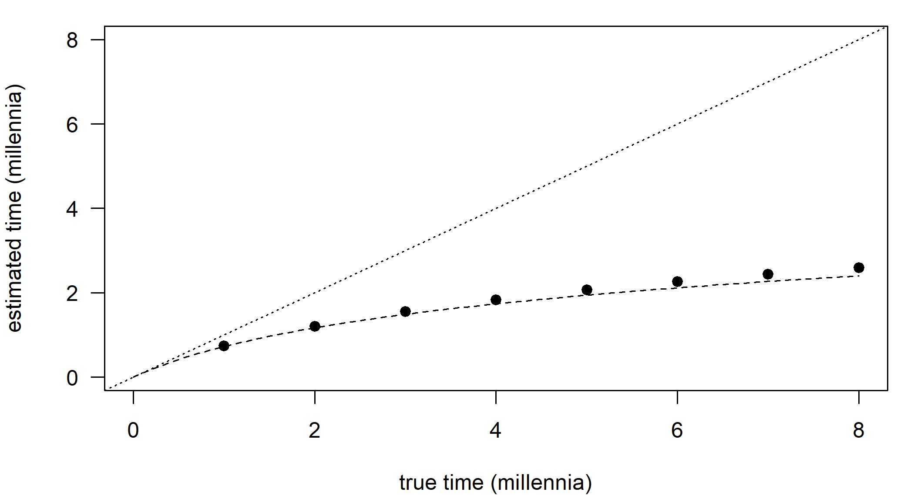
Figure I.1: Glottochronological estimates of divergence time when the 200 meanings have gamma-distributed replacement rates (shape 0.5, mean about 0.22 per millennium) but the formula assumes a single retention rate of 0.805. Points: estimates from the expected proportion of shared cognates; dashed curve: the analytical expectation under the gamma model; dotted line: estimate equal to the true time.
Rate variation biases the dates downwards, and the bias grows with depth: a split eight millennia old is dated to roughly two and a half millennia. Fast meanings are replaced early, so the cognates still shared at great depths are dominated by slow, stable meanings, and the proportion of shared cognates decays much more slowly than the single exponential \(e^{-2\bar k t}\) assumed by the formula. Formally, \(\mathbb{E}[e^{-2rt}] > e^{-2\mathbb{E}[r]t}\) by Jensen’s inequality, because the exponential is convex. The estimated time grows only logarithmically with the true time, which is why glottochronology systematically produced shallow dates for old families (Section 9.2.5).
3. Schleicher’s groupings missing from a modern textbook tree.
library(phangorn)
schleicher <- read.tree(text = paste0(
"((Germanic,(Lithuanian,Slavic)Balto-Slavic)Slavo-Germanic,",
"(((Greek,Albanian)Greek-Albanian,(Italic,Celtic)Italo-Celtic)",
"Graeco-Italo-Celtic,(Iranian,Indic)Aryan)Aryo-Graeco-Italo-Celtic)",
"Indo-European;"))
# modern view: Balto-Slavic and Indo-Iranian are accepted subgroups;
# the relations among the other branches are left unresolved
modern <- read.tree(text = paste0(
"(Germanic,(Lithuanian,Slavic)Balto-Slavic,Greek,Albanian,",
"Italic,Celtic,(Iranian,Indic)Indo-Iranian)Indo-European;"))
nodes <- Ntip(schleicher) + 2:Nnode(schleicher) # all but the root
groups <- lapply(nodes, function(nd) extract.clade(schleicher, nd)$tip.label)
names(groups) <- schleicher$node.label[-1]
data.frame(languages = sapply(groups, paste, collapse = ", "),
in_modern = sapply(groups, function(g) is.monophyletic(modern, g)))#> languages
#> Slavo-Germanic Germanic, Lithuanian, Slavic
#> Balto-Slavic Lithuanian, Slavic
#> Aryo-Graeco-Italo-Celtic Greek, Albanian, Italic, Celtic, Iranian, Indic
#> Graeco-Italo-Celtic Greek, Albanian, Italic, Celtic
#> Greek-Albanian Greek, Albanian
#> Italo-Celtic Italic, Celtic
#> Aryan Iranian, Indic
#> in_modern
#> Slavo-Germanic FALSE
#> Balto-Slavic TRUE
#> Aryo-Graeco-Italo-Celtic FALSE
#> Graeco-Italo-Celtic FALSE
#> Greek-Albanian FALSE
#> Italo-Celtic FALSE
#> Aryan TRUE#> [1] 4Only Balto-Slavic and Schleicher’s “Aryan” (Indo-Iranian) survive. Slavo-Germanic, Greek–Albanian, Italo-Celtic, Graeco-Italo-Celtic and the large Aryo-Graeco-Italo-Celtic group are absent. The unrooted RF distance is 4: Schleicher’s tree has six non-trivial splits (Slavo-Germanic and its complement, Aryo-Graeco-Italo-Celtic, are one split of the unrooted tree), the modern tree two, and they share two. Counting rooted clades instead, five of Schleicher’s seven non-root clades are missing. Italo-Celtic is still defended by some Indo-Europeanists, which is why the modern tree leaves it as part of a soft polytomy (Section 2.1) rather than asserting that it is wrong. Anatolian and Tocharian, unknown to Schleicher, would also have to be added to a modern tree.
4. The isoglosses of Figure 1.2 as binary characters, and the four-gamete test.
branches <- c("Celtic", "Italic", "Germanic", "Balto-Slavic", "Albanian",
"Greek", "Armenian", "Indo-Iranian", "Tocharian", "Anatolian")
iso <- list(
satem = c("Balto-Slavic", "Albanian", "Armenian", "Indo-Iranian"),
dat_m = c("Germanic", "Balto-Slavic"),
augment = c("Greek", "Armenian", "Indo-Iranian"),
medio_r = c("Celtic", "Italic", "Tocharian", "Anatolian"))
M_iso <- sapply(iso, function(s) as.integer(branches %in% s))
rownames(M_iso) <- branches
M_iso#> satem dat_m augment medio_r
#> Celtic 0 0 0 1
#> Italic 0 0 0 1
#> Germanic 0 1 0 0
#> Balto-Slavic 1 1 0 0
#> Albanian 1 0 0 0
#> Greek 0 0 1 0
#> Armenian 1 0 1 0
#> Indo-Iranian 1 0 1 0
#> Tocharian 0 0 0 1
#> Anatolian 0 0 0 1four_gamete_ok <- function(x, y) length(unique(paste(x, y))) < 4
pr <- combn(colnames(M_iso), 2)
data.frame(pair = paste(pr[1, ], pr[2, ], sep = " / "),
compatible = apply(pr, 2, function(p)
four_gamete_ok(M_iso[, p[1]], M_iso[, p[2]])))#> pair compatible
#> 1 satem / dat_m FALSE
#> 2 satem / augment FALSE
#> 3 satem / medio_r TRUE
#> 4 dat_m / augment TRUE
#> 5 dat_m / medio_r TRUE
#> 6 augment / medio_r TRUE(The mediopassive in -r is drawn as three separate outlines in the figure, around Italic and Celtic, Tocharian and Anatolian, but it is one isogloss.) Two pairs fail the test. Satem and the dative/instrumental plural in -m- are incompatible: Balto-Slavic has both (11), Albanian, Armenian and Indo-Iranian only satem (10), Germanic only -m- (01), and the rest neither (00). Satem and the augment are incompatible for the same reason: Armenian and Indo-Iranian have both, Balto-Slavic and Albanian only satem, Greek only the augment. No tree can accommodate either pair without homoplasy, which is Schmidt’s argument in miniature. Removing Albanian from the satem group, whose status the caption calls debated, does not change the verdict, since Armenian and Indo-Iranian then supply the 10 combination. All pairs involving the -r mediopassive are compatible because it is disjoint from the other isoglosses. That is consistent with its usual interpretation as a retention preserved at the periphery, which, being a symplesiomorphy, is uninformative about subgrouping however well it fits a tree.
Research
1. Dating a 25-language family with no records older than 200 years. A strong plan would make these points.
- Why not glottochronology. Its universal retention rate was refuted on languages with documented histories (Bergsland and Vogt 1962); rate variation among meanings biases its dates downwards, more so the deeper the split (Section 9.2.5); and pairwise dates need not fit one tree and carry no stated uncertainty (Section 1.5).
- Method. A Bayesian tree analysis of cognate data with among-meaning rate variation, an ascertainment correction, a relaxed clock and a tree prior that allows for incomplete sampling (Sections 9.5 and 10.4).
- Sources of calibration, in order of preference: dated historical events that separated speech communities (documented migrations or colonial resettlements, perhaps found in archival or missionary records); archaeological dates for events that plausibly split the language, such as the first settlement of an island; the 200-year-old records as dated tips, which constrain little but cost nothing; and, failing internal calibrations, an informative prior on the clock rate taken from families with good calibrations. Such a prior imports another family’s rate and should be presented as an assumption (Section 10.2).
- If the only calibrations are archaeological. Use soft calibration densities whose width reflects uncertainty about both the archaeological date and the link between event and language split (Section 10.3.1). Run the analysis without data and report the effective priors on the calibrated nodes and the root (Section 10.3.2), and drop each calibration in turn to see how far the root age moves. Report the root age as conditional on the archaeological linking hypotheses. Do not then use the date to “confirm” the same archaeological scenario, which would be circular (Section 10.7). The interpretation of the root as the age of the most recent common ancestor of the sampled varieties also needs stating (Section 6.10).
2. Testing a contested macro-family with a Bayesian tree. The design cannot answer the question because phylogenetic methods assume relatedness: any set of languages, related or not, yields a tree, and the established families inside the putative macro-family will form clades in any case, because their internal cognates cluster them (the caution box in Section 1.7). The cross-family “cognates” are the contested judgments themselves, so coding them builds the hypothesis into the data, and the posterior probability of a clade is conditional on a model in which all the languages descend from one ancestor. A design that could answer the question compares the observed similarity between the families with an explicit null model of chance resemblance. One fixes in advance a list of stable meanings and a criterion for a match, such as recurrent sound correspondences or consonant-class identity; computes the number of matches between the proto-languages or representative languages; and compares it with a permutation distribution obtained by re-pairing meanings at random, which keeps the languages’ phonologies and word shapes but destroys any genealogical link (Ringe 1992; Kessler 2001). Known loans, onomatopoeia and nursery words are excluded. The test’s false-positive rate is checked on pairs of families known to be unrelated, and multiple testing over many proposed matches is accounted for. Mass comparison without such a null model is not evidence (Campbell 2013). A probabilistic model comparison of “common origin” against “independent origins” is a further possibility, but it requires a model of word-form evolution and the same care about chance resemblance; PMI-based claims of deep relationships remain controversial for this reason (Jäger 2015).
3. A classification based on a few sound changes disagrees with a lexical tree at one deep node. A good answer examines the evidence in roughly this order.
- The sound changes. Are they innovations with a known direction, rather than retentions? Are they unusual, with specific conditioning, or natural changes that recur independently? Could any have diffused across already separate dialects, which their relative chronology may reveal? Are there exceptions or loans (Sections 3.7 and 3.10)?
- The lexical support. How strong is the support for the conflicting node: its posterior probability or bootstrap value, preferably from resampling meanings rather than cognate sets (Section 4.12)? Does the conflict rest on many characters or on a few cognate sets? Are those concentrated in borrowable meanings or shared with geographic neighbors (possible undetected loans), or tied to one coder’s decisions or to an ancient language with much missing data?
- Model artifacts. Long-branch attraction, rooting, ascertainment and rate variation can all move a deep node; check whether the node changes under alternative models or with the long-branched taxa removed (Sections 4.14 and 5.10).
- A direct comparison. Constrain the lexical analysis to the classification’s node and compare it with the unconstrained result by an AU test or a Bayes factor (Section 5.8). If the data cannot reject the classification, the conflict is not real evidence against it.
- Treelikeness. If both signals are real, the early history may have been a dialect network, which a split network or glottometric analysis would show (Chapter 8).
- Independent evidence: morphological irregularities, other data types, historical and geographic plausibility.
Trust the sound changes if they are few but diagnostic and the lexical signal is weak or contact-prone; trust the lexical tree if its support is strong and robust and the sound changes are natural or areal. Report the node as unresolved if neither holds (Section 1.9).
I.2 Chapter 2: Trees, Networks and Tree Space
Conceptual
1. Twelve primary branches of Indo-European as a flat list: hard or soft polytomy? Soft. The flat list records that the comparative method has not established a consensus on the higher-order structure; it does not claim that Proto-Indo-European split into twelve daughters at one moment (Section 2.1). The distinction matters because a method that needs a fully resolved tree must resolve the polytomy somehow, and every way of doing so asserts something. Resolving it into zero-length branches treats it as hard, a simultaneous split, which tells comparative methods that the twelve lineages share no history beyond the root; resolving it at random asserts one arbitrary history; leaving it unresolved is impossible for some methods (Section 2.2). The defensible options are to repeat the analysis over many random resolutions, or better over a posterior sample of trees, and to report how much the conclusions change (Sections 13.12.2 and 13.12.1).
2. “Proto-Germanic dates to 2,400 years ago” from English, Dutch and German. What has been dated is the crown node of the sampled languages, their most recent common ancestor. With only English, Dutch and German this is the ancestor of West Germanic, not of Germanic (Section 2.1). The crown age of a clade is the age of the MRCA of its sampled members; the stem age is the age of the node at which its lineage separated from its sister, the top of the branch leading to the crown. Neither can be the age of Proto-Germanic here: the crown is too young, and the stem of West Germanic is the split from North Germanic, which requires a North Germanic language to be in the tree. Adding Icelandic moves the MRCA back to the ancestor of North and West Germanic; adding Gothic, the sister of that lineage, moves it back to Proto-Germanic proper, the crown of Germanic. Each addition can only make the crown older. The stem age of Germanic would require a non-Germanic sister in the sample. Gothic, attested in the fourth century, would also enter as a dated tip and help calibrate the clock (Section 10.5.1).
3. Why an unrooted tree under a reversible model says nothing about the root, and how linguists root trees. Under a reversible, stationary model the likelihood is the same wherever the root is placed (the pulley principle, Section 5.3): the process looks the same run forwards or backwards, so the data carry no information about direction, and the inferred tree is unrooted. Ways of placing the root (Section 2.1):
- Prior knowledge of the first split (for example Anatolian as the sister of the rest of Indo-European): assumes that the expert subgrouping is correct, so the root cannot then be tested.
- Clock rooting: assumes that rates are constant, or vary in a way the relaxed-clock model captures, so that the root is the point from which the tips are equidistant in time; rate variation among lineages misplaces it.
- Directional models such as stochastic Dollo: assume that cognate classes are born once and only lost, so that the asymmetry between gain and loss locates the root; borrowing and parallel gains violate this (Section 7.7).
- Outgroup rooting, rarely available: assumes that the outgroup is related and lies outside the ingroup; an unrelated “outgroup” attaches essentially at random.
- Midpoint rooting: assumes roughly equal rates in all lineages.
4. Splits-equivalence, incompatible characters, and loss. By the splits-equivalence theorem a tree is the same thing as its set of pairwise compatible splits (Section 2.4). A binary cognate character is itself a split: the languages with the set against those without it. If the cognate set arose once, on one branch, and was inherited by every descendant with no loss, borrowing or parallel origin, then exactly the languages below that branch have it, so the character’s split is the split of that branch and is compatible with every other split of the tree. Contrapositively, a character incompatible with the tree cannot have that history: something else happened, namely borrowing, parallel gain (for example, independent semantic shift), loss in some descendants, or an error in the coding. In an unrooted, symmetric analysis 0 and 1 are interchangeable, so a loss in a subgroup is indistinguishable from a second, independent innovation that groups the losing languages with the languages that never had the set; the character conflicts with the subgroup. On a rooted tree with directed change, a pattern produced by one gain at an older node followed by losses below it needs no extra gain at all: the languages with the set are a paraphyletic remnant of one clade, and absence in the losing subgroup is recognized as a derived loss, not as evidence of a grouping with the languages that never had it (the Baltic–Germanic example in Section 2.4). Whether a pattern counts as homoplasy depends on the direction of change, which is why Dollo-type models treat loss as expected and only extra gains as conflict (Section 4.10).
5. What a reconstruction on the MCC tree discards. The MCC tree is one sampled tree with summary node heights (Section 2.5). Reconstructing word order on it discards the posterior uncertainty in topology (alternative placements of weakly supported clades, which the MCC tree presents as certain), in branch lengths and node ages (the MCC heights are averages over trees in which a clade exists and may correspond to no sampled history), and in model parameters. The reconstruction can be distorted even if the topology looks plausible. The answer at a node may depend on exactly the uncertain part of the tree, such as where one VSO language attaches. Ancestral-state probabilities depend on branch lengths, so averaged or distorted heights change them. A clade with posterior probability 0.4 is treated as if it had probability 1, so the uncertainty of the reconstruction is understated. And the node being reconstructed may not exist in most posterior trees. The remedy is to repeat the reconstruction over a sample of posterior trees, conditioning on the clade where it exists or using the MRCA of a fixed set of languages, and to report the distribution (Sections 6.6, 12.5 and 12.15.7).
6. Normalized RF distance 1 but quartet distance 0.1. A single “rogue” language that sits at opposite ends of two otherwise identical trees produces this combination. In a caterpillar tree, moving one tip from one end to the other changes the composition of every split, so no split is shared and the normalized RF distance is 1; but only quartets that contain the moved tip can change, and in a caterpillar with \(n\) tips these are a fraction \(4/n\) of all quartets. With 40 languages the quartet distance is exactly 0.1:
library(phangorn)
library(Quartet)
tips40 <- paste0("L", 1:40)
comb <- stree(40, type = "left", tip.label = tips40)
moved <- stree(40, type = "left", tip.label = c(tips40[-1], tips40[1]))
qs <- QuartetStatus(comb, cf = moved)
c(nRF = RF.dist(comb, moved, normalize = TRUE),
quartet = unname(qs[, "d"] / qs[, "Q"]))#> nRF quartet
#> 1.0 0.1The quartet distance better describes how similar the trees are: they agree on every relationship among 39 of the 40 languages. RF counts the moved language’s effect once in every split it passes through, which is exactly the coarseness described in Section 2.6. A practical lesson is to look for rogue taxa (one poorly attested language, say) before concluding from RF that two analyses disagree wholesale.
Computational
1. Crown ages of Germanic and Balto-Slavic, before and after dropping Swedish.
ie <- read.tree(text = paste0(
"((((((Italian:1.2,Spanish:1.2):0.3,French:1.5)Romance:2.5,",
"(Irish:2.5,Welsh:2.5)Celtic:1.5)ItaloCeltic:0.5,",
"((English:1.5,German:1.5):0.5,Swedish:2.0)Germanic:2.5):0.5,",
"((Russian:1.2,Polish:1.2):1.8,Lithuanian:3.0)BaltoSlavic:2.0):1.5,",
"(((Greek:4.8,Armenian:4.8):0.4,Albanian:5.2):0.6,",
"(Hindi:3.8,Persian:3.8)IndoIranian:2.0):0.7)IndoEuropean;"))
crown_age <- function(tree, tips) { # node ages are indexed by position
unname(branching.times(tree)[getMRCA(tree, tips) - Ntip(tree)])
}
germanic <- c("English", "German", "Swedish")
c(Germanic = crown_age(ie, germanic),
BaltoSlavic = crown_age(ie, c("Russian", "Polish", "Lithuanian")),
Germanic_without_Swedish = crown_age(drop.tip(ie, "Swedish"),
c("English", "German")))#> Germanic BaltoSlavic
#> 2.0 3.0
#> Germanic_without_Swedish
#> 1.5The crown of Germanic is 2.0 and that of Balto-Slavic 3.0 millennia (in the invented time scale of the toy tree). Without Swedish the “Germanic” crown falls to 1.5 millennia, because the MRCA of English and German is the West Germanic node; the sampled crown can only become younger, never older, when a language is removed. This is the sampling dependence of crown ages discussed in Section 2.1 and in Conceptual exercise 2.
2. Rooting the unrooted toy tree on each tip.
u <- unroot(ie)
romance <- c("Italian", "Spanish", "French")
on_tip <- sapply(u$tip.label, function(tip)
is.monophyletic(root(u, outgroup = tip, resolve.root = TRUE), romance))
c(rootings = length(on_tip), Romance_is_clade = sum(on_tip))#> rootings Romance_is_clade
#> 16 13#> [1] "Italian" "Spanish" "French"# rooting on every branch: the outgroup is everything below the branch
on_edge <- sapply(u$edge[, 2], function(nd) {
og <- if (nd <= Ntip(u)) u$tip.label[nd] else extract.clade(u, nd)$tip.label
is.monophyletic(root(u, outgroup = og, resolve.root = TRUE), romance)
})
c(branches = Nedge(u), Romance_is_clade = sum(on_edge))#> branches Romance_is_clade
#> 29 25Romance is a clade in 13 of the 16 tip rootings. The three that break it are the rootings on Italian, Spanish and French: with the root inside Romance, the smallest clade containing all three Romance languages is the whole tree. The unrooted tree has \(2n - 3 = 29\) branches and so corresponds to 29 rooted trees; Romance is a clade in all of them except the four whose root lies on a branch inside Romance (the three Romance tips and the internal branch joining Italian and Spanish). Rooting on the Romance stem branch keeps Romance a clade. An unrooted split \(A \mid B\) becomes a clade in a rooting only if the root lies on the \(B\) side, which is why an unjustified root can create or destroy any subgroup (Section 2.1).
3. Consensus resolution and MCC accuracy for 100, 400 and 1,600 characters.
set.seed(2024)
cons_runs <- do.call(rbind, lapply(c(100, 400, 1600), function(L)
t(replicate(10, { # ten simulated datasets per length
sim <- simSeq(ie, l = L, type = "USER", levels = c("0", "1"),
rate = 0.05)
bt <- bootstrap.phyDat(sim, bs = 200,
FUN = function(x) upgma(dist.hamming(x)))
bt <- .compressTipLabel(bt)
c(characters = L,
strict_nodes = Nnode(consensus(bt, p = 1, rooted = TRUE)),
majority_nodes = Nnode(consensus(bt, p = 0.5, rooted = TRUE)),
RF_MCC_to_true = RF.dist(maxCladeCred(bt), ie, rooted = TRUE))
}))))
aggregate(. ~ characters, data = as.data.frame(cons_runs), FUN = mean)#> characters strict_nodes majority_nodes RF_MCC_to_true
#> 1 100 1.5 8.7 11.0
#> 2 400 5.2 13.3 3.0
#> 3 1600 9.3 14.9 0.2#> RF_MCC_to_true
#> characters 0 2 4 6 8 10 12 14
#> 100 0 0 1 0 1 2 3 3
#> 400 3 1 4 2 0 0 0 0
#> 1600 9 1 0 0 0 0 0 0A fully resolved rooted tree of 16 languages has 15 internal nodes. With more characters both consensus trees become more resolved, the strict consensus much more slowly because a single deviant bootstrap tree is enough to collapse a clade: with 1,600 characters the majority-rule tree is nearly resolved (14.9 nodes on average) while the strict consensus still lacks several nodes (9.3). The MCC tree moves steadily towards the true topology (its mean RF distance falls from 11 to 3 to 0.2), but exact recovery is not guaranteed. With 400 characters only 3 of the 10 datasets gave the true tree (the chapter’s run was one of the lucky ones), and even with 1,600 one dataset in ten missed it by one clade (RF distance 2), because the deep branches of this tree are short. Replication is what reveals this: a single run per length can suggest that recovery is exact, or that it fails, by chance. This is parameter recovery (here, topology recovery) in the vocabulary of Section 6.10: the data were simulated on an ultrametric tree with independent, symmetric characters and no borrowing, exactly the conditions under which UPGMA is consistent. It shows that the method converges when its assumptions hold, and how many characters it needs for this tree; it says nothing about robustness to rate variation or borrowing, or about the adequacy of the model for real cognate data.
4. Path and quartet distances among three versions of the Germanic classification.
germ <- read.tree(text = paste0(
"(((English,West_Frisian)Anglo_Frisian,",
"(Dutch,German,Luxembourgish)Continental),",
"(Swedish,Danish,Norwegian,Icelandic,Faroese)North)Germanic;"))
quartet_distance <- function(t1, t2, generalized = FALSE) {
qs <- QuartetStatus(t1, cf = t2) # t2 is the reference
if (generalized) return(unname(qs[, "d"] / (qs[, "s"] + qs[, "d"])))
unname((qs[, "d"] + qs[, "r1"] + qs[, "r2"]) / qs[, "Q"])
}
set.seed(4)
g3 <- list(Grafen = compute.brlen(germ, method = "Grafen"),
unit = compute.brlen(germ, 1))
g3$resolved <- multi2di(g3$unit, random = TRUE) # new branches: length 0
pairs3 <- combn(names(g3), 2)
data.frame(
pair = paste(pairs3[1, ], pairs3[2, ], sep = " vs "),
path_topological = apply(pairs3, 2, function(p)
path.dist(g3[[p[1]]], g3[[p[2]]])),
path_weighted = apply(pairs3, 2, function(p)
path.dist(g3[[p[1]]], g3[[p[2]]], use.weight = TRUE)),
quartet = apply(pairs3, 2, function(p)
quartet_distance(g3[[p[1]]], g3[[p[2]]])),
GQD = apply(pairs3, 2, function(p)
quartet_distance(g3[[p[1]]], g3[[p[2]]], generalized = TRUE)))#> pair path_topological path_weighted quartet GQD
#> 1 Grafen vs unit 0.00 17.49 0.0000 0
#> 2 Grafen vs resolved 12.04 17.49 0.2952 0
#> 3 unit vs resolved 12.04 0.00 0.2952 0The Grafen and unit-length trees have the same topology, so their topological path distance and both quartet distances are zero, while the weighted path distance is not: the two conventions disagree about how far apart the languages are. The random resolution adds branches of length zero, so its weighted path distances equal those of the unit-length tree, but it counts more edges between some tips (topological path distance above zero) and it resolves quartets that the classification leaves open, which the plain quartet distance counts as disagreements and the GQD ignores. The quartet distance ignores the branch-length choices because a quartet is a statement about topology only, which of the three possible pairings of four languages a tree displays; no branch length enters its definition (Section 2.6). Note too that a quartet resolved by a zero-length branch is counted as resolved, although historically it is no better supported than the polytomy it came from.
5. Colless index of Yule and uniform trees for 10 and 50 languages.
colless <- function(tree) { b <- balance(tree); sum(abs(b[, 1] - b[, 2])) }
set.seed(1)
ci_sims <- lapply(c(n10 = 10, n50 = 50), function(n) list(
Yule = replicate(200, colless(rcoal(n))),
PDA = replicate(200, colless(TreeTools::RandomTree(n, root = TRUE)))))
par(mfrow = c(1, 2), mar = c(3, 4, 2, 1))
for (nm in names(ci_sims)) boxplot(ci_sims[[nm]], main = nm, las = 1,
ylab = "Colless index")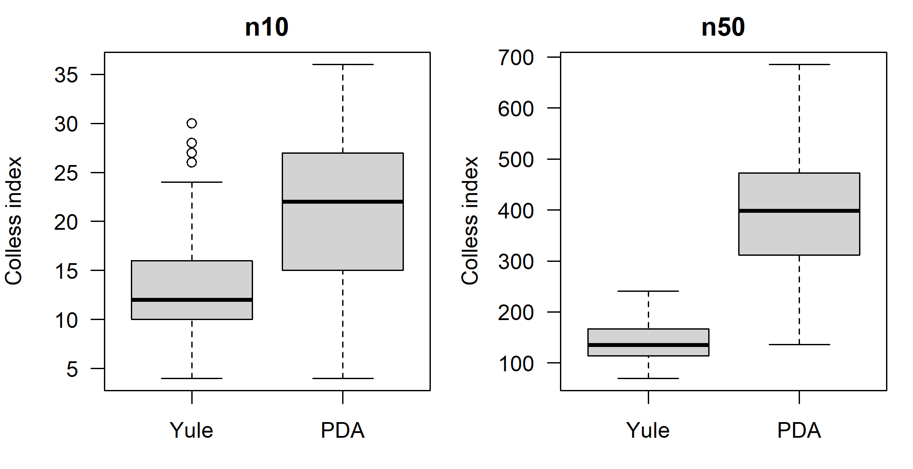
Figure I.2: Colless index of 200 Yule trees and 200 uniform (PDA) trees with 10 and 50 tips.
# separation: difference of means in units of the pooled SD, and the
# proportion of PDA trees above the largest of the middle 90% of Yule trees
t(sapply(ci_sims, function(s) c(
mean_Yule = mean(s$Yule), mean_PDA = mean(s$PDA),
standardized_diff = (mean(s$PDA) - mean(s$Yule)) /
sqrt((var(s$PDA) + var(s$Yule)) / 2),
PDA_above_Yule_95pct = mean(s$PDA > quantile(s$Yule, 0.95)))))#> mean_Yule mean_PDA standardized_diff PDA_above_Yule_95pct
#> n10 13.18 21.36 1.251 0.395
#> n50 140.44 394.60 2.890 0.950For ten languages the two distributions overlap substantially: the means differ by little more than one standard deviation, and only about 40 percent of uniform trees are less balanced than the least balanced 5 percent of Yule trees. For fifty languages they are well separated: the means differ by almost three standard deviations, and 95 percent of uniform trees lie beyond the 95th percentile of the Yule trees. The expected Colless index grows roughly like \(n \ln n\) under the Yule model but like \(n^{3/2}\) under the uniform model (Mooers and Heard 1997), so the gap widens with \(n\) faster than the spread within each model. The practical consequence for linguistics is that tests of tree shape need families of some size; for small families, even a strong difference in diversification process leaves little trace in balance (Section 2.7).
6. Counting trees, nodes and branches, and the prior probability of a topology.
log10_dfact <- function(m) (lfactorial(2 * m) - m * log(2) -
lfactorial(m)) / log(10)
log10_unrooted <- function(n) log10_dfact(n - 2)
log10_rooted <- function(n) log10_dfact(n - 1)
n <- c(4, 5, 10, 24)
n_rooted <- sapply(n, howmanytrees, rooted = TRUE)
n_unrooted <- sapply(n, howmanytrees, rooted = FALSE)
data.frame(n, rooted = format(n_rooted, digits = 4),
unrooted = format(n_unrooted, digits = 4),
agree_rooted = abs(log10(n_rooted) - log10_rooted(n)) < 1e-8,
agree_unrooted = abs(log10(n_unrooted) - log10_unrooted(n)) < 1e-8)#> n rooted unrooted agree_rooted agree_unrooted
#> 1 4 1.500e+01 3.000e+00 TRUE TRUE
#> 2 5 1.050e+02 1.500e+01 TRUE TRUE
#> 3 10 3.446e+07 2.027e+06 TRUE TRUE
#> 4 24 2.537e+28 5.639e+26 TRUE TRUEset.seed(3)
t(sapply(n, function(k) {
tr <- rtree(k)
c(n = k, rooted_nodes = Nnode(tr), rooted_edges = Nedge(tr),
unrooted_nodes = Nnode(unroot(tr)), unrooted_edges = Nedge(unroot(tr)))
}))#> n rooted_nodes rooted_edges unrooted_nodes unrooted_edges
#> [1,] 4 3 6 2 5
#> [2,] 5 4 8 3 7
#> [3,] 10 9 18 8 17
#> [4,] 24 23 46 22 45#> n = 5 n = 24
#> 6.667e-02 1.773e-27The counts agree, and random trees have \(n - 1\) internal nodes and \(2n - 2\) branches when rooted, \(n - 2\) and \(2n - 3\) when unrooted (Section 2.1). Under a uniform prior on unrooted topologies, any one topology of five languages has prior probability \(1/15 \approx 0.067\); any one of 24 languages has \(1/43!! \approx 1.8\times 10^{-27}\). A posterior probability of 0.3 for a single 24-language topology therefore means that the data have raised its probability by a factor of about \(10^{26}\) relative to the prior, an enormous update. It is nonetheless less informative than clade probabilities. It says that 70 percent of the posterior lies on other topologies without saying whether these differ in one cherry or in the deepest split, and in larger analyses no topology recurs at all, so the probability of “the” tree is unestimable. Clade (or split) probabilities say which parts of the tree are certain and which are not (Sections 2.3 and 2.10).
Research
1. Comparing a Bayesian tree of 120 Bantu languages with the Guthrie zones and Glottolog. A strong answer would make these points.
- The two references are different kinds of object. Glottolog’s classification is a genealogical hypothesis with many soft polytomies. Guthrie’s zones are a referential, largely geographic grouping that was never meant to be genealogical, so a zone that is not monophyletic in the tree is not an error of the tree.
- For Glottolog, use a quartet-based measure that ignores quartets the classification leaves unresolved, the generalized quartet distance of Pompei et al. (2011), or a rooted triplet analogue, rather than RF, which penalizes every resolved split absent from a polytomous classification (Section 2.6). Report also the proportion of Glottolog subgroups that are clades in the posterior, with their clade probabilities, which is directly interpretable.
- For the Guthrie zones, treat them as a partition, not a tree. Measure for each zone its posterior probability of monophyly, or the minimum number of changes needed to fit zone membership as a character on each posterior tree, compared with a null from permuted zone labels.
- Uncertainty. Compute every measure on each of, say, 1,000 posterior trees and report the distribution, not the value for the MCC tree. Calibrate it with two references: the distribution of the same measure among the posterior trees themselves (a noise floor) and its distribution for random trees on the same languages (a ceiling, since quartet distances between unrelated trees are near two thirds). Generalized RF measures that give partial credit to similar splits are an alternative (Smith 2020).
- Interpretation. Agreement with Glottolog is not independent validation: Glottolog rests on the comparative method and, for Bantu, partly on lexicostatistical work using similar data (Section 1.9.1) (Grollemund et al. 2015; Hammarström et al. 2024).
2. Are hunter-gatherer families less balanced than farmer families? The main threats to validity:
- Glottolog classifications reflect research intensity, so better-studied families (more often farmer families) are more resolved, and balance indices computed on polytomous trees are biased by resolution.
- The language/dialect decisions change the number and placement of tips (Section 3.2).
- Incomplete documentation and recent extinction are probably more severe for hunter-gatherer languages and remove lineages non-randomly.
- Balance indices scale with \(n\), and family sizes differ systematically between the groups.
- Subsistence is often mixed within a family, and families in the same region are not independent.
A design that addresses them: use indices normalized by their Yule and PDA expectations for each \(n\) (Section 2.7), or the rank of the observed index among simulated null trees with the same \(n\). Handle polytomies by averaging over many random resolutions and, separately, by using only fully resolved nodes, or by using Bayesian trees where they exist. Restrict to families above a minimum size. Compare the groups with a permutation test of subsistence labels stratified by family size and macroarea, or a mixed model with macroarea as a random effect. Robustness checks: an alternative classification source, subsampling families to equal size, varying dialect inclusion, excluding families with many extinct members, and checking whether results hold for \(\gamma\) and LTT-based tempo statistics as well as balance (Mooers and Heard 1997).
I.3 Chapter 3: Linguistic Data for Phylogenetics
Conceptual
1. English day and Latin dies; English wheel and Sanskrit cakrá-. Both cases are decided by regular sound correspondences established across many other words, not by the pair itself (Section 3.1). English t regularly corresponds to Latin d (two : duo, ten : decem, tooth : dent-), because Grimm’s law turned Indo-European *d into Germanic t. A cognate of dies in English would therefore begin with t, not d, and the resemblance of day and dies is a chance match that the correspondences reject. Conversely, English wh- (Old English hw-) regularly matches Latin qu- and Sanskrit k-/c- (what : quod), all from Indo-European *kʷ, and wheel, Greek kúklos and Sanskrit cakrá- all continue a reduplicated *kʷékʷlos, so the words are cognate although they now share almost no sounds. A phylogenetic analysis should not use raw similarity of form because it confounds inheritance with chance resemblance, borrowing and sound symbolism, and because it decays with time as sound change accumulates; the models assume that the states being compared are homologous, and similarity is not homology (Section 3.12 shows a string-similarity method making exactly the hand/hāth error).
2. Old English, Gothic and Classical Latin as ancestors, sisters or members of a dialect network. Following Section 3.2.2:
- Old English (West Saxon) is best treated as a member of a dialect network. Modern Standard English descends mainly from Midland (Mercian) dialects, not from West Saxon, but the two were near-contemporaries in one speech community and shared most of their vocabulary. In a dated analysis it can be a tip dated to its corpus (with a prior spanning roughly the ninth to eleventh centuries), placed on its own short branch or allowed to be a sampled ancestor, with the latter interpreted only as “very close to the ancestral network”.
- Gothic is a sister: the only well-attested East Germanic language, it split from the ancestor of North and West Germanic and left no descendants. It is a dated tip on a side branch (fourth century), never an ancestor.
- Classical Latin is a literary standard of a speech community whose spoken varieties gave rise to Romance, so it is a member of a dialect network, close to but not identical with the ancestor of the Romance languages. In a dated analysis it can be a sampled-ancestor candidate under a fossilized birth–death prior, or a dated tip, with a sensitivity analysis comparing the two and an analysis that removes it and uses it only as a calibration (Sections 10.6 and 10.5.1).
For all three, meanings not attested in the corpus are coded as missing (?), never as absent, and the choice of word for each meaning follows the everyday rather than the literary register where the corpus allows.
3. Why binary coding of a four-class meaning creates dependence, and how to respect the meaning slot. A meaning with four cognate classes becomes four binary characters. In each language normally exactly one of them is 1 and the other three are 0, so the characters are negatively correlated (Section 3.5.2), and a single replacement event changes two characters at once, one from 1 to 0 and another from 0 to 1. Models that multiply the probabilities of the four characters count each replacement as two or more independent changes, and the coding also implies that a language could have none or all of the classes. A model that respects the structure treats the meaning as one multistate character whose states are the cognate classes, for example an Mk-type model or an explicit replacement model with synonymy (Sections 7.2.1 and 7.8). A resampling scheme that respects it is the meaning-level bootstrap (or jackknife): resample meanings with replacement and carry all of a sampled meaning’s cognate sets into the replicate together (Section 4.12; Computational exercise 4 of Chapter 4).
4. One gamma distribution for 1,200 lexical characters, 25 sound changes and 30 morphological characters. The single rate distribution, branch lengths and model are effectively fitted to the lexical characters, which outnumber the others more than twenty to one (Section 3.10). Things that can go wrong: the sound changes and morphological characters are rare, (nearly) unique and directional events, but a reversible model with lexical rates treats them as fast, reversible characters, or assigns them to whichever rate category fits, so their evidence is neither weighted as strongly as their reliability deserves nor modeled as irreversible. They were also selected because they are innovations, an ascertainment process that the lexical correction does not describe. Their homoplasy and dependence structure differ from those of cognate sets. And if they conflict with the lexical signal, the combined analysis can let 1,200 weak characters override 55 strong ones, or let a few misfitted characters distort branch lengths. Partitioning gives each data type its own model: its own rate multiplier and rate variation, its own substitution model (for example irreversible or asymmetric for sound changes, Mk for multistate morphology) and its own ascertainment correction, with the topology linked. It also allows the fit of each partition to be checked separately and the partitions’ signals to be compared by analyzing them alone (Section 7.5.4).
5. Why agreement of a PCM tree with the accepted subgrouping is less circular than that of a lexical tree, but not independent. Lexical cognate judgments are themselves products of the comparative method that established the accepted subgroups, often made by specialists who knew those subgroups and used the same sound correspondences; a lexical tree partly returns what went into its data (Section 1.9.1). PCM characters are coded from grammatical analyses of each language without etymologies, so the evidence is distinct from the evidence that defined the subgroups (Section 3.9). It is still not fully independent. The coders know the languages and their classification, and parameter values are analyses that depend on a theory and on judgment. The parameter set was developed largely on Indo-European, especially Romance and Germanic, data. Some parameters reflect inherited morphology (articles, for example), which is part of the comparative evidence for subgroups. And syntax also converges through contact, so agreement can come partly from geography.
6. Three systematic kinds of cognate uncertainty and the direction of their bias.
- Undetected loans between close relatives or neighbors (which share sound changes and so give few clues): they add apparent shared cognates, pulling the borrower towards the donor, creating or strengthening false clades, and making the nodes involved too young (Section 3.13).
- One coder per branch with a consistent lumping or splitting tendency: lumping doubtful cases makes that branch’s languages look closer, shortening its branches and inflating its support; splitting does the reverse. Because the tendency follows the branch, it biases the tree rather than adding noise.
- Ancient or poorly documented languages, whose vocabulary comes from a corpus and whose phonology is reconstructed: genre-specific word choices and doubtful etymologies add spurious non-cognates, lengthening their terminal branches, pushing them off the ancestral path and, in dated analyses, the root deeper (Section 3.2.2).
- A fourth candidate: coders resolving doubtful cases in the light of the accepted classification, which makes accepted clades look better supported than they are.
7. Cœur, corazón, inimă, cor and anima, and evidence against Latin as the direct ancestor of Romance. Using Table 3.3: French cœur continues Latin cor itself, so cœur and cor share a lexeme-meaning trait (the same word in the meaning ‘heart’). Spanish corazón continues a derivative of cor, so it shares a root-meaning trait with cor and cœur but not a lexeme-meaning trait. Romanian inimă continues Latin anima ‘breath, soul’, so it shares a lexeme-cognate trait with anima (same word, meaning ignored) and no meaning-based trait with cor. Evidence against direct ancestry would be a meaning in which Classical Latin has a word of its own that no Romance language continues, while the Romance languages share a word that is older than that Latin word, for example one also found in other Indo-European branches. If Latin were the ancestor, Romance would have to have replaced the Latin word by regaining the older class, a reversal that cognate-set histories should not contain. If Latin is a sister on a dialect network, the pattern is expected: Latin innovated on its own branch while the spoken ancestor of Romance kept the old word. In a Latin-and-Romance matrix the signature is a Latin-only cognate class (a singleton on the Latin tip) in a meaning whose Romance class is shared with outgroups. Conventions that hide it: removing singletons, which deletes the Latin-only class; root-meaning coding that lumps the Latin word with its Romance replacement when they share a root; coding the Latin cell as missing or polymorphic, or choosing, among Latin synonyms, the one that matches Romance (slot filling with hindsight).
Computational
The solutions below use the toy word list wl, the function make_binary() and the clustering functions cluster_all() and bcubed() of Sections 3.4 and 3.12. The code that recreates them is identical to the chapter’s and is not repeated here.
1. Loans kept, coded as missing and dropped. The three treatments differ only in the cells of English ‘mountain’ and Russian ‘dog’. Kept, the loan counts as a 1 in its donor’s cognate set (English mountain with the Romance words). Coded as missing, the language gets ? for every cognate set of the meaning. Dropped, the loan is removed from its set while the language keeps 0 for all other sets of the meaning (Section 3.4); the cognate set of Russian sobaka, which contains only the loan, disappears, so the dropped matrix has 38 columns instead of 39.
to_pd <- function(B) phyDat(B, type = "USER", levels = c("0", "1"),
ambiguity = "?")
B_loans <- lapply(c(keep = "keep", missing = "missing", drop = "drop"),
function(l) make_binary(wl, loans = l))
sapply(B_loans, ncol)#> keep missing drop
#> 39 39 38nj_loans <- lapply(B_loans, function(B) NJ(dist.hamming(to_pd(B))))
class(nj_loans) <- "multiPhylo"
as.matrix(RF.dist(nj_loans))#> keep missing drop
#> keep 0 2 0
#> missing 2 0 2
#> drop 0 2 0# nearest neighbour(s) of each language in each tree
nearest <- function(tr) {
d <- cophenetic(tr); diag(d) <- Inf
sapply(rownames(d), function(l)
paste(sort(names(which(abs(d[l, ] - min(d[l, ])) < 1e-12))),
collapse = "+"))
}
nn <- sapply(nj_loans, nearest)
nn[apply(nn, 1, function(x) length(unique(x)) > 1), , drop = FALSE]#> keep missing drop
#> Lithuanian "Polish+Russian" "English" "Russian"
#> Irish "English" "Russian" "English"
#> Greek "French+Italian" "English" "English"
#> Hindi "French+Italian" "English" "English"Keeping the loans and dropping them give the same NJ topology; only the distances change. English moves a little closer to the Romance languages when mountain is kept (Hamming distance to French 0.205 instead of 0.237), and Russian a little further from Polish (0.051 instead of 0.026), because the kept sobaka forms a cognate set of its own in which Polish is coded 0, whereas dropped it leaves Russian with 0 in every set for ‘dog’. Neither English nor Russian moves: each is anchored in its subgroup by the other seven meanings. Coding the loans as missing changes the tree in two places (RF distance 2), and the languages that move are not the borrowers. Coding Russian ‘dog’ as missing removes the only meaning in which Russian and Polish differ, so their distance becomes zero. Because Hamming distances are computed over the characters observed in both languages, the missing cells also change Russian’s distances to everyone else (to English, from 0.256 to 0.154). Within the Balto-Slavic part of the tree Irish then joins Russian and Polish, and Lithuanian becomes their outer sister. With eight meanings a single cell decides such placements; the general lessons are that “missing” is not a neutral choice for distance methods, because it changes the denominators, and that the effects of a coding decision can appear in languages other than the one recoded.
2. Italian mangiare as a loan and Spanish comer as cognate with English eat.
wl2 <- wl
i_it <- wl2$Language == "Italian" & wl2$Concept == "eat"
i_es <- wl2$Language == "Spanish" & wl2$Concept == "eat"
wl2$Loan[i_it] <- TRUE # mangiare: from Old French
wl2$Cognate[i_es] <- "A" # comer: loose partial cognacy
wl2$CogID[i_es] <- "eat-A"
germ3 <- c("English", "German", "Swedish")
d_before <- as.matrix(dist.hamming(to_pd(make_binary(wl, "missing"))))
d_after <- as.matrix(dist.hamming(to_pd(make_binary(wl2, "missing"))))
round(rbind(Spanish_before = d_before["Spanish", germ3],
Spanish_after = d_after["Spanish", germ3],
Italian_before = d_before["Italian", germ3],
Italian_after = d_after["Italian", germ3]), 3)#> English German Swedish
#> Spanish_before 0.205 0.256 0.256
#> Spanish_after 0.158 0.211 0.211
#> Italian_before 0.205 0.205 0.205
#> Italian_after 0.158 0.158 0.158Both changes pull Spanish and Italian towards Germanic. Spanish comer now shares a class with English eat, German essen and Swedish äta, which removes two mismatches (the Germanic class and Spanish’s own class) and lowers its distance to each Germanic language by about 0.05. Italian ‘eat’ is now missing, so the meaning in which Italian differed from all three Germanic languages no longer counts, and its distances fall by the same amount. Spanish and Italian move together although the two decisions are of different kinds, one a loose treatment of partial cognacy and the other a loan flag. Both are judgment calls of the sort discussed in Section 3.5.1; if such decisions systematically favor one direction, their effects accumulate rather than cancel.
3. Multistate coding with the Irish polymorphism resolved as F and as G.
multistate <- tapply(wl$Cognate,
list(factor(wl$Language, levels = langs), wl$Concept),
function(x) paste(sort(unique(x)), collapse = "/"))
ms_F <- ms_G <- multistate
ms_F["Irish", "dog"] <- "F"
ms_G["Irish", "dog"] <- "G"
levs <- sort(unique(wl$Cognate))
pd_F <- phyDat(ms_F, type = "USER", levels = levs)
pd_G <- phyDat(ms_G, type = "USER", levels = levs)
nj_tree <- NJ(dist.hamming(to_pd(make_binary(wl, "missing"))))
c(F = parsimony(nj_tree, pd_F), G = parsimony(nj_tree, pd_G))#> F G
#> 30 30The two resolutions give the same parsimony score. Both madra (F) and gadhar (G) are singletons, found in Irish only, so whichever is chosen Irish has a unique state for ‘dog’, which costs exactly one step on any tree. This is a general point: resolving a polymorphism matters only if the alternative states are shared with other languages. (The Russian loan sobaka is kept as its own state D here; as a singleton it too is uninformative for parsimony.) Coding the cell as an ambiguity, F or G, which many programs do with polymorphisms (Section 2.2), would also give the same score here.
4. Synonyms, loans and a reconstruction in the Polynesian case-study data.
forms <- read.csv("data/case-study/forms.csv")
langs_cs <- read.csv("data/case-study/languages.csv")
per_pair <- table(paste(forms$Language_ID, forms$Parameter_ID))
c(forms = nrow(forms), language_meaning_pairs = length(per_pair),
pairs_with_synonyms = sum(per_pair > 1),
loans_flagged = sum(forms$Loan %in% c(TRUE, "true", "True")))#> forms language_meaning_pairs pairs_with_synonyms
#> 7518 6186 1061
#> loans_flagged
#> 213#> ID Name Glottocode
#> 17 Polynesian Proto Polynesian poly1242# meanings with the most language-meaning pairs that have synonyms
multi <- names(per_pair)[per_pair > 1]
syn_meaning <- table(sub("^[^ ]+ ", "", multi))
head(sort(syn_meaning, decreasing = TRUE), 5)#>
#> 185_we 186_you 124_sea 187_they 72_tohit
#> 23 23 20 20 19Of the 6,186 language–meaning pairs, 1,061 (about 17 percent) have more than one form, and 213 forms are flagged as loans. The reconstruction is “Proto Polynesian” (ID Polynesian), which should be removed before a tree is inferred (Section 3.2.3). The meanings with most synonyms are the pronouns ‘we’, ‘you’ and ‘they’, ‘sea’ and ‘to hit’. The pronouns are synonym-rich for a structural reason: Polynesian languages distinguish inclusive and exclusive ‘we’ and singular, dual and plural forms, so one gloss collects several paradigm cells, a known problem of Swadesh-type lists (Section 3.3). ‘Sea’ and ‘to hit’ have many near-synonyms (open sea, lagoon or reef sea; strike, punch, slap). Such meanings strain multistate coding most, because a language with several forms has a polymorphic state that most programs treat as uncertainty rather than as “both”. They also strain binary coding, by adding dependent characters and making the choice of the “basic” word decisive. The remedies are a protocol for choosing one word per meaning, as IE-CoR does (Section 3.11), splitting pronoun glosses into explicit paradigm cells, or models that allow synonymy (Section 7.8.3).
5. Automatic cognates at thresholds from 0.2 to 0.8, compared with the expert tree.
expert_nj <- NJ(dist.hamming(to_pd(make_binary(wl, "missing"))))
th <- seq(0.2, 0.8, by = 0.1)
acd_tab <- t(sapply(th, function(t) {
w <- wl
w$CogID <- cluster_all(wl, t)
auto_nj <- NJ(dist.hamming(to_pd(make_binary(w, "missing"))))
c(threshold = t, B3_F = unname(bcubed(wl$CogID, w$CogID)["F"]),
RF = RF.dist(auto_nj, expert_nj),
nRF = RF.dist(auto_nj, expert_nj, normalize = TRUE))
}))
round(acd_tab, 2)#> threshold B3_F RF nRF
#> [1,] 0.2 0.60 14 0.78
#> [2,] 0.3 0.64 10 0.56
#> [3,] 0.4 0.68 12 0.67
#> [4,] 0.5 0.73 12 0.67
#> [5,] 0.6 0.74 10 0.56
#> [6,] 0.7 0.78 12 0.67
#> [7,] 0.8 0.78 14 0.78The B-cubed F-score of the automatic cognates rises with the threshold, as in Figure 3.3, but the tree distance does not follow it: the NJ tree from automatic cognates differs from the expert tree by 10 to 14 splits out of a possible 18 at every threshold, with no trend. With eight meanings the trees are dominated by a few decisions, and a better clustering score does not translate into a better tree. On real data, studies that compare trees built from automatic and expert cognates find a much closer agreement (Rama et al. 2018), but the point stands that cognate-detection scores and tree accuracy are different targets and should both be reported (Section 3.12).
Research
1. Four text languages 1,500 to 800 years old, one of them a liturgical standard, among 40 languages. A strong answer would cover these points.
- Which to include as tips. Each ancient variety earns its place if it adds information about early states and dates and its data are adequate. Decide for each whether it is plausibly an ancestor, a sister or a dialect-network member (Section 3.2.2). The liturgical standard needs special care: its vocabulary may be archaic or frozen, its date of composition may precede its manuscripts by centuries, and it may preserve a stage older than the speech of its scribes. Include it only with a tip-age prior based on the date of the language, not the manuscripts, or else exclude it from the tips and use it as a calibration.
- Coding. Meanings unattested in the corpora are coded as missing, never absent. Choosing the basic word follows a written protocol favoring the everyday, unmarked word, with genre-specific and doubtful choices flagged; cognate judgments involving reconstructed phonology are flagged as doubtful, and alternative codings are prepared for them (Section 3.5.1).
- Dates. Use uniform or normal tip-age priors spanning the corpus or composition dates rather than point values (Section 10.5.1).
- Sensitivity analyses. (a) Sampled-ancestor prior versus ordinary tips, reporting prior and posterior probabilities of ancestry; (b) removing each ancient variety in turn, and all of them, using their dates as node calibrations instead; (c) restricting to meanings attested in all ancient varieties, or modeling missing data explicitly (Section 10.5.3); (d) prior-only runs to show what the tree prior and tip dates imply for the root age; (e) alternative codings of the doubtful cognates. Report how much the root age and the placement of the ancient tips move (Chang et al. 2015; Heggarty et al. 2023; Gavryushkina et al. 2014).
2. Combining Grambank features and lexical cognates for a family with deep, contested structure. A short methods plan would include:
- Dependent and inapplicable features. Grambank contains features that are logically conditional on others (a question about a category that a language may lack). Recode each controlling feature and its dependants either as one multistate character, or as a controlling character plus dependants coded “inapplicable” and handled by a method that distinguishes inapplicable from missing (Brazeau et al. 2019). Alternatively, start from a curated subset that removes strongly dependent features (Graff, Chousou-Polydouri, et al. 2025). Do not code inapplicable cells as ordinary missing data without saying so (Section 3.6).
- Partitioning. A lexical partition (binary CTMC or stochastic Dollo, with an ascertainment correction matching the coding and gamma rate variation) and a structural partition (binary or Mk models with their own rates and rate variation, and an ascertainment correction if invariant features were dropped), perhaps split further into phonology and morphosyntax if the data support it. Link the topology and keep rates unlinked (Section 7.5.4).
- Does the structural partition add genealogical or contact signal? Analyze each partition alone and compare the posteriors (clade probabilities, tree distances). Test whether the structural distances correlate with geography after controlling for lexical distance (partial Mantel), and whether nodes supported only by structural data unite geographic neighbors. Compare linked and unlinked topologies by stepping-stone Bayes factors. Run partition-specific posterior predictive checks (Section 6.9), and compare treelikeness (delta scores, split networks) per partition (Section 8.4). If possible, use a control subgroup with a known lexical history as Dunn et al. (2005) did. Structural features are not in general more stable than vocabulary (Greenhill et al. 2017), so deep structural signal must be shown, not assumed (Skirgård et al. 2023).
3. Measuring and propagating coding uncertainty for 200 meanings coded by one specialist. A feasible design:
- Recode a sample independently. Have a second specialist recode a random sample of about 40 to 50 meanings (20–25 percent), stratified by stability and semantic field, without seeing the first coding or the target classification.
- Compare the two codings meaning by meaning with B-cubed precision, recall and F-score (Equation (3.1)), which are symmetric between coders and insensitive to class labels (Section 3.12), together with agreement on pairwise cognacy decisions. Look for systematic patterns: particular branches, meanings or depths where one coder lumps and the other splits.
- Propagate. (a) Run the phylogenetic analysis on both codings of the recoded meanings (the rest unchanged) and compare clade probabilities and node ages. (b) If the disagreement is substantial, prepare several alternative full codings that differ in the doubtful cases, analyze each and combine the posterior samples. (c) Where software allows, code doubtful cells as ambiguous between classes (Section 3.5.1).
- Report the agreement scores with their uncertainty (from bootstrapping meanings), the meanings with the lowest agreement, and the effect of the alternative codings on the main conclusions; archive both codings in CLDF with doubtful judgments flagged (Section 3.13).
I.4 Chapter 4: Distance and Parsimony Methods
Conceptual
1. Why binary Hamming distances are dominated by shared absences. In a binary cognate matrix each meaning contributes one column per cognate class, and a language has a 1 in only one (or a few) of them. Most columns are therefore 0 in both of any two languages, and each such shared absence counts as a match (Section 4.2). The Hamming distance is then a small number of mismatches divided by a large number of mostly uninformative matches. Its value depends on how many cognate classes the other languages in the sample contribute: adding languages adds classes, hence shared absences, and makes every pair look more similar although nothing about the pair has changed. A non-cognate meaning also counts as two mismatches, not one. The meaning-based proportion of Equation (4.1) counts each meaning once, as shared or not shared, so it does not depend on the rest of the sample, has a direct interpretation (the proportion of meaning slots in which at least one replacement has occurred on the path between the languages) and can be corrected for multiple replacements by \(-\ln s_{ij}\) (Equation (4.3)).
2. Why UPGMA may group two conservative languages and neighbor joining should not. A lexically conservative language retains many words of the family’s ancestor, so two conservative languages from different branches share many retentions and have a small distance, smaller than the distance from either to its own faster-changing sister (Section 4.4). Such a matrix violates the three-point condition: for the triple formed by a conservative language \(A\), its fast sister \(B\) and the conservative \(C\), the two largest distances are not equal, because \(d_{AC}\) is small although \(A\) and \(B\) are sisters. UPGMA assumes ultrametricity, which is to say that the smallest distance in a triple identifies the sisters, and so it joins \(A\) and \(C\), mistaking shared conservatism for shared ancestry, the distance analogue of grouping by symplesiomorphy. Neighbor joining assumes only additivity (the four-point condition). Its criterion \(Q_{ij} = (n-2)d_{ij} - R_i - R_j\) compares each distance with the languages’ total divergence from all others, so a fast language with a large \(R_i\) is compensated for its long branch (the worked example in Section 4.5). With additive, or nearly additive, corrected distances NJ joins the true sisters.
3. Cost schemes for four kinds of character (Table 4.2).
- (a) Cognate sets (binary presence/absence): Dollo, with gain much more expensive than loss, because a cognate set is born once and can be lost independently in many lineages. It fails when the same class is “regained” by borrowing from a relative, or when two lineages independently recruit the same inherited root for the meaning (parallel semantic shift), both of which require a second gain. For multistate meaning slots, Fitch (unordered) costs are the usual choice.
- (b) A phoneme merger: Camin–Sokal (irreversible, \(0 \to 1\) only), since a merger is not usually undone. It can fail because apparent unmergers do occur, through dialect borrowing, spelling pronunciations or near-mergers, and the cost scheme forbids them. Irreversibility also does nothing to prevent the same natural merger arising independently in several lineages.
- (c) The number of nominal cases: Wagner (ordered), on the assumption that systems gain or lose cases one at a time. It fails when a whole case system collapses at once (as in the transition from Old to Middle English) or several cases arise together from grammaticalized adpositions, and the count itself depends on the analyst’s definition of a case.
- (d) Basic word order: Fitch (unordered). It fails because transitions are not equally likely (SOV to SVO is much more common than the reverse, and VSO is linked to SVO), and because word order spreads by contact; an asymmetric cost matrix, or a model with estimated rates, would describe it better (Chapter 13).
4. Why singletons are uninformative for parsimony but informative for likelihood. A singleton requires exactly one step on every tree (the change on the terminal branch of the language that has it), so it adds the same amount to the length of every tree and cannot favor any topology (Section 4.9). Under likelihood, the probability of a singleton pattern depends on branch lengths: many singletons in a language indicate a long terminal branch, i.e. fast lexical change in that lineage. Because branch lengths are shared by all characters, the singletons change the likelihood that other characters contribute on each topology (and help the model correct for long-branch effects). They also inform the rate and ascertainment parameters and are essential for estimating branch lengths, and hence dates. Removing them requires a matching ascertainment correction (Section 5.6).
5. Three reasons why 98 percent parsimony bootstrap support need not mean a real clade. Bootstrap support measures repeatability under resampling, not truth (Section 4.12).
- Systematic error: if parsimony is inconsistent for these data, for example because two long branches attract (Section 4.14), resampling reproduces the same wrong clade again and again, with high support.
- Undetected borrowing: loans between two languages create many shared characters that parsimony reads as synapomorphies, and the bootstrap faithfully reports their abundance.
- Non-independence: binary coding turns one replacement into several characters and loans come in batches, so resampling cognate sets treats dependent characters as independent and overstates support; resampling meanings would give lower values.
Other reasons: curated data were not sampled at random from a population of characters (Goldstein 2020), and coding decisions may already encode the clade.
6. A new method recovers every established subgroup of Indo-European. It shows that the method does not destroy a strong, obvious signal and passes the easiest test, and so is not grossly broken. It does not show that the method is accurate where the answer is unknown. The cognate judgments were made with the comparative method that defined the subgroups, low-level subgroups with hundreds of shared cognates are recovered by almost any method (in Nakhleh, Warnow, et al. (2005) every method except UPGMA recovered them), and agreement says nothing about the deep, contested nodes, about branch lengths or about dates (Sections 1.9.1 and 4.13). Before trusting the method on a family whose subgrouping is unknown one would want: its performance on the contested Indo-European nodes compared with other methods; simulations with realistic violations (borrowing, rate variation among meanings and lineages, dependence within meaning slots) testing robustness rather than recovery (Section 6.10); tests on other families with documented histories, especially splits known from history rather than from the comparative method; checks of model adequacy on the target data; and evidence that its support values are calibrated, so that clades with 95 percent support are right about 95 percent of the time.
7. Merging MDS clusters of dialects before a parsimony analysis. Before accepting the merge one would check:
- Fit. A stress of 18 percent is “poor” by Kruskal’s benchmarks (Section 4.7): inspect the scree plot and the third and fourth axes, where the clusters may separate.
- Robustness of the clusters. Do they persist under other distance measures (Hamming, Jaccard, corrected), other ordinations, a split network and resampling of characters?
- Homogeneity. Are the dialects in each cluster really alike on the characters that matter for the tree, or close only on average?
- Cause. Are the clusters the product of contact or geography rather than descent?
The merge itself changes the tree and its support. Characters that vary within a cluster must be recoded (as polymorphisms, by majority or by union), which removes within-cluster conflict and homoplasy. With fewer, internally homogenized taxa a resolved tree is easier to obtain, and its resolution is partly a consequence of the merge, as in Skelton (2015). Support values rise because conflicting characters were absorbed, not because the evidence improved, and reticulation inside the cluster becomes invisible. The merge should be reported as a modeling choice and the analysis repeated with the unmerged dialects for comparison.
Computational
The solutions use the word list W and the functions ldn_word() and ldn_ldnd() of Section 4.2, and the simulated tree tree12 and cognate matrix cog of Section 4.5; they are recreated with the chapter’s code, which is not repeated here. Exercises 4 and 6 also use the toy word list wl and make_binary(), recreated above for Chapter 3.
1. Adding the meaning ‘foot’ to the word list.
ldnd_matrix <- function(W) {
L <- colnames(W); n <- length(L)
D <- matrix(0, n, n, dimnames = list(L, L))
for (i in 1:(n - 1)) for (j in (i + 1):n)
D[i, j] <- D[j, i] <- ldn_ldnd(W[, i], W[, j])["LDND"]
D
}
W_foot <- rbind(W, foot = c("fut", "fus", "vut", "fut", "pyEde", "pye",
"pye", "noga", "noga", "poDi"))
D10 <- ldnd_matrix(W); D11 <- ldnd_matrix(W_foot)
foot_trees <- list(UPGMA_10 = upgma(as.dist(D10)),
UPGMA_11 = upgma(as.dist(D11)),
NJ_10 = nj(as.dist(D10)), NJ_11 = nj(as.dist(D11)))
c(UPGMA = RF.dist(foot_trees$UPGMA_10, foot_trees$UPGMA_11),
NJ = RF.dist(foot_trees$NJ_10, foot_trees$NJ_11))#> UPGMA NJ
#> 2 2invisible(lapply(names(foot_trees), function(nm)
cat(nm, write.tree(foot_trees[[nm]], digits = 2), "\n")))#> UPGMA_10 (Greek:0.44,((Russian:0.12,Polish:0.12):0.3,((Swedish:0.28,(English:0.25,(German:0.19,Dutch:0.19):0.065):0.027):0.13,(French:0.37,(Italian:0.19,Spanish:0.19):0.18):0.034):0.017):0.012);
#> UPGMA_11 ((Russian:0.11,Polish:0.11):0.33,((Swedish:0.27,(English:0.25,(German:0.2,Dutch:0.2):0.044):0.019):0.15,(Greek:0.41,(French:0.35,(Italian:0.2,Spanish:0.2):0.16):0.06):0.0091):0.019);
#> NJ_10 ((Italian:0.17,Spanish:0.21):0.17,(French:0.36,Greek:0.43):0.043,((((German:0.2,Dutch:0.17):0.046,English:0.27):0.048,Swedish:0.27):0.11,(Russian:0.11,Polish:0.13):0.34):0.021);
#> NJ_11 (Dutch:0.18,German:0.23,((((((Italian:0.18,Spanish:0.21):0.15,French:0.36):0.033,Greek:0.43):0.048,(Russian:0.11,Polish:0.12):0.35):0.13,Swedish:0.27):0.027,English:0.27):0.021);Adding one meaning changes both trees by one split (RF distance 2). In the UPGMA tree Greek moves from being the sister of all other languages to joining the Romance languages, and in the NJ tree Greek and French, which were sisters, are separated: French returns to Italian and Spanish, and Greek becomes the sister of the three Romance languages (the NJ tree is unrooted and is printed from a different arbitrary root, but its Germanic and Slavic splits are unchanged). Foot happens to be a meaning in which Greek poDi, Italian pyEde and Spanish and French pye share a p and similar vowels, so it adds form similarity between Greek and Romance. With ten meanings one word list entry can move a language, which shows how unstable form-based trees from short lists are; it is also a reminder that LDND rewards similarity of form, not shared innovations.
2. Saturation: three rate multipliers and four tree-building methods. The chapter’s tree12 is a random tree whose branch lengths were multiplied by 0.4. We regenerate the same random tree and multiply its branch lengths by 0.2, 0.4 (the chapter’s tree) and 1.0, simulate five datasets of 400 characters for each, and average the RF distances to the truth. A single dataset per setting gives very noisy rankings.
set.seed(11)
base12 <- rtree(12, tip.label = paste0("L", 1:12)) # tree12 = base12 x 0.4
sat_runs <- do.call(rbind, lapply(c(0.2, 0.4, 1), function(m) {
tr <- base12; tr$edge.length <- tr$edge.length * m
t(replicate(5, {
sim <- simSeq(tr, l = 400, type = "USER", levels = c("0", "1"))
M <- as.character(sim)
M <- M[, apply(M, 2, function(z) length(unique(z)) > 1)]
x <- phyDat(M, type = "USER", levels = c("0", "1"))
p <- as.matrix(dist.hamming(x))
d <- as.dist(-0.5 * log(1 - 2 * pmin(p, 0.499)))
mp <- pratchet(x, trace = 0, minit = 20, k = 10, all = FALSE)
c(multiplier = m, saturated_pairs = mean(p[upper.tri(p)] > 0.45),
UPGMA = RF.dist(upgma(d), tr), NJ = RF.dist(nj(d), tr),
FastME = RF.dist(fastme.bal(d), tr), MP = RF.dist(mp, tr))
}))
}))
aggregate(. ~ multiplier, data = as.data.frame(sat_runs), FUN = mean)#> multiplier saturated_pairs UPGMA NJ FastME MP
#> 1 0.2 0.1606 11.6 3.6 3.6 1.6
#> 2 0.4 0.3212 11.2 3.6 3.6 4.0
#> 3 1.0 0.7970 10.0 9.2 8.4 8.8At the lowest rate few pairs of languages are near saturation, and all methods except UPGMA do well, parsimony best of all. At the chapter’s rate (0.4) parsimony has already lost accuracy (RF 4.0 against 1.6), while NJ and FastME are unchanged. At the highest rate four fifths of the pairs differ in more than 45 percent of characters, close to the saturation value of one half; the corrected distances become huge and noisy, and NJ, FastME and parsimony all degrade sharply (RF 8 to 9 of a possible 18). UPGMA is poor throughout because the simulated tree is not clocklike; its errors come from its clock assumption rather than from saturation. So parsimony degrades first, as its implicit assumption that change is rare fails, and the corrected distance methods hold out longer, until saturation leaves too little information for any method. Five replicates per setting is still few, and the ranking between NJ and FastME is not resolved by this experiment.
3. Long-branch attraction with a longer internal branch.
quartets <- lapply(c(AB = "((A,B),(C,D));", AC = "((A,C),(B,D));",
AD = "((A,D),(B,C));"), function(s) {
t <- unroot(read.tree(text = s)); t$edge.length <- rep(0.1, Nedge(t)); t })
one_replicate <- function(fz, nsites) {
x <- simSeq(fz, l = nsites, type = "USER", levels = c("0", "1"))
ps <- sapply(quartets, parsimony, data = x)
ll <- sapply(quartets, function(t)
optim.pml(pml(t, x), optEdge = TRUE,
control = pml.control(trace = 0))$logLik)
c(MP = names(which.min(ps + runif(3, 0, 1e-6))),
ML = names(which.max(ll)))
}
set.seed(8)
lba_tab <- do.call(rbind, lapply(c(0.04, 0.15), function(ib) {
fz <- read.tree(text = sprintf(
"((A:0.05,B:0.7):%s,(C:0.05,D:0.7):%s);", ib, ib))
t(sapply(c(100, 500, 2000), function(n) {
r <- replicate(30, one_replicate(fz, n))
c(internal = 2 * ib, characters = n,
MP_correct = mean(r["MP", ] == "AB"),
ML_correct = mean(r["ML", ] == "AB"))
}))
}))
lba_tab#> internal characters MP_correct ML_correct
#> [1,] 0.08 100 0.0000 0.4667
#> [2,] 0.08 500 0.0000 0.8667
#> [3,] 0.08 2000 0.0000 0.9667
#> [4,] 0.30 100 0.4667 0.8333
#> [5,] 0.30 500 0.2667 1.0000
#> [6,] 0.30 2000 0.1333 1.0000(The internal branch of the unrooted quartet is the sum of the two branches at the root, 0.08 in the chapter and 0.30 here.) With the chapter’s short internal branch parsimony never chooses the true quartet, and more data make no difference. Lengthening the internal branch moves the tree partly out of the Felsenstein zone: parsimony is now right about half the time with 100 characters. But the two long branches (0.7 each) are still much longer than the internal branch, so convergent changes on them still outnumber the genuine synapomorphies on the internal branch, and parsimony’s success falls as characters are added (from 0.47 to 0.13). It is still inconsistent. Maximum likelihood under the generating model improves with more data in both settings and reaches 1 faster when the internal branch is longer. The Felsenstein zone is defined by the ratio of the long branches to the internal branch, not by the internal branch alone; whether parsimony is consistent depends on where the true branch lengths fall relative to that boundary (Section 4.14).
4. A meaning-level bootstrap for the toy word list.
pd_toy <- to_pd(make_binary(wl, "missing"))
ref_nj <- midpoint(NJ(dist.hamming(pd_toy)))
meanings <- unique(wl$Concept)
set.seed(4)
boot_meaning <- lapply(1:200, function(b) {
s <- sample(meanings, replace = TRUE)
wb <- do.call(rbind, lapply(seq_along(s), function(i) {
x <- wl[wl$Concept == s[i], ]
x$Concept <- paste0(s[i], "_", i) # a resampled copy is new
x$CogID <- paste(x$Concept, x$Cognate, sep = "-")
x
}))
NJ(dist.hamming(to_pd(make_binary(wb, "missing"))))
})
class(boot_meaning) <- "multiPhylo"
boot_set <- bootstrap.phyDat(pd_toy, bs = 200,
FUN = function(x) NJ(dist.hamming(x)))
clades <- prop.part(ref_nj)
sizes <- lengths(clades)
keep <- sizes > 1 & sizes < Ntip(ref_nj) - 1
data.frame(
clade = sapply(clades[keep], function(i)
paste(attr(clades, "labels")[i], collapse = ", ")),
meanings = prop.clades(ref_nj, boot_meaning)[keep] / 200,
cognate_sets = prop.clades(ref_nj, boot_set)[keep] / 200)#> clade
#> 1 Greek, Hindi
#> 2 Italian, Spanish, French, Greek, Hindi
#> 3 English, German, Swedish, Italian, Spanish, French, Greek, Hindi
#> 4 English, German, Swedish
#> 5 Russian, Polish, Lithuanian, Irish
#> 6 German, Swedish
#> 7 Italian, Spanish, French
#> 8 Italian, French
#> 9 Russian, Polish
#> 10 Russian, Polish, Irish
#> meanings cognate_sets
#> 1 0.855 0.530
#> 2 0.785 0.765
#> 3 0.560 0.635
#> 4 0.700 0.685
#> 5 0.560 0.635
#> 6 0.965 1.000
#> 7 0.915 0.905
#> 8 0.905 0.965
#> 9 0.965 0.980
#> 10 0.550 0.545Most clades have similar support under the two schemes, and some have higher support when meanings are resampled. Three features of the toy data explain this, and they qualify the general expectation that resampling meanings should lower support. First, with only eight meanings the meaning-level bootstrap is very coarse: each replicate contains a few meanings two or three times, and clades supported by several meanings (German and Swedish, Romance, Russian and Polish) get high support under both schemes. Second, many cognate sets in the toy data are singletons, which add noise to the cognate-set replicates but are resampled together with their meaning in the other scheme. Third, the groupings that rest on shared absences rather than shared cognates behave erratically: Greek and Hindi, which share almost nothing except their lack of the other languages’ cognates, get 0.86 from meanings but 0.53 from cognate sets, and Irish with the Slavic languages gets about 0.55 under both. In real datasets, with many cognate sets per meaning, resampling cognate sets treats the dependent characters of a meaning as independent evidence and typically gives higher support than resampling meanings (Section 4.12). The meaning-level bootstrap is the scheme that respects how the data were generated; with eight meanings neither scheme can deliver reliable support values.
5. Consistency and retention indices of three trees.
ci_trees <- list(MP = mp_tree, NJ = nj(d_jc), true = tree12)
round(sapply(ci_trees, function(t) c(length = parsimony(t, cog),
CI = CI(t, cog), RI = RI(t, cog))), 3)#> MP NJ true
#> length 821.000 831.000 827.000
#> CI 0.459 0.454 0.456
#> RI 0.499 0.488 0.493ri_site <- RI(mp_tree, cog, sitewise = TRUE)
minority <- apply(as.character(cog), 2, function(z) min(table(z)))
table(minority = minority, RI_is_NaN = is.nan(ri_site))#> RI_is_NaN
#> minority FALSE TRUE
#> 1 0 58
#> 2 81 0
#> 3 61 0
#> 4 70 0
#> 5 61 0
#> 6 46 0The most parsimonious tree has the highest CI, simply because it is the shortest tree and CI is the minimum possible number of steps divided by the number of steps on the tree. The true tree requires a few more steps than the most parsimonious tree and so has a lower CI. A higher CI means a better fit to the parsimony criterion, not a better estimate of history: with this much homoplasy the true history is not the most parsimonious one (Section 4.11). The site-wise RI is NaN for exactly the characters whose minority state occurs in a single language (singletons; the constant characters were removed when cog was built). For such a character the minimum and maximum numbers of steps are both 1, so \(g_c - m_c = 0\) and the RI is \(0/0\). The CI of a matrix can approach but never reach zero because every variable character needs at least one step (\(m_c \ge 1\)) while its number of steps on any tree is bounded by \(g_c\), the number of steps on a star tree, so \(\mathrm{CI} \ge \sum_c m_c / \sum_c g_c > 0\). It approaches zero only for very many taxa and characters whose states are maximally scattered over the tree.
6. Hamming and Jaccard distances, metric and non-metric MDS, and the triangle inequality.
library(MASS)
B01 <- make_binary(wl) # loans kept: no missing cells
X01 <- matrix(as.numeric(B01), nrow(B01), dimnames = dimnames(B01))
d_ord <- list(Hamming = dist.hamming(to_pd(B01)),
Jaccard = dist(X01, method = "binary"))
# German and Swedish have identical rows; isoMDS() needs positive
# dissimilarities, so zero distances are raised to a tiny value
stress_k <- sapply(d_ord, function(d) {
d[d == 0] <- 1e-6
sapply(1:4, function(k) isoMDS(d, k = k, trace = FALSE)$stress)
})
round(stress_k, 1)#> Hamming Jaccard
#> [1,] 25.9 29.7
#> [2,] 20.4 8.3
#> [3,] 2.6 1.8
#> [4,] 0.2 0.0mds2 <- lapply(d_ord, cmdscale, k = 2, eig = TRUE)
round(sapply(mds2, function(m) m$GOF[1]), 2) # share of eigenvalues#> Hamming Jaccard
#> 0.62 0.50par(mfrow = c(1, 3), mar = c(4, 4, 2, 1), las = 1)
matplot(1:4, stress_k, type = "b", pch = 1:2, lty = 1:2, col = "black",
xlab = "dimensions k", ylab = "stress (%)", main = "Stress")
legend("topright", colnames(stress_k), pch = 1:2, lty = 1:2, bty = "n")
for (nm in names(mds2)) {
xy <- mds2[[nm]]$points
# languages at (nearly) the same point share one label
key <- paste(round(xy[, 1] / diff(range(xy[, 1])), 2),
round(xy[, 2] / diff(range(xy[, 2])), 2))
first <- !duplicated(key)
labs <- tapply(rownames(xy), key, paste, collapse = "/")[key[first]]
plot(xy[first, ], pch = 19, cex = 0.6, xlab = "axis 1", ylab = "axis 2",
main = nm, xlim = range(xy[, 1]) + c(-0.05, 0.35) * diff(range(xy)))
text(xy[first, ], labs, pos = 4, cex = 0.7, xpd = NA)
}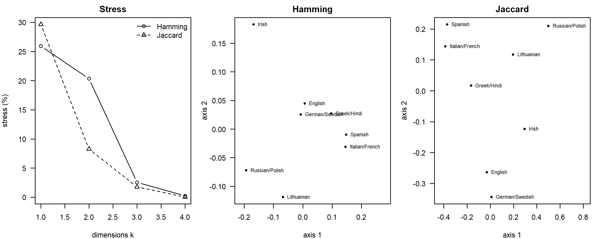
Figure I.3: Left: Kruskal stress of non-metric MDS of the toy word list against the number of dimensions, for Hamming and Jaccard distances. Center and right: two-dimensional classical MDS of the same distances.
#> [1] 0# triangle inequality d_ik <= d_ij + d_jk over all triples
triangle_violations <- function(D, tol = 1e-12) {
D <- as.matrix(D); tr <- combn(nrow(D), 3)
sum(apply(tr, 2, function(x) {
i <- x[1]; j <- x[2]; k <- x[3]
any(c(D[i, k] - D[i, j] - D[j, k], D[i, j] - D[i, k] - D[k, j],
D[j, k] - D[j, i] - D[i, k]) > tol)
}))
}
c(triples = choose(12, 3), corrected_d_jc = triangle_violations(d_jc),
hamming_p_ham = triangle_violations(p_ham))#> triples corrected_d_jc hamming_p_ham
#> 220 89 0One dimension fits poorly for both distances (stress 26 and 30 percent). Two dimensions are still poor for Hamming distances (20 percent) but fair for Jaccard distances (8 percent), and three dimensions fit both well, so the scree plots point to three dimensions. The two classical MDS axes carry 62 and 50 percent of the eigenvalue sums. Languages with identical or nearly identical rows (German and Swedish, Italian and French, Russian and Polish) are plotted as one point. The two configurations differ in an instructive way. In the Hamming configuration most languages are compressed near the center and the outliers are Irish and the Balto-Slavic languages, which have many cognate classes not shared with the others; shared absences dominate the distances (Section 4.2). The Jaccard configuration, which ignores shared absences, spreads the Romance, Slavic and Germanic groups to three corners. In both, Greek and Hindi fall on the same point: each has a class of its own in most meanings, so their distances to everyone else are the same, and both distances make them look alike although they share almost no cognates. The NJ trees from the two distances have the same topology (RF 0) and contain the same Germanic, Romance and Balto-Slavic groups as the ordinations, plus a resolution of their relationships that eight meanings can hardly support, including the spurious Greek–Hindi clade. German and Swedish have distance zero, which isoMDS() does not accept, so zero distances were replaced by a negligible positive value; this does not change the rank order of the distances, which is all that non-metric MDS uses.
The Hamming distances satisfy the triangle inequality in every triple, as a metric must. The corrected distances violate it in 89 of the 220 triples. The correction \(-\tfrac12 \ln(1 - 2p)\) stretches large distances much more than small ones, and the pairs whose uncorrected distance was close to one half, capped at 0.499 before correction, receive very large values. This is exactly the problem that makes metric ordination of corrected distances unreliable (Section 4.2).
Research
1. A preliminary classification of 300 languages from ASJP lists without cognate judgments.
- Distance and tree. LDND (Section 4.2), or better a PMI-based alignment distance that learns sound correspondences (Jäger 2013). Build the tree with NJ, BIONJ or balanced minimum evolution, not UPGMA, since rates surely vary among lineages, and draw a NeighborNet alongside it (Bryant and Moulton 2004).
- What the results can tell you. Candidate low-level groupings to target in fieldwork; outliers; regions of conflicting signal.
- What they cannot. That the languages are related at all (LDND near 1 is the chance level); deep structure, where 40 short words carry little signal and form similarity has decayed; dates; and anything that depends on distinguishing inheritance from borrowing (the caution box in Section 4.2; Greenhill (2011)).
- Contact versus descent, and chance. Compare groupings with geography (do they simply mirror distance?) and look for boxes in the network (Section 8.4). Compute distances from the most stable versus the most borrowable meanings separately. Inspect the shared forms for loan phonology and for words of the regional lingua franca. Bootstrap meanings to see which groupings are stable, and compare distances with a permutation null obtained by shuffling meanings. Report all groupings as hypotheses for the comparative method to test (Holman et al. 2008; Wichmann, Holman, et al. 2010).
2. Weighted compatibility, weighted parsimony or a model-based method for 30 morphological, 15 phonological and 200 lexical characters? A strong answer weighs the following.
- Weighted compatibility (Ringe et al. 2002) is transparent and lets expert judgments of reliability enter directly: it requires the morphological and phonological innovations to be compatible and treats lexical characters as weaker evidence. But it gives no branch lengths or dates, no probabilistic measure of support, and it depends on screening decisions.
- Weighted parsimony adds a score for incompatible characters but shares the lack of a model, and long branches (ancient languages, isolates) are a risk.
- A model-based, partitioned Bayesian analysis gives each data type its own model and rate. Lexical characters get a stochastic Dollo or binary CTMC model with an ascertainment correction and rate variation; morphological and phonological innovations get irreversible or strongly asymmetric models, or are used as topological constraints if they are regarded as decisive. In a model the “weight” of a partition is expressed through its rate: slowly changing, rarely homoplastic characters are automatically more decisive. It also handles ancient tips and missing data.
- A difficulty either way: the innovations were selected because they are shared innovations, an ascertainment process that no standard correction describes, so a model will overrate how often such characters arise.
- Sensitivity: run the analysis with and without the non-lexical partitions, with different weights in the compatibility analysis (as Nakhleh, Warnow, et al. (2005) did), with irreversibility imposed or not, and with the most homoplastic characters removed; partitioned Bremer support or concordance factors show which clades rest on which data (Sections 4.10 and 3.10); simulation can check how sensitive each approach is to the homoplasy level (Barbançon et al. 2013).
3. A simulation study of long-branch attraction with one fast, isolate-like language.
- True trees: family trees of realistic size, with one language on a long terminal branch (fast replacement, long separate history). Vary its length, the length of the internal branches near its true attachment point, and the presence of a second long branch elsewhere (another fast language, or a sparsely sampled subgroup), to create and avoid Felsenstein-zone conditions (Section 4.14).
- Data: 100 to 1,000 meanings simulated as meaning slots with replacement, then binary-coded as a real dataset would be.
- Recovery under the method’s assumptions. Parsimony has no explicit model, so “its assumptions” means that change is rare: low overall rates and only moderately long branches. Generate data with independent characters and no borrowing, and compare parsimony with ML and Bayesian methods using the generating model.
- Robustness. Add, one at a time and at graded strengths, rate variation among meanings, rate variation among lineages (heterotachy), dependence from meaning-slot coding, missing data in the fast language, and borrowing between the fast language and its neighbors or between it and the other long branch. Each of these is a specified violation of a specified size (Section 6.10).
- Measures: the proportion of replicates that place the fast language correctly, RF and quartet distances to the truth, and, importantly, the support given to wrong placements, since high support for a wrong clade is the real danger.
- Remedies to test: adding languages that break the long branch, and model-based methods with rate variation (Felsenstein 1978a; Bergsten 2005; Greenhill et al. 2009).
I.5 Chapter 5: Maximum Likelihood
Conceptual
1. Why the likelihood interval for \(t\) is asymmetric, and what this means for deep nodes. The probability that two languages differ, \(p(t) = \tfrac12(1 - e^{-2t})\), rises steeply for small \(t\) and then saturates at one half (Section 5.1). Paths shorter than the MLE would make the observed number of differences very improbable, so the log-likelihood falls steeply on that side. Longer paths change the expected proportion of differences only a little, so the log-likelihood declines slowly and the interval has a long right tail. Equivalently, the information about \(t\) per character, proportional to \((dp/dt)^2 / [p(1-p)]\), shrinks as \(e^{-4t}\). Deep nodes, which sit at the ends of long paths close to saturation, are therefore estimated much less precisely, and with more right-skewed uncertainty, than shallow ones, and with too few characters their upper bounds may be practically unbounded. This is one reason why the root ages of language families come with wide, asymmetric intervals and depend heavily on priors (Section 6.8).
2. Rate–time confounding for a tree of English, German and Dutch. The transition probabilities depend only on the product of rate and time, \(\mathbf{Q}t\), so ML estimates branch lengths in expected changes per character, never rates and times separately (Section 5.2). For English, German and Dutch the ML tree says, for example, that the English branch carries more lexical change than the Dutch one; it cannot say whether English changed faster, or for longer, or how many years any branch represents. (Since the three are contemporaneous and share one root, unequal branch lengths imply unequal rates, but the absolute rate remains unknown.) Converting the branch lengths into years requires extra information: a clock model saying how rates may vary among branches, plus at least one calibration, such as a historically dated split (the Anglo-Saxon settlement of Britain as a bound on the separation of English from Continental West Germanic), a dated ancient tip (Old English), or an informative prior on the rate from other families (Sections 9.1 and 10.2).
3. GTR2+G4 without +ASC on a binary cognate matrix. The model assumes that every pattern, including the all-absent one, could have been observed, whereas a cognate matrix contains no all-absent columns by construction (and often no constant columns at all). The unconditioned likelihood must account for the absence of patterns that the model expects to be common under short branches. It does so by inflating the branch lengths, which makes constant patterns less probable and the data look “more variable”, so the tree is too long, and the gamma shape and frequencies can be distorted as well (Section 5.6; Computational exercise 3). Dates derived later inherit the bias: the clock rate is overestimated, and because the inflation is not a uniform rescaling of all branches (its size depends on how much each part of the tree contributes to constant patterns), calibrations cannot absorb it, so uncalibrated node ages, including the root, are distorted. The correction divides each character’s likelihood by the probability of being observable, \(1 - L_\emptyset\) (Equation (5.10)), or by the probability of being variable for data from which constant characters were removed.
4. The three assumptions of Section 5.3, a violating process and a remedy.
- Independence across characters. Violated by binary coding of meaning slots, where one replacement changes several characters, and by regular sound change affecting many words at once. Remedies: multistate meaning-slot models and meaning-aware ascertainment (Chapter 7, Sections 7.2.1 and 7.8).
- Markov evolution along the tree, with lineages independent after a split. Violated by borrowing between already separate languages and by the gradual break-up of dialect continua. Remedies: explicit models of borrowing and networks (Chapter 8, Section 8.6).
- Homogeneity and stationarity. Violated when rates differ among lineages (conservative Icelandic against English), change over time (bursts at splits, periods of intense contact) or change within a character over time (a meaning becoming unstable). Remedies: relaxed clocks and punctuational models (Chapter 9, Sections 9.5 and 9.8) and covarion models (Section 7.6).
5. 70 percent bootstrap support, and an AU test that does not reject a tree lacking the clade. These are not contradictory, because they answer different questions (Section 5.8). The bootstrap value says that when characters are resampled the ML search returns the clade in 70 percent of replicates: the clade is the preferred resolution, but the data are not overwhelming. The AU test asks whether a specified alternative tree fits significantly worse than the best tree. Not rejecting it at the 5 percent level means that the data cannot distinguish the two trees with confidence, which is exactly what moderate bootstrap support suggests. Neither gives the probability that the clade is historically real. Neither addresses model misspecification or systematic error (undetected loans or long-branch attraction can make a wrong clade look well supported). And both assume independent characters, so with binary-coded cognate data both are overconfident.
6. Why recovering the simulating model does not show that model selection will work on real data. The model-selection example is parameter recovery: the data were generated by one of the candidate models, so choosing it shows that the criteria can tell the candidates apart with 600 characters of that kind (Section 6.10). A real cognate matrix was generated by a process that is in none of the candidate models (borrowing, dependence within meaning slots, lineage-specific rates, ascertainment filters that differ from the assumed ones, coding errors). AIC and BIC pick the best of the candidates, which may still be inadequate, so selecting one says nothing about empirical model adequacy, which needs absolute checks such as the parametric bootstrap or posterior predictive simulation on the real data (Sections 5.9 and 6.9), nor about robustness, which needs simulations that violate the candidates in realistic ways.
Computational
The solutions recreate the objects of the chapter that they need with the chapter’s own code: the transition probabilities Ps() and Pd(), the four-language tree tr4 and character x4, the simulator sim_binary(), and the eight-language tree tr8 with its starting tree start8. This code is not repeated here.
1. The likelihoods of all 16 binary patterns on tr4.
pats <- expand.grid(English = 0:1, German = 0:1, Italian = 0:1, Spanish = 0:1)
pd16 <- phyDat(t(as.matrix(pats)), type = "USER", levels = c(0, 1))
fit16 <- pml(tr4, pd16)
L16 <- exp(fit16$siteLik)[attr(pd16, "index")] # one value per pattern
pattern <- apply(pats, 1, paste, collapse = "")
c(sum = sum(L16))#> sum
#> 1#> 0000 1111 1110 0001 1100 0011 0100 1011 0010 1101
#> 0.2256 0.2256 0.0701 0.0701 0.0550 0.0550 0.0494 0.0494 0.0365 0.0365
#> 1000 0111 1010 0101 0110 1001
#> 0.0324 0.0324 0.0172 0.0172 0.0139 0.0139The 16 likelihoods sum to one, as probabilities of all possible outcomes must. Complementary patterns (0000 and 1111, 1100 and 0011, and so on) have equal probabilities because the model is symmetric. The constant patterns are by far the most probable, since on a tree of total length 0.9 most characters do not change at all. Next come the patterns that need a single change: the Spanish singleton (1110), a change on the longest branch (0.3); then 1100, a change on the internal branch (0.2); then the German, Italian and English singletons, on branches of 0.2, 0.1 and 0.1. The least probable patterns are 1010, 0101, 0110 and 1001, which conflict with the tree’s split EG|IS and need at least two changes on separate branches; the rarest, 0110 and 1001, group German with Italian.
2. Estimated tree length for 150, 600 and 2,400 characters.
set.seed(21)
tl_sims <- expand.grid(replicate = 1:20, characters = c(150, 600, 2400))
tl_sims$tree_length <- mapply(function(r, n) {
X <- sim_binary(tr8, n, pi1 = 0.3)
pd <- phyDat(X, type = "USER", levels = c(0, 1))
f <- optim.pml(pml(start8, pd, bf = c(0.7, 0.3)), optEdge = TRUE,
control = pml.control(trace = 0))
sum(f$tree$edge.length)
}, tl_sims$replicate, tl_sims$characters)
aggregate(tree_length ~ characters, data = tl_sims,
FUN = function(x) round(c(mean = mean(x), sd = sd(x)), 3))#> characters tree_length.mean tree_length.sd
#> 1 150 1.673 0.201
#> 2 600 1.564 0.052
#> 3 2400 1.535 0.031par(mar = c(4, 4, 1, 1))
stripchart(tree_length ~ characters, data = tl_sims, vertical = TRUE,
method = "jitter", pch = 1, las = 1, xlab = "characters",
ylab = "estimated tree length")
abline(h = sum(tr8$edge.length), lty = 2)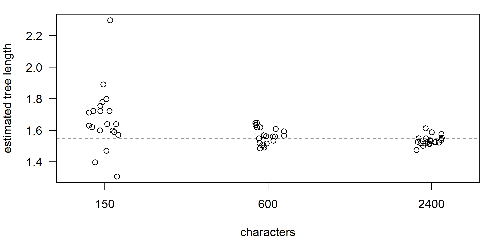
Figure I.4: Maximum likelihood estimates of the total tree length of tr8 from 20 simulated datasets for each number of characters. The dashed line is the true tree length.
The estimates center on the true length (1.55) and their spread shrinks roughly as one over the square root of the number of characters; with 150 characters they scatter widely and are biased slightly upwards, a small-sample effect of estimating 13 branch lengths that cannot be negative. This is parameter recovery and an empirical demonstration of consistency: when the data are generated by exactly the fitted model, the estimate converges on the truth (Section 6.10). It is not a test of robustness or of empirical adequacy. The simulated characters are independent, unascertained (all-absent columns are kept) and free of borrowing and rate variation, none of which holds for real cognate data.
3. The ascertainment bias for \(\pi_1\) = 0.1, 0.3 and 0.5, and a second program route. With 13 branch lengths optimized directly on the corrected likelihood, each fit takes several seconds, so the full experiment, five replicates per value of \(\pi_1\), took about six minutes; the code is shown but not run here, and the results of our run follow. The function generalizes the chapter’s fit_lengths() to any state frequencies.
fit_lengths <- function(tree, data, ASC, bf) {
negll <- function(log_bl) {
tree$edge.length <- exp(log_bl)
-pml(tree, data, bf = bf, ASC = ASC)$logLik
}
o <- optim(log(tree$edge.length), negll, method = "L-BFGS-B",
lower = -12, upper = 1.5)
tree$edge.length <- exp(o$par)
list(tree = tree, logLik = -o$value)
}
set.seed(31)
asc_runs <- NULL
for (p1 in c(0.1, 0.3, 0.5)) for (r in 1:5) {
X <- sim_binary(tr8, 600, pi1 = p1)
v <- apply(X, 2, function(z) length(unique(z)) > 1) # keep variable
pdv <- phyDat(X[, v], type = "USER", levels = c(0, 1))
bf <- c(1 - p1, p1)
f_unc <- fit_lengths(start8, pdv, ASC = FALSE, bf = bf)
f_asc <- fit_lengths(start8, pdv, ASC = TRUE, bf = bf)
f_opt <- optim.pml(pml(start8, pdv, bf = bf, ASC = TRUE),
optEdge = TRUE, control = pml.control(trace = 0))
asc_runs <- rbind(asc_runs, c(pi1 = p1, kept = sum(v),
uncorrected = sum(f_unc$tree$edge.length),
corrected = sum(f_asc$tree$edge.length),
optim_pml = sum(f_opt$tree$edge.length),
logLik_direct = f_asc$logLik, logLik_optim_pml = f_opt$logLik))
}The true tree length is 1.55. Mean results over the five replicates (individual values in brackets where they matter):
| \(\pi_1\) | characters kept (of 600) | uncorrected | corrected | optim.pml(..., ASC = TRUE) |
log-likelihood, direct − optim.pml |
|---|---|---|---|---|---|
| 0.1 | 281 | 5.35 (2.2, 2.3, 2.5, 6.1, 13.6) | 1.57 | 15.9 (1.3 to 43.0) | 10.5 to 23.9 |
| 0.3 | 425 | 2.56 | 1.54 | 2.32 | 21.2 to 55.3 |
| 0.5 | 456 | 2.60 | 1.57 | 2.34 | 18.7 to 61.8 |
The corrected estimates are close to the truth for every \(\pi_1\). Without the correction the tree is about two thirds too long for \(\pi_1\) = 0.3 and 0.5, and for \(\pi_1\) = 0.1 the bias becomes large and erratic. The reason is the size of the invisible part of the data. With rare presence, about half of all simulated characters are constant (mostly all-absent) and were deleted, against about a quarter for \(\pi_1 = 0.5\). An uncorrected model with \(\pi_1 = 0.1\) cannot explain why no all-absent column is seen: even on an infinitely long tree it expects \(0.9^8 \approx 43\) percent of them, so the likelihood keeps increasing with branch length and some replicates run off towards the upper bound of the optimizer. The bias therefore depends on how many characters the filter removes, which is a property of \(\pi_1\), the tree and the filter, not a constant that could be corrected afterwards.
optim.pml() with ASC = TRUE reached a lower log-likelihood than direct optimization in every one of the 15 datasets, by 10 to 62 log-likelihood units. In some replicates it did not move the branch lengths from their starting values at all (a tree length of exactly 1.3 is the starting tree of 13 branches of 0.1), in others it returned trees between seven and almost thirty times too long. (If the bf argument were omitted, the model would also assume \(\pi_1 = 0.5\), so the comparison would confound two differences; as the exercise asks, we passed the true frequencies.) The lesson is the one drawn in Section 5.6: a program can return a plausible-looking answer that is not the maximum of the likelihood it claims to maximize, and a second, independent route to the same quantity (here, a general-purpose optimizer applied to the same likelihood function) is the cheapest way to find out.
4. Stochastic search instead of NNI from the random starting trees. In phangorn 2.12.1, optim.pml() has no rearrangement = "SPR" option: such a call stops with an error listing the valid choices "none", "NNI", "ratchet", "stochastic" and "multi2di". The stochastic search, which, like IQ-TREE, perturbs the current best tree with random rearrangements and restarts NNI hill climbing, is the closest substitute for larger rearrangements such as SPR. (rearrangement = "ratchet" stopped with an error in our tests of this version.) The random starting trees are those of the chapter, recreated with its code.
nni_tab <- data.frame(
start = c("NJ tree", paste("random tree", 1:5)),
logLik = c(fit_nj_start$logLik,
sapply(random_starts, function(r) r$fit$logLik)),
RF_to_true = c(RF.dist(fit_nj_start$tree, true14),
sapply(random_starts, function(r)
RF.dist(r$fit$tree, true14))))
nni_tab#> start logLik RF_to_true
#> 1 NJ tree -1895 0
#> 2 random tree 1 -2186 16
#> 3 random tree 2 -2336 18
#> 4 random tree 3 -2222 14
#> 5 random tree 4 -2133 12
#> 6 random tree 5 -2347 12stoch <- lapply(random_starts, function(r)
optim.pml(pml(r$start, cog14, k = 4), optNni = TRUE, optBf = TRUE,
optGamma = TRUE, rearrangement = "stochastic",
control = pml.control(trace = 0)))
data.frame(start = paste("random tree", 1:5),
logLik = sapply(stoch, logLik),
RF_to_true = sapply(stoch, function(f)
RF.dist(f$tree, true14)))The stochastic searches took about 90 seconds for the five starts. In our run three of them reached log-likelihood −1895.07, the same optimum as the NNI search from the NJ tree, with RF distance 0 to the true tree, and the other two reached −1897.33, a tree four RF units away. All five escaped the poor local optima, hundreds of units worse, in which NNI hill climbing from the same random starts had stalled, and the RF distances of the NNI searches (12 to 18) shrank to 0 or 4. Larger or perturbed moves matter much more than the starting tree once the search can leave an NNI local optimum, which is why modern programs combine NNI with SPR moves and random perturbations (Section 5.7; Section B.3.5 runs the same comparison for the worst start).
5. Equal rates: do the criteria still prefer gamma rate variation?
set.seed(43)
X14_eq <- sim_binary(true14, 600, pi1 = 0.3) # all rates equal
cog_eq <- phyDat(X14_eq, type = "USER", levels = c(0, 1))
ctl <- pml.control(trace = 0)
tree_eq <- optim.pml(pml(nj(dist.hamming(cog_eq)), cog_eq), optNni = TRUE,
optBf = TRUE, control = ctl)$tree
fits_eq <- list()
fits_eq$Binary_equal <- optim.pml(pml(tree_eq, cog_eq), optEdge = TRUE,
control = ctl)
fits_eq$Binary_F <- optim.pml(fits_eq$Binary_equal, optEdge = TRUE,
optBf = TRUE, control = ctl)
fits_eq$Binary_F_G4 <- optim.pml(update(fits_eq$Binary_F, k = 4),
optEdge = TRUE, optBf = TRUE,
optGamma = TRUE, control = ctl)
fits_eq$Binary_F_G4_I <- optim.pml(update(fits_eq$Binary_F_G4, inv = 0.1),
optEdge = TRUE, optBf = TRUE,
optGamma = TRUE, optInv = TRUE,
control = ctl)
data.frame(model = names(fits_eq),
logLik = round(sapply(fits_eq, logLik), 2),
p = sapply(fits_eq, function(f) attr(logLik(f), "df")),
AIC = round(sapply(fits_eq, AIC), 1),
BIC = round(sapply(fits_eq, BIC), 1), row.names = NULL)#> model logLik p AIC BIC
#> 1 Binary_equal -2281 25 4612 4722
#> 2 Binary_F -2191 26 4434 4548
#> 3 Binary_F_G4 -2189 27 4433 4551
#> 4 Binary_F_G4_I -2189 28 4435 4558#> gamma_shape
#> 3.93#> Likelihood Ratio Test Table
#> Log lik. Df Df change Diff log lik. Pr(>|Chi|)
#> 1 -2191 26
#> 2 -2189 27 1 2.83 0.093 .
#> ---
#> Signif. codes: 0 '***' 0.001 '**' 0.01 '*' 0.05 '.' 0.1 ' ' 1# the least probable site pattern under the gamma model
worst <- which.min(fits_eq$Binary_F_G4$siteLik)
worst_pd <- subset(cog_eq, select = worst, site.pattern = TRUE)
present <- names(cog_eq)[as.character(worst_pd)[, 1] == "1"]
present#> [1] "L01" "L05" "L06" "L14" "L04" "L03" "L13" "L12" "L11"c(logLik = fits_eq$Binary_F_G4$siteLik[worst],
count = attr(cog_eq, "weight")[worst],
steps_on_true_tree = parsimony(true14, worst_pd))#> logLik count steps_on_true_tree
#> -11.31 1.00 3.00Without rate variation in the data, the criteria disagree slightly. The model with unequal frequencies improves the log-likelihood enormously over the equal-frequency model, as expected since \(\pi_1 = 0.3\). Adding gamma rate variation improves it by only 2.8 units: AIC is essentially indifferent (it favors the gamma model by less than one unit), BIC prefers the model without it, and the likelihood-ratio test does not reject the simpler model (\(p \approx 0.09\)). The estimated shape (about 4) indicates mild heterogeneity, which with 600 characters is within sampling noise of equal rates. So the criteria no longer clearly prefer gamma rate variation, in contrast with the chapter’s data. (The comparison uses an ML topology estimated from the new data, which here equals the true tree.)
The least probable pattern (it occurs once) is a cognate set present in nine of the 14 languages and absent from five that are scattered across the tree: the sisters L02 and L10, the sisters L07 and L08, and L09. It needs at least three changes on the true tree, for example one origin near the root followed by three independent losses, or several independent gains. Under a model in which most characters change at most once, such a scattered pattern is very improbable. In real cognate data, sets with low likelihood of this kind are typically words that were lost independently in several subgroups (perhaps replaced by a common competitor), words that spread by borrowing into scattered languages, sets created by parallel semantic shift, or coding errors, such as two different etymons lumped into one set. Patterns with low site likelihood are therefore worth inspecting one by one in a real analysis.
6. Optimizing tr4 for the single character 1100.
fit_start <- pml(tr4, x4)
fit_one <- optim.pml(fit_start, optEdge = TRUE,
control = pml.control(trace = 0))
setNames(round(fit_one$tree$edge.length, 4),
c(fit_one$tree$tip.label, "internal")[
match(fit_one$tree$edge[, 2], c(1:4, 6))])#> English German internal Italian Spanish
#> 0 0 10 0 0#> logLik log_one_quarter
#> -1.386 -1.386#> Likelihood Ratio Test Table
#> Log lik. Df Df change Diff log lik. Pr(>|Chi|)
#> 1 -2.90 5
#> 2 -1.39 5 0 3.03 <2e-16 ***
#> ---
#> Signif. codes: 0 '***' 0.001 '**' 0.01 '*' 0.05 '.' 0.1 ' ' 1All four terminal branches shrink to zero and the internal branch runs to the upper bound allowed by the optimizer (10). With zero-length terminal branches English and German must share the state of their ancestor and Italian and Spanish the state of theirs, while an effectively infinite internal branch makes the two ancestors independent, each in state 1 or 0 with probability one half. The probability of 1100 is then \(\tfrac12 \times \tfrac12 = \tfrac14\), the supremum of the likelihood for a variable character, and the maximized log-likelihood equals \(\ln \tfrac14\). The estimates are degenerate because one character cannot inform five branch lengths. The anova() output reports a “test” with zero degrees of freedom and a tiny \(p\)-value, and it cannot be interpreted as a likelihood-ratio test. The two fits have the same parameters; the starting fit is not a model at all but one arbitrary point in the same parameter space, so there is no nested null hypothesis. The asymptotic \(\chi^2\) theory requires many independent observations, not one. And the optimized estimates lie on the boundary of the parameter space, where even nested tests need mixture distributions (Section 5.9).
7. Gamma rate variation by hand.
# (a) category means by averaging quantiles within each quartile
p_mid <- function(q, m = 20000) (q - 1) / 4 + (seq_len(m) - 0.5) / (4 * m)
by_hand <- sapply(1:4, function(q) mean(qgamma(p_mid(q), 0.5, 0.5)))
round(rbind(by_hand = by_hand, discrete.gamma = discrete.gamma(0.5, 4)), 4)#> [,1] [,2] [,3] [,4]
#> by_hand 0.0334 0.2519 0.8203 2.894
#> discrete.gamma 0.0334 0.2519 0.8203 2.894# (b) the variable character 0/1 on (L1:0.1,L2:0.1) by Equation (gamma)
lik_gamma <- function(shape, same = FALSE) {
r <- discrete.gamma(shape, 4)
per_cat <- if (same) 0.5 * (Ps(0.1 * r)^2 + Pd(0.1 * r)^2) else
Ps(0.1 * r) * Pd(0.1 * r)
log(mean(per_cat))
}
# (c) the same with pml()
tr2 <- read.tree(text = "(L1:0.1,L2:0.1);")
x2 <- phyDat(matrix(c("0", "1"), 2, dimnames = list(c("L1", "L2"), NULL)),
type = "USER", levels = c("0", "1"))
c(by_hand = lik_gamma(0.5), pml = pml(tr2, x2, k = 4, shape = 0.5)$logLik)#> by_hand pml
#> -2.701 -2.701# (d) variable and constant characters over a range of shapes
shapes <- c(0.2, 0.3, 0.5, 1, 2, 5, 10, 20, 50, 100)
ll_shape <- cbind(variable = sapply(shapes, lik_gamma),
constant = sapply(shapes, lik_gamma, same = TRUE))
round(cbind(shape = shapes, ll_shape), 4)#> shape variable constant
#> [1,] 0.2 -2.859 -0.8149
#> [2,] 0.3 -2.785 -0.8249
#> [3,] 0.5 -2.701 -0.8374
#> [4,] 1.0 -2.614 -0.8515
#> [5,] 2.0 -2.560 -0.8611
#> [6,] 5.0 -2.523 -0.8680
#> [7,] 10.0 -2.510 -0.8706
#> [8,] 20.0 -2.503 -0.8719
#> [9,] 50.0 -2.499 -0.8727
#> [10,] 100.0 -2.497 -0.8730par(mfrow = c(1, 2), mar = c(4, 4, 2, 1), las = 1)
for (j in 1:2) {
plot(shapes, ll_shape[, j], log = "x", type = "b", pch = 19,
xlab = "gamma shape", ylab = "log-likelihood",
main = colnames(ll_shape)[j])
abline(h = if (j == 1) log(Ps(0.1) * Pd(0.1)) else
log(0.5 * (Ps(0.1)^2 + Pd(0.1)^2)), lty = 3)
}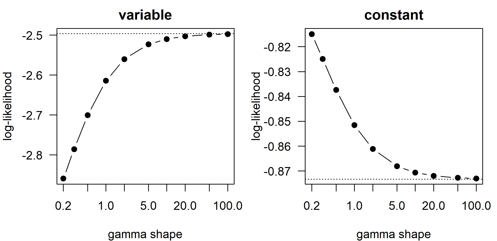
Figure I.5: Log-likelihood of one variable character (states 0 and 1) and one constant character (0 and 0) on a two-language tree with path length 0.2, under four-category gamma rate variation, as a function of the shape parameter (log scale). Dotted lines: the values without rate variation.
- Averaging the quantile function over each quartile reproduces
discrete.gamma(), which uses the category means (Yang 1994). With shape 0.5 three quarters of the characters have rates well below 1 and the fastest quarter has a mean rate near 3. (b, c) The hand calculation andpml()agree. Equation (5.6) averages the probabilities, \(\tfrac14 \sum_c P_s(0.1 r_c) P_d(0.1 r_c)\), not the log-probabilities. (d) As the shape grows, both log-likelihoods approach their values without rate variation. A smaller shape lowers the likelihood of the variable character and raises that of the constant one. With the mean rate fixed at 1, a small shape puts most characters in near-zero-rate categories and a few in very fast ones. A difference between the languages needs at least one change: the slow categories can hardly produce it, and the fast categories cannot make it more probable than one half, since the probability of a difference saturates. The probability of a difference is a concave function of the rate, so by Jensen’s inequality averaging over spread-out rates gives less than the probability at the mean rate. The probability of no difference is convex in the rate, so spreading the rates increases it: slow characters stay constant almost surely. This is how gamma rate variation accounts for the excess of invariant characters in cognate data, and why ignoring it makes the variable characters look as if they required more change, shortening long paths and distorting branch lengths (Section 5.2).
Research
1. An ML analysis of 60 Oceanic languages and 210 meanings, singletons removed, loans coded as missing.
- Model. A binary CTMC for cognate sets with estimated state frequencies and among-character rate variation (
GTR2+FO+G4or a free-rate model), selected by AIC or BIC among binary models; a multistate meaning-slot model would avoid the dependence of binary characters (Section 7.8). - Ascertainment. The correction must condition on the filter that was actually applied (Section 5.6). Here the matrix lacks all-absent columns and singletons, so a character is observable only if it is present in at least two languages. A correction for absent sites only, or Lewis’s correction for constant sites (IQ-TREE’s
+ASC), does not match and will still inflate terminal branches, since singletons are exactly the patterns produced on terminal branches. The best option is to restore the singletons from the source data and use the all-absent correction. If that is impossible, the conditioning probability must include all patterns with zero or one presence, which requires software that allows custom ascertainment (for example RevBayes, or a hand-coded likelihood). Loans coded as missing are fine for the likelihood, but missing cells also change which patterns count as unobservable. - Support. Standard bootstrap or UFBoot and SH-aLRT, but because binary characters within meanings are dependent, also a meaning-level bootstrap (resample the 210 meanings, rebuild the matrix, rerun the search), which gives more honest values (Section 4.12).
- Testing a traditional subgroup. A constrained search forcing the subgroup to be monophyletic (IQ-TREE
-g), then an AU test with RELL resampling comparing the constrained and unconstrained ML trees and other candidates (-z,-au). The AU \(p\)-values assume independent characters; supplement them with a parametric-bootstrap (SOWH-type) test that simulates data on the best constrained tree (Huelsenbeck et al. 1996) and with the meaning-level bootstrap. Rejection means the subgroup is worse under the model; non-rejection means the data cannot discriminate. Since one specialist coded the data, report sensitivity to alternative codings of doubtful sets (Shimodaira 2002; Minh, Schmidt, et al. 2020; Lewis 2001).
2. A constrained-topology test of Italo-Celtic with an AU test.
- Plan. Infer the unconstrained ML tree. Infer the best tree constrained to contain Italo-Celtic (
-gwith a constraint tree in which Italic and Celtic form a clade and everything else is unresolved), and the best trees under the main alternatives (Italic or Celtic sister to Germanic, for instance). Evaluate all candidates with-au -zb 10000under the same model with ascertainment correction and rate variation. - Interpretation. Rejection of the constrained tree means that, under the model, the data are significantly less probable on any tree with Italo-Celtic than on the best tree: evidence against the subgroup, conditional on the model. Non-rejection means the lexical data cannot distinguish Italo-Celtic from its competitors; it is not evidence for it.
- Non-independence within meaning slots. Binary characters from one meaning are counted as separate observations, so the variance of the per-character log-likelihood differences is underestimated and the \(p\)-values are too small. Trees are rejected too easily, whichever tree that happens to be. Use multistate coding, or resample meanings rather than characters (a custom RELL over meanings).
- Undetected borrowing. Early contact between Italic and Celtic (or between Celtic and Germanic) would create shared characters that support Italo-Celtic (or a competing grouping) without common descent. The test cannot tell inheritance from contact, so it could fail to reject, or even prefer, a contact-induced grouping. Mitigate by excluding known and suspected loans and highly borrowable meanings, analyzing stable meanings separately, and comparing with the morphological evidence usually cited for Italo-Celtic, which is less prone to borrowing but few in number (Sections 5.8, 3.10 and 15.4) (Ringe et al. 2002).
3. 120 Grambank features in a family whose lexical evidence is eroded.
- For partitioning: phonological and morphosyntactic features plausibly differ in rate and in susceptibility to contact, and a single rate distribution would let the more numerous partition dominate (Section 3.10).
- Against: with only 120 binary features, each partition adds parameters that may be poorly estimated, and the domain boundary may not be where rates actually differ; a gamma or free-rate model across all features captures rate heterogeneity without imposing a partition.
- Choosing among models. Compare unpartitioned, partitioned with linked and with unlinked rates, symmetric and asymmetric \(\mathbf{Q}\), and +G variants by AIC\(_c\) (small \(m\)) or BIC, with an ascertainment correction if invariant features were dropped, or by stepping-stone Bayes factors in a Bayesian setting. Check first that strongly dependent features have been recoded or removed (Graff, Chousou-Polydouri, et al. 2025; Skirgård et al. 2023).
- Absolute fit. Choose a statistic that targets the feature most likely to be misfitted. A good candidate is homoplasy: structural features change back and forth and spread by contact, so a tree model may under-predict how many changes each feature needs (Greenhill et al. 2017). Statistic: the distribution, or simply the sum, of per-feature parsimony scores on the ML tree; alternatively the number of feature pairs with strong correlation, which targets dependence.
- Parametric bootstrap. Fit the chosen model; simulate 500–1,000 datasets of 120 features on the ML tree with the ML parameters and the same ascertainment and missing-data pattern; compute the statistic on each, re-estimating the tree in each replicate if the statistic depends on it; and locate the observed value in the simulated distribution (Goldman 1993). A value in the upper tail means more homoplasy than the model can produce, which points to contact or unmodeled dependence. Check the most misfitted features individually against geography (Section 5.9).
I.6 Chapter 6: Bayesian Phylogenetic Inference
Conceptual
1. Sampling without the marginal likelihood, and where \(f(D)\) matters. The Metropolis–Hastings acceptance probability (Equation (6.3)) uses only the ratio of the posterior densities of the proposed and current states. Both are \(f(D \mid x) f(x) / f(D)\), so the constant \(f(D)\) cancels, and the sampler needs only the likelihood and the prior, which can be computed for any single state (Section 6.3). The marginal likelihood matters for model comparison: Bayes factors and posterior model probabilities are ratios of marginal likelihoods (Section 6.7). It is hard to compute because it is an average of the likelihood over the whole prior, a sum over all topologies of integrals over hundreds of branch lengths and parameters (Equation (6.2)). Most of the prior mass lies where the likelihood is negligible, so neither prior samples nor posterior samples estimate the average well (the harmonic mean estimator fails for exactly this reason). Reliable estimates need a series of runs bridging prior and posterior (path or stepping-stone sampling) or nested sampling, and they are sensitive to the priors on parameters that differ between the models.
2. Three “uninformative” priors that are informative.
- A uniform prior on topologies is not uniform on clades. For example, the prior probability that two given languages form a cherry of an unrooted tree of \(n\) languages is \(U(n-1)/U(n) = 1/(2n-5)\), only 0.023 for 24 languages, and larger clades have other, unequal prior probabilities. A linguist reporting the posterior probability of a subgroup should know its prior probability, which a “flat” prior fixes implicitly (Section 6.2).
- Independent exponential priors on branch lengths imply a gamma prior on the tree length with mean \((2n-3)\) times the branch mean. For 50 languages and a mean of 0.1 this is 9.7 expected changes per character, with a fairly narrow spread. The prior is therefore informative about the total amount of lexical change, and hence about rates and, in a dated analysis, about ages; with weak data it can produce badly inflated tree lengths (Brown et al. 2010; Rannala et al. 2012).
- A Yule prior is informative about the root age and about the distribution of node ages (Figure 6.2 shows how strongly its median root age depends on the birth rate) and about tree shape, which it makes more balanced than a uniform prior on rooted topologies (Section 2.7). A root age, the quantity linguists most often report, can thus be shaped by a prior chosen for convenience; it must be checked by sampling from the prior.
3. Posterior probability 0.98 against 70 percent bootstrap support. Possible reasons:
- The measures differ in kind. Posterior probabilities are probabilities under the model and are typically higher than bootstrap proportions for the same clade even when the model is right (Alfaro et al. 2003); the bootstrap measures repeatability and is conservative.
- The model is misspecified, for example by treating dependent binary characters as independent or by ignoring borrowing, which makes posterior probabilities overconfident (Suzuki et al. 2002).
- The internal branch is very short and the posterior arbitrarily favors one resolution (the star-tree paradox, Section 6.6).
- The analyses differ in other ways: a different model in the ML analysis (no rate variation or no ascertainment correction), priors (on branch lengths or the tree) that favor the clade, a poorly mixed MCMC run, or an ML search trapped in a local optimum.
Ways to distinguish them: rerun both analyses under the same model, and check MCMC convergence with independent runs and ASDSF. Look at the posterior distribution of the clade’s stem branch length (mass near zero suggests the star-tree problem, testable with a polytomy prior). Run posterior predictive checks for misspecification and analyses that relax it, such as a meaning-level bootstrap or a multistate model. Vary the branch-length prior. And simulate data under the fitted model to see how posterior probabilities and bootstrap values for such a clade behave when the truth is known.
4. Classifying five checks (Section 6.10).
- (a) A run without data reproduces the calibration densities: implementation validation. It checks that the program and the set-up implement the specified prior. With a tree prior the effective prior on calibrated nodes need not equal the specified densities (Section 10.3.2), so a precise match is expected only with a calibrated tree prior; otherwise the check is that the effective prior is what the joint specification implies.
- (b) Simulating 10 percent borrowing and reanalyzing under a tree model: robustness under misspecification, a specified violation of a specified size.
- (c) Singletons in a real dataset compared with their posterior predictive distribution: empirical model adequacy.
- (d) Does the estimated root location correspond to the homeland? Historical interpretation: the root location is that of the ancestor of the sampled varieties under the diffusion model, and identifying it with a homeland needs a further argument (Chapter 11).
- (e) Simulating under the fitted model and measuring coverage of 95 percent HPD intervals for the root age: parameter recovery. The data are generated under the model’s own assumptions, so success shows practical estimability, not adequacy. (If parameters were drawn from the prior and the ranks of the true values were checked, it would be simulation-based calibration, a form of implementation validation.)
5. A Bayes factor favors model A, yet A fails a posterior predictive check. This is not contradictory. A Bayes factor is relative: model A predicted the observed data better than model B did, given both models’ priors. A posterior predictive check is absolute: model A fails to reproduce a particular feature of the data (Sections 6.7 and 6.9). Both statements can hold when both models are inadequate and A is merely less so; the covarion model’s preference by Bayes factors and its failure of posterior predictive checks on Indo-European data is a real example (King 2026b). What to report: the Bayes factor with the method used to estimate it and the priors on the parameters that differ between the models; the posterior predictive results with the test statistics used, for both models; whether the conclusions of interest depend on the misfitted feature (dates and branch lengths are often more sensitive than topology); and, ideally, an attempt at a model that passes the check, or a sensitivity analysis showing how the conclusions change across models.
6. A test of correlated evolution on a single MCC tree. The test treats the MCC topology and branch lengths as known (Sections 2.5 and 6.6). Its evidence for correlation comes from how often, and on which branches, the two features change together. If one weakly supported clade on the MCC tree groups the languages in which both features changed, the tree implies a single correlated change where the posterior also contains trees requiring two independent ones, or the reverse, and the test reports this one resolution as if it were certain. The MCC node heights, averaged over different trees, can be unrepresentative and change the estimated rates. The resulting likelihood ratio or Bayes factor can be large while being driven entirely by an uncertain part of the tree. That the MCC topology matches the accepted subgrouping does not help: the shallow, well-known clades are rarely the problem; the deep, uncertain nodes and the branch lengths are. Repeating the test over a sample of posterior trees (integrating over trees in BayesTraits, for instance) shows whether the conclusion survives the uncertainty (Chapter 13).
7. Likelihood, prior and Bayes’ theorem for a normal model and for a binary CTMC on a tree. For \(y_i \sim \text{Normal}(\mu, \sigma)\), \(i = 1, \ldots, n\), with \(\mu \sim \text{Normal}(0, 10)\) and \(\sigma \sim \text{Half-Normal}(25)\), the likelihood is \(f(y \mid \mu, \sigma) = \prod_i \phi(y_i; \mu, \sigma)\), the priors are \(f(\mu) = \phi(\mu; 0, 10)\) and \(f(\sigma) = 2\phi(\sigma; 0, 25)\) for \(\sigma > 0\), and the posterior is over two parameters:
\[f(\mu, \sigma \mid y) = \frac{\prod_i \phi(y_i; \mu, \sigma)\, \phi(\mu; 0, 10)\, 2\phi(\sigma; 0, 25)}{\int\!\!\int \prod_i \phi(y_i; \mu, \sigma)\, \phi(\mu; 0, 10)\, 2\phi(\sigma; 0, 25)\, d\mu\, d\sigma}.\]
For a binary CTMC on an unrooted tree of \(n\) languages, the parameters are the topology \(\tau\), the \(2n-3\) branch lengths \(\mathbf{t}\) and the model parameters \(\theta\) (for example \(\pi_1\) and a gamma shape). The likelihood is \(f(D \mid \tau, \mathbf{t}, \theta) = \prod_j L_j / (1 - L_\emptyset)^m\), computed by the pruning algorithm with an ascertainment correction (Chapter 5). The priors are \(f(\tau) = 1/(2n-5)!!\), \(f(\mathbf{t}) = \prod_b \lambda e^{-\lambda t_b}\) and \(f(\theta)\). Bayes’ theorem is Equation (6.1), with the denominator summing over all \((2n-5)!!\) topologies and integrating over \(\mathbf{t}\) and \(\theta\). In RevBayes (Section 6.11) the prior terms are stochastic nodes created with ~ (topology ~ dnUniformTopology(taxa), bl[i] ~ dnExponential(10), mu ~ dnNormal(0, 10)); deterministic nodes created with := (psi := fnTreeAssembly(topology, bl), a rate matrix Q := fnF81(pi)) contribute no density of their own; and the likelihood is a stochastic node that is clamped to the observed data (seq ~ dnPhyloCTMC(tree = psi, Q = Q, type = "Binary", coding = "noabsencesites") followed by seq.clamp(data), or y[i] ~ dnNormal(mu, sigma) and y[i].clamp(obs[i]) in the normal model). Clamping turns a node’s density from a prior term into a likelihood term; the graph is the same, which is why removing the clamp gives a prior-only run.
Computational
The solutions recreate the two-language log-likelihood loglik_t(), the sampler mh_t() and the toy tree analysis of Section 6.4 (the data X6, the likelihood loglik_tree() and the functions of R/toy-tree-sampler.R) with the chapter’s code, which is not repeated here.
1. mh_t() with 20 and 500 characters under two priors. A preliminary remark: with 20 characters the likelihood does not fall to zero as \(t\) grows, because the probability of a difference saturates at one half and six differences in 20 are not improbable on an infinitely long path. Under the exponential prior with mean 10 most of the posterior mass then lies beyond \(t = 3\), so the grid must extend a long way (the chapter’s grid for Figure 6.7 reaches \(t = 150\)) to obtain the exact posterior mean.
post_mean_grid <- function(N, k, prior_rate, upper = 300) {
g <- seq(0.0005, upper, length.out = 6e5)
lp <- loglik_t(g, N, k) + dexp(g, prior_rate, log = TRUE)
w <- exp(lp - max(lp))
c(mean = sum(g * w) / sum(w), mass_above_3 = sum(w[g > 3]) / sum(w))
}
mh_set <- expand.grid(prior_mean = c(0.1, 10), N = c(20, 500))
mh_set$k <- 0.3 * mh_set$N
set.seed(61)
mh_res <- t(mapply(function(pm, N, k) {
ch <- mh_t(20000, lambda = 1, t_start = 0.5, prior_rate = 1 / pm,
N = N, k = k)
c(post_mean_grid(N, k, 1 / pm),
mcmc_mean = mean(ch[-(1:2000)]), acceptance = attr(ch, "acceptance"))
}, mh_set$prior_mean, mh_set$N, mh_set$k))
cbind(mh_set, round(mh_res, 3))#> prior_mean N k mean mass_above_3 mcmc_mean acceptance
#> 1 0.1 20 6 0.280 0.000 0.284 0.764
#> 2 10.0 20 6 8.079 0.587 8.002 0.917
#> 3 0.1 500 150 0.443 0.000 0.444 0.338
#> 4 10.0 500 150 0.468 0.000 0.468 0.356The chains reproduce the exact posterior means to within Monte Carlo error in all four settings. With 20 characters the prior dominates: the posterior mean is 0.28 under the exponential prior with mean 0.1, and about 8 under the prior with mean 10, where 59 percent of the posterior mass lies beyond \(t = 3\) because the likelihood flattens at large \(t\) instead of falling to zero. With 500 characters the two priors give nearly the same posterior mean, close to the maximum likelihood estimate of 0.46, and the posterior is barely affected by a hundredfold change in the prior mean. This is the pattern of Figure 6.7, whose logarithmic axis shows the whole posterior: for 20 characters and the prior with mean 10 it has a second, broad mode near \(t = 10\), the long right tail that a grid stopping at \(t = 3\) would hide. Note also how the acceptance rate rises to over 0.9 when the posterior is very wide on the log scale: the multiplier proposal with \(\lambda = 1\) is then too timid, and a larger \(\lambda\) would mix better.
2. Removing the Hastings term.
mh_t_noH <- function(niter, lambda = 1, t_start = 1, prior_rate = 1,
N = 100, k = 30) {
t <- t_start
lp <- loglik_t(t, N, k) + dexp(t, prior_rate, log = TRUE)
out <- numeric(niter)
for (i in seq_len(niter)) {
m <- exp(lambda * (runif(1) - 0.5))
t_new <- t * m
lp_new <- loglik_t(t_new, N, k) + dexp(t_new, prior_rate, log = TRUE)
if (log(runif(1)) < lp_new - lp + 0) { t <- t_new; lp <- lp_new }
out[i] <- t # "+ 0": log(m) removed
}
out
}
set.seed(62)
ok_chain <- mh_t(50000, lambda = 1, t_start = 0.4)[-(1:5000)]
bad_chain <- mh_t_noH(50000, lambda = 1, t_start = 0.4)[-(1:5000)]
g <- seq(0.001, 2, length.out = 4000); hg <- diff(g)[1]
post_exact <- exp(loglik_t(g) - max(loglik_t(g))) * dexp(g, 1)
post_exact <- post_exact / sum(post_exact * hg)
post_over_t <- post_exact / g
post_over_t <- post_over_t / sum(post_over_t * hg)
c(exact_mean = sum(g * post_exact * hg), correct_chain = mean(ok_chain),
faulty_chain = mean(bad_chain),
mean_of_post_over_t = sum(g * post_over_t * hg))#> exact_mean correct_chain faulty_chain
#> 0.5013 0.5007 0.4680
#> mean_of_post_over_t
#> 0.4675par(mar = c(4, 4, 1, 1))
hist(bad_chain, breaks = 50, freq = FALSE, col = "grey85", border = "white",
main = "", xlab = "path length t", xlim = c(0.2, 0.8))
lines(g, post_exact, lwd = 2)
lines(g, post_over_t, lwd = 2, lty = 2)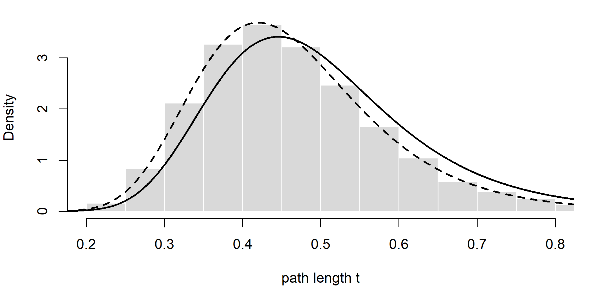
Figure I.6: Samples from the Metropolis-Hastings chain without the Hastings ratio (histogram), with the exact posterior (solid) and the distribution the faulty chain actually targets, the posterior divided by t (dashed).
Without the Hastings term the chain samples the wrong distribution. For the multiplier proposal the forgotten ratio is \(m = t'/t\), and leaving it out makes the chain’s stationary density proportional to \(f(t \mid D)/t\), the posterior divided by \(t\). The faulty chain’s mean (0.468) matches the mean of that distribution, not the exact posterior mean (0.501). The bias is modest here because the posterior is narrow; with a wide posterior, or with a tree scaler acting on many branches at once (whose ratio is \(m^B\)), it would be large. The bug is detected by implementation validation: comparing the chain with an exact answer obtained by a different route, as here, or running the sampler without data and checking that it reproduces the prior. Without data the faulty chain would sample a density proportional to \(e^{-t}/t\), which is not even integrable at zero, so the chain drifts towards zero and the failure is obvious. A trace plot would not reveal the bug: the faulty chain moves, mixes and looks like a healthy “fuzzy caterpillar”; it is simply centered on the wrong distribution (Section 6.3).
3. Four chains of 2,000 and of 20,000 iterations. Eight runs of the toy sampler take about two minutes, so the code is shown but not run here; the results of our run follow.
library(coda)
diagnose <- function(runs) {
ns <- nrow(runs[[1]]$trace); burn <- seq_len(ns %/% 5) # 20% burn-in
mc <- mcmc.list(lapply(runs, function(r)
mcmc(as.matrix(r$trace[-burn, c("logLik", "TL")]))))
freqs <- lapply(runs, function(r)
table(unlist(lapply(r$trees[-burn], split_keys))) /
(ns - length(burn)))
sp <- unique(unlist(lapply(freqs, names)))
sf <- sapply(freqs, function(f) {
x <- as.numeric(f[sp]); x[is.na(x)] <- 0; x })
c(ESS = effectiveSize(mc), PSRF = gelman.diag(mc)$psrf[, 1],
ASDSF = mean(apply(sf, 1, sd)))
}
diag_tab <- t(sapply(c(2000, 20000), function(niter) {
set.seed(niter)
runs <- lapply(1:4, function(i)
run_mcmc(niter, random_start(langs6), loglik_tree))
c(iterations = niter, diagnose(runs))
}))
round(diag_tab, 3)| iterations per chain | ESS logLik | ESS tree length | PSRF logLik | PSRF tree length | ASDSF |
|---|---|---|---|---|---|
| 2,000 | 126 | 355 | 1.097 | 1.043 | 0.022 |
| 20,000 | 580 | 3,123 | 1.006 | 1.001 | 0.018 |
(ESS values are summed over the four chains, after discarding the first 20 percent of each.) With 2,000 iterations the chains are clearly too short: the ESS of the log-likelihood is far below the conventional 200, both PSRFs are visibly above 1, and the split frequencies disagree. Ten times longer runs give ESS values about five to nine times larger and PSRFs indistinguishable from 1, as expected for continuous summaries whose autocorrelation is now short compared with the run. The ASDSF, however, improves only slightly and stays above the conventional 0.01. The topology moves (one NNI at a time, accepted rarely, Section 6.4) mix much more slowly than the branch lengths, so split frequencies, especially those of the alternative resolutions around the short internal branches, converge last. Continuous diagnostics can look perfect while the chains still disagree about the tree, which is why topological convergence must be checked separately (Section 6.5).
4. A branch-length prior with mean 1 instead of 0.1.
set.seed(404)
runs_bl <- list(
posterior_mean0.1 = run_mcmc(10000, random_start(langs6), loglik_tree),
posterior_mean1 = run_mcmc(10000, random_start(langs6), loglik_tree,
prior_rate = 1),
prior_mean1 = run_mcmc(10000, random_start(langs6), loglik_tree,
use_data = FALSE, prior_rate = 1))
burn_bl <- 1:200
tl_tab <- t(sapply(runs_bl, function(r) {
x <- r$trace$TL[-burn_bl]
c(mean = mean(x), quantile(x, c(0.025, 0.975)))
}))
rbind(tl_tab,
exact_prior_mean0.1 = c(9 / 10, qgamma(c(0.025, 0.975), 9, 10)),
exact_prior_mean1 = c(9, qgamma(c(0.025, 0.975), 9, 1)))#> mean 2.5% 97.5%
#> posterior_mean0.1 0.6796 0.6172 0.7471
#> posterior_mean1 0.6862 0.6186 0.7588
#> prior_mean1 8.7766 4.4554 14.8044
#> exact_prior_mean0.1 0.9000 0.4115 1.5763
#> exact_prior_mean1 9.0000 4.1154 15.7632split_probs <- sapply(runs_bl, function(r)
table(unlist(lapply(r$trees[-burn_bl], split_keys))) /
length(r$trees[-burn_bl]))
sp_all <- unique(unlist(lapply(split_probs, names)))
sp_tab <- sapply(split_probs, function(f) {
x <- as.numeric(f[sp_all]); x[is.na(x)] <- 0; x })
rownames(sp_tab) <- sp_all
round(sp_tab[order(-sp_tab[, 1]), ], 2)#> posterior_mean0.1 posterior_mean1 prior_mean1
#> Cor+Dun+Esk+Fal 0.94 0.96 0.14
#> Dun+Esk+Fal 0.88 0.93 0.08
#> Dun+Esk 0.86 0.93 0.13
#> Cor+Fal 0.12 0.07 0.13
#> Esk+Fal 0.11 0.07 0.17
#> Bel+Dun+Esk+Fal 0.03 0.02 0.16
#> Cor+Esk+Fal 0.03 0.00 0.09
#> Bel+Cor 0.03 0.02 0.12
#> Dun+Fal 0.01 0.00 0.15
#> Cor+Dun+Esk 0.00 0.00 0.11
#> Bel+Cor+Dun 0.00 0.00 0.07
#> Bel+Cor+Dun+Esk 0.00 0.00 0.13
#> Bel+Cor+Dun+Fal 0.00 0.00 0.15
#> Bel+Cor+Esk 0.00 0.00 0.06
#> Bel+Cor+Esk+Fal 0.00 0.00 0.13
#> Bel+Cor+Fal 0.00 0.00 0.06
#> Bel+Dun 0.00 0.00 0.14
#> Bel+Dun+Esk 0.00 0.00 0.08
#> Bel+Dun+Fal 0.00 0.00 0.11
#> Bel+Esk 0.00 0.00 0.13
#> Bel+Esk+Fal 0.00 0.00 0.09
#> Bel+Fal 0.00 0.00 0.17
#> Cor+Dun 0.00 0.00 0.15
#> Cor+Dun+Fal 0.00 0.00 0.09
#> Cor+Esk 0.00 0.00 0.16With data, the tree length is insensitive to the branch-length prior: the posterior mean is 0.68 under both priors, although the prior mean of the tree length differs tenfold (0.9 against 9; the prior-only run with mean 1 reproduces its gamma prior). The 800 characters determine the total amount of change. (Both posterior means are well below the true tree length, 0.985, because the fitted model ignores the rate variation with which the data were simulated, Section 6.8.) The split probabilities change a little: under the wider prior the true splits Dun+Esk and Dun+Esk+Fal rise from about 0.87 to 0.93 and the competing splits Esk+Fal and Cor+Fal fall. These clades are defined by the short internal branches of the true tree, and a prior with mean 1 penalizes long branches less; the change could also be partly Monte Carlo error, given that single chains of this length have modest topological ESS (Exercise 3). Without data, every one of the 105 topologies is equally probable under the uniform prior, so a split that groups two languages has prior probability 1/7 (about 0.14) and a split into two groups of three has 9/105 (about 0.09); the prior-only run gives values scattered around these (0.06 to 0.17), the scatter being Monte Carlo error of a single chain. So the quantities sensitive to the branch-length prior are those weakly informed by the data: the tree length when data are few, and the posterior probabilities of splits defined by very short branches. Absolute rates and dates in a dated analysis are the main examples in practice.
5. A posterior predictive check with the number of characters in which exactly one language differs.
n_one_differs <- function(X) {
s <- colSums(X)
sum(s == 1 | s == nrow(X) - 1)
}
post_trees_bl <- runs_bl$posterior_mean0.1$trees[-burn_bl]
set.seed(5)
idx <- sample(length(post_trees_bl), 200)
sim_one <- sapply(idx, function(i)
n_one_differs(sim_sym(unroot(post_trees_bl[[i]]), 800)))
obs_one <- n_one_differs(X6)
par(mar = c(4, 4, 1, 1))
hist(sim_one, breaks = 25, col = "grey80", border = "white", main = "",
xlab = "characters with exactly one language different",
xlim = range(c(sim_one, obs_one)))
abline(v = obs_one, lwd = 3)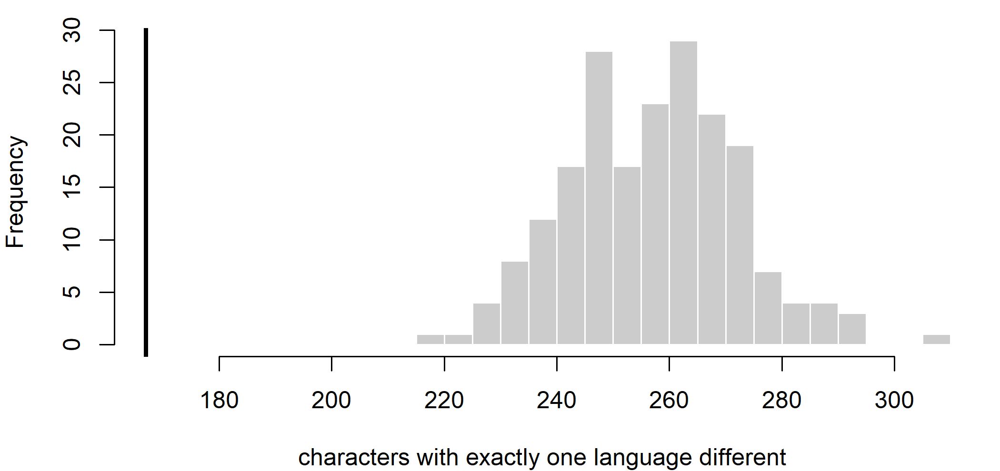
Figure I.7: Posterior predictive distribution of the number of characters in which exactly one of the six languages differs from the other five, from 200 posterior samples of the model without rate variation, with the observed value (vertical line).
c(observed = obs_one, predictive_mean = mean(sim_one),
p_lower = mean(sim_one <= obs_one), p_upper = mean(sim_one >= obs_one))#> observed predictive_mean p_lower p_upper
#> 167.0 257.5 0.0 1.0This statistic also detects the misspecification, and decisively: the observed data contain 167 characters in which exactly one language differs from the rest, whereas the model without rate variation predicts about 258, and none of the 200 simulated datasets has as few as the observed. The reason is the same as for invariant characters, seen from the other side. Under strong rate variation most characters are nearly invariant and a few change many times, so the data have more invariant characters and fewer characters with a single change than a model with equal rates expects. The fitted model compensates partly through branch lengths, but it cannot reproduce both the excess of invariant characters and the deficit of singleton patterns at the same time. A good test statistic need not be the one that targets the misspecification most directly; it needs only to capture a feature of the data that the misspecified model cannot reproduce.
6. An informative prior on the topology EI|GS, with the original and duplicated data.
cog6 <- rbind(English = c(1, 1, 1, 0, 1, 0),
German = c(1, 1, 0, 1, 0, 0),
Italian = c(0, 0, 1, 0, 0, 1),
Spanish = c(0, 0, 0, 1, 0, 1))
topos <- c(
"EG|IS" = "((English:0.1,German:0.2):0.2,Italian:0.1,Spanish:0.3);",
"EI|GS" = "((English:0.1,Italian:0.1):0.2,German:0.2,Spanish:0.3);",
"ES|GI" = "((English:0.1,Spanish:0.3):0.2,German:0.2,Italian:0.1);")
loglik3 <- function(X) sapply(topos, function(nw) pml(read.tree(text = nw),
phyDat(X, type = "USER", levels = c(0, 1)))$logLik)
posterior3 <- function(ll, prior) {
lj <- ll + log(prior); exp(lj - max(lj)) / sum(exp(lj - max(lj)))
}
uniform <- rep(1 / 3, 3)
specialist <- c(0.2, 0.6, 0.2)
ll_orig <- loglik3(cog6); ll_dup <- loglik3(cbind(cog6, cog6))
round(rbind(uniform = posterior3(ll_orig, uniform),
specialist = posterior3(ll_orig, specialist),
uniform_duplicated = posterior3(ll_dup, uniform),
specialist_duplicated = posterior3(ll_dup, specialist)), 3)#> EG|IS EI|GS ES|GI
#> uniform 0.866 0.119 0.016
#> specialist 0.700 0.287 0.013
#> uniform_duplicated 0.981 0.018 0.000
#> specialist_duplicated 0.947 0.053 0.000# prior p on EI|GS (others (1 - p)/2 each) needed for EI|GS to be the
# most probable topology: p / (1 - p) > L_EG / (2 L_EI), using the
# larger of the two competitors
threshold <- function(ll) {
r <- exp(max(ll[c("EG|IS", "ES|GI")]) - ll["EI|GS"]) / 2
unname(r / (1 + r))
}
c(original = threshold(ll_orig), duplicated = threshold(ll_dup))#> original duplicated
#> 0.7851 0.9639With the specialist’s prior, the posterior probability of EI|GS rises from 0.12 to 0.29 but EG|IS remains the most probable topology (0.70). For EI|GS to become the most probable topology, its prior probability would have to exceed about 0.79 with the original data. Doubling the data squares the likelihood ratios: under a uniform prior EG|IS now has posterior probability 0.98, the specialist’s prior lifts EI|GS only to 0.05, and the prior would need to exceed about 0.96 to make EI|GS the most probable. The weight of a fixed prior falls as data accumulate, because the posterior odds are the prior odds times a likelihood ratio that grows exponentially with the number of characters. Duplicating a matrix is also a reminder of what treating dependent characters as independent does: the duplicated characters carry no new information, yet they make the posterior twice as confident on the log-odds scale, which is the effect of the non-independence of binary characters within meaning slots (Section 3.5.2).
Research
1. A dated analysis of 50 of the roughly 500 Bantu languages with three historical calibrations.
- Tree prior. A birth–death prior with a sampling fraction of about 0.1, because a Yule prior that treats the sample as complete misplaces node ages when 90 percent of the lineages are unsampled (Stadler 2009). The 50 languages are presumably chosen to represent the zones, not at random, and diversified sampling over-represents deep splits relative to uniform sampling. State this, and compare with a sampling model for diversified sampling or with the results of different sampling fractions (Section 10.4).
- Clock. An uncorrelated relaxed clock (rates vary among Bantu lineages, Section 9.5), compared with a strict clock by stepping-stone sampling, with a proper, deliberately chosen prior on the mean rate.
- Calibrations. Soft densities (lognormal or uniform with soft bounds) whose widths reflect both the uncertainty of the historical dates and of their link to language splits; no calibration based on archaeology that the analysis will later be used to test (Section 10.3.1) (Grollemund et al. 2015).
- Validation plan, one check of each kind (Section 6.10):
- Implementation: a run without data, checking that the effective priors on the calibrated nodes and on the root match what the tree prior and calibrations jointly imply (Heled and Drummond 2012), plus a small simulation-based calibration of the set-up (Talts et al. 2018).
- Parameter recovery: simulate cognate data under the fitted model (50 languages, the real number of meanings and the real pattern of missing data) and measure the coverage and width of the 95 percent HPD interval for the root age.
- Robustness: simulate with borrowing between neighboring languages, as is likely in Bantu dialect continua (Greenhill et al. 2009), with lineage-specific rate shifts and with non-random sampling, and measure how far the root age and key clades move.
- Empirical adequacy: posterior predictive checks on the real data with statistics such as the number of singletons, the number of cognate classes per meaning and the distribution of pairwise distances.
- Historical interpretation: the root age is the age of the most recent common ancestor of the sampled languages, which is younger than Proto-Bantu if the deepest lineages (in the north-west) are unsampled, and linking it to an archaeological event requires a separate argument.
2. A harmonic-mean Bayes factor of 40 log units for a relaxed over a strict clock in Uralic.
- Why the claim is unreliable. The harmonic-mean estimator is unreliable, can have infinite variance and is biased towards parameter-rich models, which is exactly the direction of the claim (Section 6.7) (Lartillot and Philippe 2006; Xie et al. 2011).
- Re-estimation. Rerun both models with stepping-stone or path sampling (BEAST 2’s MODEL_SELECTION package, nested sampling with the NS package (Maturana Russel et al. 2019), MrBayes
ss, orpowerPosteriorin RevBayes), with enough steps (50 to 100, spaced more densely near the prior) and long enough runs at each step. Repeat each estimate at least twice from independent runs and report the spread. Make sure that all priors are proper: an improper prior on the clock rate leaves the marginal likelihood undefined (Section 6.2). - Prior sensitivity. Recompute the Bayes factor under alternative reasonable priors for the parameters that differ between the models (the mean clock rate and the standard deviation of the relaxed clock). A Bayes factor that changes sign or size with defensible priors is not decisive.
- Posterior predictive checks of statistics that a strict clock should fail if rates vary (the spread of root-to-tip distances, the variance of pairwise distances among languages of the same age), and the posterior of the relaxed clock’s coefficient of variation, which, if concentrated near zero, suggests that the strict clock is adequate (Section 9.5.7).
- Consequences. Report whether the dates of interest actually differ between the models. If they do not, the model choice matters little for the conclusions; if they do, report both.
3. Latin, Old Irish, Vedic Sanskrit and Hittite in a dated Indo-European analysis.
- Three treatments. As dated tips on their own branches, each ancient language gets a terminal branch with its own lexical change, which tends to push the internal nodes, and the root, older. As constrained ancestors (Chang et al. 2015), Latin is forced to be (nearly) ancestral to Romance, Old Irish to Goidelic and Vedic to Indo-Aryan, which shortens the paths and yields younger roots, but the constraint asserts what is, by Section 3.2.2, at most approximately true. Under a sampled-ancestor (fossilized birth–death) prior (Gavryushkina et al. 2014; Heggarty et al. 2023), ancestry is a parameter, but with a few hundred characters and much missing data its posterior can be driven by the priors on sampling and removal. Hittite, with no descendants, is a dated tip on a side branch in all three.
- Prior-only runs for each treatment, with the same calibrations and constraints: report the effective prior on the root age, on the ages of the constrained clades and, for the sampled-ancestor prior, the prior probability that each ancient language is an ancestor.
- Sensitivity analyses: vary the sampling-proportion and removal priors of the fossilized birth–death process; vary the tip-age priors over the corpus dates; remove all ancient languages and use their dates as node calibrations; and use alternative clock models (Section 10.6.4). A conclusion about the root age that moves with these choices, or whose posterior differs little from the corresponding prior, is driven by them rather than by the data.
- The monophyly constraints. Germanic, Italic, Celtic, Indo-Iranian and Tocharian are each supported by numerous shared innovations and are uncontroversial; constraining them mainly speeds convergence. Baltic is less safe: its monophyly as opposed to a paraphyletic Baltic within Balto-Slavic is debated, so Balto-Slavic, not Baltic, is the defensible constraint. Anatolian as the outgroup (first split) is widely accepted but not universal, and constraining it fixes the root position.
- What can no longer be “recovered”. With these constraints the analysis cannot be said to recover any of the constrained clades, nor the position of the root or the early separation of Anatolian (Section 6.2).
- What the constraints do to the priors. Conditioning a tree prior on monophyly changes the induced prior on node ages: constrained clades must be old enough to contain their members, and forcing Anatolian outside the rest changes the prior distribution of the root relative to the other nodes. Show it with prior-only runs with and without each set of constraints, plotting the prior densities of the root age and of each constrained clade’s age, and compare the posteriors from constrained and unconstrained analyses (Sections 10.3.2 and 15.9).
I.7 Chapter 7: Models of Lexical Evolution
The exercises of Chapter 7 turn on three themes: what a coding scheme claims about words, how the filtering of a cognate matrix must be matched by the likelihood, and what the parameters of the models can and cannot tell us about lexical history.
Conceptual
1. A language has two words for ‘stone’, from classes B and D: how do binary coding, single-state multistate coding and the replacement-with-synonymy model represent this, and which representation claims more than the data support?
Under binary coding there is one presence/absence character per cognate class, so the language is scored 1 for stone_B and 1 for stone_D (and 0 for the other classes of ‘stone’). Synonymy is represented without effort, but the two columns are treated as independent characters, so the model does not know that B and D compete for the same slot (Section 7.2.1). Under single-state multistate coding the meaning ‘stone’ is one character with one state per language. The analyst must either pick one of B and D, which throws information away, or enter the ambiguity {B, D}, which most programs read as “the language has B or D, we do not know which” and handle by summing over the two states. Under the replacement-with-synonymy model of Section 7.8.3 the state of the slot is the set {B, D}: both words are in use, and the model can describe how the slot came to hold two words and how one of them may later be lost (row 10 of Table 7.2).
The multistate representation makes the unsupported claim. The data say that both words are in use; the ambiguity code says that only one of them is the language’s word and that the analyst does not know which, and the forced choice says outright that the language has only one word. (Binary coding makes no false claim about this language, but its likelihood assigns probability to impossible configurations, such as a language with no word for ‘stone’ at all; see Section C.1.9.)
2. How do the reversible binary, stochastic Dollo and pseudo-Dollo models treat a borrowed class shared by two distantly related languages, and in which direction is the root age biased under each?
- Reversible binary CTMC (rows 1 to 3 of Table 7.2). Recurrent innovation is allowed, so the cheapest explanation is a second, parallel gain on the recipient’s branch. The loan is absorbed as homoplasy. It slightly inflates the estimated rate of change, but its main effect is that the two languages look more alike than inheritance would make them. Under reversible models borrowing therefore biases dates, if at all, downward (Section 8.3). For a single distant loan the effect is small.
- Stochastic Dollo (row 5). A class can be born only once, so its birth must lie above the most recent common ancestor of the two languages, which for distant relatives may be the root. The model then needs parallel losses in every intervening lineage that lacks the class. The loan therefore inflates the death rate and pushes births, and with them deep node ages, upward (Section 7.7.5).
- Pseudo-Dollo (row 6). A lost class cannot return, but the same class can be born independently on two lineages that never had it. The loan can therefore be absorbed as a second birth on the recipient’s branch, with a smaller bias than under the stochastic Dollo model, upward if anything. If the recipient’s ancestors had the class and lost it, though, the regain is impossible and the model behaves like stochastic Dollo.
So the same loan can bias the root age in opposite directions under different models, which is why disagreement between a reversible and a Dollo-type analysis is a symptom worth investigating (Section 7.12, point 4).
3. A colleague removes all singleton classes and then runs MrBayes with coding=noabsencesites. What is wrong, which parameters are affected, and in which direction?
There are two errors. First, singletons are uninformative about the unrooted topology only under parsimony. In a likelihood or Bayesian analysis they carry information about the lengths of the terminal branches, about the rate of change and about \(\pi_1\), and so about dates. Second, and more serious, the filter no longer matches the correction. The no-absence correction conditions only on the all-absent pattern being unobservable (Equation (7.4)), so the model still expects singletons at their predicted frequency. Faced with a matrix that has none, it moves to parameter values under which singletons are rare. The frequency of presence \(\pi_1\) is overestimated, because a class present in only one language is improbable when presence is common. Terminal branches are shortened, because few changes unique to one language are then needed, so tips look closer to their ancestors and shallow splits are dated too young. The overall rate and gamma shape are distorted too. Computational Exercise 2 below shows the upward bias in \(\pi_1\), and in the rate on a fixed tree. The remedy is either to keep the singletons or to use a correction that also lists the singleton patterns as unobservable (Section C.1.3).
4. Why does the stochastic Dollo likelihood not depend on the birth rate \(\lambda\) once we condition on the number of observed classes, and what does \(\lambda\) tell us historically?
Births form a Poisson process, so the number of classes showing pattern \(x\) is Poisson with mean \(\Lambda_x = \lambda\, g_x(\mu, \text{tree})\), where \(g_x\) does not involve \(\lambda\) (Section 7.7). The total number of observed classes \(N\) is Poisson with mean \(\lambda \sum_x g_x\). Conditional on \(N\), the vector of pattern counts is multinomial with probabilities \(g_x / \sum_y g_y\), and \(\lambda\) cancels. All the information about the tree and \(\mu\) lies in the relative frequencies of the patterns; \(\lambda\) only sets how many classes there are. Historically, \(\lambda/\mu\) is the stationary number of classes per language, so \(\lambda\) reflects the size of the word list and the amount of synonymy, both choices made by the data collector. It says nothing about the tempo of lexical change, which is carried by \(\mu\) (and only as \(\mu t\) without calibrations). It is a nuisance parameter.
5. Distinguish a parameter that is identifiable under the model from one that is interpretable as a historical quantity, using the binary loss rate and the meaning-slot replacement rate.
Identifiable under the model means that different values give different distributions of the data, so unlimited data would determine the value. Interpretable as a historical quantity means that the value corresponds to something that happened in the history of the languages (Section 6.10). With calibrations, the binary loss rate \(q_{10} = \beta\pi_0\) is identifiable (without them only rate × time is). Its historical meaning is murky, though. It is the rate at which one cognate class disappears from its meaning slot, under a coding in which the classes of a meaning are independent and a replacement counts as one loss plus one gain in two different columns. Its value depends on how many classes the coding produces and on how synonyms were scored. The per-meaning replacement rate of an infinite-states meaning-slot model is identifiable in the same sense. It reads directly as the expected number of replacements of the basic word for a meaning per millennium, a quantity a historical linguist can check against attested replacements, though it still depends on what is counted as a replacement (semantic shift, synonymy, loans). In a finite Mk model the rate depends on the arbitrary number of states \(K\) (Section C.1.8), which weakens even this interpretation. The two rates are therefore not comparable (Section 7.2).
6. Give three reasons why recovering the accepted subgroups does not by itself validate the substitution model.
- Low power. Topology is driven mainly by shared presences, and very different models, including misspecified ones, recover the same well-supported subgroups. The consequences of misspecification fall mainly on branch lengths, rates and dates (Sections 7.5 and 7.9), which the subgroup test does not examine.
- Non-independence. The cognate judgments in the matrix were made with the comparative method, which also established the subgroups, often from the same lexical evidence. Agreement shows that the model extracts the signal the linguists put in. It is not an independent test (Section 7.3.2).
- Wrong kind of check. Validating a model requires showing that it could have generated data like the observed data (empirical adequacy, Section 7.10), or that it recovers known values in simulations. Agreement on a few subgroups is neither. Bayes-factor wins and subgroup recovery are both compatible with failing posterior predictive checks (King 2026b).
A fourth reason is that easy, shallow subgroups are recovered even by distance methods with no substitution model at all.
Computational
The functions of Section 7.3 (binary_P() and the simulators), of Section C.1.3 (loglik_binary(), fit_binary()), of Section 7.7 (fitch_steps() and the 12-language tree tr) and of Sections 7.8 and C.1.9 are recreated first, with the code used in the chapter (not shown).
1. Find the branch length at which \(P_{11}(t)\) comes within 0.01 of \(\pi_1\) for \(\pi_1 = 0.1, 0.3, 0.5\); show that the expected agreement between two languages tends to \(\pi_0^2 + \pi_1^2\).
Since \(P_{11}(t) - \pi_1 = \pi_0 e^{-\beta t}\) with \(\beta = 1/(2\pi_0\pi_1)\), the horizon has the closed form \(t^* = 2\pi_0\pi_1 \log(100\,\pi_0)\). We check it against a numerical root of binary_P().
pis <- c(0.1, 0.3, 0.5)
t_num <- sapply(pis, function(p) uniroot(
function(t) binary_P(t, p)["1", "1"] - p - 0.01, c(1e-6, 50))$root)
t_closed <- 2 * (1 - pis) * pis * log(100 * (1 - pis))
round(rbind(pi1 = pis, numerical = t_num, closed_form = t_closed), 3)#> [,1] [,2] [,3]
#> pi1 0.10 0.300 0.500
#> numerical 0.81 1.784 1.956
#> closed_form 0.81 1.784 1.956Two languages separated by a path of length \(t\) agree on a character with probability \(\sum_i \pi_i P_{ii}(t) = \pi_0^2 + \pi_1^2 + 2\pi_0\pi_1 e^{-\beta t}\), which falls to \(\pi_0^2 + \pi_1^2\):
agree <- function(t, p) sum(c(1 - p, p) * diag(binary_P(t, p)))
tt <- c(0.25, 0.5, 1, 2, 5)
tab <- t(sapply(pis, function(p) c(sapply(tt, agree, p = p),
limit = (1 - p)^2 + p^2)))
dimnames(tab) <- list(paste("pi1 =", pis), c(paste("t =", tt), "limit"))
round(tab, 3)#> t = 0.25 t = 0.5 t = 1 t = 2 t = 5 limit
#> pi1 = 0.1 0.865 0.831 0.821 0.820 0.82 0.82
#> pi1 = 0.3 0.812 0.708 0.619 0.584 0.58 0.58
#> pi1 = 0.5 0.803 0.684 0.568 0.509 0.50 0.50# simulation check: two languages 5 + 5 units apart, pi1 = 0.3
set.seed(1)
X2 <- sim_ctmc_binary(read.tree(text = "(A:5,B:5);"), 20000, pi1 = 0.3)
mean(X2["A", ] == X2["B", ])#> [1] 0.5776The horizon is reached sooner, in units of expected changes per character, the rarer cognate presence is (about 0.8 for \(\pi_1 = 0.1\), against about 2 for \(\pi_1 = 0.5\)). With a small \(\pi_1\), \(\beta\) is large: each change is a rare gain or a loss of one of the few present classes, and the memory of the starting state decays quickly. Beyond the horizon, characters carry essentially no information about how long ago two lineages separated, which is the saturation horizon of Section 7.3.1. As an example, take the clock rate of the simulated data of Appendix H (0.15 expected changes per character per millennium) and \(\pi_1 = 0.35\). Then \(t^* \approx 1.9\), and since the path between two languages is twice their divergence time, pairwise information is nearly exhausted for splits about 6 millennia old. Without rate variation, this is the same order as the root ages being debated (Chapter 10). Even after saturation, unrelated languages agree on \(\pi_0^2 + \pi_1^2\) of the characters (0.82, 0.58 and 0.50 above), mostly through shared absences, because two independent draws from \(\pi\) often coincide by chance. Raw agreement therefore has a floor well above zero, and distance corrections must subtract it (Chapter 4).
2. Repeat the ascertainment simulation with \(\pi_1 = 0.05\) and \(0.5\); how does the bias of the uncorrected fit depend on \(\pi_1\)? Then also remove singletons and refit with the no-absence correction.
As an extension, the last fit uses a correction that also lists the 12 singleton patterns as unobservable (Section C.1.3), to show what the right correction recovers.
loglik_U <- function(tree, X, pi1, rate, U) {
# pruning likelihood conditioned on the columns of U being unobservable
tree <- reorder(tree, "postorder")
ntip <- Ntip(tree); nn <- ntip + tree$Nnode; n <- ncol(X)
X <- cbind(X, U)[tree$tip.label, , drop = FALSE]
L0 <- L1 <- matrix(1, nn, ncol(X))
L0[1:ntip, ] <- X == 0
L1[1:ntip, ] <- X == 1
for (i in seq_len(nrow(tree$edge))) {
p <- tree$edge[i, 1]; ch <- tree$edge[i, 2]
P <- binary_P(tree$edge.length[i], pi1, rate)
L0[p, ] <- L0[p, ] * (P[1, 1] * L0[ch, ] + P[1, 2] * L1[ch, ])
L1[p, ] <- L1[p, ] * (P[2, 1] * L0[ch, ] + P[2, 2] * L1[ch, ])
}
site <- (1 - pi1) * L0[ntip + 1, ] + pi1 * L1[ntip + 1, ]
sum(log(site[1:n])) - n * log(1 - sum(site[-(1:n)]))
}
U <- cbind(0L, diag(12L)) # all-absent and the 12 singletons
rownames(U) <- tr$tip.label
fit_U <- function(X) {
o <- optim(c(0, 0), function(p)
-loglik_U(tr, X, plogis(p[1]), exp(p[2]), U))
c(pi1 = plogis(o$par[1]), rate = exp(o$par[2]))
}
one_pi <- function(p) {
set.seed(7)
X_all <- sim_ctmc_binary(tr, 3000, pi1 = p, rate = 1)
X_obs <- X_all[, colSums(X_all) > 0] # all-absent never observed
X_ns <- X_obs[, colSums(X_obs) > 1] # singletons removed as well
out <- rbind(uncorrected = fit_binary(tr, X_obs, FALSE)[1:2],
no_absence = fit_binary(tr, X_obs, TRUE)[1:2],
no_sing_noabs = fit_binary(tr, X_ns, TRUE)[1:2],
no_sing_right = fit_U(X_ns))
data.frame(true_pi1 = p, fit = rownames(out), n_chars =
c(ncol(X_obs), ncol(X_obs), ncol(X_ns), ncol(X_ns)),
round(out, 3), row.names = NULL)
}
do.call(rbind, lapply(c(0.05, 0.5), one_pi))#> true_pi1 fit n_chars pi1 rate
#> 1 0.05 uncorrected 1160 0.135 2.975
#> 2 0.05 no_absence 1160 0.051 1.001
#> 3 0.05 no_sing_noabs 505 0.118 1.553
#> 4 0.05 no_sing_right 505 0.051 1.028
#> 5 0.50 uncorrected 2883 0.513 1.089
#> 6 0.50 no_absence 2883 0.494 1.015
#> 7 0.50 no_sing_noabs 2749 0.518 1.075
#> 8 0.50 no_sing_right 2749 0.491 1.005The bias of the uncorrected fit grows sharply as \(\pi_1\) falls. With \(\pi_1 = 0.05\), most simulated characters are all-absent and never observed. The uncorrected fit must explain why it sees none of them, so it inflates the frequency of presence about two- to threefold and the rate about threefold. With \(\pi_1 = 0.5\) the all-absent pattern is rare and the uncorrected estimates are off by only a few percent for \(\pi_1\) and by about ten percent for the rate. Real cognate matrices have small \(\pi_1\), so they are in the regime where the correction matters most. Removing singletons and keeping the no-absence correction re-introduces a bias of the same kind (Conceptual Exercise 3): \(\pi_1\) and the rate are again overestimated, more strongly for small \(\pi_1\), because more than half of the observed characters are singletons when presence is rare (655 of 1160 here). The correction that matches the filter recovers both parameters. The tree is fixed at the truth here; with free branch lengths the missing singletons would also shorten the terminal branches.
3. Repeat the rate-heterogeneity experiment for true shapes 0.2, 1 and 5, plot estimated/true tree length for single-rate and gamma fits, and refit the shape-0.2 data with \(k = 2, 4, 8\) categories.
Each pair of fits, with NNI search and the ascertainment-corrected branch-length refinement refine_asc_edges(), takes about two minutes, and the whole experiment about ten. The code is therefore shown with the results of a tested run. For the second part, the topology of the gamma fit is kept fixed and the shape and branch lengths are re-estimated for each \(k\); \(k = 16\) was added to see where the results settle.
set.seed(11)
tr20 <- rtree(20, tip.label = paste0("L", 1:20)) # as in the chapter
ctl <- pml.control(trace = 0)
fit_pair <- function(shape) {
X <- sim_ctmc_binary(tr20, 2000, pi1 = 0.5, rate = 1, shape = shape)
X <- X[, colSums(X) > 0 & colSums(X) < nrow(X)] # variable only
pd <- phyDat(X, type = "USER", levels = c("0", "1"))
start <- NJ(dist.hamming(pd))
f1 <- optim.pml(pml(start, pd, ASC = TRUE), optNni = TRUE, control = ctl)
f4 <- optim.pml(pml(start, pd, ASC = TRUE, k = 4), optNni = TRUE,
optGamma = TRUE, control = ctl)
list(pd = pd, f1 = refine_asc_edges(f1),
f4 = refine_asc_edges(f4, opt_shape = TRUE))
}
shapes <- c(0.2, 1, 5)
fits <- lapply(shapes, fit_pair)
L <- sum(tr20$edge.length)
ratio <- t(sapply(fits, function(f) c(
single = sum(f$f1$tree$edge.length) / L,
gamma = sum(f$f4$tree$edge.length) / L, alpha_hat = f$f4$shape)))
# shape-0.2 data, gamma topology held fixed, k = 2, 4, 8 (and 16)
f02 <- fits[[1]]
by_k <- t(sapply(c(2, 4, 8, 16), function(k) {
f <- optim.pml(pml(f02$f4$tree, f02$pd, ASC = TRUE, k = k,
shape = f02$f4$shape), optGamma = TRUE, control = ctl)
f <- refine_asc_edges(f, opt_shape = TRUE)
c(k = k, logLik = f$logLik, alpha_hat = f$shape,
length_ratio = sum(f$tree$edge.length) / L)
}))The tested run (phangorn 2.12, R 4.6) gave the values entered below. The single-rate and gamma fits differ in log-likelihood by 587, 470 and 38 units for shapes 0.2, 1 and 5. Both models recovered the true topology to within 2 to 4 Robinson-Foulds units.
ratio <- data.frame(true_shape = c(0.2, 1, 5),
single = c(0.422, 0.496, 0.767),
gamma = c(0.963, 1.192, 1.090),
alpha_hat = c(0.289, 0.861, 3.396))
by_k <- data.frame(k = c(2, 4, 8, 16),
logLik = c(-14759.6, -14726.5, -14725.1, -14724.8),
alpha_hat = c(0.579, 0.289, 0.187, 0.189),
length_ratio = c(0.703, 0.962, 1.015, 1.024))
ratio#> true_shape single gamma alpha_hat
#> 1 0.2 0.422 0.963 0.289
#> 2 1.0 0.496 1.192 0.861
#> 3 5.0 0.767 1.090 3.396#> k logLik alpha_hat length_ratio
#> 1 2 -14760 0.579 0.703
#> 2 4 -14726 0.289 0.962
#> 3 8 -14725 0.187 1.015
#> 4 16 -14725 0.189 1.024matplot(ratio$true_shape, ratio[, c("single", "gamma")], type = "b",
pch = 19, lty = 1, log = "x", ylim = c(0, 1.3), las = 1,
col = c("#555555", "#1b6ca8"), xlab = "true gamma shape",
ylab = "estimated / true tree length")
abline(h = 1, lty = 3)
legend("bottomright", c("single rate", "Gamma(4)"), pch = 19,
col = c("#555555", "#1b6ca8"), bty = "n")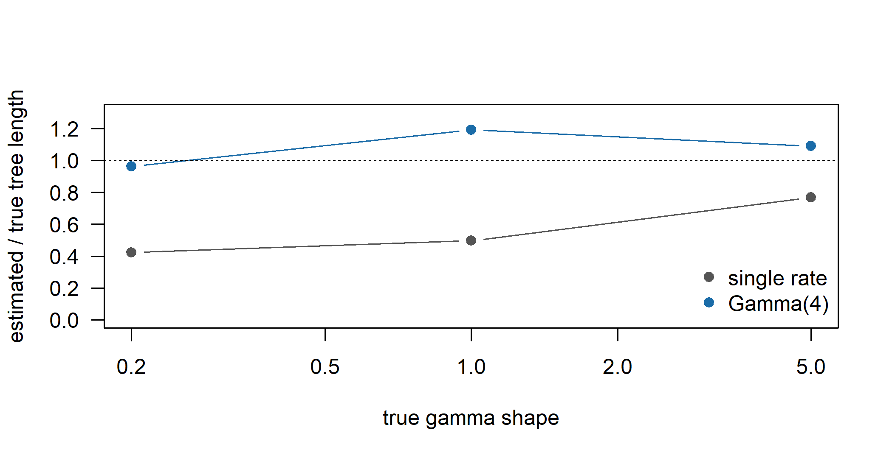
Figure I.8: Ratio of estimated to true tree length for single-rate and Gamma(4) fits to binary characters simulated with gamma rate variation of shape 0.2, 1 and 5 (results of the tested run; dotted line: no bias).
The single-rate model underestimates the tree length at every shape. The bias shrinks as the rates become more equal (58% too short at shape 0.2, 23% at shape 5), but it does not vanish even at shape 5, where the Gamma(4) model is still preferred by 38 log-likelihood units. The gamma model is within about 20% of the true length throughout, overshooting slightly, the same pattern as in Table 7.4. With four categories it overestimates the shape at 0.2 (0.29) and underestimates it at 1 and 5, a sign that shape and tree length trade off.
For the shape-0.2 data, going from two to four categories gains 33 log-likelihood units, from four to eight only 1.4, and from eight to sixteen 0.3. In fit the results stop changing from four categories on. The estimated shape and tree length keep moving up to eight categories, though: the shape falls from 0.29 to 0.19, close to the true 0.2, and the tree length rises by 5%. They are stable only between 8 and 16. With very strong heterogeneity, four categories describe the fast tail of the distribution poorly. For dating it is therefore worth checking \(K = 8\) even when the likelihood suggests that \(K = 4\) suffices, as Section C.1.4 concludes from a similar experiment.
4. Simulate stochastic Dollo data on tr, copy 30 classes present in L1 into L12, and compare the site frequency spectrum and the distribution of Fitch steps. Which statistic is more sensitive, and which validation category does the exercise belong to?
Copying a class that L12 already has changes nothing, so the 30 classes are drawn from those present in L1 and absent from L12. L1 and L12 lie on opposite sides of the root of tr (their path length is 2), so these are distant loans. The spectrum is summarized by a chi-square-type distance from the expected spectrum, and homoplasy by the share of characters needing two or more Fitch steps on the true tree. To judge sensitivity, each statistic is compared with its distribution over datasets simulated under the same Dollo model without borrowing. Because one dataset is a single draw, the chunk also estimates how often each statistic exceeds its 95th null percentile in 100 fresh datasets with 10, 20 and 30 loans.
set.seed(7)
Xd <- sim_dollo(tr, lambda = 100, mu = 0.8) # as in the chapter
borrow <- function(X, n = 30, from = "L1", to = "L12") {
cand <- which(X[from, ] == 1 & X[to, ] == 0)
X[to, cand[sample.int(length(cand), n)]] <- 1L
X
}
set.seed(30)
Xb <- borrow(Xd) # 30 loans L1 -> L12
sfs <- function(X) tabulate(colSums(X), 12) / ncol(X)
round(rbind(no_borrowing = sfs(Xd), borrowing = sfs(Xb)), 3)#> [,1] [,2] [,3] [,4] [,5] [,6] [,7] [,8] [,9]
#> no_borrowing 0.263 0.181 0.140 0.177 0.037 0.037 0.053 0.047 0.023
#> borrowing 0.260 0.177 0.137 0.147 0.074 0.037 0.056 0.042 0.026
#> [,10] [,11] [,12]
#> no_borrowing 0.009 0.019 0.014
#> borrowing 0.012 0.019 0.014# reference data sets without borrowing: half for the expected spectrum,
# half for the null distribution of the two statistics
set.seed(99)
ref <- replicate(200, sim_dollo(tr, lambda = 100, mu = 0.8),
simplify = FALSE)
m_sfs <- rowMeans(sapply(ref[1:100], sfs))
stat <- function(X) c(
sfs_distance = sum((sfs(X) - m_sfs)^2 / m_sfs),
multi_step = mean(fitch_steps(tr, X) >= 2))
null_stat <- sapply(ref[101:200], stat)
crit <- apply(null_stat, 1, quantile, 0.95)
round(cbind(no_borrowing = stat(Xd), borrowing = stat(Xb),
null_mean = rowMeans(null_stat), null_95 = crit), 3)#> no_borrowing borrowing null_mean null_95
#> sfs_distance 0.014 0.047 0.026 0.045
#> multi_step 0.219 0.274 0.191 0.218# how often does each statistic exceed its 95% point? (size and power)
set.seed(100)
pw <- replicate(100, {
Y <- sim_dollo(tr, lambda = 100, mu = 0.8)
c(stat(Y) > crit, sapply(c(10, 20, 30), function(n)
stat(borrow(Y, n)) > crit))
})
matrix(rowMeans(pw), 2,
dimnames = list(c("SFS distance", "multi-step share"),
c("no loans", "10 loans", "20 loans", "30 loans")))#> no loans 10 loans 20 loans 30 loans
#> SFS distance 0.05 0.15 0.51 0.90
#> multi-step share 0.04 0.32 0.80 0.98On the chapter’s dataset, both statistics move beyond their 95th null percentile once the loans are added. The spectrum distance only just crosses it: the loans move 30 classes up by one frequency class each, mostly from classes present in four languages to five. The share of multi-step characters moves far into the tail, because almost every distant loan creates a class that needs an extra step on the true tree. The replicate study confirms the ranking. Both statistics hold their nominal 5% rate without loans, but the homoplasy statistic detects 10 and 20 loans about twice as often as the spectrum distance (32% against 15%, and 80% against 51%). With 30 loans (about 7% of the classes) both detect the borrowing almost always. Homoplasy on the tree is therefore the more sensitive statistic for distant borrowing. The spectrum responds only because the loans shift classes between frequency classes. Local borrowing, which creates almost no homoplasy, would escape both (Chapter 8). The check is idealized: the null distribution uses the true tree and parameters, whereas in a real posterior predictive check they would be estimated from the contaminated data, which partly absorbs the loans.
In the vocabulary of Section 6.10, the exercise is a simulation with a known violation of the model (borrowing), so it belongs to robustness under misspecification. Its purpose, though, is to measure the power of statistics used for empirical model adequacy. It is not itself an adequacy check, because no real data are involved.
5. Confirm that every simulated language has exactly one 1 per meaning, then use p_exactly_one() with the observed frequency of 1s in B to compute how much probability an independent binary model gives to the configurations that occur, for meanings with 2, 4 and 8 classes.
set.seed(3)
rates <- rep(c(0.1, 0.5, 2), each = 100) # as in the chapter
M <- sim_meanings(tr, rates)
B <- to_binary(M)
meaning <- sub("_.*", "", colnames(B))
words <- sapply(split(seq_along(meaning), meaning),
function(j) rowSums(B[, j, drop = FALSE]))
dim(words) # languages x meanings#> [1] 12 300#> [1] TRUEpi1_hat <- mean(B) # observed frequency of 1s
K <- c(2, 4, 8)
data.frame(K = K,
meanings_with_K = sapply(K, function(k) sum(table(meaning) == k)),
exactly_one = p_exactly_one(K, pi1_hat),
no_word = (1 - pi1_hat)^K,
all_12_languages = p_exactly_one(K, pi1_hat)^12)#> K meanings_with_K exactly_one no_word all_12_languages
#> 1 2 66 0.4309 0.47041 4.099e-05
#> 2 4 22 0.4054 0.22128 1.971e-05
#> 3 8 13 0.1794 0.04897 1.113e-09#> [1] 0.314Every language has exactly one word per meaning, as the infinite-states simulator guarantees. Taking the observed frequency of presence (about 0.31) as \(\pi_1\), an independent binary model at stationarity gives a configuration with exactly one word only about 43% of its probability per language for a two-class meaning, about 41% for four classes and about 18% for eight. For eight classes it expects a language to have no word at all 5% of the time, and to have two or more words most of the time. Across 12 languages, even if the languages were independent, the probability that all of them show a possible configuration is of order \(10^{-5}\) for two- and four-class meanings and \(10^{-9}\) for eight-class meanings. The independent model thus spends most of its probability on data that cannot occur, increasingly so for fast meanings with many classes, which are also the meanings that contribute most columns. This is the composite-likelihood problem of Section 7.2.1 in numbers. (A single global \(\pi_1\) is the binary model’s own assumption. With \(\pi_1 = 1/K\) per meaning, as in Section C.1.9, the proportions are larger but still well below one.)
6. Run 16_f81_beta_mixture.Rev one model at a time with --args <model> 500, tabulate log Bayes factors against binary Jukes–Cantor, and add a Beta mixture with discrete Gamma(4) rates as a sixth model.
Script 16 already contains F81 + Gamma(4) as model 3, so the sixth model adds gamma rates to the asymmetric Beta mixture (model 4). We copied the script, added "beta_mixture_gamma" to model_names, and inserted the block below in the marginal-likelihood loop, just before seq.clamp(data):
if (mi == 6) {
m ~ dnBeta(1, 1)
phi ~ dnExponential(0.1)
moves.append( mvBetaProbability(m, delta = 20, weight = 3) )
moves.append( mvScale(phi, lambda = 0.5, weight = 3) )
beta_a := m * phi
beta_b := abs(1.0 - m) * phi
pi_cat := fnDiscretizeBeta(beta_a, beta_b, n_pi_cats)
for (k in 1:n_pi_cats) {
Qm[k] := fnF81(simplex(abs(1.0 - pi_cat[k]), pi_cat[k]))
}
alpha ~ dnExponential(1.0)
moves.append( mvScale(alpha, lambda = 0.5, weight = 3) )
site_rates := fnDiscretizeGamma(alpha, alpha, 4)
seq ~ dnPhyloCTMC(tree = psi, Q = Qm, branchRates = clock_rate,
siteRates = site_rates,
siteMatrices = equal_w, type = "Binary",
coding = "noabsencesites")
}and ran, from revbayes/,
for m in 1 2 3 4 5 6; do
rb analyses/lexical/16_f81_beta_mixture_six.Rev --args $m 500
done(16 stones of 500 generations each; 15 s to 2 min per model for models 1 to 5, 5.5 min for model 6, using RevBayes 1.4.1). The results:
ml <- data.frame(
model = c("binary Jukes-Cantor", "F81", "F81 + Gamma(4)",
"Beta mixture (generating)", "symmetric Beta mixture",
"Beta mixture + Gamma(4)"),
ss = c(-5379.70, -5153.36, -5135.66, -5095.86, -5302.63, -5101.04),
ps = c(-5380.19, -5154.22, -5136.45, -5096.36, -5302.91, -5101.52))
ml$logBF_vs_JC <- ml$ss - ml$ss[1]
ml$logBF_vs_best <- ml$ss - max(ml$ss)
knitr::kable(ml, digits = 2, col.names = c("model", "lnML (SS)",
"lnML (PS)", "log BF vs JC", "log BF vs best"))| model | lnML (SS) | lnML (PS) | log BF vs JC | log BF vs best |
|---|---|---|---|---|
| binary Jukes-Cantor | -5380 | -5380 | 0.00 | -283.84 |
| F81 | -5153 | -5154 | 226.34 | -57.50 |
| F81 + Gamma(4) | -5136 | -5136 | 244.04 | -39.80 |
| Beta mixture (generating) | -5096 | -5096 | 283.84 | 0.00 |
| symmetric Beta mixture | -5303 | -5303 | 77.07 | -206.77 |
| Beta mixture + Gamma(4) | -5101 | -5102 | 278.66 | -5.18 |
The posterior samples at power 1 gave \(\alpha\) with median 5.3 (95% interval 3.6 to 10) under the sixth model, against 1.9 (1.5 to 2.5) under F81 + Gamma(4), with \(m \approx 0.30\) and \(\phi \approx 5.8\) (true values 0.25 and 4).
Adding gamma rate variation to the Beta mixture lowers the marginal likelihood by about 5.2 log units (stepping-stone; 4.9 by path sampling), a Bayes factor of roughly 150 against the extra parameter. Our runs of models 1 to 5 agree with the book’s reference runs to within about 0.5 log units, so the difference is well beyond the Monte Carlo error. The maximized fit hardly improves, because the data were simulated without rate variation and the posterior of \(\alpha\) moves to large values (nearly equal rates). The cost is the Occam penalty: the Exponential(1) prior puts most of its mass on strong heterogeneity (\(\alpha < 2\)), a region the data reject, and the marginal likelihood averages over that prior. By contrast, gamma rates improve F81 by about 18 log units. Variation of the presence frequency among characters creates patterns that a gamma model partly mimics, which is why \(\alpha\) is small under F81 + Gamma(4) although no rate variation was simulated.
If the same ranking were found for a real cognate matrix, it would follow that, among these six models, the data are best described by letting the frequency of presence vary among cognate classes, and that once this is allowed, extra variation in rates is not needed to describe the patterns. Several things would not follow. It would not show that lexical replacement has uniform rates, since frequency and rate heterogeneity are partly confounded, and a Bayes factor depends on the priors (here the prior on \(\alpha\)). It would not show that any of the models is adequate, since a Bayes factor is relative and needs posterior predictive checks to complement it (Section 7.10). It would not show that the winning model recovers trees or dates better (Rönchen 2025). And it would not show that the Beta distribution describes a real process: it is a flexible description of the heterogeneity in the data.
Research
1. Design a dated analysis of about 40 languages and 200 meanings, with 15% synonymy, unrecorded meanings in poorly documented languages and flagged loans: choose and justify a coding, substitution model, ascertainment correction and adequacy checks.
A strong answer would argue along these lines.
- Coding. Binary coding of cognate classes within meanings, keeping synonyms as several 1s. With 15% synonymy, single-state multistate coding would either discard data or misstate them as ambiguity (Conceptual Exercise 1; polymorphism column of Table 7.2). Unrecorded meanings are coded “?” for every class of that meaning, never 0. Flagged loans are coded as missing in the recipient, with a sensitivity analysis in which they are kept, since removing loans can make the recipient look artificially conservative. The meaning structure is retained as partitions.
- Substitution model. A binary CTMC with estimated \(\pi_1\) and among-meaning rate variation (rows 2 and 3 of Table 7.2), preferably per-meaning rates with a hierarchical prior, as available through BEASTling (Maurits et al. 2017; Hoffmann et al. 2021). A covarion variant follows, and a Dollo-type comparison (pseudo-Dollo, Bouckaert and Robbeets (2017)) checks that dates do not hinge on reversibility. A relaxed clock is needed for dating (Chapter 9).
- Ascertainment. The no-absence correction, because singletons and universally shared classes are kept. Because missingness varies by meaning, the correction must be computed per meaning or per pattern of missingness (Section C.1.3; Ryder and Nicholls (2011)). Check what the software actually does (Table 7.3, column “Diagnostic checks”).
- Checks. Prior-only runs for the calibrations. Posterior predictive checks over the posterior tree sample, using the site frequency spectrum, the frequency of singletons, cognates per language (sensitive to the poorly documented languages), synonyms and classes per meaning, and homoplasy per meaning (Section 7.10). If meanings are partitioned, check the weighting of partition rates (King 2026b). Sensitivity of the root age to the rate model, the number of gamma categories and the loan coding should also be reported.
The answer should acknowledge what the choice leaves unmodeled. Binary coding ignores within-meaning dependence, so intervals are likely to be too narrow (Section 7.2.1), and synonymy is represented but not modeled as a process.
2. Design a simulation study measuring how much binary coding overstates posterior certainty about the root age compared with a meaning-slot model.
- Generating process. Known dated trees (for example 30 languages, root age 6 millennia, birth-death shape) and 200 meanings with gamma-distributed replacement rates. Simulate with an explicit replacement-with-synonymy process: new classes enter a slot, coexist and are lost, with synonymy levels of 0%, 5% and 15%. The 0% level reduces to the infinite-states model of Section 7.8.
- Analyses. The same data, calibrations, clock and tree prior, analyzed (a) under binary coding with a binary CTMC + gamma and the no-absence correction, and (b) under a meaning-slot model (the infinite-states model, or Mk on meanings with synonyms as ambiguity). Where feasible, (c) the generating model written in RevBayes (Höhna et al. 2016). A control set simulated under independent binary characters separates the effect of the dependence from other differences.
- Summaries. For the root age: the width of the 95% interval, its coverage over replicates, bias, and the ratio of posterior variances between codings (an “effective information inflation” factor). Also the same quantities for internal nodes and the clock rate, and rank histograms of the true value.
- Validation categories (Section 6.10). Prior-only runs and simulation-based calibration of each implementation (Talts et al. 2018) are implementation validation. Fitting the meaning-slot model to data from its own process is parameter recovery. Fitting binary models to meaning-slot data, and any model to data with synonymy it ignores, is robustness under misspecification. Posterior predictive checks run inside the study measure whether adequacy checks would have detected the problem. The study as a whole says nothing about historical interpretation.
The headline result would be the coverage of the binary analysis. If its intervals are narrower but cover the truth as often as the meaning-slot intervals, binary coding is efficient. If coverage falls below 95%, it overstates certainty.
3. Outline an explicit replacement-with-synonymy model for one slot with at most three classes, as a CTMC on non-empty subsets; give the rate matrix, say which parameters are estimable from 30 languages, and propose a test statistic.
The state space consists of the seven non-empty subsets of \(\{A, B, C\}\): three single-word states, three two-word states and \(\{A,B,C\}\). Let \(\gamma\) be the rate at which a given absent class enters the slot, and \(\mu_k\) the rate at which a given present class is lost when the slot holds \(k\) words. Set \(\mu_1 = 0\), so that the slot is never empty, \(\mu_2 = \mu\) and \(\mu_3 = \mu(1 + \kappa)\), where \(\kappa \ge 0\) measures how much competition speeds up loss. The off-diagonal rates are \[q(S \to S \cup \{c\}) = \gamma \quad (c \notin S), \qquad q(S \to S \setminus \{c\}) = \mu_{|S|} \quad (c \in S,\ |S| \ge 2),\] and all other off-diagonal rates are zero, so a replacement \(\{A\} \to \{A,B\} \to \{B\}\) always passes through synonymy. The diagonal makes the rows sum to zero. For example:
slot_Q <- function(gamma, mu, kappa) {
S <- list("A", "B", "C", c("A", "B"), c("A", "C"), c("B", "C"),
c("A", "B", "C"))
nm <- sapply(S, paste, collapse = "")
loss <- c(0, mu, mu * (1 + kappa)) # per-word loss, by |S|
Q <- matrix(0, 7, 7, dimnames = list(nm, nm))
for (i in 1:7) for (j in 1:7) {
d <- length(S[[j]]) - length(S[[i]])
if (d == 1 && all(S[[i]] %in% S[[j]])) Q[i, j] <- gamma
if (d == -1 && all(S[[j]] %in% S[[i]]))
Q[i, j] <- loss[length(S[[i]])]
}
diag(Q) <- -rowSums(Q)
Q
}
Q <- slot_Q(gamma = 0.2, mu = 1, kappa = 0.5)
Q#> A B C AB AC BC ABC
#> A -0.4 0.0 0.0 0.2 0.2 0.0 0.0
#> B 0.0 -0.4 0.0 0.2 0.0 0.2 0.0
#> C 0.0 0.0 -0.4 0.0 0.2 0.2 0.0
#> AB 1.0 1.0 0.0 -2.2 0.0 0.0 0.2
#> AC 1.0 0.0 1.0 0.0 -2.2 0.0 0.2
#> BC 0.0 1.0 1.0 0.0 0.0 -2.2 0.2
#> ABC 0.0 0.0 0.0 1.5 1.5 1.5 -4.5e <- eigen(t(Q))
pi_st <- Re(e$vectors[, which.min(Mod(e$values))])
pi_st <- setNames(pi_st / sum(pi_st), rownames(Q))
round(pi_st, 3) # stationary distribution#> A B C AB AC BC ABC
#> 0.276 0.276 0.276 0.055 0.055 0.055 0.007With these illustrative values about 17% of slots hold synonyms at stationarity, close to the 15% of Research Exercise 1. From 30 languages, the parameters that are practically estimable are the entry rate \(\gamma\), or the overall rate of replacement, and the stationary proportion of slots with synonyms, which depends mainly on \(\gamma/\mu\). Pooled over many meanings with a shared or hierarchical prior, \(\mu\) itself is roughly estimable too, because the durations of synonymy show up as synonym states shared by close relatives. The competition parameter \(\kappa\) is weakly identified. Three-word states are rare, and \(\kappa\) is confounded with the way word lists sample synonyms, since many lists record only the “most basic” word (Section 7.8.3). Class-specific rates are not estimable. With only three classes, a lost class can also re-enter, so the model allows recurrent innovation unless the class labels are renewed. Two test statistics for posterior predictive checks suggest themselves. The first is the proportion of languages with synonyms per meaning. The second is the phylogenetic clustering of synonymy, for example the proportion of sister pairs that share the same two-word state, compared with the predictive distribution. Real data in which synonymy is scattered rather than clustered would point to list-compilation artifacts or borrowing rather than to the sorting of ancestral synonyms. Related simulation work (Canby et al. 2024) and the structured-character construction of Tarasov (2019) provide starting points.
I.8 Chapter 8: Borrowing, Contact and Reticulation
The solutions below use the toy family and the simulator of Section 8.3; all borrowing in them is simulated, so the “right answer” is always known.
Conceptual
1. Genealogical versus summary readings of a tree; which reading do four products require?
On the genealogical reading a tree approximates a real history of separating speech communities: internal nodes are proto-languages, branch lengths measure time or change, and contact is a perturbation of a fundamentally branching history. On the summary reading the tree is only the hierarchical arrangement that best fits the similarities in the data, like a cluster dendrogram; its nodes need not have existed and its branch lengths need not measure time (Section 8.2).
- NeighborNet: neither, strictly. It is a descriptive display of the (conflicting) signal in a distance matrix and makes no claim about history (Section 8.5); it belongs with the summary reading.
- Dated MCC tree used to estimate the age of a proto-language: genealogical. The root age is meaningful only if the root stands for a community that later split.
- Proto-lexicon reconstructed at an internal node: genealogical. A reconstruction at a node that never corresponded to a speech community is a reconstruction of nothing.
- Dendrogram of dialect distances: summary. It organizes aggregate similarity, which in a continuum reflects geography and diffusion as much as descent (Section 8.8).
2. A NeighborNet box joins language X with a language of another subgroup: four causes other than borrowing, and how to tell each from borrowing.
- Parallel innovation or semantic shift (the advergence of Chang et al. (2015)). The shared items would be “natural” changes that recur cross-linguistically, and they would show regular, independent sound correspondences in both languages. Loans, by contrast, often violate the recipient’s correspondences, carry donor-specific phonology, and cluster in culturally exposed domains.
- Shared retentions in conservative languages. If X and its partner both have slow lineages, they share old cognates that their own relatives replaced. Then the shared classes are also found in an outgroup or reconstructed for the proto-language, and a four-taxon count with an outgroup (Computational Exercise 3) shows no excess of derived sharing.
- Coding errors or inconsistent sources. If both languages were coded by the same compiler or from the same type of source, the box may reflect cognate judgments rather than history. Rechecking the judgments, or recoding the suspicious meanings blind, should make the box shrink if it is an artifact.
- Missing data and small samples. Poorly documented languages have distances estimated from few meanings, and noise produces boxes. Coverage per language, bootstrap or consensus networks (Figure 8.4) and pairwise-deletion distances show whether the box is larger than sampling error.
- Misclassification, or a linkage. X may in fact belong with its partner, or the “subgroups” may be overlapping innovation-defined groups in a former dialect network (Section 8.7). Exclusively shared innovations in phonology and morphology, which are rarely borrowed, would then cut across the accepted subgroups as well.
3. Why is local borrowing almost invisible to delta scores and Q-residuals, yet harmful to dates?
Both statistics measure departures from the four-point condition (Equations (8.2) and (8.3)), that is, conflict between splits. A loan from a sister or close neighbor unites languages that the tree already groups together, so it reinforces existing splits instead of creating new incompatible ones. The distances shrink, but roughly as they would on a shallower tree with the same shape, and a shallower tree still satisfies the four-point condition. Dating, however, uses the amount of difference, not its shape. Shared words acquired by copying make \(d\) smaller than \(1 - e^{-2rT}\) (Section C.2.1), so the inferred amount of change, and with it every date, is too small (Figure 8.2). Calibrations absorb part of the effect through the rate, but not where borrowing is uneven across the tree. Computational Exercise 1 below shows the same thing as borrowing becomes more strictly local.
4. Why is dating the internal nodes of a tree inferred from a linkage not meaningful, even with high posterior support?
Dating is the first question of Table 8.1, reconstructing divergence. It presupposes communities that separated, and the table lists “linkages, continua” as exactly the case in which it cannot deliver a meaningful answer. A linkage diversified in place: innovations spread over overlapping sets of dialects, so there is no sequence of splits for the tree to approximate (Section 8.7). The inferred tree is then a projection of a different kind of history onto a branching model. Its internal nodes are not proto-languages, so their “ages” are averages over the times at which different innovations spread, not times of separation. Posterior probabilities do not rescue the analysis. They are probabilities given that the history was a tree (Section 8.2), and with many characters a misspecified model can give high support to whichever grouping fits best, simply because some grouping had to be chosen. The questions that can be asked of a linkage are the descriptive ones, which concern similarity and the distribution of innovations.
5. What does a generative model of contact allow that a descriptive network does not, and what does it cost?
A generative model (Section 8.6) defines a probability for the data under a history of descent plus contact. It can therefore estimate the amount, direction, timing and lineages of borrowing with uncertainty, or an inheritance proportion \(\gamma\). It can estimate dates jointly with borrowing, so that they are corrected for it, and it can compare hypotheses (contact versus no contact, alternative donors) by marginal likelihoods. Because it can simulate data, it can also be checked by parameter recovery and posterior predictive checks. A descriptive network can do none of this: its boxes have no direction, date or cause. The costs are the usual costs of a model. There is the risk of misspecification (for example, additive transfer between contemporaneous lineages only, or constant rates). The computation can be heavy, because the lateral-transfer likelihood must track \(2^L\) joint states for \(L\) contemporaneous lineages (Section C.2.4). The parameters are weakly identifiable: borrowing trades off against death rates, branch lengths and tree height, and local borrowing is hard to separate from short branches. More priors must be justified, and most such models assume a tree backbone that a linkage does not have.
Computational
The hidden chunk below recreates the toy family, sim_borrowing(), meaning_dist(), to_binary(), quartet_stats() and conflicting_splits() from Sections 8.3, 8.4 and 8.5 (code in Section C.2).
1. Repeat the borrowing experiment with local_scale 0.05, 0.2 and 1: how does the relation between the borrowing proportion and the mean delta score change?
To stay within the time budget we use three borrowing proportions and three replicates per setting (the chapter used six of each); the total replacement rate is 0.6, as in the chapter.
set.seed(42)
r_total <- 0.6
grid <- expand.grid(b = c(0, 0.25, 0.5), scale = c(0.05, 0.2, 1),
rep = 1:3)
res <- t(sapply(seq_len(nrow(grid)), function(i) {
g <- grid[i, ]
M <- sim_borrowing(family, innov = (1 - g$b) * r_total,
borrow = g$b * r_total, mode = "local",
local_scale = g$scale)
d <- meaning_dist(M)
t_hat <- -log(pmax(1 - d, 1e-3)) / r_total
c(delta = quartet_stats(d)$delta,
root_age = max(node.depth.edgelength(upgma(t_hat))))
}))
summ_s <- aggregate(cbind(delta, root_age) ~ b + scale,
data = cbind(grid, res), FUN = mean)
round(xtabs(delta ~ b + scale, summ_s), 3) # mean delta score#> scale
#> b 0.05 0.2 1
#> 0 0.080 0.086 0.077
#> 0.25 0.072 0.085 0.095
#> 0.5 0.084 0.080 0.110#> scale
#> b 0.05 0.2 1
#> 0 0.99 1.03 0.97
#> 0.25 0.79 0.73 0.69
#> 0.5 0.51 0.51 0.47With the narrowest kernel (local_scale = 0.05) and the chapter’s default (0.2), the mean delta score does not respond to borrowing at all: it stays at the no-borrowing level of about 0.07–0.09 even when half of all replacements are loans. Only with local_scale = 1 does it rise with \(b\), from about 0.08 to 0.11. At that scale the kernel weight \(e^{-d/s}\) drops only from 1 to about \(e^{-2}\) over the whole tree, so donors are chosen almost globally, as in the chapter’s global setting. The root-age column tells the other half of the story. Whatever the scale, the glottochronological root age falls from about 1 to about 0.5 at \(b = 0.5\), slightly faster for the widest kernel. The more strictly local the borrowing, the larger the gap between how much it biases dates and how much it shows up in treelikeness statistics, which is Conceptual Exercise 3 in numbers. With three replicates per cell, differences in delta of about 0.01 are within simulation noise, so only the trend at local_scale = 1 should be read.
2. Contact from C5 into B4 in an early window (0.2–0.5) and a late window (0.6–1): compare taxon-specific delta scores and NeighborNets. Which is easier to detect?
We average the taxon-specific delta scores over five replicates of each episode, and then draw the NeighborNets of one replicate of each.
windows <- list(early = c(0.2, 0.5), late = c(0.6, 1))
td <- sapply(windows, function(w) rowMeans(sapply(1:5, function(r) {
set.seed(100 + r)
M <- sim_borrowing(family, innov = 0.5, borrow = 1, mode = "pair",
pair = c("B4", "C5"), window = w)
quartet_stats(meaning_dist(M))$taxon_delta
})))
round(t(td[c("A1", "B1", "B3", "B4", "C1", "C4", "C5"), ]), 3)#> A1 B1 B3 B4 C1 C4 C5
#> early 0.085 0.085 0.086 0.09 0.074 0.082 0.080
#> late 0.125 0.150 0.161 0.31 0.122 0.150 0.185set.seed(5)
M_early <- sim_borrowing(family, innov = 0.5, borrow = 1, mode = "pair",
pair = c("B4", "C5"), window = windows$early)
set.seed(5)
M_late <- sim_borrowing(family, innov = 0.5, borrow = 1, mode = "pair",
pair = c("B4", "C5"), window = windows$late)
nn_early <- neighborNet(meaning_dist(M_early))
nn_late <- neighborNet(meaning_dist(M_late))
conflicting_splits(nn_early, family)#> split weight
#> 7 B1,B2,B3 0.012736
#> 1 C1,C3 0.007500
#> 14 B4,C1,C2,C3,C4,C5 0.005625#> split weight
#> 15 B4,C1,C2,C3,C4,C5 0.04220
#> 5 B4,C5 0.02575
#> 9 B4,C4,C5 0.02314par(mfrow = c(1, 2), mar = c(0.5, 0.5, 2, 0.5))
plot(nn_early, cex = 0.8, edge.width = 1)
title("early contact (0.2-0.5)", font.main = 1)
plot(nn_late, cex = 0.8, edge.width = 1)
title("late contact (0.6-1)", font.main = 1)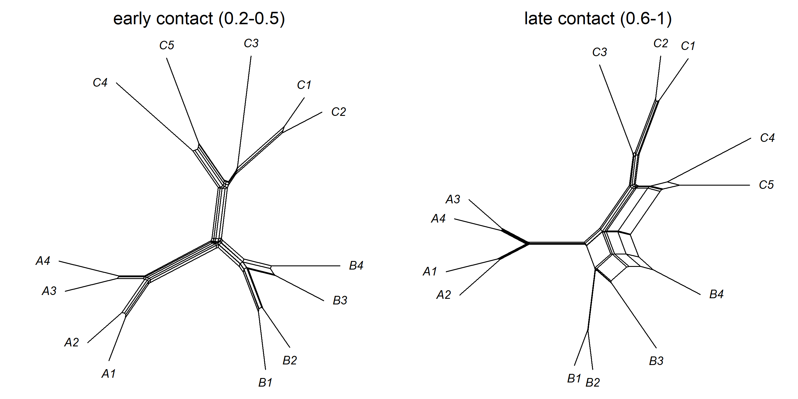
Figure I.9: NeighborNets of data simulated with borrowing from the C5 lineage into the B4 lineage in an early window (0.2 to 0.5, left) and a late window (0.6 to 1, right) of the same intensity.
The late episode is easy to detect. B4’s taxon-specific delta score (about 0.31) is far above that of any other language, C5 comes second (about 0.19), and the heaviest conflicting splits group B4 with C5, with C4 and C5, and with subgroup C. The early episode is practically invisible. All taxon-specific scores stay at about 0.08, the level seen without contact, and the heaviest conflicting splits weigh at most a third as much as in the late episode. Only the weakest hint, the split B1+B2+B3 that detaches B4 from its sister, involves B4 at all. The reason lies in the tree. Between 0.2 and 0.5 the lineage “leading to B4” is the stem of the whole A+B clade and then of subgroup B (subgroup B splits only at 0.55), and the donor lineage is the stem of subgroup C and then of C4+C5. The loans therefore go into proto-B and are inherited by all of B1–B4. That makes B as a whole somewhat closer to C, a clade-level and therefore nearly treelike signal of the “local” kind (Conceptual Exercise 3). In addition, the loans have been exposed to 0.5–0.8 time units of later replacement, so many have been lost again. A late episode, by contrast, distinguishes the recipient from its own sister B3 and creates a sharply incompatible split.
Note: “the same intensity” is read as the same borrowing rate (borrow = 1). Because the windows differ in length (0.3 against 0.4), the late episode transfers about a third more words. Raising the early rate to borrow = 4/3 to equalize the expected number of loans does not change the conclusion. In a check with five replicates the taxon-specific scores of the B and C languages rose slightly, to about 0.09–0.12, but B4 was not singled out: the early signal is absorbed by the tree, not merely weaker.
3. Four-taxon test for the quartet (((B3, B4), C5), A1): count classes in B4 and C5 but not B3, and in B3 and C5 but not B4, for B_contact and to_binary(M_tree); how to judge whether a difference exceeds chance?
Under a tree without contact B3 and B4 are exchangeable with respect to C5, so the two counts have the same expectation. This is the logic of the ABBA-BABA test (Green et al. 2010; Durand et al. 2011). We also report the counts restricted to classes absent from the outgroup A1, which removes shared retentions from the root.
set.seed(5)
M_contact <- sim_borrowing(family, innov = 0.5, borrow = 1, mode = "pair",
pair = c("B4", "C5"), window = c(0.6, 1))
set.seed(5)
M_tree <- sim_borrowing(family, innov = 0.5, borrow = 0)
B_contact <- to_binary(M_contact)
four_taxon <- function(B, p1 = "B3", p2 = "B4", p3 = "C5", out = "A1") {
x <- B[c(p1, p2, p3, out), , drop = FALSE] == 1
abba <- !x[p1, ] & x[p2, ] & x[p3, ] # B4 and C5, not B3
baba <- x[p1, ] & !x[p2, ] & x[p3, ] # B3 and C5, not B4
c(B4_C5 = sum(abba), B3_C5 = sum(baba),
D = (sum(abba) - sum(baba)) / (sum(abba) + sum(baba)),
B4_C5_noA1 = sum(abba & !x[out, ]), B3_C5_noA1 = sum(baba & !x[out, ]))
}
ft <- rbind(contact = four_taxon(B_contact),
no_contact = four_taxon(to_binary(M_tree)))
round(ft, 2)#> B4_C5 B3_C5 D B4_C5_noA1 B3_C5_noA1
#> contact 38 7 0.69 32 3
#> no_contact 5 8 -0.23 2 3# exact binomial test of equal counts
sapply(1:2, function(i) binom.test(ft[i, 1], ft[i, 1] + ft[i, 2])$p.value)#> [1] 3.121e-06 5.811e-01# null distribution of D from 60 data sets simulated without contact
set.seed(11)
null_D <- replicate(60, four_taxon(to_binary(
sim_borrowing(family, innov = 0.5)))["D"])
quantile(null_D, c(0.025, 0.975), na.rm = TRUE)#> 2.5% 97.5%
#> -0.3866 0.3943With contact, B4 shares 38 classes with C5 that B3 lacks, against 7 in the opposite direction (\(D \approx 0.69\)). Without contact the two counts are small and similar (5 against 8). Two ways of judging the difference are shown. The binomial test treats each discordant class as an independent fair coin under the null hypothesis. It is reasonable here because each meaning has one word per language, so a meaning contributes at most one discordant class, but on real data with synonyms the counts should be resampled by meaning (a block bootstrap or jackknife). The parametric null distribution of \(D\), obtained by simulating the same tree without contact, makes no independence assumption. Its central 95% interval, from 60 simulated data sets, is roughly \(\pm 0.4\), and the observed 0.69 lies well outside it. Restricting the counts to classes absent from A1 sharpens the contrast (32 against 3), because classes that A1 also has are mostly retentions from the root, not loans.
4. Change the toy innovations so that the chain becomes a family with two clean subgroups, and check that every cohesiveness equals one.
We keep the 37 innovations but reassign each conflicting set to the nearest group of a hierarchy with two subgroups, V1–V3 (containing V1+V2) and V4–V7 (containing V4+V5 and V6+V7).
glottometry <- function(innov) {
key <- sapply(innov, function(s) paste(sort(s), collapse = "+"))
groups <- unique(innov[!duplicated(key)])
res <- t(sapply(groups, function(G) {
eps <- sum(sapply(innov, function(S) setequal(S, G)))
sup <- sum(sapply(innov, function(S) all(G %in% S)))
con <- sum(sapply(innov, function(S)
any(S %in% G) && any(!S %in% G) && any(!G %in% S)))
c(exclusive = eps, supporting = sup, conflicting = con,
cohesiveness = sup / (sup + con), strength = eps * sup / (sup + con))
}))
out <- data.frame(subgroup = sapply(groups, paste, collapse = "+"), res)
out[order(-out$strength), ]
}
g123 <- c("V1", "V2", "V3"); g4567 <- c("V4", "V5", "V6", "V7")
innov_fam <- c(rep(list(c("V1", "V2")), 6), # unchanged
rep(list(g123), 3), # was V2+V3
rep(list(g123), 5), # unchanged
rep(list(g4567), 2), # was V3+V4
rep(list(c("V4", "V5")), 4), # unchanged
rep(list(g4567), 3), # was V4+V5+V6
rep(list(c("V4", "V5")), 2), # was V5+V6
rep(list(c("V6", "V7")), 5), # unchanged
rep(list(c("V6", "V7")), 2), # was V5+V6+V7
rep(list(g4567), 2), # was V3+V4+V5
list(g123), # was V1+V2+V3+V4
rep(list(g4567), 2)) # unchanged
length(innov_fam)#> [1] 37#> subgroup exclusive supporting conflicting cohesiveness strength
#> 2 V1+V2+V3 9 9 0 1 9
#> 3 V4+V5+V6+V7 9 9 0 1 9
#> 5 V6+V7 7 16 0 1 7
#> 1 V1+V2 6 15 0 1 6
#> 4 V4+V5 6 15 0 1 6#> [1] TRUEEvery subgroup now has cohesiveness one, because every pair of innovation sets is either nested or disjoint, so no innovation is shared by part of a group together with outsiders. Subgroup strength then reduces to the number of exclusive innovations. This is the special case in which glottometry describes a tree (Section 8.7), and a NeighborNet of these innovations would collapse to that tree. Innovations shared by a proper subset of a group, such as V1+V2 inside V1+V2+V3, count neither for nor against it.
Research
1. About 25 closely related languages along a river valley with gradual dialect transitions: which historical question can be asked, and how would you first test whether the genealogical reading is defensible?
A strong answer starts from Table 8.1. “The age of the group” presupposes the first question, reconstructing divergence, and gradual transitions are a warning that the second and third questions (describing similarity, identifying innovations) may be the only ones the data can answer. The design should make the choice an empirical result rather than an assumption.
- Data. Basic vocabulary with loans flagged and with source and compiler recorded, plus a separate set of phonological and morphological innovations established by the comparative method, and the coordinates of each variety.
- Describe. Compute overall and taxon-specific delta scores and Q-residuals, draw a NeighborNet (Bryant and Moulton 2004; Gray et al. 2010), and relate linguistic to geographic distance as in dialectometry (Nerbonne 2009; Wieling and Nerbonne 2015). If linguistic distance is predicted by river distance better than by any tree, diffusion is the better null model (Section 8.8).
- Test the genealogical reading. (a) Run posterior predictive checks of a fitted tree model, with the delta score, the Q-residual and the correlation of linguistic with geographic distance as test statistics (Sections 6.9 and 7.10). (b) Fit a spatial diffusion simulator to the same statistics and see which model reproduces the data. (c) Compute glottometric cohesiveness of the candidate subgroups from the innovations (François 2015; Kalyan and François 2018); low cohesiveness throughout indicates a linkage (Ross 1997). (d) Compare networks built from stable and from borrowable meanings (McMahon and McMahon 2005). (e) Check whether different meanings support different topologies (Verkerk 2019).
- Then decide. If the tree passes, date it with calibrations and a lateral-transfer or contact model (Kelly and Nicholls 2017; Neureiter et al. 2022), and report sensitivity to removing the most reticulate varieties and the most borrowable meanings. Because local borrowing compresses trees invisibly (Section 8.3), a simulation tailored to the valley’s geography should bound the likely date bias. If the tree fails, do not date internal nodes. The only datable event may be the initial settlement of the valley by a single speech community, whose age must come from external evidence. Describe the internal structure with glottometry or a Dialect Chain Tree (Elgh and Hammarström 2024).
2. Design a simulation study of how well the lateral-transfer stochastic Dollo model separates local borrowing from short branches in a family of 30 languages.
The key confound is that both local borrowing and genuinely short internal branches make close relatives similar without creating conflict (Section 8.3). A strong design therefore pairs scenarios that are observationally close.
- Scenarios. (S1) A tree of 30 languages, stochastic Dollo, no borrowing. (S2) The same topology with internal branches shortened by the factor that local borrowing would produce, no borrowing. (S3) The S1 tree with local transfer at three rates, using a distance-decay kernel as in
sim_borrowing(). (S4) Global transfer at the same rates. (S5) Processes outside the model: borrowing that replaces a word rather than adding one, catastrophes, among-meaning rate variation, and missing data. - Analyses. Fit the lateral-transfer model (Kelly and Nicholls 2017) and the plain stochastic Dollo model to every replicate, with the tree and dates either fixed or estimated. Use about 50–100 replicates per cell; the \(2^L\) state space (Section C.2.4) may force smaller subclades or simulation-based inference (Section 16.6.3) for the full 30 languages.
- Quantities. Record the posterior of the transfer rate \(\beta\) (bias, interval width, coverage, and posterior against prior), the Bayes factor for \(\beta > 0\), root and internal node ages, internal branch lengths, the death rate \(\mu\), Robinson-Foulds distance to the true tree, and the posterior correlation between \(\beta\) and tree height, which measures the identifiability trade-off. The headline result is the discrimination between S2 and S3 (for example, a ROC curve for the Bayes factor).
- Validation categories (Section 6.10). Simulation-based calibration with parameters drawn from the prior is implementation validation. S1, S3 and S4 analyzed under the true model are parameter recovery, and they show whether \(\beta\) is practically estimable from 30 languages. S2 analyzed with the transfer model asks whether the model invents borrowing, and S5 asks how far the model degrades under processes it ignores; both are robustness under misspecification. No part of the study establishes empirical adequacy for a real family, which requires posterior predictive checks on the real data.
3. A suspected mixed language: compare a tree, a NeighborNet and an explicit network with inheritance proportion \(\gamma\), and argue which to report.
- Tree. A tree must give the language one parent. It will attach the language to whichever source dominates the meaning list, perhaps with high posterior support, and the support is conditional on the false assumption of a single parent. Its branch length and the ages around it are distorted, and the placement can flip with the list used (Bakker 1997; Thomason and Kaufman 1988).
- NeighborNet. A NeighborNet shows the language pulled between the two families, as a box or a long edge. It displays the conflict honestly, but it gives no proportion, no direction and no date. Between two unrelated families the distances are near saturation, so the network may even hide the mixture (Section 8.5).
- Explicit network. A reticulation node with inheritance proportion \(\gamma\) states what linguists actually claim: a fraction \(\gamma\) of the vocabulary comes from one parent and \(1 - \gamma\) from the other, at an estimable time. Network-coalescent methods (Solı́s-Lemus and Ané 2016; Wen et al. 2018; Chi Zhang et al. 2018) are the models to adapt (Section 8.11). Two caveats matter. First, mixed languages are usually split by component (for example nouns against verbs, or lexicon against grammar; Matras and Bakker (2003)) rather than by a random fraction of words, so \(\gamma\) should be estimated per component or replaced by component-specific placements. Second, the method’s analogies to lexical data are imperfect and untested.
- Recommendation. Report the explicit, or component-partitioned, analysis as the account of the language’s history; show the NeighborNet as a description of the conflict; and exclude the language from dated tree analyses of either family with an explicit justification (Section 8.9). A single tree placement should not be reported as a finding.
I.9 Chapter 9: Clock Models and Rates of Language Change
These solutions refer to Chapter 9 and to the technical notes in Section C.3.
Conceptual
1. Why does scaling all rates by two and all ages by one half leave the likelihood unchanged, and what breaks the symmetry?
Every transition probability depends on rate and time only through the branch length \(b = rt\) (Equation (9.1)). Doubling every \(r_j\) and halving every \(t_j\) leaves every \(b_j\), hence every \(\mathbf{P}(b_j)\) and the whole pruning likelihood, unchanged; the same holds for any common factor \(c\). Under a relaxed clock the branch-rate prior (UCLN, autocorrelated) fixes how rates vary relative to their mean, so it does not break this global symmetry either: it only constrains relative ages (Section 9.1.1). What does break it is everything in the model that is stated on an absolute time scale:
- Node calibrations (attestations, archaeology, history). Their location carries historical evidence; their shape (uniform, lognormal, soft bounds) and the hardness of their bounds are modeling assumptions (Section 10.3.1).
- Dated tips (ancient languages sampled at known times). The tip ages are evidence; treating the language as a tip rather than an ancestor is an assumption (Section 10.5).
- The prior on the root age, including the bounds of a “vague” uniform prior. Unless it is based on independent evidence it is an assumption, and Exercise 6 of Chapter 10 shows that it can matter.
- The tree prior (Yule or birth-death with priors on its rates). It contributes an absolute time scale only through the prior on the birth rate, which is an assumption.
- The prior on the mean clock rate. An informative rate prior imported from other families is glottochronology’s universal constant in Bayesian dress: formally evidence, in practice an assumption about transferability (Section 9.7.1).
Whatever breaks the symmetry, the resulting interaction of priors should be inspected by sampling without data (Section 10.3.2).
2. Sixty percent shared cognates on a 100-item list: why might a glottochronological and a relaxed-clock date differ even with the same mean rate?
The glottochronological date is \(t = \ln 0.6 / (2 \ln 0.86) \approx 1.69\) millennia (Equation (9.4)). A Bayesian relaxed-clock analysis that uses the same mean rate still makes different assumptions:
- Rate variation among meanings. Glottochronology gives every meaning the same rate. The Bayesian model usually includes gamma rates, which make shared cognates decay more slowly (Section 9.2.5). Inverting Equation (C.8) for \(\hat t = 1.69\) gives true depths of about 2.9, 2.2 and 1.9 millennia for \(\alpha = 0.5\), 1 and 2.
- Rate variation among lineages. The relaxed clock lets the two lineages have their own rates, estimated from the rest of the tree and from the calibrations. Glottochronology imposes the universal rate on this particular pair.
- Data and model. Glottochronology uses one pairwise statistic. The Bayesian analysis models binary gains and losses of cognate classes on a whole tree, with an ascertainment correction, and uses all other languages to inform the branch lengths of the pair.
- Calibration and priors. Internal calibrations and the tree prior pull node ages, and uncertainty is propagated rather than ignored.
At this shallow depth (\(C = 0.6\)) saturation is mild, so the gamma correction changes the date by roughly 10 to 70 percent depending on \(\alpha\). Lineage-specific rates are likely to matter more for any single pair: the Icelandic case (Section 9.2.4) shows that one lineage’s rate can depart from the average by more than this. Differences in coding (what counts as a shared cognate, and the treatment of synonyms and loans) can also add a few percentage points to \(C\), which shifts the date by a century or two.
3. A posterior mean CV of branch rates of 0.8: three processes other than real tempo differences, and checks for each.
A branch rate is whatever the model needs to reconcile a branch length with a duration, so it absorbs every unmodeled process that stretches or shrinks branches (Sections 9.1.1 and 9.6).
- Undetected borrowing. Borrowing shortens branches between donor and recipient and lengthens others (Section 8.3). Check: rerun with suspected loans removed, or on the most borrowing-resistant meanings, and see whether the fast and slow branches and the CV change; check whether fast branches lie where contact is documented or where delta scores are high.
- Missing data and uneven documentation. Poorly recorded languages have many “?” entries and may get shorter or more uncertain branches. Check: plot each terminal branch’s rate against the completeness of the language’s list, and rerun on a matrix restricted to well-attested meanings, or with incomplete languages removed.
- Inconsistent coding across sources. Different compilers split or lump cognate sets differently, which inflates or deflates the changes on particular lineages. Check: see whether fast lineages cluster by data source, and recode a sample of meanings blind to source.
- Misspecified calibrations or tree prior. A wrong calibration can only be reconciled with the data by stretching or compressing rates in its part of the tree. Check: leave-one-out calibration cross-validation (Section 10.8) and comparison of the posterior of \(\sigma\) with its prior from a run without data. A CV close to its prior value says that the data do not inform it.
- Misspecified substitution model. Inadequate among-character rate variation or the wrong ascertainment correction distorts long branches more than short ones (Section 7.4). Check: refit with gamma or covarion rates and the correct correction, and run posterior predictive checks of branch lengths (D. A. Duchêne et al. 2015).
4. UCLN, autocorrelated and random local clocks as hypotheses for fast Polynesian and slow Formosan languages.
- Uncorrelated lognormal (Drummond et al. 2006). Each branch draws its rate independently, so the model offers no historical mechanism. It predicts that fast and slow branches are scattered over the tree with no tendency for sister or parent and child branches to be alike. Polynesian branches can be fast only if each is fast on its own, and the posterior covariance between parent and child rates should span zero. As a hypothesis it says, in effect, that rate differences are idiosyncratic to lineages.
- Autocorrelated (geometric Brownian motion) (Thorne et al. 1998; Kishino et al. 2001). Rates drift gradually along lineages. The model predicts a gradient: rates rising step by step along the path from the Formosan root through Malayo-Polynesian and Oceanic to Polynesian, similar rates among close relatives, and divergence of rates increasing with the time separating lineages. This corresponds to a heritable, slowly changing cause such as a progressive change in community size or social structure during the expansion.
- Random local clock (Drummond and Suchard 2010). Rates are constant within regions of the tree and change at a few discrete shifts. The model predicts one (or a few) shifts, for example on the stem of Oceanic or Polynesian, after which the whole clade shares an elevated rate. This fits an event-based cause such as founder effects at the settlement of Remote Oceania, which resonates with the pulses and pauses of Gray et al. (2009) (Section 9.11).
The three can be compared by marginal likelihoods, and the random local clock’s posterior on shift locations shows directly whether a shift sits where the event-based hypothesis puts it.
5. Why is a binary clock rate not comparable with Pagel et al.’s per-meaning replacement rates, and how would one convert?
Pagel et al. (2007) estimated a rate of replacement per meaning, treating each meaning as a multistate character whose states are cognate classes. A binary clock rate is the expected number of gains and losses per cognate-class column per unit time. It is averaged over all columns, including the many singletons, and it is scaled by the conventions of the binary chain (one expected change per column per unit branch length; Section 7.3.1) and by the ascertainment correction (Sections 7.8 and 9.6). A single replacement appears as one loss in one column and one gain in another.
A rough conversion: if \(N_b\) binary columns evolve at mean rate \(r_b\), the expected number of binary events per unit time on a lineage is \(N_b r_b\). With \(M\) meanings and no synonymy each replacement contributes two events, so the mean replacement rate per meaning is \(\bar k \approx N_b r_b / (2M)\). Making this exact requires:
- the number of columns and of meanings;
- how synonyms and missing entries were coded;
- the ascertainment correction used and the stationary frequency \(\pi_1\), because gains in a reversible binary model also occur in columns whose class does not yet exist;
- the gamma or partition structure, which redistributes the rate among columns;
- the time units of both analyses.
Per-meaning rates are needed to compare individual meanings. The multistate rate itself depends on the \(K\)-state Mk scaling (Section C.1.8), so the two estimates are best compared by simulating data under one model and fitting the other.
6. Why is a positive slope of path length on node count not by itself evidence for punctuational change?
The main artifact is the node-density artifact (Venditti et al. 2006). Branch lengths are estimated, and multiple changes on long branches go undetected (saturation). Lineages with few nodes on their root-to-tip path are made up of long branches, so their path lengths are underestimated more. This produces a positive slope with no bursts at all (Exercise 4 below demonstrates it). Remedies:
- Venditti’s test of the curvilinear shape that the artifact produces, as applied by Atkinson et al. (2008) (Section 9.8.2);
- substitution models that correct adequately for multiple hits;
- a misspecification simulation: data generated without bursts but with the same sampling, saturation and inference pipeline, analyzed exactly as the real data, to give the null distribution of the slope.
A second, statistical problem is that tips share ancestry. Ordinary least squares overstates significance, so the regression should be done by phylogenetic GLS (Section C.3.5).
Computational
1. Point dates and 95 percent intervals for 30 shared cognates of 200 (retention 0.805) and 15 of 100 (retention 0.86).
glotto_t <- function(C, rho) log(C) / (2 * log(rho)) # Equation (glotto)
glotto_ci <- function(x, N, rho) {
ci <- binom.test(x, N)$conf.int
round(1000 * c(point = glotto_t(x / N, rho),
lower = glotto_t(ci[2], rho),
upper = glotto_t(ci[1], rho)))
}
d <- rbind(lees_200 = glotto_ci(30, 200, 0.805),
swadesh_100 = glotto_ci(15, 100, 0.86))
cbind(d, width = d[, "upper"] - d[, "lower"],
rel_width = round((d[, "upper"] - d[, "lower"]) / d[, "point"], 2))#> point lower upper width rel_width
#> lees_200 4373 3629 5227 1598 0.37
#> swadesh_100 6289 4797 8116 3319 0.53Both observations are 15 percent shared cognates, but the two lists give very different dates: about 4,400 years on Lees’ list and 6,300 on Swadesh’s, because they assume different rates. The 200-item list gives the more precise date, both absolutely (an interval about 1,600 years wide against about 3,300) and relative to the point estimate (37 against 53 percent). Two things contribute. The binomial interval for the shared proportion narrows as \(\sqrt{N}\) grows, so doubling the list shrinks it by about 30 percent. Because the observed proportion is the same, the relative width of the date interval depends only on this effect. The absolute width is narrowed further by the faster rate of Lees’ list: \(|\ln 0.805| > |\ln 0.86|\), so a given error in the proportion corresponds to less time. Both intervals assume that the retention rate is known exactly and the same in all lineages, which is the assumption that failed (Section 9.2.4).
2. Rerun the gamma-bias simulation with \(\alpha = 0.5\) and 5 and with a 40-item list. How do bias and scatter change at 6 millennia?
We use the simulator of Section C.3.1, with the list length as an argument, and run 2,000 replicate pairs at a true depth of 6 millennia for each combination.
kbar <- -log(0.86) # mean replacement rate
sim_pair <- function(t, alpha, n_mean) {
k <- rgamma(n_mean, shape = alpha, rate = alpha / kbar)
keepA <- runif(n_mean) < exp(-k * t)
keepB <- runif(n_mean) < exp(-k * t)
mean(keepA & keepB) # proportion of shared cognates
}
expected_hat <- function(t, alpha) { # Equation (clocks-gamma-bias)
alpha / (2 * kbar) * log(1 + 2 * kbar * t / alpha)
}
set.seed(12)
sc <- expand.grid(alpha = c(0.5, 1, 5), n_mean = c(200, 40))
res <- t(apply(sc, 1, function(s) {
C <- replicate(2000, sim_pair(6, s[["alpha"]], s[["n_mean"]]))
t_hat <- -log(pmax(C, 1 / s[["n_mean"]])) / (2 * kbar)
c(s, formula = expected_hat(6, s[["alpha"]]), mean = mean(t_hat),
bias = mean(t_hat) - 6, sd = sd(t_hat))
}))
round(res, 2)#> alpha n_mean formula mean bias sd
#> [1,] 0.5 200 2.54 2.53 -3.47 0.26
#> [2,] 1.0 200 3.43 3.44 -2.56 0.31
#> [3,] 5.0 200 5.12 5.14 -0.86 0.44
#> [4,] 0.5 40 2.54 2.58 -3.42 0.59
#> [5,] 1.0 40 3.43 3.51 -2.49 0.76
#> [6,] 5.0 40 5.12 5.30 -0.70 1.14The bias depends on \(\alpha\) and hardly at all on the length of the list. At a true depth of 6 millennia the classical formula gives about 2.5 millennia for \(\alpha = 0.5\), 3.4 for \(\alpha = 1\) and 5.1 for \(\alpha = 5\). The bias shrinks as the rates become more homogeneous, and it vanishes only as \(\alpha \to \infty\). The scatter behaves the other way. Its standard deviation is about 0.3 to 0.4 millennia with 200 meanings and roughly twice that with 40, as expected from binomial error (\(\propto 1/\sqrt{n}\)). It also grows with \(\alpha\), because a larger \(\alpha\) leaves fewer shared cognates at 6 millennia, and the logarithm magnifies errors in small proportions.
The difference between the formula curve and the truth is the misspecification error: a systematic bias that a longer list cannot remove. The spread of the estimates around their mean is sampling error, which a longer list does reduce. The small gap between the replicate mean and the formula (up to about 0.2 millennia, largest for 40 items; negligible with 200 meanings and \(\alpha = 0.5\)) is also a sampling effect. Since \(-\ln C\) is convex, Jensen’s inequality makes the average estimate slightly higher than the estimate from the expected proportion, so with a short list the downward bias is slightly smaller than Equation (C.8) predicts.
Note: Section C.3.1 says that, “because the logarithm is concave”, the average estimate is slightly lower than Equation (C.8). Both the simulation and Jensen’s inequality show the opposite: the average estimate is slightly higher.
3. Raise sigma to 1 and the number of languages to 40, and recompute Table 9.4 for \(\lambda\) = 0.1, 1 and 10; check \(\Phi\)IC.
The code of Section C.3.3 is wrapped in a function of the number of languages and of \(\sigma\), keeping the seed and the order of random draws (with ntip = 16 and sigma = 0.6 it reproduces the chapter’s phylograms). The 36 chronos() fits on 40 tips take a few minutes, so they are shown with the results of our run, and only the simulation is evaluated here.
sim_clocks <- function(ntip = 16, sigma = 0.6, nu = 0.15, seed = 9) {
set.seed(seed)
time_tree <- rcoal(ntip, tip.label = paste0("L", 1:ntip))
time_tree$edge.length <- time_tree$edge.length * 6 /
max(node.depth.edgelength(time_tree)) # root age = 6 millennia
nb <- nrow(time_tree$edge)
r_strict <- rep(1, nb)
r_ucln <- rlnorm(nb, meanlog = -sigma^2 / 2, sdlog = sigma)
logr_node <- numeric(ntip + time_tree$Nnode)
r_auto <- numeric(nb)
for (i in order(node.depth.edgelength(time_tree)[time_tree$edge[, 2]])) {
pa <- time_tree$edge[i, 1]; ch <- time_tree$edge[i, 2]
dt <- time_tree$edge.length[i]
logr_node[ch] <- rnorm(1, logr_node[pa] - nu * dt / 2, sqrt(nu * dt))
r_auto[i] <- exp((logr_node[pa] + logr_node[ch]) / 2)
}
make_phylogram <- function(rates) {
ph <- time_tree
ph$edge.length <- rpois(nb, 80 * rates * time_tree$edge.length) + 0.5
ph
}
rates <- list(strict = r_strict, uncorrelated = r_ucln,
autocorrelated = r_auto)
list(time_tree = time_tree, phylograms = lapply(rates, make_phylogram),
cv = sapply(rates, function(r) round(sd(r) / mean(r), 2)))
}
s40 <- sim_clocks(ntip = 40, sigma = 1)
s40$cv#> strict uncorrelated autocorrelated
#> 0.00 1.18 0.38With \(\sigma = 1\) the coefficient of variation of the simulated uncorrelated rates is about 1.2, twice that of the chapter’s example.
true_ages <- branching.times(s40$time_tree)
models <- c("clock", "correlated", "discrete", "relaxed")
fit_one <- function(ph, model, lambda) {
cal <- makeChronosCalib(ph, node = "root", age.min = 6, age.max = 6)
ctrl <- chronos.control(nb.rate.cat = 3)
suppressWarnings(chronos(ph, lambda = lambda, model = model,
calibration = cal, quiet = TRUE, control = ctrl))
}
for (lam in c(0.1, 1, 10)) {
fits <- lapply(s40$phylograms, function(ph)
setNames(lapply(models, fit_one, ph = ph, lambda = lam), models))
rmse <- sapply(fits, function(f) sapply(f, function(ch)
sqrt(mean((branching.times(ch) - true_ages)^2))))
phiic <- sapply(fits, function(f)
sapply(f, function(ch) attr(ch, "PHIIC")$PHIIC))
print(round(rmse, 2)); print(round(phiic, 1))
}Results of our run (RMSE of node ages in millennia, root fixed at 6; \(\Phi\)IC in brackets):
| \(\lambda\) | model | strict | uncorrelated | autocorrelated |
|---|---|---|---|---|
| 0.1 | clock | 0.06 (465) | 0.41 (1338) | 0.22 (742) |
| 0.1 | correlated | 0.06 (616) | 0.49 (1217) | 0.31 (1155) |
| 0.1 | discrete | 0.06 (473) | 1.07 (596) | 1.46 (752) |
| 0.1 | relaxed | 0.93 (574) | 0.87 (547) | 0.79 (618) |
| 1 | correlated | 0.06 (618) | 0.42 (1463) | 0.41 (1485) |
| 1 | relaxed | 0.84 (574) | 0.88 (548) | 0.72 (619) |
| 10 | correlated | 0.06 (619) | 0.41 (1489) | 0.22 (897) |
| 10 | relaxed | 0.86 (578) | 0.81 (557) | 0.70 (625) |
The clock and discrete models have no smoothing penalty, so their fits do not depend on \(\lambda\) and are listed once. The ranking of the four models hardly depends on \(\lambda\):
- the strict-clock model and the correlated model are best in every scenario;
- the gamma-penalized
"relaxed"model and the discrete model are much worse once rates vary; - the discrete model is worst under rate variation, and the relaxed model is worst on clocklike data.
Only the correlated model moves with \(\lambda\). At \(\lambda = 10\) it is effectively the strict clock, and at \(\lambda = 1\) it is worse than at 0.1 or 10 under autocorrelated rates, so its error does not change monotonically with \(\lambda\). Raising \(\sigma\) to 1 roughly doubles the uncorrelated-scenario error compared with the chapter’s 16-language example, and adding languages does not help: individual branch rates remain unidentifiable from a single calibration.
\(\Phi\)IC is a poor guide here. Within the correlated model it always prefers the smallest \(\lambda\) (0.1), whereas the node ages are most accurate at \(\lambda = 10\). Across models it prefers the "relaxed" model for both rate-variable scenarios, which has roughly twice the error of the strict-clock model. Only for the clocklike data does it pick the right model. This is the same lesson as Table C.4: an information criterion measures fit to branch lengths, not accuracy of dates.
4. Simulate the node-density artifact with saturated branch lengths \(K(1 - e^{-x/K})\), \(K = 30\), over 200 replicates.
We recreate the 60-language Yule tree of Section C.3.5 and modify path_lengths() (with burst = 0) so that each branch’s count is saturated before path lengths are computed.
library(nlme)
set.seed(21)
yule_tree <- phytools::pbtree(n = 60, scale = 5) # root age 5 millennia
ne <- nrow(yule_tree$edge)
nodes_on_path <- sapply(1:60, function(i)
length(nodepath(yule_tree, from = 61, to = i)) - 1)
path_sat <- function(K = Inf) {
# gradual change only (40 per millennium); optional saturation
ph <- yule_tree
x <- rpois(ne, 40 * yule_tree$edge.length)
ph$edge.length <- if (is.finite(K)) K * (1 - exp(-x / K)) else x
node.depth.edgelength(ph)[1:60]
}
set.seed(41)
slopes <- sapply(c(true_lengths = Inf, saturated_K30 = 30), function(K)
replicate(200, coef(lm(path_sat(K) ~ nodes_on_path))[2]))
round(rbind(mean_slope = colMeans(slopes), sd_slope = apply(slopes, 2, sd),
prop_positive = colMeans(slopes > 0)), 2)#> true_lengths saturated_K30
#> mean_slope -0.10 7.92
#> sd_slope 1.73 0.65
#> prop_positive 0.48 1.00# phylogenetic GLS on 20 saturated replicates
dat <- data.frame(sp = yule_tree$tip.label, nodes = nodes_on_path)
bm <- corBrownian(1, yule_tree, form = ~ sp)
pg <- replicate(20, {
dat$pl <- path_sat(30)
summary(gls(pl ~ nodes, data = dat, correlation = bm))$tTable[
"nodes", c("Value", "p-value")]
})
c(mean_PGLS_slope = mean(pg[1, ]), prop_significant = mean(pg[2, ] < 0.05))#> mean_PGLS_slope prop_significant
#> 6.468 1.000A strong spurious slope appears: with true branch lengths the mean slope is close to zero, but with saturated branches it is about 8 changes per node, positive in every replicate. That is as large as the genuine burst of 8 changes per split in the chapter’s example. Phylogenetic GLS, which corrects the non-independence of tips, does not remove it either: the slope is significant in essentially every replicate, because the bias is systematic, not a matter of pseudo-replication. Saturation here underestimates branches longer than a few tens of changes, which make up a large share of the paths with few nodes (the median branch carries about 33 changes). This is a test of robustness under misspecification (Section 6.10): data generated without bursts but with the estimation error that real analyses suffer, analyzed as if branch lengths were exact. It shows that the test as implemented has no protection against the node-density artifact.
5. Date the autocorrelated phylogram with the root calibrated to 5 to 7 millennia, under the clock and correlated models.
The chunk uses the 16-language phylograms of Section 9.5.6, recreated with sim_clocks() from Exercise 3 (default arguments reproduce the chapter’s simulation).
sim16 <- sim_clocks(ntip = 16, sigma = 0.6)
ph <- sim16$phylograms$autocorrelated
true_ages <- branching.times(sim16$time_tree)
windows <- list(fixed_6 = c(6, 6), window_5_7 = c(5, 7))
res5 <- do.call(rbind, lapply(c("clock", "correlated"), function(m)
do.call(rbind, lapply(names(windows), function(w) {
cal <- makeChronosCalib(ph, node = "root", age.min = windows[[w]][1],
age.max = windows[[w]][2])
ch <- suppressWarnings(chronos(ph, lambda = 1, model = m,
calibration = cal, quiet = TRUE))
data.frame(model = m, root_calibration = w,
root = unname(branching.times(ch)[1]),
rmse = sqrt(mean((branching.times(ch) - true_ages)^2)),
ploglik = attr(ch, "ploglik"))
}))))
res5#> model root_calibration root rmse ploglik
#> 1 clock fixed_6 6 0.2831 -169.9
#> 2 clock window_5_7 5 0.3207 -169.9
#> 3 correlated fixed_6 6 0.2914 -159.9
#> 4 correlated window_5_7 7 0.5608 -157.3The table gives, for each model and calibration, the estimated root age, the RMSE of all node ages and the penalized log-likelihood. With the window, neither model estimates the root age: each runs to a boundary of the calibration. Under the strict clock the root sits at 5.0. Under a clock the likelihood depends only on the products \(r t_j\) (Section 9.1), so it is exactly flat across the window (note the identical log-likelihoods), and the optimizer stops wherever it happens to be. Under the correlated model it goes to the opposite bound, 7.0. Its penalty is on absolute differences between rates, so an older root, which lowers all rates, also lowers the penalty and is favored for that reason alone. All node ages scale with the root, and the RMSE gets worse in both cases.
The lesson is that, with a single calibration, the absolute ages come entirely from the calibration and from incidental features of the method (the optimizer’s starting point, the scale-dependence of the penalty). The data identify only relative ages. Calibration windows must therefore be informative and their densities chosen with care (Section 10.3.1). Absent other calibrations, a reported root age within a window says more about the window and the method than about the data.
Research
1. Choose and check a clock model for a 60-language family with two medieval attestations and one dated island settlement.
A strong answer would include:
- Model choice. Start from an uncorrelated lognormal clock (Drummond et al. 2006): with 60 languages there are enough branches to estimate its spread, and it makes the weakest assumptions about where rates differ. Compare it by stepping-stone marginal likelihoods (Section 9.5.7) with a strict clock and, if there is a historical hypothesis (contact, island founder effects), with a random local clock (Drummond and Suchard 2010). Include gamma rate variation among meanings, and use efficient operators (Section 9.5.4).
- Calibrations. Use the two medieval attestations as dated tips or as hard minimum ages for the clades they belong to, depending on whether the texts could be ancestral (Section 10.5). Treat the island settlement as a soft maximum for the crown age of the island clade, since languages cannot diverge on the island before it is settled; the stem may be older.
- Runs without data. Sample the effective prior and compare it with the specified calibration densities and with the posterior, especially for the root, which has no calibration (Section 10.3.2). Repeat with two different root priors.
- Parameter recovery. Simulate data of the same size and pattern of missingness on trees and rates drawn from the prior, including \(\sigma\) and the calibrated nodes, and check coverage of the root age and of \(\sigma\) (Section 6.10).
- Misspecification. Simulate under autocorrelated rates, a single rate shift, local borrowing, punctuational bursts, and a misattributed calibration, and record the bias in the root age.
- Reasons to abandon the chosen clock:
- the posterior root age is essentially its effective prior;
- leave-one-out cross-validation shows the calibrations to be mutually inconsistent (Section 10.8);
- posterior predictive checks of branch lengths fail (D. A. Duchêne et al. 2015);
- the parameter-recovery study shows poor coverage with this amount of calibration;
- another clock is strongly preferred and gives materially different dates.
2. Design a test of whether intense contact raises rates of lexical replacement.
A strong answer would include:
- Predictor. Define contact at the level of branches, for example the proportion of a branch’s duration spent in a documented contact situation (bilingualism, a dominant neighbor, shift), coded from historical, ethnographic and archaeological sources that are independent of the lexical data and coded before the rates are seen.
- Joint model rather than two steps. A covariate clock, \(\ln r_j = \beta_0 + \beta x_j + \varepsilon_j\), estimated jointly with the tree and ages, carries the uncertainty of branch rates into \(\beta\). A two-step regression of estimated branch rates treats poorly estimated quantities as data, ignores their correlations, and must at least be repeated over the posterior sample (Section 9.11). Joint rate-trait models (Lartillot and Poujol 2011) and the comparative designs reviewed by Lanfear et al. (2010) are the biological templates. A sister-pair design (Bromham et al. 2015) avoids the clock altogether.
- The loan confound. Contact predicts undetected loans, and loans change branch lengths, so a positive \(\beta\) can arise without any change in the tempo of internal replacement. Safeguards:
- careful loan flagging, followed by a reanalysis without the flagged items;
- restricting the analysis to borrowing-resistant meanings and checking that \(\beta\) persists;
- separate rates for gains and losses, and for replacements by native material versus loans;
- explicit models of lateral transfer (Kelly and Nicholls 2017);
- a misspecification simulation: generate data with contact-dependent borrowing but no contact effect on rates, apply the full pipeline, and estimate the false-positive rate for \(\beta\).
3. Propose a test of time-dependent rates of lexical change using calibrations of different ages.
A strong answer would include:
- Design. In Indo-European, contrast shallow calibrations (the Romance split from Latin, the North Germanic split, Icelandic settlement) with deep ones (Hittite, Mycenaean Greek, Vedic) (Bouckaert et al. 2012; Chang et al. 2015). In Austronesian, contrast recent Polynesian settlement dates with older archaeological ones (Gray et al. 2009). Estimate the mean rate from each calibration (or subset) separately with the same data and model, plot rate against calibration age, and fit an explicit model of rate declining with age, as in molecular studies of time dependence (Ho et al. 2005; Ho and Duchêne 2014) (Section 9.5.7).
- Supporting pattern. Rates calibrated on shallow splits are systematically higher than those calibrated on deep splits. Shallow calibrations used alone predict deep calibrated nodes to be too young, while deep calibrations predict shallow nodes to be too old.
- Alternative explanations producing the same pattern:
- saturation and inadequate among-character rate variation, which underestimate long distances, exactly the glottochronological bias of Section 9.2.5;
- lineage effects, if the shallow calibrations come from fast lineages such as Romance;
- errors in the deep calibrations, especially minima treated as point dates;
- incomplete ancient word lists, which shorten branches;
- recent loans and transient synonyms in modern languages, which inflate shallow divergence (the linguistic analogue of transient polymorphisms).
- Distinguishing them:
- refit with richer rate models (gamma, covarion) and check their adequacy;
- simulate under a constant-rate model with the same calibration ages, sampling and analysis, to see whether the pattern arises without time dependence;
- compare shallow and deep calibrations within the same lineage;
- restrict the analysis to slow meanings, where saturation is negligible;
- use cross-validation of calibrations (Section 10.8).
I.10 Chapter 10: Calibration and Divergence Times: Family by Family
These solutions refer to Chapter 10 and to the technical notes in Section C.4.
Conceptual
1. Why can doubling the number of cognate sets leave the root-age interval almost unchanged, and what new evidence would narrow it?
Under a strict clock, infinitely many characters would fix every branch length, and hence every node height \(h_i\) in expected changes, exactly. The node ages would then be \(t_i = c_i T\) with known constants \(c_i = h_i / h_{\text{root}}\), and all remaining uncertainty would be uncertainty about the single time scale \(T\), which only the calibrations inform (Sections 10.1 and C.4.1). The posterior interval of a node has two components: sampling error in the branch lengths, which shrinks as characters are added, and calibration uncertainty, which does not. If an analysis is already close to the infinite-sites line (interval width proportional to mean age), doubling the cognate sets removes only the small first component. Under a relaxed clock the floor is higher still, because each branch has its own rate and more characters on the same branches cannot separate rate from time on each of them. In linguistic data the gain from more characters is also smaller than it looks: extra cognate sets from the same meanings are not independent (the composite likelihood of Section 7.2.1), and they are subject to the same borrowing and coding problems.
What narrows the interval is new information about time: more calibrations, and better-justified ones, especially near the root or spread across the tree; tighter but defensible minimum and maximum bounds; ancient languages entered as dated tips with their own data (Section 10.5.1); and, for relaxed clocks, more languages, since each new lineage adds branches that inform the distribution of rates. An infinite-sites plot (Yang and Rannala 2006; Rannala and Yang 2007; Reis et al. 2016) shows which situation an analysis is in.
2. Why is a normal calibration centered on 3,200 BP wrong for the clade containing a language first attested in 1200 BCE, and what density should replace it?
A text shows that X already existed, as a language distinct from its relatives, by 1200 BCE, so the clade containing X must be at least about 3,200 years old. A normal density centered on that date puts half its mass on ages younger than the attestation, which are impossible, and its symmetric shape claims that the split is equally likely to be a few centuries younger or older than the text, whereas the evidence is one-sided. Using the date of attestation as the date of the split is the pitfall “attestation is not origin” (Section 10.7), and it biases the node and, through the clock, the whole tree toward the present.
A better choice is a density with a hard minimum at the attestation date and a tail toward older ages (Section 10.3.1). An offset exponential says that the split is most probably shortly before the first text. An offset lognormal says that some time must have passed for X to become distinct, so that the mode lies a few centuries before the text. Either way, the parameters should be set from a stated oldest plausible age, for example from archaeology or from the age of the parent clade, by putting the 97.5% quantile there (offset_lnorm_par() and offset_exp_rate() in Section C.4.2). If the text itself is dated only to within a range, the hard minimum should be the youngest secure date of that range, or the lower bound should be made soft. The choice of tail should be justified in writing (Ho and Phillips 2009; Parham et al. 2012).
3. Distinguish the specified from the effective prior on a node age, say how to obtain the effective prior, and interpret a root posterior that matches it.
The specified prior is the calibration density the analyst writes down. The effective (marginal) prior is the distribution of the node age implied by the joint prior actually used: the tree prior multiplied by all calibration densities, truncated by the order of the nodes, and combined with the clock prior (Section 10.3.2). The two can differ substantially (Inoue et al. 2010; Heled and Drummond 2012; Warnock et al. 2012). To obtain the effective prior, run the full analysis without the data. In BEAST 2, tick “Sample from prior” in BEAUti (or set sampleFromPrior="true"); in RevBayes, use mymcmc.run(..., underPrior=TRUE) or, as script 14_effective_prior_calibrations.Rev does, delete the dnPhyloCTMC node and its clamp() (Section H.4.14). Then compare the sampled marginals with the intended densities, for calibrated and uncalibrated nodes alike.
If the root posterior is almost identical to its effective prior, the cognate data carry essentially no information about the root age: it has been set by the calibrations, the tree prior and the clock prior. The date should then be reported as a consequence of those assumptions, and the prior sensitivity shown, not presented as an empirical finding. The data may still be informative about the topology and the relative ages. A posterior that differs from the prior is not automatically data-driven either, because it may sit close to a specified density that the tree prior has shifted; that is why both must be reported.
4. Classical Latin, spoken late-imperial Latin and Proto-Romance: which could be a sampled ancestor of Romance, and how does treating Classical Latin as an ancestor rather than a sister affect split times within Romance?
Proto-Romance is a reconstruction: it is the state of the most recent common ancestor of the Romance languages, which a phylogenetic analysis infers as an internal node. It provides no independent data and cannot be a sampled tip. Classical Latin is a literary standard of the first century BCE. In the terms of Section 10.6.1 it is a close relative of the real ancestor, and its archaisms and register-specific vocabulary create spurious unique changes. The spoken Latin of the late Empire is the variety closest to the actual ancestor, and so the best candidate for a sampled ancestor, but it is attested only indirectly, through non-standard texts and reconstruction, so a basic-vocabulary list for it would be patchy and partly reconstructed. The defensible design is to enter Classical Latin (and, if it can be compiled, a late spoken-Latin list) as dated tips under a sampled-ancestor prior, so that ancestry is estimated rather than imposed, with Latin-specific literary vocabulary coded as unknown rather than as change (Goldstein 2024; Gavryushkina et al. 2014).
Treating Classical Latin as an ancestor places it on the lineage leading to Romance with a zero-length side branch. Every Romance split must then be younger than its attestation date, and the change between Latin and the modern languages must be accommodated in the time since then, which gives younger splits within Romance and a higher rate on those branches. Treating it as a sister forces the Latin–Romance divergence to be older than the attestation by at least the length of a side branch that explains Latin’s unique features. That side-branch length is read as time, and the clock then tends to place the Romance crown and its internal splits earlier. In larger analyses the same mechanism propagates to the root (Section 10.6.4; Chang et al. (2015)). Goldstein (2024) found results consistent with Classical Latin as a sampled ancestor and a Romance diversification beginning after about 300 CE.
5. When is agreement between a dated root and an archaeological farming expansion independent support, and when is it circular?
It is independent support only if (i) no calibration was derived from the farming dates, the same archaeological horizon, or an archaeological correlate whose linguistic attribution presupposes the farming hypothesis; (ii) the choice of languages, the tree prior and other priors were not tuned to the hypothesis; (iii) the credible interval is narrow enough to exclude the competing hypotheses (for Indo-European, a steppe age as well as an Anatolian one), so that agreement is not mere overlap; (iv) the result is robust to the clock model, the tree prior, the coding and the treatment of ancient languages; and (v) the event compared is the right one (the root split, not the formation of a homeland population or a later expansion). Even then, a coincidence in time is consistent with, not proof of, a causal link: other events of the same age could fit equally well, and spatial evidence (Chapter 11) should agree too.
The agreement is circular if farming-related dates calibrated the root or internal nodes, if calibration windows were chosen with the hypothesis in mind, or if the same archaeological interpretation entered both the analysis and the “test”. It is also empty if the interval is so wide that it agrees with every hypothesis (Sections 10.7, 10.8 and 10.11).
6. Why does recovering traditional subgroups not validate the dates, and what would?
Subgroups are a property of the topology, which the characters identify. Absolute dates are not identified by the characters at all: they come from the calibrations, carried through the clock and tree priors (Table 10.1). A tree can have every subgroup right and every date wrong, for example with a misattributed calibration or a misspecified clock (Table 10.4). The topological agreement is not even independent evidence about the topology, because the cognate judgments come from the comparative method, and shared cognates include shared retentions, whereas subgroups rest on shared innovations (Section 10.8).
Validation of dates requires the five kinds of evidence in Section 10.8:
- prior-only runs that show what the data added;
- parameter-recovery simulations with the family’s size and calibrations;
- simulations under misspecification (borrowing, rate shifts, ancestors on side branches);
- adequacy checks of the clock (posterior predictive checks, root-to-tip regression with dated tips);
- above all, independent historical validation, that is, calibration cross-validation (Near et al. 2005) and comparison with dated events that were held out of the analysis.
Computational
The calibration-density helpers soft_unif(), offset_lnorm_par() and offset_exp_rate() of Section C.4.2 are recreated in a hidden chunk, unchanged.
1. Build offset-lognormal, offset-exponential and soft-uniform calibrations with minimum 2.5 and 97.5% bound 4 millennia; plot them and compute P(age > 5).
a <- 2.5; u <- 4
p_ln <- offset_lnorm_par(a, u) # median a + 0.25 (u - a) = 2.875
lam <- offset_exp_rate(a, u)
age <- seq(2, 6, by = 0.005)
d <- cbind(lognormal = ifelse(age > a,
dlnorm(age - a, p_ln[1], p_ln[2]), 0),
exponential = ifelse(age > a, dexp(age - a, lam), 0),
soft_uniform = soft_unif(age, a, u))
matplot(age, d, type = "l", lty = c(1, 2, 1), lwd = 2, las = 1,
col = c("black", "black", "grey60"),
xlab = "Node age (millennia)", ylab = "Prior density")
abline(v = c(a, u), lty = 3)
legend("topright", colnames(d), lty = c(1, 2, 1), lwd = 2, bty = "n",
col = c("black", "black", "grey60"))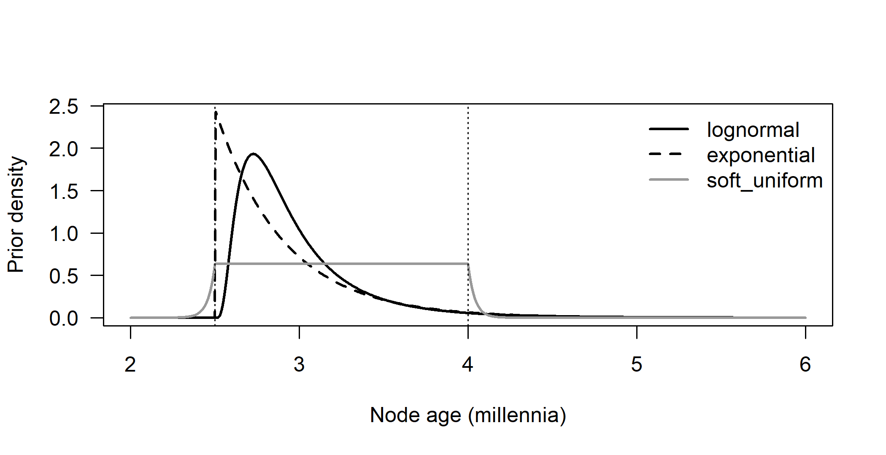
Figure I.10: Three calibrations for a node with a hard or soft minimum of 2.5 millennia and a 97.5 percent quantile at 4 millennia (dotted lines).
# check the 97.5% quantile, then the mass above 5 millennia
c(q975_lnorm = a + qlnorm(0.975, p_ln[1], p_ln[2]),
q975_exp = a + qexp(0.975, lam),
cdf_soft_at_4 = integrate(soft_unif, -Inf, u, a = a, b = u)$value)#> q975_lnorm q975_exp cdf_soft_at_4
#> 4.000 4.000 0.975signif(c(lognormal = plnorm(5 - a, p_ln[1], p_ln[2], lower.tail = FALSE),
exponential = pexp(5 - a, lam, lower.tail = FALSE),
soft_uniform = integrate(soft_unif, 5, Inf, a = a, b = u)$value),
3)#> lognormal exponential soft_uniform
#> 3.66e-03 2.14e-03 2.49e-13All three put 97.5% of their mass below 4 millennia, yet they disagree about the far tail. The offset lognormal leaves about 0.4% above 5 millennia, the offset exponential about 0.2%, and the soft-bounded uniform essentially nothing (\(2.5\times 10^{-13}\)), because its exponential tail has rate \(h/p \approx 25\) per millennium and so decays within a few decades of the bound. The lognormal has the heaviest tail because its sdlog (0.71) is large and its log-scale tail decays more slowly than an exponential. A calibration that “agrees” on its central range can therefore still differ by orders of magnitude in how easily the data can push the node much older, which is exactly the part of the density for which historical evidence is weakest (Section 10.3.1). Programs also construct soft tails differently, so the construction must be checked against the documentation.
2. Extend the rejection sampler to three nested calibrated nodes and compare the middle node’s effective prior with the two-node case.
set.seed(3)
m <- 2e5
root <- rnorm(m, 6, 0.5) # specified mean 6
mid <- runif(m, 4, 7) # specified mean 5.5
low <- runif(m, 3.5, 5) # specified mean 4.25
ok2 <- mid < root # two-node case of the chapter
ok3 <- ok2 & low < mid # three nested nodes
round(rbind(
specified = c(root = 6, mid = 5.5, low = 4.25, accepted = NA),
two_nodes = c(mean(root[ok2]), mean(mid[ok2]), NA, mean(ok2)),
three_nodes = c(mean(root[ok3]), mean(mid[ok3]), mean(low[ok3]),
mean(ok3))), 3)#> root mid low accepted
#> specified 6.000 5.500 4.250 NA
#> two_nodes 6.122 5.057 NA 0.666
#> three_nodes 6.146 5.201 4.167 0.555round(rbind(two_nodes = quantile(mid[ok2], c(0.025, 0.5, 0.975)),
three_nodes = quantile(mid[ok3], c(0.025, 0.5, 0.975))), 2)#> 2.5% 50% 97.5%
#> two_nodes 4.05 5.00 6.44
#> three_nodes 4.11 5.17 6.49With three nodes, each node is squeezed by its neighbors: the root’s effective mean rises slightly (6.12 to 6.15), the youngest node is pulled below its specified mean of 4.25 (to about 4.17), and the middle node is pushed in two directions at once. The root above it removes its old end, as in the two-node case, and the node below it now removes its young end, because ages near 4 millennia leave little room for a descendant that must be older than 3.5. The middle node’s effective mean therefore moves back up from 5.06 (two nodes) to 5.20 (three nodes), its lower 2.5% quantile rises from 4.05 to 4.11, and its median from 5.00 to 5.17. None of the three marginals equals what was specified, and the size of the shift depends on all the other calibrations. Adding a tree prior would add further shifts, which is why effective priors must be sampled rather than assumed (Section 10.3.2).
3. Rerun the heterochronous root-to-tip simulation with sdlog = 0.6 and with only three ancient languages; compare rate, root age and date-randomization p-value, and name the kind of validation.
The simulation code of Section C.4.4 is wrapped, unchanged apart from the two arguments, in a hidden function rtt_rep(sdlog, n_anc, seed), which returns the regression rate, the root age where the line reaches zero distance, and the date-randomization p-value (500 permutations).
sc <- expand.grid(sdlog = c(0.2, 0.6), n_anc = c(8, 3))
one_run <- t(mapply(rtt_rep, sc$sdlog, sc$n_anc)) # seed 4, as in the book
cbind(sc, round(one_run, 3))#> sdlog n_anc rate root p
#> 1 0.2 8 76.29 6.536 0.000
#> 2 0.6 8 76.64 7.890 0.012
#> 3 0.2 3 78.62 5.894 0.000
#> 4 0.6 3 62.93 6.075 0.000# the same four settings over 50 seeds (no permutation test), to separate
# systematic effects from the luck of one simulated family
set.seed(1)
reps <- t(sapply(seq_len(nrow(sc)), function(j) {
r <- sapply(1:50, function(s)
rtt_rep(sc$sdlog[j], sc$n_anc[j], seed = s, n_perm = 0)[1:2])
c(rate_median = median(r[1, ]), root_median = median(r[2, ]),
root_q10 = unname(quantile(r[2, ], 0.1)),
root_q90 = unname(quantile(r[2, ], 0.9)))
}))
cbind(sc, round(reps, 2))#> sdlog n_anc rate_median root_median root_q10 root_q90
#> 1 0.2 8 80.56 5.97 4.90 8.16
#> 2 0.6 8 80.27 5.67 3.60 10.14
#> 3 0.2 3 82.41 5.74 4.48 7.42
#> 4 0.6 3 91.34 5.24 2.91 10.66The first row reproduces the chapter (rate about 76 changes per millennium, root 6.5 millennia, p < 0.002). With strong rate variation (sdlog = 0.6) the same family gives a root of 7.9 millennia and a much weaker, though still significant, date-randomization result (p about 0.01). With only three ancient languages, this particular family happens to give a root closer to the truth (5.9 millennia, and 6.1 with both changes), but the rate estimate drops to 63 when strong rate variation is added. Single families are anecdotes, and the 50 replicates show the systematic picture. With a nearly strict clock, the median root estimate is close to 6 millennia whether there are eight ancient languages or three, and the 10–90% range of the estimates (about 4.9–8.2 and 4.5–7.4 millennia) does not get wider with fewer ancient tips: the intercept rests mainly on the 21 living languages, and three ancient tips with well-spread ages still fix the slope. Strong rate variation is what does the damage. The range widens to about 3.6–10.1 millennia with eight ancient languages and 2.9–10.7 with three. With three, the median rate is also biased upward (91 rather than about 80) and the median root downward (5.2 millennia), because the slope now rests on three points whose own branch rates vary. The rates are slightly above 80 even without rate variation because the simulation adds 0.5 to every branch. (The replicate study uses 50 families to keep the run time short; the percentiles move by a few tenths of a millennium between runs of this size.)
In the vocabulary of Section 6.10, the original and the three-ancient-language runs are parameter-recovery (practical estimability) experiments, because the data follow the nearly clocklike process that the regression assumes, with less information in the second case. The sdlog = 0.6 runs test robustness under misspecification, because the regression assumes a strict clock.
4. Apply loo_calib() with the first internal calibration misattributed (window × 1.4), under model = "correlated" and model = "clock". Is the bad calibration identified, and what happens to the others?
The phylogram cal_phylo, the helper calib() and loo_calib() (Sections C.4.5 and 10.8) are recreated in a hidden chunk with the book’s code and seed.
bad1 <- calib(c(n + 1, cal_nodes),
c(5, 1.4 * 0.85 * tc[1], 0.85 * tc[2:3]),
c(7, 1.4 * 1.15 * tc[1], 1.15 * tc[2:3]))
good <- calib(c(n + 1, cal_nodes), c(5, 0.85 * tc), c(7, 1.15 * tc))
miss <- function(x) # distance of the prediction from its window
round(pmax(x$min - x$predicted, x$predicted - x$max, 0), 2)
set.seed(10) # chronos() draws random starting values
runs <- list(correlated_bad = loo_calib(cal_phylo, bad1, "correlated"),
clock_bad = loo_calib(cal_phylo, bad1, "clock"),
clock_good = loo_calib(cal_phylo, good, "clock"))
out <- data.frame(node = good$node, true_age = round(c(6, tc), 2),
sapply(runs, function(x) round(x$predicted, 2)),
sapply(runs, miss))
names(out)[6:8] <- paste0("miss_", names(runs))
out#> node true_age correlated_bad clock_bad clock_good
#> 21 6.00 7.23 7.20 5.65
#> 22 22 4.33 4.08 3.26 3.26
#> 34 34 2.78 3.57 3.56 2.89
#> 24 24 1.82 2.45 2.44 1.88
#> miss_correlated_bad miss_clock_bad miss_clock_good
#> 0.23 0.20 0.00
#> 22 1.07 1.89 0.42
#> 34 0.38 0.36 0.00
#> 24 0.35 0.34 0.00The misattributed node (row 2, true age 4.3 millennia, window 5.1–7.0) is predicted well below its window under both models (4.1 and 3.3 millennia), and it shows the largest discrepancy in both (1.07 and 1.89 millennia), so the cross-validation does point to it. It is not identified uniquely, however. Under both models every other calibration also fails, although each correctly reflects its node’s true age. When a good calibration is left out, the misattributed one is still in place and stretches the deep part of the tree, so the root is predicted too old (7.2 against a window ending at 7) and the two shallower nodes are predicted older than their windows (3.6 and 2.45 millennia, discrepancies of 0.35–0.38). The last column shows a second problem. Even with all calibrations correct, the strict clock predicts node 22 about 0.4 millennia below its window, because the data were simulated with lognormal rate variation (sdlog 0.4) that a strict clock cannot absorb. Cross-validation therefore tests the calibrations jointly with the clock model. A misspecified clock produces failures of its own, and a single bad calibration contaminates the predictions for the good ones. The diagnosis must come from comparing the sizes of the discrepancies across nodes and models, and then going back to the historical evidence behind each calibration (Section 10.8). chronos() starts its optimization from random values, so the seed is set; with other starting values the predictions changed by up to about 0.1 millennia in our runs (by more for node 34 in one run that stopped at a worse optimum), which is another reason to read only large discrepancies as evidence.
5. With max_side_branch(), find how many attested meanings exclude a 200-year side branch for retention 0.80 and 0.90 per millennium.
max_side_branch <- function(n, retention = 0.86, conf = 0.95) {
# longest side branch (millennia) not excluded when no unique
# replacements are seen among n attested meanings
k <- -log(retention) # replacements per meaning per kyr
-log(1 - conf) / (n * k)
}
ret <- c(0.80, 0.90)
n_needed <- sapply(ret, function(r) {
nn <- 1:1000
min(nn[max_side_branch(nn, r) <= 0.2])
})
data.frame(retention = ret, meanings_needed = n_needed,
years_with_n = round(1000 * max_side_branch(n_needed, ret)),
years_with_n_minus_1 =
round(1000 * max_side_branch(n_needed - 1, ret)),
closed_form = -log(0.05) / (0.2 * -log(ret)))#> retention meanings_needed years_with_n years_with_n_minus_1
#> 1 0.8 68 197 200
#> 2 0.9 143 199 200
#> closed_form
#> 1 67.13
#> 2 142.17Solving \(3/(nk) \le 0.2\) with \(k = -\ln(\text{retention})\) gives \(n \ge 67.1\) for retention 0.80 and \(n \ge 142.2\) for retention 0.90, so the ancient language must be attested for at least 68 and 143 meanings respectively. A more conservative vocabulary (higher retention) changes less per millennium, so it takes about twice as many attested meanings to show that a 200-year side branch would have left a trace. The calculation is optimistic, because it treats the state of the lineage at the time of attestation as known, and it assumes that no apparent unique change is a literary or scribal artifact (Section C.4.6).
6. Run RevBayes scripts 01 and 02 with the uniform and with a truncated-normal root prior, and without data; tabulate root and calibrated-node ages; then compare strict and UCLN clocks by stepping-stone sampling on both data sets.
The runs were made with RevBayes 1.4.1 from revbayes/, with the scripts’ own seeds and chain lengths. The commands are shown here (not run when the book is built). The modified scripts differ from the distributed ones only in the lines indicated, and each was given its own out_dir so that the book’s outputs were not overwritten.
cd revbayes
rb analyses/time/01_strict_clock_calibrations.Rev # strict, uniform root
rb analyses/time/02_ucln_relaxed_clock.Rev # UCLN, uniform root
# truncated-normal root prior: in copies of 01, 02 and 14 replace
# root_age ~ dnUniform(0.5, 30.0)
# by
# root_age ~ dnNormal(mean=6.5, sd=2.0, min=5.0, max=10.0)
# Effective priors without data:
# strict clock (topology free): script 14 as distributed, and its copy
# with the truncated-normal root prior
# UCLN (topology fixed): copies of 02 in which the dnPhyloCTMC node and
# its clamp() are deleted together with the clock and substitution
# blocks; deleting only the data node makes RevBayes stop with
# "Cannot find node with name 'mean_rate' in the model but received
# a move working on it", because mean_rate, sigma and pi are no longer
# connected to the model graph
# Clock-model comparison (uniform root prior, fixed topology, 20 stones)
rb analyses/time/09_clock_model_comparison_ss.Rev --args strict clock_ucln
rb analyses/time/09_clock_model_comparison_ss.Rev --args ucln clock_ucln
rb analyses/time/09_clock_model_comparison_ss.Rev --args strict clock_strict
rb analyses/time/09_clock_model_comparison_ss.Rev --args ucln clock_strictEach posterior run took two to four minutes, each prior-only run under 30 seconds and each stepping-stone run one to two minutes (eight jobs in parallel). The table summarizes the model.log files after discarding the first 25% of samples, as posterior means with 95% HPD intervals. The effective sample sizes were above 200 for every quantity: the lowest, about 215, was for age_C1 under the UCLN clock, and the rest were mostly above 1,000. The posterior runs with the uniform root prior reproduce the values reported in Sections H.4.1 and H.4.2.
rb <- data.frame(
run = c("Strict, posterior", "Strict, posterior",
"UCLN, posterior", "UCLN, posterior",
"Prior, topology free (14)", "Prior, topology free (14)",
"Prior, topology fixed", "Prior, topology fixed"),
root_prior = rep(c("uniform(0.5, 30)", "normal(6.5, 2) in [5, 10]"), 4),
root_age = c("6.82 [4.02, 10.31]", "6.66 [5.01, 8.67]",
"5.91 [4.03, 8.94]", "6.29 [5.00, 8.31]",
"4.32 [3.86, 4.90]", "5.52 [5.00, 7.01]",
"5.71 [3.97, 8.83]", "6.16 [5.00, 8.12]"),
age_C1 = c("1.55 [1.11, 1.97]", "1.57 [1.18, 1.98]",
"1.51 [0.85, 2.28]", "1.52 [0.87, 2.21]",
"1.94 [1.21, 2.60]", "1.98 [1.28, 2.59]",
"1.81 [1.02, 2.44]", "1.82 [1.05, 2.47]"),
age_C2 = c("4.37 [3.90, 5.05]", "4.37 [3.92, 5.00]",
"4.34 [3.88, 4.92]", "4.42 [3.89, 5.13]",
"4.30 [3.86, 4.86]", "5.03 [3.96, 5.82]",
"4.32 [3.88, 4.92]", "4.40 [3.89, 5.06]"))
knitr::kable(rb, col.names = c("Run", "Root prior", "Root age",
"age_C1", "age_C2"),
caption = paste("Posterior and effective-prior node ages (millennia;",
"mean and 95% HPD) for the twelve-language data.",
"True values: root 6.0, C1 1.46, C2 4.13."))| Run | Root prior | Root age | age_C1 | age_C2 |
|---|---|---|---|---|
| Strict, posterior | uniform(0.5, 30) | 6.82 [4.02, 10.31] | 1.55 [1.11, 1.97] | 4.37 [3.90, 5.05] |
| Strict, posterior | normal(6.5, 2) in [5, 10] | 6.66 [5.01, 8.67] | 1.57 [1.18, 1.98] | 4.37 [3.92, 5.00] |
| UCLN, posterior | uniform(0.5, 30) | 5.91 [4.03, 8.94] | 1.51 [0.85, 2.28] | 4.34 [3.88, 4.92] |
| UCLN, posterior | normal(6.5, 2) in [5, 10] | 6.29 [5.00, 8.31] | 1.52 [0.87, 2.21] | 4.42 [3.89, 5.13] |
| Prior, topology free (14) | uniform(0.5, 30) | 4.32 [3.86, 4.90] | 1.94 [1.21, 2.60] | 4.30 [3.86, 4.86] |
| Prior, topology free (14) | normal(6.5, 2) in [5, 10] | 5.52 [5.00, 7.01] | 1.98 [1.28, 2.59] | 5.03 [3.96, 5.82] |
| Prior, topology fixed | uniform(0.5, 30) | 5.71 [3.97, 8.83] | 1.81 [1.02, 2.44] | 4.32 [3.88, 4.92] |
| Prior, topology fixed | normal(6.5, 2) in [5, 10] | 6.16 [5.00, 8.12] | 1.82 [1.05, 2.47] | 4.40 [3.89, 5.06] |
Three points stand out.
The prior-only runs. The two effective priors differ for a reason that has nothing to do with the clock. Script 14 leaves the topology free, and under the prior clade C2 (eleven of the twelve languages) is usually not monophyletic, so its “age” is the root age. This happened in 99% of the samples with the uniform root prior and 73% with the truncated normal. The C2 calibration therefore dates the root, which gives the narrow, young effective prior of 4.3 millennia described in Section H.4.14. With the truncated normal, the root cannot be younger than 5 millennia, and C2 is dragged up to 5.0 with it. Once the data fix the topology (C2 coincided with the root in under 5% of the posterior samples of script 01), the relevant comparison is the fixed-topology effective prior, which is the same for both clock models. In both prior-only runs the soft calibration on C1 (95% in 0.96–1.96) becomes an effective prior centered near 1.8–1.9 millennia.
Sensitivity to the root prior. Changing the root prior moves the UCLN posterior mean by 0.38 millennia (5.91 to 6.29), almost as much as it moves the fixed-topology effective prior (5.71 to 6.16). It moves the strict-clock posterior by only 0.16 (6.82 to 6.66). Under the UCLN clock the root posterior is close to the effective prior in both runs. The posterior median of the ratio root age / age_C2 is 1.26 and 1.38 under the two priors, against 1.21 in the effective prior and 1.45 in the truth. The relaxed clock lets the two branches that descend from the root (the stem of C2 and the branch to L12) have their own rates, so the data cannot say how far above C2 the root lies, and the prior fills the gap. Under the strict clock, the shared rate, which the calibrated nodes fix, converts the amount of change on those branches into time. The posterior ratio is 1.49 under both priors, close to the truth, and the root prior mainly trims the tails: the truncation at 5 removes the young tail and the normal shape shortens the old one. The strict clock is the less sensitive model here because it uses the data more, not because it is more correct; that trust is justified only if the clock is adequate.
Bayes factors. The stepping-stone (path-sampling) log marginal likelihoods were as follows.
| Data generated under | strict clock | UCLN clock | log BF (UCLN − strict) |
|---|---|---|---|
UCLN (clock_ucln) |
−3142.57 (−3143.32) | −3135.81 (−3135.86) | 6.76 (7.46) |
strict (clock_strict) |
−3227.64 (−3228.02) | −3231.08 (−3230.99) | −3.44 (−2.97) |
The generating model wins in both directions: strongly for the UCLN on UCLN data, and moderately for the strict clock on strict data, where the UCLN contains the strict clock as the limit \(\sigma \to 0\) and is penalized only for its unneeded flexibility. The two estimators agree to within 0.75 log units, which gives a rough idea of their numerical error. Note that script 09 always uses the uniform root prior and a fixed topology, so these Bayes factors do not bear on the root-prior comparison above. A Bayes factor compares the two clocks relative to each other, but it is not an adequacy check for either.
Note: the exercise’s instruction to remove “the dnPhyloCTMC node and its clamp() as script 14 does” is not enough for script 02, for the reason given in the code comments. Also, because script 01 estimates the topology while script 02 fixes it, the “prior” rows for the two clock models are not strictly comparable. The fixed-topology prior is the right reference for both posteriors.
Research
1. Plan a dated Semitic analysis with Akkadian, Ugaritic, Biblical Hebrew, Classical Arabic and Ge’ez: assign each a treatment, justify it philologically, and design sensitivity analyses.
A strong answer takes the four treatments of Table 10.3 language by language and grounds each choice in the philological status of the variety (Section 10.6.1).
- Akkadian (third to first millennium BCE, East Semitic, no living descendants) should be a dated tip on a side branch. Its attestation also implies a minimum age for the Semitic root, but entering it both as a tip and as a calibration would count the same evidence twice. Its age should be the age of the variety coded (Old Akkadian or Old Babylonian, not a span of two millennia), with a tip-age prior covering the dating uncertainty of the texts (Barido-Sottani et al. 2019).
- Ugaritic (late second millennium BCE, Northwest Semitic, extinct) should also be a dated side-branch tip. Its small corpus means that many meanings must be coded as unknown, not absent (Section 10.5.3). A quick calculation with
max_side_branch()shows that it cannot be distinguished from an ancestor anyway. - Biblical Hebrew is a layered literary corpus spanning several centuries. It should be a dated tip with a broad age prior, and a possible sampled ancestor of later Hebrew. Modern Hebrew is a revival whose lexicon was partly taken from the classical texts, so it either should not be included as an independent descendant or should be flagged as a test case.
- Classical Arabic is a literary standard. The modern dialects descend from related spoken varieties, not from the standard itself, so it should be a dated tip under a sampled-ancestor (FBD) prior (Heath et al. 2014; Gavryushkina et al. 2014). A constrained-ancestor run belongs among the sensitivity analyses, not in the main analysis.
- Ge’ez (from about the fourth century CE, later liturgical) is generally regarded as close to, but not the direct ancestor of, Tigrinya and Tigre. It should be a dated tip with sampled ancestry allowed.
The sensitivity analyses to report:
- the root age and the key internal dates (Northwest Semitic, the entry of Semitic into Ethiopia) under (a) node dating only, (b) dated tips with a standard birth-death prior, (c) FBD with sampled ancestors, and (d) ancestry constraints for Classical Arabic and Biblical Hebrew;
- fixed against uncertain tip ages;
- alternative codings of literary vocabulary and of loans (Akkadian–Aramaic, Arabic into Ethiosemitic);
- prior-only runs for every scheme, calibration cross-validation, root-to-tip regression with the ancient tips, and the posterior probability of ancestry for each ancient language set against its prior.
Comparison with Kitchen et al. (2009), and an explicit statement of which ancient languages are believed to be ancestors and why, complete the plan (Chang et al. 2015; Goldstein 2024).
2. Design a validation plan for a Bantu phylogeny calibrated only by archaeology, separating calibration from held-out evidence and protecting the route hypothesis from circularity.
The key move is to classify the archaeological evidence before the analysis, in a pre-registered table. For each item, record which node it would constrain, how secure the attribution of the material culture to Bantu speakers is, and whether the attribution, or the date itself, depends on a particular expansion route.
- Calibrations should be drawn from evidence whose linguistic attribution and date are route-neutral. Examples are minimum ages for the presence of farming, ceramic-using communities in regions that every hypothesis agrees were reached by a particular subgroup, and late, well-dated settlements in eastern and southern Africa that constrain shallow clades.
- Evidence that distinguishes the routes should be held out, never used as a calibration. This includes the dates of pottery traditions inside the rainforest, the opening of the Sangha River Interval savannah corridor (Bostoen et al. 2015), and early sites along competing pathways. The routes compared by Grollemund et al. (2015) and Koile et al. (2022) differ precisely in this evidence.
Validation then proceeds at several levels:
- leave-one-out cross-validation of each calibration (Near et al. 2005);
- prediction of the held-out dates from the dated tree and the phylogeographic reconstruction, with the comparison criterion fixed in advance;
- prior-only runs, to show what the calibrations imply on their own;
- robustness to the tree prior, the clock model and the treatment of borrowing among neighboring Bantu languages (simulations of the kind in Section 8.3);
- for the route question, a phylogeographic model or GLM whose predictors (Section 11.4.4) and whose calibrations are both route-neutral, so that the route is inferred rather than built in.
If the evidence used to choose the languages, the calibrations or the spatial model presupposes a route, any agreement with that route is circular and must be reported as such (Section 10.8).
3. Specify a shared database of linguistic calibrations: fields, uncertainty about clade membership, and support for cross-validation across studies.
Each record should contain the following fields:
- a stable identifier and version;
- the calibrated object: crown node, stem node or tip age;
- the clade, given as a list of Glottocodes (Hammarström et al. 2024) in Glottolog’s release-versioned form;
- the type of evidence: documented event, attestation, archaeological correlate or loan stratum;
- a prose summary of the evidence;
- the minimum and maximum ages, each with its own justification and uncertainty (for example a calibrated radiocarbon range), the time convention (BP relative to 1950, or calendar years), and a flag for whether each bound is hard or soft;
- the recommended density, with its parameters stated in a program-neutral form (for example “offset 3.2 ky; excess lognormal with meanlog and sdlog on the log scale”) and, optionally, ready-made BEAST 2 and RevBayes snippets, because parameterizations differ between programs (Section C.4.2);
- a justification of the density shape (Parham et al. 2012; Ho and Phillips 2009);
- the hypotheses the calibration presupposes, such as an archaeology-to-language attribution, so that analyses testing those hypotheses can exclude it;
- sources (references and DOIs), the contributor and the reviewers.
Uncertainty about clade membership should be recorded explicitly. Each record lists the core members whose inclusion the calibration requires, the uncertain members with the reasons for doubt, and, where needed, alternative clade definitions as linked sub-records. It should also say whether the calibration presupposes monophyly, which software would enforce as a constraint. A calibration on a large, non-enforced clade can end up dating a different node, as script 14 shows (Section H.4.14).
To support cross-validation, the database should be machine-readable (for example a CLDF component, Forkel et al. (2018)), so that an analysis pipeline can automatically drop each record in turn. It should also store, for each study that used a calibration, the node age predicted when that calibration was left out, and the effective prior the study actually applied (Heled and Drummond 2012). Over many studies this builds a record of which calibrations are repeatedly inconsistent with the others (Near et al. 2005). That is evidence about the calibrations themselves, independent of any one family’s dates.
I.11 Chapter 11: Phylogeography and Homelands
These solutions refer to the simulated family of Section 11.13.1 and to the simulation functions of Sections 11.13.3 to 11.13.6, which are recreated below so that the code runs on its own.
Conceptual
1. What would you need to know before accepting a Bayes factor of 50 for an Anatolian over a steppe homeland?
A homeland Bayes factor is the ratio of the posterior odds to the prior odds that the root lies in region A rather than region B (Section 11.6.1). Before reading it as evidence about the homeland I would ask for the following.
- The two regions and their sizes. How the polygons were drawn, and how much prior probability each received. With a diffuse prior on the root location, the prior odds are roughly the ratio of the areas, so redrawing the boundaries changes the Bayes factor. Do the regions together cover most of the posterior mass, or is most of it elsewhere, so that a large ratio compares two unlikely options?
- The prior on the root location. Was it uniform over land, uniform over a bounding box, or centered on the tips? Report the prior odds, the posterior odds and the posterior mass in each region separately.
- The dates of the tree. Under a diffusion model, an older root lets lineages spread from further away, and a younger root keeps the homeland close to the present center. The Bayes factor is conditional on the dating, which in the Indo-European case was itself in dispute (Sections 10.9.1 and 15.9). I would want it recomputed under alternative calibrations and ancestry constraints.
- Whether the model could have favored a peripheral homeland. An undirected diffusion model fitted to mostly contemporaneous tips puts the root near the weighted center of the tips, whatever the true history (Sections 11.5.5 and 11.13.3). If the region that wins is the more central one, the Bayes factor may say more about the model than about history. I would ask for a simulation in which a family expands directionally from the steppe region, analyzed with the same model, to see how often the same Bayes factor appears. I would also ask which ancient languages were included, and where and when they are placed.
- Sampling and model checks. How many languages there are per region, whether the result survives subsampling (Section 11.11), how sensitive it is to the diffusion model (BM against RRW, landscape-aware against not), and whether any adequacy checks were run (Section 11.8).
2. Why can a common eastward drift not be detected from contemporaneous languages, and why do ancient languages help?
Under Brownian motion with a drift \(\mu\), a tip at height \(h\) has expected location \(x_{\text{root}} + \mu h\) (Equation (11.8)). If all languages are observed today, every tip has height \(T\), so the drift only adds the constant \(\mu T\) to every tip. The covariances do not change, and the data have the same distribution as under a model without drift whose root lies \(\mu T\) further east. Only the sum \(x_{\text{root}} + \mu T\) is identifiable. No statistic that is unchanged when all tips are shifted by the same amount, including the contrasts used in the adequacy check, can tell the two apart (Section D.1.4). Ancient languages are tips at different heights. Their expected positions lie on the line \(x_{\text{root}} + \mu h_i\), so regressing location on height by GLS separates the intercept (the homeland) from the slope (the drift), as in Section 11.13.4. For this to work, each ancient language must be attested where its lineage was at the attested date. A language attested only far from its speakers’ core area, such as an imperial administrative language, or a text whose location reflects where it was found rather than where it was spoken, biases the drift. The ancient tips also have to be spread over heights and lineages, and their dates must be known.
3. How does 40 languages from one region and 5 from another affect discrete and continuous reconstructions? Propose two robustness analyses.
In a discrete model, the number of tips in a region acts as evidence that lineages spend a lot of time there. The rates out of the well-sampled region are estimated as low and the rates into it as high, so the root and the deep nodes are pulled toward it (the caution box in Section 11.4.2). Under a continuous model, the homeland is a GLS-weighted average of the tips (Equation (11.6)). Phylogenetic weighting discounts close relatives, but 40 tips spread over several subgroups still pull the estimate toward their region, and the diffusion rate is estimated mostly from the dense region (Kalkauskas et al. 2021). Two robustness analyses are (i) repeated random subsampling of the over-represented region down to about 5 to 10 languages, with the root posterior (or the probability of each region) reported across subsamples; and (ii) a model that treats sampling explicitly, or at least a change of scheme. For a discrete model this means alternative region boundaries and a check of whether the root is the same under equal-sized regions. For a continuous model it means the sampling-aware approach of Guindon and De Maio (2021). A further option is to add documented or ancient languages from the poorly sampled region and see how far the root moves.
4. Which choices and inputs does “1.2 km per year” depend on, and what is needed before reading it as a migration speed?
A dispersal velocity is the sum of the branch displacements, computed from reconstructed node locations, divided by the summed branch durations (Section 11.5.2). It therefore depends on: the dates of the tree, since doubling the time scale halves the velocity (Section 11.13.6), and hence on the calibrations, clock model and tree prior; the topology; the diffusion model (BM, RRW, Cauchy RRW, planar or spherical, landscape-aware); the coding of tip locations (points or polygons, present-day or historical locations, relocated communities); the sampling of languages; and the summary used (posterior mean of a ratio, great-circle or planar distance). Before treating it as the speed at which people moved I would need to know that the model is adequate, and that diffusion underestimates distances under directional expansion (Neureiter et al. 2021). The velocity averages over long stands and rapid pulses, and it counts only net displacement between nodes, not the path actually taken. The figure describes lineages, so language shift moves a lineage without anyone migrating. Independent evidence (archaeology, ancient DNA) is needed to link lineage movement to population movement (Section 11.9).
5. Distinguish demic diffusion from language shift. Can a diffusion model tell them apart?
In demic diffusion speakers move, through migration or the gradual expansion of a population of speakers, and the language moves with them. A branch’s displacement then corresponds to movement of a speech community. In language shift a population stays where it is and adopts a new language from neighbors, so the language spreads without its original speakers. A displacement along a branch then corresponds to the language being transmitted to a new population at a new place, with little or no movement of people. In both cases the diffusion model sees only the location of the language lineage at the nodes and tips. Both processes give the same kind of data: a lineage that was in one place is later found in another. The model therefore adds them together as displacement and cannot tell them apart (Section 11.11). Separating them needs other evidence: ancient DNA, which in Indo-European showed a large steppe-related population movement (Haak et al. 2015); archaeological continuity or discontinuity; and contact effects in the language itself, such as substrate features left by shift.
Computational
The hidden chunk below recreates, with the chapter’s code and seeds, the simulated family tree and its locations tips (Section 11.13.1), the adequacy statistic kurt(), its null distribution kurt_null and the function one_rep() (Section 11.13.3), gls_drift() and ancient_rep() (Section 11.13.4), the region data area and the ring index matrix (Section 11.13.5), and the mock posterior post (Section 11.13.6). post is built by a function make_post() whose argument is the standard deviation of the root-age noise; the chapter’s value is 0.2.
1. Vary the trend mu in one_rep() over 0 to 0.8, plot coverage of the Brownian root interval against \(\mu T\), and say when it falls below 80% and whether the adequacy check responds.
Calling one_rep() a few hundred times per value of mu takes minutes, because fastAnc(..., CI = TRUE) re-roots the tree at every node. The computation can be made much faster without changing what is computed. First, the root estimate and its interval are the GLS mean and its standard error, with \(\sigma^2\) estimated by REML as the mean squared contrast (Section D.1.3). The function root_ci() below reproduces fastAnc() exactly. Second, fastBM() draws the same normal deviates whatever mu is, and on an ultrametric tree the trend adds exactly \(\mu T\) to every tip. One set of replicates therefore serves every value of mu: the interval is shifted by \(\mu T\) and the contrasts are unchanged.
root_ci <- function(tr, x) {
# ML root (GLS mean) and 95% CI, as returned by fastAnc(CI = TRUE)
w <- colSums(solve(vcv(tr)[names(x), names(x)])) # 1' C^-1
v <- 1 / sum(w)
a <- v * sum(w * x)
se <- sqrt(mean(pic(x, tr)^2) * v) # REML sigma^2
c(est = a, lo = a - 1.96 * se, hi = a + 1.96 * se)
}
set.seed(3)
tr <- pbtree(n = 30, scale = 6)
set.seed(4); x0 <- fastBM(tr, a = 0, sig2 = 0.36)
set.seed(4); x8 <- fastBM(tr, a = 0, sig2 = 0.36, mu = 0.8)
f <- fastAnc(tr, x0, CI = TRUE)
all.equal(unname(c(f$ace[1], f$CI95[1, ])), unname(root_ci(tr, x0)))#> [1] TRUE#> [1] 4.8 4.8#> [1] TRUEset.seed(1)
sims <- replicate(400, {
tr <- pbtree(n = 30, scale = 6)
list(tr = tr, x = fastBM(tr, a = 0, sig2 = 0.36))
}, simplify = FALSE)
R <- t(sapply(sims, function(s) c(root_ci(s$tr, s$x),
flagged = mean(kurt_null >= kurt(pic(s$x, s$tr))) < 0.05)))
coverage <- function(d) mean(R[, "lo"] + d < 0 & R[, "hi"] + d > 0)
mus <- c(0, 0.1, 0.2, 0.4, 0.8)
tab <- data.frame(mu = mus, muT = 6 * mus,
coverage = sapply(6 * mus, coverage),
flagged = mean(R[, "flagged"]))
round(tab, 3)#> mu muT coverage flagged
#> 1 0.0 0.0 0.953 0.045
#> 2 0.1 0.6 0.838 0.045
#> 3 0.2 1.2 0.555 0.045
#> 4 0.4 2.4 0.048 0.045
#> 5 0.8 4.8 0.000 0.045d_grid <- seq(0, 4.8, by = 0.05)
cov_grid <- sapply(d_grid, coverage)
d_grid[which(cov_grid < 0.8)[1]] # first displacement below 80%#> [1] 0.75#> mean_halfwidth
#> 1.323plot(d_grid, cov_grid, type = "l", lwd = 2, ylim = c(0, 1), las = 1,
xlab = expression(mu * T ~ "(100 km)"), ylab = "proportion")
points(6 * mus, tab$coverage, pch = 19)
points(6 * mus, tab$flagged, pch = 4)
abline(h = 0.8, lty = 2)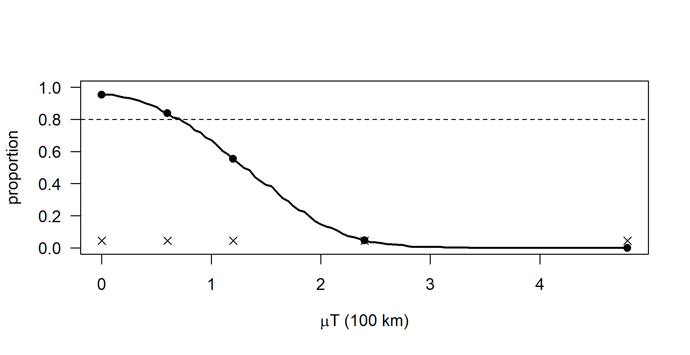
Figure I.11: Coverage of the 95% confidence interval of the Brownian root estimate (east coordinate) against the displacement \(\mu T\) produced by a directional trend, from 400 simulated families of 30 languages. Points mark the five values of mu asked for; the dashed line is 80% coverage. The proportion of datasets flagged by the contrast-kurtosis check (crosses) does not change with the trend.
With no trend the intervals have close to their nominal coverage. With 400 replicates the Monte Carlo standard error of a coverage near 0.95 is about 0.011, and of one near 0.5 about 0.025. Coverage falls below 80% once the displacement \(\mu T\) reaches about 0.75, that is about 75 km over six millennia (mu of about 0.125). That is only a little more than one standard error of the root estimate: the average half-width of the interval is 1.32, so the standard error is about 0.67. At mu = 0.2 coverage is about one half, at mu = 0.4 (240 km) about 5%, and at mu = 0.8 zero. The interval does not widen, because its width depends only on the tree and on the contrasts, and the trend changes neither. The adequacy check never responds. The proportion flagged is the same for every mu (here about 5%, its false-alarm rate) because the contrasts are identical with and without the trend (the last line of the first chunk), not merely similar in distribution. Any trend large enough to matter is therefore invisible to this check (Section D.1.4).
2. Modify ancient_rep() so that the ancient languages all belong to one clade; compare bias and standard deviation of the drift estimates, also for n_anc = 2, 5 and 20.
clade_tips() picks the smallest clade below the root that has at least n_anc tips (using getDescendants()) and samples the ancient languages from it. If no such clade exists, which with 30 tips is common for n_anc = 20, it falls back to the whole tree. To keep within the time budget, the BM root is computed as the GLS mean, which equals fastAnc(tr, x)[1] (Section D.1.3). The same 150 trees are used for every setting, so the comparisons share random numbers.
clade_tips <- function(tr, n_anc) {
n <- Ntip(tr)
nodes <- (n + 2):(n + tr$Nnode) # all nodes but the root
size <- node.depth(tr, method = 1)[nodes] # tips below each node
ok <- size >= n_anc
v <- if (any(ok)) nodes[ok][which.min(size[ok])] else n + 1
d <- getDescendants(tr, v)
d <- d[d <= n]
list(tips = d[sample.int(length(d), n_anc)], root_used = !any(ok))
}
ancient_rep2 <- function(tr, n_anc = 10, clustered = FALSE, mu = 0.4) {
n <- Ntip(tr)
ct <- if (clustered) clade_tips(tr, n_anc) else
list(tips = sample.int(n, n_anc), root_used = FALSE)
e <- match(ct$tips, tr$edge[, 2]) # terminal branches
tr$edge.length[e] <- tr$edge.length[e] * runif(n_anc, 0.05, 0.5)
x <- fastBM(tr, a = 0, sig2 = 0.36, mu = mu)
C <- vcv(tr)[names(x), names(x)]
Ci <- solve(C)
w <- colSums(Ci) # BM root = GLS mean = fastAnc()
X <- cbind(root = 1, trend = diag(C)) # drift regression, as gls_drift()
b <- drop(solve(t(X) %*% Ci %*% X, t(X) %*% Ci %*% x))
c(bm_root = sum(w * x) / sum(w), b, root_used = ct$root_used)
}
set.seed(2)
trees <- replicate(150, pbtree(n = 30, scale = 6), simplify = FALSE)
grid <- expand.grid(n_anc = c(2, 5, 10, 20), clustered = c(FALSE, TRUE))
out <- t(sapply(seq_len(nrow(grid)), function(i) {
set.seed(100 + grid$n_anc[i]) # same draws for both designs
r <- t(sapply(trees, ancient_rep2, n_anc = grid$n_anc[i],
clustered = grid$clustered[i]))
c(mean = colMeans(r[, 1:3]), sd = apply(r[, 1:3], 2, sd),
whole_tree = mean(r[, "root_used"]))
}))
res2 <- cbind(grid, round(out, 2))
names(res2) <- sub("^(mean|sd)\\.", "\\1_", names(res2))
res2#> n_anc clustered mean_bm_root mean_root mean_trend sd_bm_root sd_root
#> 1 2 FALSE 2.31 0.96 0.23 0.69 8.45
#> 2 5 FALSE 2.25 -0.03 0.41 0.75 2.44
#> 3 10 FALSE 2.07 -0.18 0.44 0.79 1.58
#> 4 20 FALSE 1.87 0.03 0.40 0.75 1.40
#> 5 2 TRUE 2.45 2.15 0.05 0.67 37.02
#> 6 5 TRUE 2.34 -0.22 0.44 0.74 5.06
#> 7 10 TRUE 2.25 0.06 0.38 0.75 2.42
#> 8 20 TRUE 2.01 0.03 0.40 0.74 1.69
#> sd_trend whole_tree
#> 1 1.40 0.00
#> 2 0.40 0.00
#> 3 0.27 0.00
#> 4 0.25 0.00
#> 5 6.18 0.00
#> 6 0.85 0.00
#> 7 0.42 0.00
#> 8 0.29 0.32The true homeland is 0 and the true trend 0.4. In every setting the undirected BM root is biased east, by about 1.9 to 2.5 (roughly 200 km). Ancient tips only shorten a few root-to-tip paths, so most of the \(\mu T\) shift remains. The drift regression is unbiased on average in all designs, within Monte Carlo error, as it should be when its model is true. What changes is precision. With randomly placed ancient languages, the standard deviation of the trend estimate falls from 1.4 with two ancient languages (more than three times the trend itself) to 0.4 with five and about 0.25 with ten or twenty. When the ancient languages all come from one clade, the estimates are much noisier for the same number of ancient languages. The standard deviation of the trend is about twice as large for 5 and 1.5 times as large for 10, and with two ancient languages from one clade (a cherry) the trend and the homeland are effectively unidentified (standard deviations of 6 and 37). Clustered ancient tips share most of their history, so their departures from the trend line are strongly correlated and add little independent information about \(\mu\). Their height contrasts also come from one part of the tree, so the estimate depends heavily on that clade’s own random displacement. For n_anc = 20 the two designs nearly coincide, because a clade with 20 of 30 tips rarely exists (the whole_tree column gives the proportion of trees on which the function fell back to the whole tree) and 20 of 30 tips cover most of the tree anyway. For linguistics: ancient languages from several primary branches (for Indo-European, Hittite, Tocharian, Vedic and Old Irish rather than four Italic varieties) are worth much more for estimating the direction of an expansion than many from one subgroup. The setting is still idealized, since the ancient tips are placed exactly where their lineages were.
3. Over the trees in post, compute the dispersal distance \(\sqrt{2\hat\sigma^2 T}\), compare its 95% range with the MCC value, and repeat with the root-age noise doubled.
disp <- function(t) {
x <- tips[t$tip.label, "east"]
T <- max(node.depth.edgelength(t))
s2 <- mean(pic(x, t)^2) # REML rate, east
c(root_age = T, sig2 = s2, distance = sqrt(2 * s2 * T))
}
summ <- function(p) {
d <- t(sapply(p, disp))
m <- disp(maxCladeCred(p))
rbind(mean = colMeans(d), q025 = apply(d, 2, quantile, 0.025),
q975 = apply(d, 2, quantile, 0.975), MCC = m)
}
post2 <- make_post(sd_age = 0.4) # root-age noise doubled
round(cbind(summ(post), summ(post2)), 2)#> root_age sig2 distance root_age sig2 distance
#> mean 6.18 0.30 1.88 6.64 0.31 1.88
#> q025 4.14 0.17 1.61 2.85 0.11 1.61
#> q975 9.40 0.45 2.17 14.72 0.63 2.17
#> MCC 5.20 0.36 1.94 4.50 0.42 1.94#> root_age sig2 distance
#> 6.000 0.472 2.380The left half of the table uses the chapter’s posterior and the right half the posterior with the root-age noise doubled. In both, the dispersal distance averages 1.88 (about 190 km), with a 95% range across trees of 1.61 to 2.17 (roughly \(\pm\) 15%), and the MCC value (1.94) lies inside it. Doubling the root-age noise widens the 95% range of the root age from 4.1–9.4 to 2.9–14.7 millennia and that of the rate \(\hat\sigma^2\) from 0.17–0.45 to 0.11–0.63, but it leaves the distance exactly unchanged, tree by tree. The reason is that each tree in the second sample is the corresponding tree of the first, rescaled. \(\hat\sigma^2\) scales as \(1/T\) under such a rescaling (Section 11.13.6), so \(\hat\sigma^2 T\) does not depend on the time scale. The MCC tree also has a different root age in the two samples (5.2 against 4.5 millennia) and a different rate, but the same distance. The spread that remains in the distance comes from the topological moves and the branch-by-branch noise, not from the dates. Note also that the true tree gives 2.38, outside the range: as for the root-region probability in the chapter, the mock posterior is not centered on the true tree, here because the noise and the "extend" correction change the relative branch lengths. The lesson is that quantities measured in space alone (how far lineages spread over the history of the family, or the location of the homeland) are robust to dating uncertainty. Quantities per unit time (diffusion rates, velocities in km per year) inherit it fully. This holds under the BM model with the tree known up to the perturbations used to build post.
4. Fit the ring model and the ER model with fitMk() to the first 20 trees in post; count how often the ring model wins by AIC; pool Markov jump counts over trees with make.simmap(nsim = 10).
Fitting the ring model with fitMk() takes several seconds per tree, and the stochastic maps add as much again, so the code is shown without being run when the book is built. The results below come from a run of exactly this code.
fits20 <- lapply(post[1:20], function(t) {
x <- area[t$tip.label]
list(ER = fitMk(t, x, model = "ER"), ring = fitMk(t, x, model = ring))
})
dAIC <- sapply(fits20, function(f) AIC(f$ring) - AIC(f$ER))
c(ring_preferred = sum(dAIC < 0), mean_dAIC = mean(dAIC),
range_dAIC = range(dAIC))
set.seed(4)
counts <- lapply(seq_along(fits20), function(i) {
t <- post[[i]]
Q <- unclass(as.Qmatrix(fits20[[i]]$ring))[regions, regions]
m <- make.simmap(t, area[t$tip.label], Q = Q, nsim = 10,
pi = "fitzjohn", message = FALSE)
describe.simmap(m)$count
})
pooled <- do.call(rbind, counts) # 20 trees x 10 maps = 200 rows
round(colMeans(pooled)[c("N", "R1,R2", "R2,R1", "R2,R3", "R3,R4")], 2)
per_tree <- sapply(counts, function(z) mean(z[, "N"]))
round(quantile(per_tree, c(0, 0.25, 0.5, 0.75, 1)), 1)In our run (about five minutes on a laptop, most of it in the fitMk() fits of the ring model), the code printed:
ring_preferred mean_dAIC range_dAIC1 range_dAIC2
20.000000 -11.398230 -16.537753 -7.246269
N R1,R2 R2,R1 R2,R3 R3,R4
74.97 35.73 35.15 2.39 1.23
0% 25% 50% 75% 100%
20.1 32.7 41.5 61.1 348.9The ring model beats the ER model by AIC on all 20 trees, by 7 to 17 units. The choice of a geographically constrained rate matrix is therefore robust to the tree uncertainty in this sample. The jump counts are not. Pooled over 200 maps (10 on each of 20 trees), the expected number of moves is about 75, against about 29 from 200 maps on the true tree with the same model and settings. The per-tree means range from 20 to 349, with a median of 41. Almost all moves are along the R1-R2 corridor, as on the true tree. The fitted corridor rate is what changes from tree to tree: it is between 0.27 and 0.6 on most trees (0.53 on the true tree, 0.4 in the simulation), but reaches 1.3 to 4.4 on five of them. On those trees the perturbed topology separates languages of R1 and R2 that are close relatives on the true tree, and the model explains the pattern by rapid back-and-forth movement. These few trees dominate the pooled mean. Two lessons follow. First, Markov jump counts are far more sensitive to tree uncertainty than model choice or the root region, because every misplaced tip adds moves. Second, pooled counts from a posterior sample should be reported with their spread across trees (a median and interval of per-tree means) rather than as a single mean.
5. Add noise to the tip locations in one_rep(), record coverage and the adequacy check, and say which kinds of misspecification the contrast-kurtosis check detects.
The replicates sims of Exercise 1 are reused, with independent normal noise added to every tip. The noise mimics speech communities recorded some distance from where their lineage “was”.
noisy <- function(sd) {
set.seed(6)
r <- t(sapply(sims, function(s) {
x <- s$x + rnorm(length(s$x), 0, sd)
ci <- root_ci(s$tr, x)
c(coverage = ci[["lo"]] < 0 & ci[["hi"]] > 0,
error = abs(ci[["est"]]), ci_width = ci[["hi"]] - ci[["lo"]],
flagged = mean(kurt_null >= kurt(pic(x, s$tr))) < 0.05)
}))
colMeans(r)
}
round(rbind(sd_0 = noisy(0), sd_0.25 = noisy(0.25), sd_0.5 = noisy(0.5),
sd_1 = noisy(1)), 3)#> coverage error ci_width flagged
#> sd_0 0.953 0.520 2.647 0.045
#> sd_0.25 0.983 0.518 3.341 0.235
#> sd_0.5 0.998 0.520 4.693 0.455
#> sd_1 1.000 0.540 7.979 0.665Tip noise barely harms the homeland estimate: the mean error hardly changes. The interval, however, becomes conservative: coverage rises to 98% at sd = 0.25 and essentially 100% at sd = 0.5 and 1, because the noise inflates the REML estimate of \(\sigma^2\) and the interval widens far more than the estimate’s scatter grows. A rate or velocity estimated from such data would be biased upward. Unlike the trend, tip noise is detected by the adequacy check, which flags 24% of the datasets at sd = 0.25, 46% at sd = 0.5 and 67% at sd = 1, against a false-alarm rate of 4.5%. A standardized contrast divides a difference by the square root of the branch lengths involved. For two closely related languages on short terminal branches the Brownian difference is small, but the noise is not, so those contrasts become very large while contrasts on long branches stay ordinary. The result is a heavy-tailed mixture, which raises the kurtosis.
The general rule is that the check detects misspecification that makes the variance of the contrasts uneven across the tree: tip error and displacement of recent communities, heterogeneous rates (the RRW scenario of Table 11.3, detected in a minority of datasets), occasional long jumps, and errors in relative branch lengths. It cannot detect anything that leaves the contrasts unchanged or rescales them all equally. That includes a directional trend with contemporaneous tips (Exercise 1), a wrong overall time scale (which changes only \(\hat\sigma^2\)), and replacement or extinction of whole branches, which removes data rather than distorting them (Section 11.8). A model can therefore pass this check and still put the homeland in the wrong place.
Research
1. Design a phylogeographic study of a South American family of 70 languages, a third relocated in the twentieth century and a few known only from colonial sources.
A strong answer covers the following points.
- Trees. Use a two-step analysis over a posterior sample of dated trees from the lexical data, or a joint analysis (Section 11.3). Include the colonial-era languages as tips dated to their attestation, with wide date priors if the sources are vague.
- Location coding. Code a pre-relocation location for every relocated community, from missionary records, ethnohistory and toponymy, as a polygon or a point with an uncertainty radius. Run the analysis twice, once with historical and once with current locations, so that the effect of relocation is visible (Section 11.11). Code polygons for the languages of riverine or mobile groups. Place colonial-era languages where the sources place them, and say explicitly that this is the location of a mission or reduction, which may already reflect displacement.
- Models. Compare strict BM, lognormal and Cauchy RRWs (Lemey et al. 2010), and a landscape-aware variant in which movement along rivers is cheaper than movement across interfluves (Bouckaert et al. 2012; Walker and Ribeiro 2011). As a discrete alternative, use river basins as regions with BSSVS or a GLM with a river-connection predictor. Compare the models by marginal likelihood.
- Adequacy and robustness. Run posterior predictive checks: contrast kurtosis, the relation between geographic and patristic distance, and the proportion of nodes off land or away from rivers (Section 11.8). Subsample over-documented areas. Run simulations with a directional riverine expansion to find out whether the model could recover a peripheral homeland (Neureiter et al. 2021).
- Ancient tips. The colonial-era languages are the only non-contemporaneous tips. Use them to estimate or bound a trend, and report how the homeland moves with and without them.
- Claims. Report the homeland as a posterior region for the root lineage, conditional on the dates. Report movements as lineage movements, with velocities given together with the root age they depend on. Make no claim about migration as opposed to shift, or about the routes of individual communities, unless archaeological or genetic evidence supports it (Section 11.9).
2. Design a phylogeographic GLM testing whether the Bantu expansion followed habitats suitable for cereal cultivation.
- Regions. Use 10 to 20 regions defined independently of the language data, for example by ecological and climatic zones (Grassfields, western and central rainforest blocks, Sangha River Interval, Great Lakes, southern savannahs), with sensitivity analyses for alternative schemes.
- Predictors for each ordered pair of regions \((i, j)\), standardized and log-transformed (Equation (11.4)): the suitability of the destination for pearl millet and sorghum (cereal agriculture) at the relevant period, taken from paleoclimate reconstructions or pollen records for roughly 4,000 to 1,500 years ago rather than from modern maps; the suitability for yam and oil-palm (root-crop and arboriculture) agriculture as a competing predictor; great-circle distance; rainforest cover; river connectivity; and sample sizes per region as nuisance predictors.
- Analysis. Use BSSVS on the predictors with indicators \(\delta_k\) (Lemey et al. 2014), run over a posterior sample of Bantu trees or jointly with tree inference. Because the predictors change over time, use an epoch model if possible. Report inclusion Bayes factors and the posteriors of the coefficients for each predictor.
- What would count as evidence. Cereal suitability should keep a high inclusion probability and a positive coefficient when distance, forest cover and the alternative crop predictors are in the model. The effect should be stable across region schemes and tree samples, should appear in simulations to be recoverable at the given sample size, and should not appear when the predictor is permuted among region pairs. To show that habitat shaped dispersal rather than correlating with it, the timing should also fit: lineages should enter regions after they became suitable, which requires a time-varying predictor. Archaeobotanical evidence for cereals in those regions at those times should agree, since the association concerns lineages of languages, not farmers. Previous Bantu studies show how sensitive such conclusions are to sampling and models (Grollemund et al. 2015; Koile et al. 2022; Bostoen et al. 2015).
3. Argue for or against a continuous RRW, a discrete island-group model and DEC+J for Austronesian.
- Continuous RRW. It can estimate root coordinates and a diffusion rate, and with a Cauchy RRW long jumps are possible. But it treats the ocean as passable land, places nodes in the sea, and assumes that displacement is proportional to the square root of time. Island colonization is instead a long jump at a split followed by local stasis. On a sphere it is at least geometrically coherent (Bouckaert 2016). The diffusion rate and velocities would be poorly defined, and the root would be pulled toward the center of the range unless Taiwan is favored by the tree structure.
- Discrete model on island groups. It can estimate the root region (for example Taiwan against the Philippines), the transition routes with BSSVS, and Markov jump counts, such as the number of colonizations of Remote Oceania (Minin and Suchard 2008). Its anagenetic CTMC puts moves along branches, whereas colonization usually coincides with a split, and it cannot represent a language spoken across several island groups. Results depend on the regions chosen and on sampling per region.
- DEC+J. It represents ranges as sets of areas, with cladogenetic events. Founder-event speciation (+J) is the natural model of a split by colonization of a new island group, and vicariance and subset events fit dialect chains (Ree and Smith 2008; Matzke 2014). It could estimate the relative weights of founder events and anagenetic dispersal, which bears directly on “pulses and pauses” (Gray et al. 2009). Against it: the comparison of likelihoods between DEC and DEC+J is contested (Ree and Sanmartı́n 2018), the number of ranges grows as \(2^K\), there is no continuous geography, and it needs a dated tree.
- A reasonable conclusion. Report a discrete or DEC+J analysis for the sequence of island-group colonizations, which is the question the data can answer. Use a continuous model, if at all, only within large islands, as in Borneo (Smith and Rama 2022). Report root areas over a sample of trees, and do not report velocities of expansion from a planar random walk.
I.12 Chapter 12: Ancestral State Reconstruction
These solutions refer to the toy tree of fourteen languages and the word-order data of Section 12.15, which are recreated below.
Conceptual
1. What would each of the three kinds of reconstruction produce for Austronesian ‘five’?
- Comparative method. Output: the starred form Proto-Austronesian *lima ‘five; hand’, together with the correspondences and sound laws that derive each reflex (for example Malagasy dimy, with d from *l and final -y from *a). Evidence: the regularity of those correspondences across many cognate sets, not the number of daughters that have the word. Presupposes that the words are cognate and that sound change is regular. Both of these are established inside the method itself. The output carries no probability and is not tied to a dated node.
- Model-based reconstruction of forms (Section 12.12), for example the transducer model of Bouchard-Côté et al. (2013). Output: a string such as lima at the Proto-Austronesian node, with model-based uncertainty, and the sound changes on each branch. Evidence: aligned cognate forms and a tree. Presupposes the cognate sets, the alignments and usually a fixed tree.
- Character-state reconstruction (Section 12.4). Output: a probability distribution over coded states at a node, for example “the cognate class containing lima was the word for ‘five’ at the root with probability 0.99” in a multistate meaning-slot character. Evidence: the distribution of the coded states over the tips, the branch lengths and an Mk model. Presupposes the cognate classes, a tree with branch lengths, a rate model and a root prior. It says nothing about what the word sounded like.
2. Why can the marginal mode differ from the joint reconstruction, and which quantity answers which question?
A marginal probability sums over the states at all other nodes. The joint reconstruction maximizes over all of them at once (Equations (12.1) and (12.2)). The most probable state at a node may be most probable only because it is compatible with many moderately likely histories. The single most probable history may still put a different state at that node, because that state fits better with the most probable states at neighboring nodes. In the toy example, node 17 has SOV with marginal probability 0.64, but the most probable joint history puts SVO there (Section 12.15.4).
For “the word order of Proto-Oceanic”, report the marginal posterior at the MRCA of the Oceanic languages. Ideally this is averaged over trees and rate parameters (Section 12.5), and the probability that Oceanic is a clade is reported with it. For “the number of word-order changes in Oceanic”, report neither node summary. One joint history is a single, near-minimal history and gives no uncertainty. The right quantity is the posterior distribution of the number of changes from stochastic mapping (Section 12.6): its mean, an interval, and counts by direction.
3. P(SOV) = 0.92 for Proto-X on the MCC tree, but X has clade probability 0.55. What would you ask for?
Ask for:
- the reconstruction at the MRCA of the X languages in each tree of the posterior sample, reported separately for trees in which X is a clade (45% of trees are not) and trees in which it is not;
- the alternative placements of the problematic languages, and which other languages join the MRCA when X is not a clade;
- whether the rates were fixed at ML or empirical-Bayes values or integrated over;
- the root prior and the rate model, and how sensitive the answer is to them;
- whether the word-order character was used to infer the tree (circularity; Section 12.3.1);
- ideally, a Bayes factor from fixing the node in each state (Pagel et al. 2004).
The answer can move in either direction. In about 45% of trees the “Proto-X” node is a deeper ancestor that includes other lineages. Its reconstruction answers a different question and is pulled toward the states of those lineages. In Section 12.15.7, P(SOV) at the MRCA of B rises from about 0.35 on the MCC tree to about 0.44 on average, because of trees in which B is not a clade. Branch-length uncertainty and rate uncertainty also widen the distribution. A value of 0.92 on one tree with fixed rates is therefore an upper bound on the confidence that the data support. The honest report has two parts: P(X is a clade) × P(SOV | clade), and P(SOV | not a clade).
4. Why is 80% agreement between phylogenetic and comparative reconstructions of PIE grammar not independent confirmation?
The two procedures share their inputs (Section 12.13). The feature codes for Hittite, Vedic, Greek and Latin come from the same philological analyses that underlie the comparative reconstructions. The tree, or the subgrouping that constrains it, comes from the comparative method. And both procedures use the distribution of a feature over the branches; the “attested in several branches” argument is a parsimony argument. Agreement is therefore partly built in. It shows that the two methods extract the same answer from overlapping evidence, not that either answer is true. In addition, a high agreement rate can come from easy cases: features that are uniform across the daughters agree under any method. The baseline matters, for example how often majority rule would also agree.
Independent evidence would be out-of-sample. Reconstruct a documented ancestor from its descendants alone, with the ancestor withheld: Latin from Romance, Sanskrit or Middle Indo-Aryan from modern Indo-Aryan (Section 12.8). Make preregistered predictions that are later checked against newly found or newly analyzed data, as Bodt and List (2022) did for word forms. Run simulations with known histories under realistic misspecification. Compare the methods with naive baselines on the same targets. Throughout, analyze the disagreements, which are the informative cases.
5. Why can a stationary root prior dominate under an asymmetric Q, and when is it inappropriate?
The root posterior is \(\pi_i L_{\text{root}}(i) / \sum_j \pi_j L_{\text{root}}(j)\) (Section 12.4.2). Under an asymmetric \(\mathbf{Q}\) the stationary distribution puts most of its weight on the state toward which change is fast. That state can be rare at the tips, for example when the family is young relative to the slow rate out of it. When the data carry little information about the root (deep root, fast rates, few languages, a scattered character), \(L_{\text{root}}\) is nearly flat and \(\pi\) decides the answer. Section D.2.6 gives an example: the probability that a rare feature was present at the root is 0.46 under a flat prior but 0.27 under the stationary prior, while the marginal likelihoods barely differ.
The stationary prior assumes the process had run at equilibrium long before the root. That is wrong when the root is known to be in a non-equilibrium state. Take articles in Indo-European. The fitted process may make articles easy to gain and hard to lose, so its stationary distribution favors “article present”. But the earliest attested languages lack articles, and the article systems are branch-specific innovations, so the root is known to lack them. Goldstein (2022a) fixed the root at “no articles” for this reason (Section 12.4.5). The same holds for any family whose ancestor is attested or was produced by a specific event, such as Romance from Latin, or a family descended from a contact language.
6. Semasiological versus onomasiological reconstruction; why need binary reconstructions not sum to one?
Semasiological reconstruction asks of a form or cognate set whether it was present at a node, in the relevant meaning. Each cognate set is a binary presence/absence character. Onomasiological reconstruction asks of a meaning which word expressed it at a node. The meaning slot is a multistate character whose states are cognate classes, and this is the question a starred form with a gloss usually answers (Section 12.9). When the competing cognate classes of one meaning are reconstructed as separate binary characters, each has its own model, its own rates and its own root prior. Nothing in the model says that a language has exactly one word for the meaning. Each probability is a marginal probability under a separate model, so the probabilities can sum to more than one (several words for ‘hand’) or to less than one (no word at all). In the toy example of Section 12.15.9 they sum to well above one. The multistate framing imposes the constraint, but it forbids synonymy.
7. Two resolved trees on which one distribution implies (a) a PIE origin and (b) a shallower origin; the “Anatolian plus one” rule.
Take the form to be attested in Italic, Greek and Indo-Iranian and absent elsewhere. The unresolved tree is
(Anatolian, (Tocharian, Italic, Celtic, Germanic, BaltoSlavic,
Greek, Armenian, IndoIranian));Two resolutions of it are:
(a) (Anatolian, ((Italic, (Celtic, Germanic)),
((BaltoSlavic, Tocharian),
(Greek, (Armenian, IndoIranian)))));
(b) (Anatolian, (Tocharian, ((Celtic, (Germanic, BaltoSlavic)),
(Italic, (Greek, (Armenian, IndoIranian))))));On tree (a) the three attesting branches sit on both sides of the first split of Nuclear Indo-European. Their MRCA is Proto-Nuclear-IE, and the form is reconstructed there with losses in Celtic–Germanic, Balto-Slavic–Tocharian and Armenian. It belongs to PIE in the handbook’s sense, the root of the Nuclear group. Whether it goes back further, to Indo-Anatolian, depends on whether its absence in Anatolian is a loss or the form is a Nuclear-IE innovation, and the distribution alone cannot decide that. On tree (b) all three branches lie in one subclade, and the same distribution implies a single innovation in the ancestor of Italic, Greek, Armenian and Indo-Iranian, with one loss in Armenian. The count of branches is the same on both trees, but the reconstruction is not: it is fixed by the topology, not by the number of daughters (Goldstein 2022b; Olander 2018).
The “Anatolian plus one” rule assumes that Anatolian is the sister of all other branches, so that the MRCA of Anatolian and any other branch is the root. It also assumes that borrowing and parallel innovation are excluded. A form attested only in Anatolian then cannot be reconstructed for PIE and is treated as an Anatolian innovation. But a form found in one branch is equally compatible with an archaism lost everywhere else. A single attestation carries no information about which of the two it is. Under Fitch parsimony the root is ambiguous; under a model, the answer depends on the rates and the root prior. The rule turns a lack of evidence into a negative reconstruction.
Computational
The chunk below recreates the tree, the word-order data, the parsimony object pd and the equal-rates fit of Section 12.15.
1. Fit an ordered model (SOV–SVO–VSO) and compare AIC and reconstructions at the root and node 16 with ER.
lv <- levels(wo) # "SOV" "SVO" "VSO"
ord1 <- matrix(c(0, 1, 0,
1, 0, 1,
0, 1, 0), 3, byrow = TRUE, dimnames = list(lv, lv))
ord2 <- ord1; ord2["SVO", "VSO"] <- ord2["VSO", "SVO"] <- 2
fit_o1 <- fitMk(tree, wo, model = ord1) # ordered, one rate
fit_o2 <- fitMk(tree, wo, model = ord2) # ordered, one rate per step
data.frame(model = c("ER", "ordered (1 rate)", "ordered (2 rates)"),
logL = sapply(list(fitER, fit_o1, fit_o2), logLik),
AIC = sapply(list(fitER, fit_o1, fit_o2), AIC)) |>
transform(logL = round(logL, 2), AIC = round(AIC, 2))#> model logL AIC
#> 1 ER -13.76 29.53
#> 2 ordered (1 rate) -12.97 27.95
#> 3 ordered (2 rates) -12.36 28.72recs <- lapply(list(ER = fitER, ordered = fit_o1), function(f) ancr(f)$ace)
round(rbind(ER_root = recs$ER[1, ], ordered_root = recs$ordered[1, ],
ER_node16 = recs$ER["16", ],
ordered_node16 = recs$ordered["16", ]), 3)#> SOV SVO VSO
#> ER_root 0.352 0.418 0.230
#> ordered_root 0.482 0.418 0.100
#> ER_node16 0.494 0.367 0.139
#> ordered_node16 0.690 0.290 0.019The single-rate ordered model has the same number of parameters as ER and a higher likelihood, so its AIC is lower by about 1.6. The two-rate ordered model does not improve enough to pay for its extra parameter. An AIC difference below 2 is not decisive, so the data cannot really distinguish the ordered and unordered processes. The reconstructions, however, differ clearly. Under the ordered model VSO can be reached only through SVO, so VSO almost disappears from deep nodes (0.10 at the root, 0.02 at node 16). The probability mass moves to SOV, which at node 16 rises from 0.49 to 0.69. This is the point of Section 12.4.5: the zeros in the index matrix shape the answer at least as much as the data. A reconstruction under an ordered model should be reported as conditional on the ordering hypothesis.
2. Stochastic maps with Q = "mcmc": compare the distribution of the number of changes with the fixed-Q maps.
The MCMC version is slow (200 maps with the default 1,000 burn-in and 100 generations between samples took about 13 minutes in our test run on a busy machine), so the code is shown with the results we obtained.
set.seed(12)
maps_fix <- make.simmap(tree, wo, Q = Q, pi = pi_flat, nsim = 200,
message = FALSE)
set.seed(12)
maps_mc <- make.simmap(tree, wo, model = "ER", Q = "mcmc", pi = pi_flat,
nsim = 200, message = FALSE)
n_fix <- describe.simmap(maps_fix)$count[, "N"]
n_mc <- describe.simmap(maps_mc)$count[, "N"]
rbind(fixed_ML = c(mean = mean(n_fix), quantile(n_fix, c(.025, .5, .975))),
mcmc = c(mean = mean(n_mc), quantile(n_mc, c(.025, .5, .975))))
summary(sapply(maps_mc, function(m) m$Q[1, 2])) # sampled rates| maps | mean changes | 2.5% | median | 97.5% |
|---|---|---|---|---|
| rates fixed at ML (\(\hat q = 0.17\)) | 11.0 | 6 | 11 | 17 |
| rates sampled by MCMC | 39.5 | 6 | 21.5 | 201 |
Across the 200 MCMC maps the sampled rate had median 0.38 and mean 0.63 per millennium, against the ML estimate of 0.17. The node frequencies at the root changed little (SOV/SVO/VSO 0.32/0.43/0.26 with fixed rates, 0.31/0.38/0.32 with sampled rates), but the count of changes was transformed. The distribution became much wider and strongly right-skewed. With rates integrated over, the median number of changes doubled, and the upper tail reached histories with hundreds of changes.
The empirical Bayes maps of Figure 12.2 treat \(\hat q\) as known. With one character on fourteen tips, the likelihood is nearly flat toward high rates: this is the ridge of Section D.2.7, on which the tips become independent draws. Integrating over the rate therefore puts a lot of weight on fast, change-rich histories. Because the likelihood does not bound the rate from above, the result also depends on the prior. phytools uses a Gamma(1, 1), that is Exponential(1), prior on the rate by default, and the prior mean of 1 per millennium pulls the rate well above \(\hat q\). Empirical Bayes reconstructions are thus overconfident (Section 12.4.2). Any statement such as “word order changed about eleven times” depends on rate uncertainty that the fixed-Q maps hide, and, once that uncertainty is included, on a rate prior that has to be reported.
3. Vary the proportion of trees with B3 in subgroup B (0.9, 0.6, 0.4): MCC answer, mean over trees, proportion of B clades.
Repeating the 100-tree analysis of Section 12.15.7 three times takes about 30 seconds, so the main computation is shown with its results. The cheap part, tracking the MCC tree over a finer grid of proportions, is run below.
A <- paste0("A", 1:4); B <- c("B1", "B2", "B3")
alt <- drop.tip(tree, "B3") # B3 moved next to A
alt <- bind.tip(alt, "B3", where = getMRCA(alt, A), position = 0.5)
sample_trees <- function(p, n = 100) {
trs <- lapply(1:n, function(i) {
t2 <- if (runif(1) < p) tree else alt
t2$edge.length <- t2$edge.length * rlnorm(nrow(t2$edge), 0, 0.2)
t2 })
class(trs) <- "multiPhylo"
trs
}
recon <- function(t2) {
a <- ace(wo[t2$tip.label], t2, type = "discrete", model = "ER")$lik.anc
c(B_clade = is.monophyletic(t2, B),
protoB_SOV = unname(a[getMRCA(t2, B) - Ntip(t2), "SOV"]), a[1, ])
}out <- lapply(c(0.9, 0.6, 0.4), function(p) {
set.seed(3)
trees <- sample_trees(p)
res <- t(sapply(trees, recon))
rbind(MCC = recon(maxCladeCred(trees)), mean = colMeans(res))
})| \(p\) | summary | B a clade | P(SOV) at MRCA of B | root SOV | root SVO | root VSO |
|---|---|---|---|---|---|---|
| 0.9 | MCC tree | yes | 0.348 | 0.345 | 0.419 | 0.235 |
| 0.9 | mean over trees | 0.89 | 0.416 | 0.353 | 0.424 | 0.224 |
| 0.6 | MCC tree | yes | 0.348 | 0.345 | 0.419 | 0.235 |
| 0.6 | mean over trees | 0.65 | 0.444 | 0.355 | 0.431 | 0.215 |
| 0.4 | MCC tree | no | 0.496 | 0.332 | 0.486 | 0.181 |
| 0.4 | mean over trees | 0.44 | 0.461 | 0.353 | 0.440 | 0.207 |
grid <- seq(0.3, 0.7, by = 0.05)
mcc_grid <- t(sapply(grid, function(p) {
set.seed(3)
trees <- sample_trees(p)
mcc <- maxCladeCred(trees)
c(p = p, prop_B_clade = mean(sapply(trees, is.monophyletic, tips = B)),
recon(mcc)[c("B_clade", "protoB_SOV")])
}))
round(mcc_grid, 3)#> p prop_B_clade B_clade protoB_SOV
#> [1,] 0.30 0.39 0 0.496
#> [2,] 0.35 0.42 0 0.496
#> [3,] 0.40 0.44 0 0.496
#> [4,] 0.45 0.46 0 0.496
#> [5,] 0.50 0.52 1 0.348
#> [6,] 0.55 0.58 1 0.348
#> [7,] 0.60 0.65 1 0.348
#> [8,] 0.65 0.68 1 0.348
#> [9,] 0.70 0.76 1 0.348The MCC answer is a step function. It stays at 0.348 whenever the B clade is in the majority, and jumps to 0.496 when the realized share of B-clade trees falls below one half (here between \(p = 0.45\) and \(p = 0.5\)). At that point the MCC tree switches topology, and the node it calls “Proto-B” becomes the ancestor of subgroups A and B together. The MCC answer is identical for \(p = 0.6\) and \(p = 0.9\), although the evidence for the B clade is very different. Near the threshold, a few trees more or less flip the reported value from 0.35 to 0.50.
The mean over trees changes smoothly (0.416, 0.444, 0.461) and tracks the mixture of the two topologies. Even at \(p = 0.9\) it differs from the MCC value, because of branch-length noise and the 11% of trees in which B is not a clade. The root reconstruction is far more stable than Proto-B under all three settings. In every setting, report the mean (or distribution) over trees together with the proportion of trees in which B is a clade.
4. Simulate an asymmetric binary character 100 times and compare flat, FitzJohn and stationary root priors at recovering the true root state.
We use \(q_{01} = 0.05\) and \(q_{10} = 0.2\) per millennium: the feature is gained slowly and lost fast, and its stationary frequency is 0.2. The prior that ought to do best depends on how the true root state was generated, so we use two generating scenarios. In the first the root state is drawn 50:50; in the second it is drawn from the stationary distribution (0.8:0.2). Each scenario has 100 replicates, and replicates in which all fourteen languages share one state are discarded. The 600 ARD fits take several minutes, so the code is shown with the results we obtained.
Qa <- matrix(c(-0.05, 0.05, 0.2, -0.2), 2, byrow = TRUE,
dimnames = list(c("0", "1"), c("0", "1")))
rep_root <- function(root_pi) {
anc <- sample(c("0", "1"), 1, prob = root_pi)
x <- sim.Mk(tree, Qa, anc = anc)
if (length(unique(x)) < 2) return(rep(NA, 4))
pr <- sapply(c("equal", "fitzjohn", "estimated"), function(p) {
invisible(capture.output(f <- fitMk(tree, x, model = "ARD", pi = p)))
ancr(f)$ace[1, anc] }) # probability of the true root state
c(pr, root = as.numeric(anc))
}
set.seed(44)
flat <- t(replicate(100, rep_root(c(0.5, 0.5))))
stat <- t(replicate(100, rep_root(c(0.8, 0.2))))
sapply(list(flat = flat, stationary = stat), function(r)
colMeans(r[, 1:3] > 0.5, na.rm = TRUE))The table shows the share of replicates in which each prior gave the true root state the highest probability. Replicates in which all languages shared one state were excluded, leaving 78 of 100 with a 50:50 root and 68 of 100 with a stationary root. The figures in brackets split this share by true root state, absent (0) or present (1); “mean P” is the mean probability given to the true root state.
| generating root | flat ("equal") |
FitzJohn | stationary ("estimated") |
|---|---|---|---|
| 50:50 | 0.69 (0: 0.73, 1: 0.67) | 0.65 (0.85, 0.51) | 0.67 (0.97, 0.44) |
| 50:50, mean P | 0.56 | 0.57 | 0.59 |
| stationary 0.8:0.2 | 0.60 (0.62, 0.50) | 0.79 (0.88, 0.42) | 0.81 (0.95, 0.17) |
| stationary, mean P | 0.51 | 0.63 | 0.77 |
No prior is best in general. The stationary prior wins when the root really was drawn from the stationary distribution, which it largely achieves by almost always reconstructing the common state 0. It recovers a root that was truly in the rare state 1 only 17% of the time with a stationary root and 44% with a 50:50 root. The flat prior treats the two states symmetrically but is right only about two times in three, and its probabilities are close to one half (mean 0.51 to 0.56). In other words, one asymmetric character on fourteen languages carries little information about the root. The root prior supplies much of the answer, and which prior is “right” depends on an assumption about the history before the root that the data cannot check. FitzJohn lies in between.
Note: for binary characters phytools reports pi = "estimated" as the stationary distribution of the fitted \(\mathbf{Q}\), as the exercise says (Section D.2.6).
This is a simulation in which the data are generated under the model that is fitted, with only the root prior varied. In the vocabulary of Section 6.10 it is a parameter-recovery (coverage) study under a correctly specified substitution model. It is not a test of empirical adequacy. In the scenario with a 50:50 root it becomes a mild misspecification study for the stationary prior, whose assumption that the process was at equilibrium at the root is then false.
5. Simulate with one subgroup evolving ten times faster; compare fitMk() and fitHRM() by AIC and at the root.
fitHRM() takes between several seconds and half a minute for one fit, so the code is shown with the output of our run.
Cn <- getMRCA(tree, c("C1", "C2", "C3"))
fast <- tree # subgroup C ten times faster
inC <- fast$edge[, 2] %in% getDescendants(fast, Cn)
fast$edge.length[inC] <- fast$edge.length[inC] * 10
Q2 <- matrix(c(-0.1, 0.1, 0.1, -0.1), 2, byrow = TRUE,
dimnames = list(c("0", "1"), c("0", "1")))
set.seed(3)
x5 <- sim.Mk(fast, Q2, anc = "0")[tree$tip.label] # true root state: 0
paste(x5, collapse = "")
f_mk <- fitMk(tree, x5, model = "ER") # on the ORIGINAL tree
invisible(capture.output(
f_hrm <- fitHRM(tree, x5, model = "ER", ncat = 2, niter = 2)))
a_hrm <- ancr(f_hrm)$ace[1, ]
c(AIC_Mk = AIC(f_mk), AIC_HRM = AIC(f_hrm),
P0_root_Mk = ancr(f_mk)$ace[1, "0"],
P0_root_HRM = sum(a_hrm[c("0", "0*")])) |> round(3)#> [1] "00000001010000"
#> AIC_Mk AIC_HRM P0_root_Mk P0_root_HRM
#> 15.473 18.896 0.947 0.937In this replicate the hidden-rate model improves the log-likelihood by only about 0.3 units and loses on AIC by 3.4. Both models reconstruct the true root state 0 with probability about 0.94. HRM fits a fast category with rate about 0.5 and a slow one with rate about 0.1, which loosely mirrors the simulation. One character on fourteen tips cannot pay for the extra parameters, however, and the root reconstruction hardly changes. We repeated the simulation 20 times, with the code above inside replicate() (about 4 minutes). The result was the same every time. The hidden-rate model never had the lower AIC: its AIC was higher by 3.2 to 4.0 units, and the log-likelihood gain never exceeded 0.4. In 19 of the 20 replicates the probability of the true root state differed by at most 0.02 between the two models; the exception was 0.58 under Mk against 0.79 under HRM. In 11 replicates neither model resolved the root (probability of the true state below 0.6), and in one both put probability 0.98 on the wrong state.
Note that the rate shift is confined to a clade. A hidden-rate model lets lineages switch category anywhere on the tree, so it is not the generating model either. A model in which subgroup C has its own rate multiplier would be. With one character, rate heterogeneity among lineages is mostly undetectable, and its main effect is on the number and placement of changes within the fast clade, not on the root.
6. Draw MPR and ACCTRAN reconstructions; count nodes where MPR is ambiguous; compare with ancr().
mpr <- ancestral.pars(tree, pd, type = "MPR")
acc <- ancestral.pars(tree, pd, type = "ACCTRAN")
nodes <- root:(root + tree$Nnode - 1)
states <- function(a, v) paste(levels(wo)[a[[v]][1, ] > 0], collapse = "/")
marg <- ancr(fitER)$ace
tab6 <- data.frame(node = nodes,
MPR = sapply(nodes, states, a = mpr),
ACCTRAN = sapply(nodes, states, a = acc),
round(marg, 2), row.names = NULL)
tab6#> node MPR ACCTRAN SOV SVO VSO
#> 1 15 SOV/SVO SOV/SVO 0.35 0.42 0.23
#> 2 16 SOV/SVO SOV 0.49 0.37 0.14
#> 3 17 SOV/SVO SOV 0.64 0.26 0.09
#> 4 18 SOV SOV 0.94 0.04 0.02
#> 5 19 SOV/SVO SOV 0.58 0.36 0.07
#> 6 20 SOV/SVO SOV 0.41 0.49 0.10
#> 7 21 SVO SVO 0.04 0.94 0.02
#> 8 22 SVO SVO 0.23 0.52 0.25
#> 9 23 SVO SVO 0.12 0.42 0.46
#> 10 24 VSO VSO 0.03 0.07 0.90
#> 11 25 SVO SVO 0.22 0.64 0.14
#> 12 26 SVO SVO 0.01 0.99 0.01
#> 13 27 SVO SVO 0.31 0.59 0.10#> [1] 5par(mfrow = c(1, 2), mar = c(1, 1, 2, 1))
plotAnc(anc_pars(tree, pd, type = "MPR"), cex.pie = 1, pos = "topleft")
title("MPR")
plotAnc(anc_pars(tree, pd, type = "ACCTRAN"), cex.pie = 1, pos = "topleft")
title("ACCTRAN")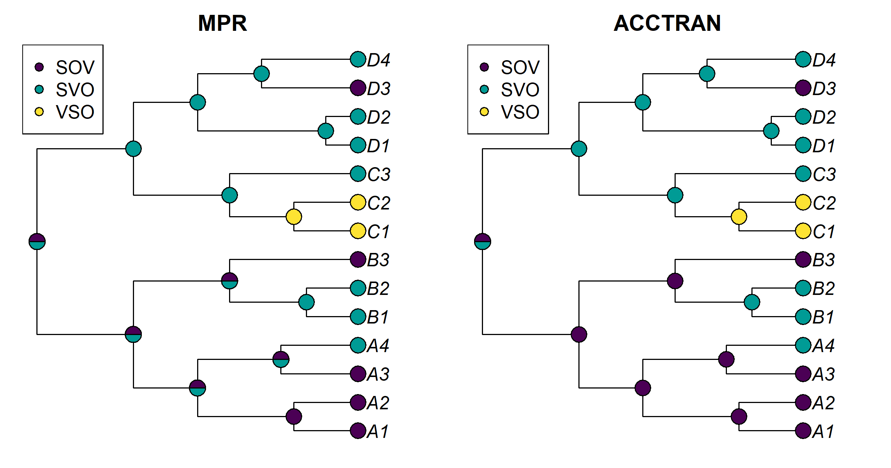
Figure I.12: Most-parsimonious reconstruction sets (MPR, left) and ACCTRAN reconstructions (right) of word order on the toy tree.
Note: in phangorn 2.12, plotAnc() accepts only objects of class "ancestral", which anc_pars() returns. The list returned by ancestral.pars() gives an error, so the plots use anc_pars() with the same type arguments.
MPR leaves five internal nodes ambiguous: the root (15), the ancestor of A and B (16), the ancestor of A (17), and nodes 19 and 20. At each of them both SOV and SVO lie in some most-parsimonious reconstruction. ACCTRAN resolves the four non-root nodes to SOV, because it places the changes as close to the root as possible. It leaves the root itself split between SOV and SVO, so even ACCTRAN does not commit to a root state here. The likelihood reconstruction agrees that these five nodes are the uncertain ones, but it grades them. The root is 0.35/0.42/0.23 (SOV/SVO/VSO), node 16 is 0.49/0.37/0.14, and node 17 is 0.64/0.26/0.09. VSO keeps some probability everywhere, which parsimony rules out. Conversely, nodes that parsimony treats as certain, such as the ancestor of subgroup C (node 23, SVO), are far from certain under the model, which in fact slightly favors VSO there (0.46 against 0.42).
ACCTRAN conveys the least uncertainty: its pies look decisive where the data are not. MPR is honest about which nodes are ambiguous but gives no weights, and it ignores branch lengths. The marginal likelihood reconstruction conveys the uncertainty best, provided it is read as conditional on the ER model and the flat root prior (Sections 12.3.1 and 12.4.2).
Research
1. Design a reconstruction of grammatical gender at the root of a 40-language family with three ancient languages.
A strong answer covers the following.
- Coding. Define gender by agreement (gender is a property of the agreement system, not of noun classes alone). Treat marginal systems explicitly: as a third, intermediate state in an ordered model (none, marginal, full); as tip uncertainty (for example, probability 0.5 for each state); or as polymorphism (Section 12.14). Report how the result changes across codings. Keep the gender character out of the tree inference, to avoid circularity (Section 12.3.1).
- Rate models. Compare ER, ARD (gain and loss separate), an irreversible loss-only model motivated by the typology of gender loss, and hidden-rate models (Beaulieu et al. 2013; Boyko and Beaulieu 2021) by marginal likelihood or AIC. Check first that the character carries signal at all (Section D.2.7).
- Root priors. Compare flat, stationary, FitzJohn (FitzJohn et al. 2009) and fixed roots. Test “gender at the root” by fixing the root in each state and computing a Bayes factor (Pagel et al. 2004). Show the sensitivity as a table, as in Sections D.2.6 and H.5.21.
- Tree uncertainty. Reconstruct at the MRCA of the named group over a posterior sample of dated trees, and report the clade probability (Section 12.15.7). Better still, infer tree and character jointly (Section H.5.14). Integrate over the rates rather than fixing them.
- Ancient languages. Include them as dated tips, or as sampled ancestors where the philology supports it (Section 10.6.4). They break up long branches near the root and are the most informative data for a deep reconstruction (Slater et al. 2012). Check whether the answer depends on them by leaving them out in turn.
- Checks. Posterior predictive checks of the number and placement of changes, and simulations from the fitted model to estimate how often the root state is recovered. Compare with the comparative literature only after choosing the model. Agreement is not evidence for the model (Cathcart 2018). Disagreements should be traced to their source: contact and areal spread of gender (Cathcart et al. 2018), rate heterogeneity among lineages, coding of the marginal systems, or a comparative reconstruction that rests on an assumption the distribution does not support (Section 12.13).
- Conclusion. A probability of gender at the root, reported as a range over defensible models, root treatments and codings, with the tree uncertainty propagated.
2. A methods plan for reconstructing material-culture vocabulary to locate a homeland.
The plan should keep three steps apart (Section 12.2).
- Comparative reconstruction of forms. Establish cognate sets and regular correspondences for the terms for crops, tools and animals. Mark loans by irregular correspondences and by known donor languages; Wanderwörter for cultivated plants and metals are common. Only regular, inherited sets proceed.
- Character-state reconstruction. Use semasiological binary characters (was the cognate set present at the node?) and onomasiological multistate characters (which set expressed ‘plow’ or ‘rye’?), each with its own coding. Reconstruct over a posterior sample of dated trees (Section 12.5). Use Dollo-type or low-gain models for presence, to limit spurious deep reconstructions from parallel gains, and compare reversible models (Section 12.9).
- Model-based form reconstruction (optional), to check that the reconstructed forms are phonologically consistent (Bouchard-Côté et al. 2013).
Semantic change must be modeled or bounded. The presence of a cognate set at a node is not the presence of its modern meaning: words for ‘wheel’ or ‘wool’ may continue earlier words for ‘turn’ or ‘hair’. Code the meaning at each tip, reconstruct the meaning of the set as a separate character, and report P(set present and meant X). Borrowing produces apparent deep sets (advergence; Chang et al. (2015)). Test this by excluding suspected loans, by running sensitivity analyses on doubtful cognacy judgments (Section 3.5.1), and by checking whether a set is confined to geographically adjacent branches.
The results support statements of the form “under model M, coding C and tree sample T, cognate set S was present at node v, with meaning X, with probability p”. They do not support “the speakers of Proto-X cultivated rye”, which needs the archaeological link and a model of semantic change. Nor do they support “the homeland was in region R”, which needs an explicit spatial model (Section 11.1) and must not use the same archaeological evidence twice. The absence of a reconstructable word is not evidence that the referent was absent. Agreement with expert reconstructions (Jäger and List 2018) is a sanity check, not validation.
3. Was the Indo-European augment present in PIE? Rate models, rate priors, root treatments and outside evidence.
- Rate models. ER (one rate); ARD (gain and loss separate); loss-only (augment present at the root and lost in other branches) and gain-only (innovated, possibly more than once); and a hidden-rate model for lineage-specific propensity. Model averaging by reversible jump is an alternative to choosing (Pagel and Meade 2006).
- Rate priors. Exponential priors with different means; a hierarchical prior; and informative priors on the gain/loss ratio (below).
- Root treatments. Flat, stationary, FitzJohn, and fixed present or absent. The fixed roots give a Bayes factor for “present in PIE” (Pagel et al. 2004). All of this goes over a posterior sample of trees, for example from an analysis like that of Chang et al. (2015). Goldstein (2022b) obtained only 0.56 for the absence of the augment in this setting.
- Reporting. A grid of P(augment at the root) for every combination of rate model, rate prior and root treatment, with the marginal likelihood of each model, so that readers can see which choices drive the answer. Section D.2.6 shows the typical pattern for a rare feature: the marginal likelihoods barely discriminate between root treatments, while the root probability moves from 0.46 under a flat prior to 0.27 under a stationary prior. Report the clade probability of any subgroup that unites Greek, Armenian and Indo-Iranian, because the reconstruction depends on it (Olander 2018; Goldstein 2020).
- Outside evidence for an informative prior. The typology of grammaticalization: past-tense prefixes typically arise from adverbs (‘then, formerly’), so gain is directional and plausibly rarer than loss of an optional prefix. Philological evidence: the augment is still optional in Homeric Greek and Vedic, which suggests a recent grammaticalization, and it is absent in Anatolian. Areal evidence on contact among Greek, Armenian and Indo-Iranian bears on parallel or contact-induced gain.
Such priors should be stated, justified independently of the augment itself, and their contribution shown by comparison with vague priors (Section 12.4.5). The argument must not be circular. Using the augment both to define the subgroup and to reconstruct its history settles the answer before the data are consulted.
I.13 Chapter 13: Phylogenetic Comparative Methods in Linguistics
Conceptual
1. The two faces of Galton’s problem, and which one genealogical stratification addresses. The statistical face is that related languages are not independent observations, so a test that treats them as independent overstates the sample size and reports standard errors that are too small. Counting French, Spanish, Portuguese, Italian, Romanian and fifty Romance dialects as separate VO-and-prepositional data points counts one inheritance from late spoken Latin many times over. The inferential face is that even a correctly estimated association may record a historical accident rather than a functional link. If Proto-Bantu happened to be SVO and prepositional, hundreds of Bantu languages show the combination because they retained both features, not because one favors the other; features that spread together through a contact area such as the Balkans are a second example. Genealogical stratification (Section 13.1.3) is aimed at the statistical face. Counting genera instead of languages reduces the inflation of the sample size, though not completely, because genera are themselves related (Figure 13.2). It does not address the inferential face. A correlation that holds across genera can still rest on one deep event inherited by several genera, or on diffusion; the macroarea criterion deals with contact only at a very coarse scale; and discarding all but one language per genus throws away the within-genus changes that are the real evidence of coupled change.
2. “The response shows no phylogenetic signal, so no correction is needed.” The need for a phylogenetic correction depends on the structure of the residuals, not of the response or the predictor taken alone (Revell 2010). A response can show little signal because a strongly inherited predictor and phylogenetically structured residuals partly cancel; once the predictor is in the model, the residuals are as clumped on the tree as ever. Conversely, a response with high \(\hat\lambda\) may need no correction if the predictor explains all of its phylogenetic structure. Two further problems: with a few dozen languages the confidence interval of \(\hat\lambda\) is wide, so \(\hat\lambda \approx 0\) is weak evidence that \(\lambda = 0\); and choosing the model after a pretest on the same data is a forking path that distorts the error rates of the final test. The remedy is to estimate \(\lambda\) jointly with the regression (Section 13.6.2). If the residuals really have no signal, the fit reduces to OLS at little cost.
3. Sixty Bantu languages and five isolates: which carry information about the mean, and which about the rate? (a) For the mean frequency of the feature, what counts is the effective sample size \(n_{\text{eff}} = \mathbf{1}^\top\mathbf{R}^{-1}\mathbf{1}\) (Section 13.2). Sixty closely related languages are strongly correlated and are worth only a handful of independent observations (about seven for the chapter’s 60-language tree under Brownian motion; Computational Exercise 2 below), whereas five unrelated isolates are worth about one each. The five isolates therefore contribute about as much information about the mean as all sixty Bantu languages, and possibly more. (b) For the rate of change the balance is reversed. Rates are estimated from differences between related lineages along branches of known length. An isolate is a single tip with no relative, and in a model with a common rate it says almost nothing about how fast the feature changes (it is informative only, weakly, about the stationary frequency). The Bantu languages, with many short branches and many independent changes, carry nearly all the information about rates. The effective sample size of a mean is therefore the wrong yardstick for questions about change, which is why Cysouw (2011) recommends densely sampled groups for estimating rates.
4. Why a significant Pagel test can rest on one event, and how to find out. If both characters change on a single branch deep in the tree and the new combination is inherited by a large clade, the tips show a perfect association. Under the independent model it is improbable that both characters change on the same branch and nowhere else, whereas the dependent model can make the coupled change likely, so the likelihood ratio is large (chunk pcms-pagel-maddison). But the data then contain one co-occurrence, not dozens (Maddison and FitzJohn 2015). Two analyses reveal the situation. (i) Count the independent origins of the associated states by ancestral state reconstruction or stochastic mapping (Chapter 12) and report on how many separate branches the coupled changes occur. (ii) Drop the largest clades in turn and refit; Computational Exercise 4 below shows that the test cannot even be computed once the one clade is removed. A third option is to compare the dependent model with one that allows a single shift on a particular branch (Uyeda et al. 2018).
5. A DAG for humidity and tone. Let \(H\) be shared history, \(A\) areal contact (spatial proximity), \(L\) latitude, \(W\) humidity, \(T\) tone and \(S\) inclusion in the documented sample. A minimal DAG has the arrows
- \(W \rightarrow T\), the causal claim;
- \(H \rightarrow T\) (tone is inherited) and \(H \rightarrow W\) (descendants of one ancestor tend to live in similar climates, because languages spread with their speakers);
- \(A \rightarrow T\) (tone diffuses between neighbors) and \(A \rightarrow W\) (climate is spatially smooth);
- \(L \rightarrow W\) and \(L \rightarrow A\) (latitude shapes climate and is part of location);
- \(W \rightarrow S \leftarrow T\) (whether and how a language is documented depends on its region and on its tone system).
A spatiophylogenetic regression blocks the back-door path \(W \leftarrow H \rightarrow T\) through its phylogenetic covariance, to the extent that the tree and the model are right, and the path \(W \leftarrow A \rightarrow T\) through its spatial covariance, to the extent that contact decays with distance at the modeled range. Adding latitude as a covariate blocks the paths through \(L\). Three paths remain open: the collider path through \(S\), which is opened by analyzing only documented languages and which no covariance term touches; contact that does not decay smoothly with distance (trade languages, long-distance migration), which the spatial kernel does not represent; and any unmeasured, spatially structured variable acting at another scale. There is also a cost. Because humidity is itself spatially smooth, the spatial term can absorb part of a genuine effect of \(W\), so the estimate depends on the range parameter (Computational Exercise 5).
6. Why a common root implies something about history, and when to prefer a block-diagonal covariance. A tree that joins all families under one node asserts that they share a common ancestor, and the branch lengths above the family roots fix how much shared history the model assumes. Under Brownian motion with zero-length stems from a star root, the covariance between families is zero. But any resolved structure above the families, a root edge, or a transformation such as \(\lambda\), \(\kappa\) or Grafen’s method applied to arbitrary stems reintroduces covariance between unrelated families. In Markov models of discrete features the dependence cannot be avoided: all families start from the same root state, so they are more alike than independent draws from the stationary distribution unless the stems are long enough to reach it. The common root therefore encodes an undemonstrated relationship of a particular age. A block-diagonal covariance (families independent, or a random effect per family) is preferable whenever the relationships among families are not demonstrated, which is nearly always, and in particular when the stems would otherwise receive arbitrary lengths that change the relative weights of large and small families (Section 13.12.2).
Computational
The chapter’s objects are recreated from its seeds. The tree is that of chunk pcms-galton-tree.
suppressPackageStartupMessages({
library(ape); library(phytools); library(geiger); library(nlme)
library(phylolm)
})
set.seed(13)
tree <- pbtree(n = 60, scale = 6) # the chapter's 60-language tree
tree$tip.label <- sprintf("L%02d", 1:60)
tips <- tree$tip.label
cut_tree <- function(tree, height) { # as in pcms-galton-tree
H <- nodeHeights(tree)
crossing <- which(H[, 1] < height & H[, 2] >= height)
grp <- integer(Ntip(tree))
for (k in seq_along(crossing)) {
d <- getDescendants(tree, tree$edge[crossing[k], 2])
grp[d[d <= Ntip(tree)]] <- k
}
setNames(grp, tree$tip.label)
}1. The Galton simulation with OU traits and with 200 languages. Rerunning the loop of pcms-galton-sim four times takes minutes, mostly in fastBM() and summary(lm()). The version below is equivalent and fast. It draws all replicates at once from the multivariate normal distribution that fastBM() samples: covariance \(\mathbf{C}\) under Brownian motion, and the Ornstein-Uhlenbeck covariance with the root fixed at \(\theta = 0\) for fastBM(tree, alpha = 2, theta = 0). It then computes the \(t\)-test of each slope directly. The PGLS is still the chapter’s Brownian-motion GLS.
ou_vcv <- function(tr, alpha) { # covariance of fastBM(tr, alpha, theta = 0)
C <- vcv(tr); d <- diag(C)
exp(-alpha * outer(d, d, "+") + 2 * alpha * C) *
(1 - exp(-2 * alpha * C)) / (2 * alpha)
}
p_slope <- function(Y, X, a = rep(1, nrow(as.matrix(Y)))) {
# p-values of the slope of each column of Y on the same column of X,
# with a as the intercept column (ones, or W %*% 1 for a whitened GLS)
a <- drop(a)
ra <- function(V) V - outer(a, colSums(a * V)) / sum(a^2)
U <- ra(as.matrix(X)); V <- ra(as.matrix(Y))
r <- colSums(U * V) / sqrt(colSums(U^2) * colSums(V^2))
df <- length(a) - 2
2 * pt(-abs(r * sqrt(df / (1 - r^2))), df)
}
galton_fpr <- function(tr, V, nrep = 500) {
n <- Ntip(tr); L <- t(chol(V))
X <- L %*% matrix(rnorm(n * nrep), n) # trait 1, nrep replicates
Y <- L %*% matrix(rnorm(n * nrep), n) # trait 2, independent of 1
W <- chol(solve(vcv(tr))) # BM whitening matrix
g <- tapply(seq_len(n), cut_tree(tr, max(nodeHeights(tr)) - 3.5), `[`, 1)
c(OLS = mean(p_slope(Y, X) < 0.05),
genus = mean(p_slope(Y[g, ], X[g, ]) < 0.05),
PGLS_BM = mean(p_slope(W %*% Y, W %*% X, W %*% rep(1, n)) < 0.05),
genera = length(g))
}
set.seed(131)
tree200 <- pbtree(n = 200, scale = 6)
fpr_tab <- rbind(
`BM, 60 languages` = galton_fpr(tree, vcv(tree)),
`OU, 60 languages` = galton_fpr(tree, ou_vcv(tree, 2)),
`BM, 200 languages` = galton_fpr(tree200, vcv(tree200)),
`OU, 200 languages` = galton_fpr(tree200, ou_vcv(tree200, 2)))
round(fpr_tab, 3)#> OLS genus PGLS_BM genera
#> BM, 60 languages 0.388 0.050 0.064 10
#> OU, 60 languages 0.058 0.046 0.146 10
#> BM, 200 languages 0.600 0.084 0.050 11
#> OU, 200 languages 0.068 0.040 0.142 11With Brownian-motion traits, the picture of Figure 13.2 gets worse as the family grows: OLS rejects a true null hypothesis in about 40% of the replicates with 60 languages and in 60% with 200, because a larger tree contains more pairs of close relatives that duplicate each other’s information. The one-per-genus sample stays near the nominal rate here (5% and 8%), at the price of using only 10 or 11 languages, and PGLS stays close to 5% with all of them. With OU traits (\(\alpha = 2\), a half-life of about 350 years on a 6,000-year tree) the traits have almost no phylogenetic structure, and OLS is roughly right (6% to 7%). The Brownian-motion PGLS, however, rejects in about 15% of the replicates with both tree sizes. It is anti-conservative because it whitens nearly independent data with a covariance matrix that assumes strong dependence, and its standard errors are too small. A phylogenetic correction protects only when its covariance model resembles the structure of the residuals; estimating \(\lambda\) or \(\alpha\) jointly with the regression is the safeguard. In the vocabulary of Section 6.10, the Brownian-motion runs test the robustness of OLS under misspecification and check the calibration of PGLS under its own assumptions (the setting of parameter recovery). The OU runs test the robustness of both methods to a misspecified evolutionary model, which for PGLS is a violation of its own assumption.
2. Effective sample sizes of one family and of ten. A “global” sample of 60 languages is built from ten copies of a six-language family joined at a star root by zero-length stems.
neff <- function(tr, lambda = 1) { # as in pcms-neff
R <- cov2cor(vcv(tr))
R <- lambda * R + (1 - lambda) * diag(nrow(R))
sum(solve(R)) # 1' R^-1 1
}
set.seed(132)
tr6 <- pbtree(n = 6, scale = 6)
fams <- sapply(1:10, function(i) {
t6 <- tr6; t6$tip.label <- paste0("F", i, "_", t6$tip.label)
sub(";$", ":0", write.tree(t6)) # zero-length stem
})
global <- read.tree(text = paste0("(", paste(fams, collapse = ","), ");"))
lam <- c(1, 0.5, 0.1)
neff_tab <- rbind(`one family of 60` = sapply(lam, neff, tr = tree),
`ten families of 6` = sapply(lam, neff, tr = global),
`one family of 6` = sapply(lam, neff, tr = tr6))
colnames(neff_tab) <- paste("lambda =", lam)
round(neff_tab, 1)#> lambda = 1 lambda = 0.5 lambda = 0.1
#> one family of 60 7.0 12.2 32.7
#> ten families of 6 31.1 39.5 53.8
#> one family of 6 3.1 3.9 5.4Sixty languages from one family are worth about 7 independent observations of the mean under Brownian motion. Sixty languages in ten unrelated families of six are worth about 31, ten times the value of one six-language family, because the zero-length stems make the covariance matrix block-diagonal and each family contributes its own information. As \(\lambda\) falls the within-family correlations weaken and both samples approach 60, so the difference shrinks (12 against 39 at \(\lambda = 0.5\), and 33 against 54 at \(\lambda = 0.1\)). This is the design lesson of Section 13.2: for the mean, adding families buys far more than adding languages to a family that is already sampled, and how much more depends on how strongly the feature is inherited.
3. Pooling the lambda model over trees, with more topological noise. The data and tree_sample are those of chunks pcms-pgls-data and pcms-tree-uncertainty-fit; the second sample differs only in moves = 15.
set.seed(43)
logpop <- fastBM(tree, sig2 = 0.4) + 9
resid <- fastBM(rescale(tree, "lambda", 0.7), sig2 = 0.15)
complexity <- 5 - 0.3 * logpop + resid
langs <- data.frame(lang = tips, logpop = logpop[tips],
complexity = complexity[tips], row.names = tips)
make_sample <- function(moves) { # tree_sample, as in the chapter
set.seed(2025)
ts <- phangorn::rNNI(tree, moves = moves, n = 100)
ts <- lapply(ts, function(t) {
t$edge.length <- t$edge.length * rlnorm(length(t$edge.length), 0, 0.25)
t })
class(ts) <- "multiPhylo"; ts
}
pool_lambda <- function(trees) { # Rubin's rules
est <- t(sapply(trees, function(tr) {
f <- phylolm(complexity ~ logpop, data = langs, phy = tr,
model = "lambda")
summary(f)$coefficients["logpop", c("Estimate", "StdErr")]
}))
M <- nrow(est); W <- mean(est[, 2]^2); B <- (1 + 1 / M) * var(est[, 1])
c(slope = mean(est[, 1]), within = W, between = B,
total_se = sqrt(W + B), between_share = B / (W + B))
}
round(rbind(moves_4 = pool_lambda(make_sample(4)),
moves_15 = pool_lambda(make_sample(15))), 4)#> slope within between total_se between_share
#> moves_4 -0.2598 0.016 0.0022 0.1346 0.1187
#> moves_15 -0.2607 0.016 0.0038 0.1405 0.1923The pooled slope of the lambda model is about \(-0.26\), with a total standard error of about 0.13, close to the Brownian-motion result of the chapter. With four NNI moves the between-tree component is about an eighth of the total variance; with fifteen moves it rises to about a fifth, and the total standard error grows accordingly. The within-tree variance hardly changes, because each tree still has 60 languages and similar branch lengths. Topological uncertainty enters the result almost entirely through the between-tree term, the part that a single-tree analysis leaves out.
4. Pagel’s test without the one clade, and its power on 30 languages. The tree and characters are those of pcms-pagel-sim and pcms-pagel-maddison; the clade closest to 40 languages has 46.
states <- c("OV|Po", "OV|Pr", "VO|Po", "VO|Pr")
Qdep <- matrix(0, 4, 4, dimnames = list(states, states))
Qdep["OV|Po", c("OV|Pr", "VO|Po")] <- 0.2
Qdep["VO|Pr", c("VO|Po", "OV|Pr")] <- 0.2
Qdep["OV|Pr", c("OV|Po", "VO|Pr")] <- 2
Qdep["VO|Po", c("VO|Pr", "OV|Po")] <- 2
diag(Qdep) <- -rowSums(Qdep)
set.seed(7)
tree100 <- pbtree(n = 100, scale = 3)
n <- Ntip(tree100)
nodes <- (n + 2):(n + tree100$Nnode)
clade_size <- sapply(nodes, function(nd) sum(getDescendants(tree100, nd) <= n))
stem <- nodes[which.min(abs(clade_size - 40))]
in_clade <- seq_len(n) %in% getDescendants(tree100, stem)
c1 <- setNames(ifelse(in_clade, "VO", "OV"), tree100$tip.label)
c2 <- setNames(ifelse(in_clade, "Pr", "Po"), tree100$tip.label)
rest <- drop.tip(tree100, tree100$tip.label[in_clade])
table(c1[rest$tip.label], c2[rest$tip.label])#>
#> Po
#> OV 54tryCatch(fitPagel(rest, c1[rest$tip.label], c2[rest$tip.label],
method = "ace"),
error = function(e) conditionMessage(e))#> [1] "Only binary characters for x & y currently permitted."Once the 46 languages of the clade are dropped, the remaining 54 are all OV with postpositions. Neither character varies, the test cannot even be computed, and the “significant” association of the chapter is seen to rest entirely on the single pair of changes on the clade’s stem. That is the logic of a drop-the-clade sensitivity analysis.
The power study fits two models per replicate with fitPagel() and takes about two minutes for 100 replicates, so we ran it separately.
pagel_p <- function(n_lang) {
tr <- pbtree(n = n_lang, scale = 3)
j <- sim.Mk(tr, Qdep)
vo <- setNames(ifelse(grepl("^VO", j), "VO", "OV"), names(j))
pr <- setNames(ifelse(grepl("Pr$", j), "Pr", "Po"), names(j))
if (length(unique(vo)) < 2 || length(unique(pr)) < 2) return(NA)
tryCatch(fitPagel(tr, vo, pr, method = "ace")$P, error = function(e) NA)
}
set.seed(134)
p30 <- replicate(100, pagel_p(30))
c(not_testable = sum(is.na(p30)),
power_testable = mean(p30 < 0.05, na.rm = TRUE),
power_all = sum(p30 < 0.05, na.rm = TRUE) / 100)In our run, 2 of the 100 replicates could not be tested (in one or both characters all 30 languages were alike, or the fit failed), and the test rejected independence at the 5% level in 82 of the 100 (84% of the testable ones). Thirty languages are enough here because the dependence in Qdep is very strong (rates out of the disharmonic states are ten times those out of the harmonic ones) and the characters change often on a tree of depth 3. With weaker dependence or slower change the power falls quickly, so a non-significant Pagel test on a small family is weak evidence of independence; and, as the first part shows, a significant one may still rest on very few changes.
5. Sensitivity of the variance shares to the spatial range. A quick, deterministic way to see the effect is the maximum-likelihood fit of Section D.3.9, refitted with the range set to 0.3, 1 and 3. The simulated trait is that of pcms-spatial-sim.
C <- vcv(tree)
set.seed(99) # as in pcms-spatial-sim
lon <- fastBM(tree, sig2 = 1) + rnorm(Ntip(tree), 0, 0.3)
lat <- fastBM(tree, sig2 = 1) + rnorm(Ntip(tree), 0, 0.3)
D <- as.matrix(dist(cbind(lon, lat)))
S <- exp(-D / 1)
L_s <- t(chol(S + diag(1e-8, nrow(S))))
a_phy <- fastBM(tree, sig2 = 1 / max(diag(C)))
s_sp <- drop(L_s %*% rnorm(Ntip(tree)))
trait <- 0.8 * a_phy + 0.8 * s_sp + rnorm(Ntip(tree), 0, 0.5)
negloglik <- function(logv, comps, y) { # as in tech-pcms-spatial
V <- Reduce(`+`, Map(`*`, exp(logv), comps))
R <- chol(V); Xm <- matrix(1, length(y), 1)
Ri <- backsolve(R, diag(length(y))); Vinv <- Ri %*% t(Ri)
b <- solve(t(Xm) %*% Vinv %*% Xm, t(Xm) %*% Vinv %*% y)
r <- y - Xm %*% b
0.5 * (2 * sum(log(diag(R))) + t(r) %*% Vinv %*% r +
length(y) * log(2 * pi))
}
ml_shares <- sapply(c(`range 0.3` = 0.3, `range 1` = 1, `range 3` = 3),
function(rho) {
comps <- list(C / max(diag(C)), exp(-D / rho), diag(Ntip(tree)))
o <- optim(rep(log(0.3), 3), negloglik, comps = comps, y = trait[tips])
c(setNames(exp(o$par) / sum(exp(o$par)), c("phylo", "space", "noise")),
logLik = -o$value)
})
round(ml_shares, 2)#> range 0.3 range 1 range 3
#> phylo 0.37 0.37 0.30
#> space 0.63 0.63 0.63
#> noise 0.00 0.00 0.07
#> logLik -85.48 -82.59 -83.10The Bayesian refits use the chapter’s MCMCglmm model with S and Sinv recomputed for each range, and, for the range that fails, two conventional priors in place of the parameter-expanded one. Each fit takes about 15 seconds; we ran them separately.
library(MCMCglmm)
Ainv <- inverseA(tree, nodes = "TIPS", scale = TRUE)$Ainv
dsp <- data.frame(lang = tips, lang_sp = tips, y = trait[tips])
px <- list(V = 1, nu = 1, alpha.mu = 0, alpha.V = 1000)
prior_px <- list(G = list(G1 = px, G2 = px), R = list(V = 1, nu = 0.002))
ig <- list(V = 1, nu = 0.002)
prior_ig <- list(G = list(G1 = ig, G2 = ig), R = ig)
iw <- list(V = 1, nu = 1)
prior_iw <- list(G = list(G1 = iw, G2 = iw), R = iw)
fit_range <- function(rho, prior) {
Sr <- exp(-D / rho)
Sinv <- as(solve(Sr + diag(1e-6, nrow(Sr))), "CsparseMatrix")
dimnames(Sinv) <- list(tips, tips)
set.seed(1)
m <- try(MCMCglmm(y ~ 1, random = ~lang + lang_sp, data = dsp,
prior = prior,
ginverse = list(lang = Ainv, lang_sp = Sinv),
nitt = 33000, burnin = 3000, thin = 30,
verbose = FALSE), silent = TRUE)
if (inherits(m, "try-error")) return("fit failed")
share <- m$VCV / rowSums(m$VCV)
colnames(share) <- c("phylo", "space", "noise")
round(rbind(mean = colMeans(share), t(HPDinterval(share))), 2)
}
list(range_0.3 = fit_range(0.3, prior_px),
range_1 = fit_range(1, prior_px),
range_3 = fit_range(3, prior_px),
range_3_inverse_gamma = fit_range(3, prior_ig),
range_3_inverse_wishart_nu1 = fit_range(3, prior_iw))Posterior means of the variance shares, with 95% HPD intervals, from our run:
| range | prior | phylogeny | space | noise |
|---|---|---|---|---|
| 0.3 | parameter-expanded (chapter) | 0.37 (0.00 to 0.74) | 0.54 (0.00 to 0.92) | 0.09 (0.00 to 0.39) |
| 1 | parameter-expanded (chapter) | 0.38 (0.00 to 0.90) | 0.57 (0.07 to 1.00) | 0.06 (0.00 to 0.31) |
| 3 | parameter-expanded (chapter) | fit failed (“mixed model equations singular”) | ||
| 3 | inverse gamma, \(\nu = 0.002\) | 0.02 (0.00 to 0.07) | 0.98 (0.92 to 1.00) | 0.00 (0.00 to 0.02) |
| 3 | inverse Wishart, \(\nu = 1\) | 0.04 (0.00 to 0.11) | 0.94 (0.84 to 1.00) | 0.02 (0.00 to 0.06) |
The true shares are 0.42, 0.42 and 0.16. By maximum likelihood the shares hardly change between ranges 0.3 and 1, and the log-likelihood barely separates ranges 1 and 3. The Bayesian fits tell a different story at the longest range. With range 3 the spatial correlation decays so slowly that, because the locations themselves were inherited along the tree, the spatial matrix becomes a smoothed version of the phylogenetic one; the chapter’s prior then fails altogether, and two conventional priors attribute almost all the structured variance to space. The variance shares are therefore conditional on the range parameter and on the prior, and when phylogeny and space are confounded they are close to unidentified. Reporting such shares responsibly means estimating the range (or profiling over it), showing the full posterior, reporting the prior, and checking how the shares change under alternative ranges and priors, as Skirgård et al. (2023) did for Grambank features.
6. When can two collinear predictors be told apart? For each setting we rerun pcms-collinear with its seed, so that \(x_1\) and the shape of the independent part of \(x_2\) stay the same and only the variance of that part changes.
collinear_fit <- function(s2, fit) {
x1 <- fastBM(tree, sig2 = 0.4)
x2 <- x1 + fastBM(tree, sig2 = s2)
y <- 1 + 0.3 * x1 + 0.3 * x2 +
fastBM(rescale(tree, "lambda", 0.7), sig2 = 0.15)
d2 <- data.frame(lang = tips, x1 = x1[tips], x2 = x2[tips], y = y[tips],
row.names = tips)
m1 <- fit(y ~ x1, d2); m2 <- fit(y ~ x2, d2); mb <- fit(y ~ x1 + x2, d2)
se <- sqrt(diag(vcov(mb)))[c("x1", "x2")]
c(r = cor(d2$x1, d2$x2), se_x1 = se[[1]], se_x2 = se[[2]],
dAIC_joint = AIC(mb) - min(AIC(m1), AIC(m2)))
}
fit_lam <- function(f, d2) gls(f, data = d2, method = "ML",
correlation = corPagel(0.5, phy = tree, form = ~lang))
round(sapply(c(sig2_0.05 = 0.05, sig2_0.2 = 0.2, sig2_1 = 1), function(s) {
set.seed(7); collinear_fit(s, fit_lam) }), 3)#> sig2_0.05 sig2_0.2 sig2_1
#> r 0.991 0.969 0.898
#> se_x1 0.408 0.235 0.152
#> se_x2 0.369 0.185 0.083
#> dAIC_joint 1.989 1.492 -1.707In this one dataset, the correlation between the predictors falls from 0.99 to 0.97 and then 0.90 as the independent part grows; the standard errors of the two slopes in the joint model shrink from about 0.4 to about 0.2 and then 0.1; and the joint model, which is the true model, goes from being penalized by AIC (a positive \(\Delta\)AIC) to being preferred by 1.7 units. One dataset is a noisy guide, so we repeat the analysis with 20 datasets per setting. For speed and numerical stability (gls() with corPagel() occasionally fails to converge on these data) the replicates are fitted with phylolm(), which fits the same lambda model.
fit_pl <- function(f, d2) phylolm(f, data = d2, phy = tree, model = "lambda")
set.seed(136)
rep_col <- sapply(c(sig2_0.05 = 0.05, sig2_0.2 = 0.2, sig2_1 = 1),
function(s) {
r <- replicate(20, collinear_fit(s, fit_pl))
c(rowMeans(r), joint_best = mean(r["dAIC_joint", ] < 0),
joint_best_by_2 = mean(r["dAIC_joint", ] < -2))
})
round(rep_col, 3)#> sig2_0.05 sig2_0.2 sig2_1
#> r 0.945 0.817 0.542
#> se_x1 0.299 0.183 0.126
#> se_x2 0.279 0.150 0.065
#> dAIC_joint 1.485 0.441 -4.194
#> joint_best 0.050 0.200 0.850
#> joint_best_by_2 0.000 0.100 0.700On average the predictors are correlated at about 0.95, 0.8 and 0.55 in the three settings. The joint model has the lowest AIC in about 5% of the datasets at \(r \approx 0.95\), in about 20% at \(r \approx 0.8\), and in about 85% at \(r \approx 0.55\). With 60 related languages and effects of this size (0.3 each), the two effects can be told apart reliably only when the correlation between the predictors is below roughly 0.6 to 0.7; at higher correlations the data support the joint effect but not its division. Because the predictors are inherited, much of their variation is shared within clades, so the number of independent contrasts that separate them is smaller than the raw correlation suggests.
Research
1. Do languages with many L2 speakers have fewer case markers? A Grambank design. A strong design first states the target: an evolutionary association, that is, whether lineages that acquire many L2 speakers tend to lose case. Sampling frame and exclusions: Grambank (Skirgård et al. 2023) matched to Glottolog (Hammarström et al. 2024), excluding sign languages, pidgins and creoles (whose histories violate the tree model) and languages without L2 estimates, with the rules fixed before the data are inspected. Trees: family-level posterior samples where they exist, otherwise a global tree inferred from lexical data (Jäger 2018), with Glottolog topologies under several branch-length schemes as a sensitivity analysis (Section 13.12.2), and families joined by a star or treated as independent blocks. Tree uncertainty: fit the model on 50 to 100 trees and pool with Rubin’s rules (Nakagawa and Villemereuil 2019), or integrate over trees in a Bayesian PGLMM. Space: a Gaussian-process or spatial random effect (Guzmán Naranjo and Becker 2022), plus a random effect for macroarea. Response: coded in advance from the relevant Grambank features, as the number of case distinctions (ordinal) or the presence of case (binary), with the alternative coding reported. Missing data and documentation bias: L2 proportions are poorly measured and more often missing for small, poorly documented languages, so missingness is modeled (multiple imputation within the phylogenetic model) or at least tested for association with documentation level, and measurement error in the predictor is acknowledged as biasing the slope toward zero. Pre-registered sensitivity analyses: branch-length schemes; with and without the spatial term; leaving out each large family; alternative codings of case and of L2 proportion; family-by-family estimates; and a count of independent changes in case marking, so that a result driven by one or two lineages is visible (Maddison and FitzJohn 2015). The history of this question shows how conclusions changed as the controls improved (Bentz and Winter 2013; Koplenig 2019; Shcherbakova et al. 2023).
2. A claimed universal re-examined in one family of 80 languages. Such an analysis can show whether the dependency operates in that lineage, if the family contains enough independent changes in both features. It cannot show that the dependency is universal, and a null result may only reflect too little variation, as in a family that is almost uniformly VO and prepositional (Dryer 2011; Levy and Daumé III 2011). A hierarchical model pools the family with others. For each family \(f\), the rates of the dependent four-state model, or the dependence coefficient \(\beta^{(f)}\) of a threshold or logistic PGLMM, are drawn from a common distribution, for example \(\beta^{(f)} \sim \mathcal{N}(\beta, \tau^2)\), and the model is fitted over posterior samples of each family’s trees. The universal tendency is \(\beta\), and the between-family standard deviation \(\tau\) measures lineage specificity (Croft et al. 2011; Jäger and Wahle 2021). Evidence for a lineage-specific rather than universal dependency would be a posterior for \(\tau\) clearly away from zero, with family-level effects of opposite sign that are each well estimated (not merely a few families with wide intervals), and a model with family-specific parameters preferred over the shared model by cross-validation or marginal likelihood. A universal tendency would show \(\beta\) away from zero with small \(\tau\). The analysis should also report the number of independent changes in each family, so that families that carry no information are recognized as such (Dunn et al. 2011; Bickel 2013).
3. A multi-pronged test of an environmental claim. Take the claim that humidity favors complex tone (Everett et al. 2015). In the spirit of Roberts (2018), a test would combine four prongs. (i) A comparative analysis with phylogenetic and spatial terms, with predictor and covariates fixed in advance, run family by family and globally, and counting the independent gains and losses of tone that coincide with changes in climate along dated branches; this answers the objections of Hammarström (2016) and Collins (2016). (ii) A within-family test where the predictor varies, for example a family that spread across climatic zones, in which the hypothesis predicts higher rates of tone loss in lineages that moved into dry regions, a directional prediction about rates rather than a cross-sectional correlation. (iii) Experimental evidence on the mechanism: whether dry air measurably reduces the precision of pitch production in speakers of tone languages, and whether an effect of that size biases transmission in an iterated-learning experiment. (iv) A simulation of transmission on real trees, asking how large a per-generation bias is needed to produce the observed global pattern, which links the experimental effect size to the comparative one. The claim would gain support only if the prongs agree; a mechanism without a comparative signal, or a correlation without a plausible effect size, leaves it open. The debate over ejectives and altitude (Everett 2013; Urban and Moran 2021) and the labiodental study of Blasi et al. (2019) show how such lines of evidence can be combined.
I.14 Chapter 14: Language Trees as Scaffolds for Cultural Evolution
Conceptual
1. When is a language tree a good estimate of the history of residence rules, and when a poor one? It is good where residence norms are learned in the same communities and through the same channels as the language, and where communities split and then stay apart. The settlement of Remote Oceania is the standard case: small groups colonized empty islands carrying their language and their kin organization together, and later contact between islands was limited, so the history of residence rules plausibly follows the language tree (Section 14.2). It is poor where marriage itself moves people across language boundaries, or where residence is tied to an economy that spreads by diffusion. In a region of linguistic exogamy, such as the northwest Amazon, spouses routinely come from groups that speak other languages, so residence practices circulate among unrelated lineages. In East Africa, the adoption of cattle-centerd economies by neighboring Bantu, Nilotic and Cushitic speakers could spread patrilocal residence across family boundaries without any change of language. In both cases the trait’s history is a network of contacts that the language tree does not represent, and a reconstruction on the tree would misplace its changes.
2. A society that shifted language but kept matrilineal descent. On the language tree the society sits inside the clade of the language it adopted, among patrilineal relatives, so a reconstruction of descent shows a gain of matriliny on its terminal branch (or, if it sits deeper, pulls the reconstructed state of a few internal nodes toward matriliny). What is really a retention from a different lineage appears as an innovation, and the model’s estimated rate of gaining matriliny rises. In a test of coevolution with cattle keeping, the society is placed in the wrong history. If it kept cattle along with its new neighbors, it appears as a matrilineal cattle-keeping society that “gained” matriliny in the presence of cattle, which weakens the inferred dependence. If it lacked cattle in a cattle-keeping clade, it appears as a lineage in which the loss of cattle and the gain of matriliny happened together on one branch, an apparently independent instance of coupled change that in fact reflects a single shift of language. Either way the language tree misrepresents the trait’s descent, and the error can bias the test in either direction (Section 14.13).
3. Why kinship terminologies and color terms track the language tree better than crafts or religion. Kinship terms and color terms are part of the vocabulary and its semantic organization. They are learned in childhood, from the same caregivers and peers and in the same act of learning as the rest of the language, so they share the language’s channel of transmission. Crafts are often learned later, through apprenticeship that may cross community boundaries, and they spread with trade and technology; religious practices are taught by specialists, spread by conversion and institutions, and the world religions crossed language boundaries on a vast scale. The implication is that cultural phylogenetics on language trees is best suited to domains transmitted vertically within the speech community (semantic systems, kinship terminology, perhaps descent rules and oral traditions) and least suited to material culture, technology, subsistence and religion, where co-transmission with language must be tested trait by trait before a language tree is used (Jordan and Shennan 2003; Learmouth et al. 2024).
4. Incomplete lineage sorting of cultural variation. If an ancestral community was polymorphic for a trait (some households matrilocal and some patrilocal, or two variants of a ritual) and the variation persisted through several splits, the daughter communities could each fix one variant by chance. Which variant a lineage keeps is then not determined by the order of splitting, just as which gene copy a species keeps is not determined by the species tree. The pattern on the language tree is a distribution of states that conflicts with the tree: two communities that are not sisters share a variant that their closest relatives lack, which a Markov model reads as parallel gains or reversals and therefore as a high rate of change. The signature is strongest where internal branches are short relative to the time a variant persists in a community, as in rapid expansions. Like ILS in biology, and unlike borrowing, sorting produces the two possible discordant patterns of a triplet with equal frequency (Section 16.4.1).
5. Why borrowing from close relatives barely affects PGLS while borrowing from unrelated neighbors does. PGLS assumes that the residual covariance is proportional to \(\mathbf{C}\). Partial copying with weight \(h\) from partner \(j\) replaces the trait vector \(\mathbf{v}\) by \(\mathbf{B}\mathbf{v}\), with \(\mathbf{B} = (1-h)\mathbf{I} + h\mathbf{P}\), where \(\mathbf{P}\) maps each society to its partner, so the true covariance becomes \(\mathbf{B}\mathbf{C}\mathbf{B}^\top\) (Section D.4.1). When the partner is the closest relative, \(C_{ij}\) is already large, so borrowing mostly increases covariances that \(\mathbf{C}\) already contains; \(\mathbf{B}\mathbf{C}\mathbf{B}^\top\) stays close to a multiple of \(\mathbf{C}\), and whitening with \(\mathbf{C}\) still removes most of the dependence. When the partner is an unrelated neighbor, \(C_{ij}\) is near zero, and borrowing creates large covariances exactly where the model assumes none. PGLS then treats each borrowing pair as two independent observations, overstates the information in the data and underestimates the standard errors, just as OLS does for relatives.
Computational
The residence data and the mock posterior are those of chunks cultural-traits-residence and cultural-traits-residence-trees.
suppressPackageStartupMessages({library(ape); library(phytools)})
set.seed(101)
atree <- pbtree(n = 50, scale = 5)
atree$tip.label <- sprintf("S%02d", 1:50)
Qres <- matrix(c(-0.3, 0.3, 0.05, -0.05), 2, 2, byrow = TRUE,
dimnames = list(c("M", "P"), c("M", "P")))
res <- sim.history(atree, Qres, anc = "M", message = FALSE)$states
set.seed(102)
post_a <- phangorn::rNNI(atree, moves = 6, n = 50)
post_a <- lapply(post_a, function(t) {
t$edge.length <- t$edge.length * rlnorm(nrow(t$edge), 0, 0.3); t })
class(post_a) <- "multiPhylo"
mcc_a <- phangorn::maxCladeCred(post_a)1. Root reconstructions under the ER model and with the FitzJohn root prior. We summarize the probability of a matrilocal root over the 50 trees, and on the MCC tree, for the ER model.
root_M_ace <- function(t, model)
ace(res[t$tip.label], t, type = "discrete", model = model)$lik.anc[1, "M"]
spread <- function(f) {
v <- sapply(post_a, f)
c(MCC_tree = f(mcc_a), mean = mean(v), sd = sd(v), min = min(v),
max = max(v), share_M_favored = mean(v > 0.5))
}
round(spread(function(t) root_M_ace(t, "ER")), 3)#> MCC_tree mean sd min
#> 0.413 0.216 0.134 0.021
#> max share_M_favored
#> 0.508 0.020phytools::fitMk() with pi = "fitzjohn" takes several seconds per tree in the version we used, so the FitzJohn summary, together with the chapter’s ARD model for comparison, was run separately.
root_M_fitz <- function(t) {
f <- fitMk(t, res[t$tip.label], model = "ARD", pi = "fitzjohn")
ancr(f)$ace[1, "M"]
}
round(cbind(ARD = spread(function(t) root_M_ace(t, "ARD")),
ARD_fitzjohn = spread(root_M_fitz)), 3)The run gave the following probabilities of a matrilocal root (the first column reproduces the chapter’s ARD analysis):
| summary | ARD, equal root weights | ARD, FitzJohn root prior |
|---|---|---|
| MCC tree | 1.000 | 1.000 |
| mean over the 50 trees | 0.696 | 0.663 |
| standard deviation | 0.362 | 0.447 |
| minimum | 0.038 | 0.000 |
| maximum | 1.000 | 1.000 |
| share of trees favoring M | 0.66 | 0.66 |
Under the ER model the root is reconstructed as patrilocal on 49 of the 50 trees: with a single rate, the model can only follow the majority of the tips (two-thirds patrilocal), and the probability of a matrilocal root varies moderately across trees (between about 0.02 and 0.5), never reaching certainty. The ARD model, as in the chapter, is certain on many trees, but on different trees in opposite directions. The reason is the boundary estimate. When the rate of regaining matrilocality is estimated at zero, every matrilocal society must descend from a matrilocal ancestor, so the root is matrilocal with probability 1; when the data on a particular tree are better explained by the opposite irreversible model, the root becomes patrilocal with near certainty. The FitzJohn root prior, which weights the root states by their own conditional likelihoods, sharpens this further: on the true tree the fitted model has \(q_{P \to M} = 0\) and a root prior of \((1, 0)\), and over the sample the reconstructions are pushed to 0 or 1, so that the standard deviation across trees is larger than under the equal-weight prior. The MCC tree hides all of this: on it, both ARD versions give a matrilocal root with probability 1. Boundary estimates thus turn a weakly identified rate into a spuriously certain reconstruction, and only integrating over trees (and, in a Bayesian analysis, over rates) shows how unstable the answer is.
2. Borrowing from the nearest neighbor when locations evolve on the tree. The simulation of cultural-traits-horizontal is repeated with a third scenario in which each coordinate evolves by Brownian motion on the tree. As in Computational Exercise 1 of Chapter 13, all replicates are drawn at once from the multivariate normal distribution that fastBM() samples, which makes the three scenarios fast; p_slope() is the function defined there.
set.seed(12) # as in the chapter
htree <- pbtree(n = 60, scale = 5)
htree$tip.label <- sprintf("S%02d", 1:60)
Wh <- chol(solve(vcv(htree)))
patr <- cophenetic(htree); diag(patr) <- Inf
partner_relative <- apply(patr, 1, which.min)
geo <- as.matrix(dist(matrix(runif(120), 60, 2))); diag(geo) <- Inf
partner_geographic <- apply(geo, 1, which.min)
set.seed(142)
xy <- cbind(fastBM(htree), fastBM(htree)) # locations inherited on tree
geo_bm <- as.matrix(dist(xy)); diag(geo_bm) <- Inf
partner_bm <- apply(geo_bm, 1, which.min)
run_fast <- function(nn, h_levels = c(0, 0.1, 0.2, 0.3), nrep = 300) {
n <- Ntip(htree); L <- t(chol(vcv(htree)))
t(sapply(h_levels, function(h) {
B <- (1 - h) * diag(n)
B[cbind(1:n, nn)] <- B[cbind(1:n, nn)] + h # partial copying
X <- B %*% L %*% matrix(rnorm(n * nrep), n)
Y <- B %*% L %*% matrix(rnorm(n * nrep), n)
c(partner_distance = mean(patr[cbind(1:n, nn)]), borrowing = h,
FPR_OLS = mean(p_slope(Y, X) < 0.05),
FPR_PGLS = mean(p_slope(Wh %*% Y, Wh %*% X, Wh %*% rep(1, n)) < 0.05))
}))
}
set.seed(143)
sim_h3 <- rbind(run_fast(partner_relative), run_fast(partner_bm),
run_fast(partner_geographic))
rownames(sim_h3) <- paste(rep(c("relative", "BM space", "random space"),
each = 4), sim_h3[, "borrowing"])
round(sim_h3, 2)#> partner_distance borrowing FPR_OLS FPR_PGLS
#> relative 0 0.80 0.0 0.50 0.05
#> relative 0.1 0.80 0.1 0.61 0.07
#> relative 0.2 0.80 0.2 0.55 0.06
#> relative 0.3 0.80 0.3 0.57 0.10
#> BM space 0 5.35 0.0 0.56 0.05
#> BM space 0.1 5.35 0.1 0.54 0.10
#> BM space 0.2 5.35 0.2 0.57 0.33
#> BM space 0.3 5.35 0.3 0.62 0.47
#> random space 0 7.39 0.0 0.51 0.04
#> random space 0.1 7.39 0.1 0.53 0.15
#> random space 0.2 7.39 0.2 0.54 0.41
#> random space 0.3 7.39 0.3 0.52 0.54#> BM_partner_is_closest_relative
#> 0.1833Locations inherited by Brownian motion put the false positive rate of PGLS between the two scenarios of the chapter, but much closer to that of unrelated neighbors: at the highest level of borrowing it is 0.47, against 0.10 when societies borrow from their closest relatives and 0.54 when locations are unrelated to the tree. The first column shows why. With coordinates evolving at this rate, the nearest neighbor in space is the closest relative for fewer than one society in five, and the mean patristic distance to the contact partner (5.4 thousand years, summed along both lineages) is far closer to that of a random neighbor (7.4) than to that of the closest relative (0.8). What matters for PGLS is not whether locations are inherited but how much shared history separates a society from the partner it borrows from; inherited locations limit the damage only insofar as neighbors are close relatives. OLS, which ignores the tree, is inflated about equally in all three scenarios.
3. Does a trait’s signal identify the tree on which it evolved? The two trees are those of cultural-traits-tanglegram. A binary trait is simulated on the genetic tree, and its fit is compared on the genetic tree, the language tree and a star tree of the same depth, using the maximized log-likelihood of an equal-rates Mk model. Fitting 600 models one at a time with fitMk() takes several minutes, so the function below computes the pruning likelihood of all simulated traits at once over a fine grid of rates and takes the maximum for each trait; the first line of output checks it against fitMk() for one trait.
set.seed(3) # as in the chapter
ltree <- pbtree(n = 30, scale = 5)
ltree$tip.label <- sprintf("S%02d", 1:30)
gtree <- phangorn::rNNI(ltree, moves = 3)
far <- names(sort(cophenetic(ltree)["S07", ], decreasing = TRUE))[1]
ltree_shift <- drop.tip(ltree, "S07")
pos <- which(ltree_shift$tip.label == far)
ltree_shift <- bind.tip(ltree_shift, "S07", where = pos, position = 0.3)
star <- stree(30, tip.label = gtree$tip.label)
star$edge.length <- rep(5, 30)
er_loglik <- function(tr, Z, q_grid = exp(seq(log(0.002), log(20),
length.out = 120))) {
# ER Mk log-likelihood of each column of Z (states "a"/"b"), maximized
# over q_grid; equal root weights, as in fitMk(); polytomies allowed
tr <- reorder(tr, "postorder"); n <- Ntip(tr)
Z <- Z[tr$tip.label, , drop = FALSE]
ll <- sapply(q_grid, function(q) {
A <- B <- matrix(1, n + tr$Nnode, ncol(Z))
A[1:n, ] <- Z == "a"; B[1:n, ] <- Z == "b"
for (e in seq_len(nrow(tr$edge))) {
pa <- tr$edge[e, 1]; ch <- tr$edge[e, 2]
s <- 0.5 * (1 + exp(-2 * q * tr$edge.length[e]))
A[pa, ] <- A[pa, ] * (s * A[ch, ] + (1 - s) * B[ch, ])
B[pa, ] <- B[pa, ] * ((1 - s) * A[ch, ] + s * B[ch, ])
}
log(0.5 * A[n + 1, ] + 0.5 * B[n + 1, ])
})
apply(matrix(ll, ncol = length(q_grid)), 1, max)
}
Q_er <- function(q) matrix(c(-q, q, q, -q), 2, 2,
dimnames = list(c("a", "b"), c("a", "b")))
set.seed(144)
z1 <- sim.Mk(gtree, Q_er(0.5))
c(grid = er_loglik(gtree, matrix(as.character(z1),
dimnames = list(names(z1), NULL))),
fitMk = as.numeric(logLik(fitMk(gtree, z1, model = "ER"))))#> grid fitMk
#> -17.02 -17.02sig_tab <- sapply(c(slow_0.1 = 0.1, fast_0.5 = 0.5), function(q) {
Z <- sapply(1:200, function(i) as.character(sim.Mk(gtree, Q_er(q))[
gtree$tip.label]))
rownames(Z) <- gtree$tip.label
Z <- Z[, apply(Z, 2, function(z) length(unique(z)) == 2)]
ll <- sapply(list(gene = gtree, language = ltree_shift, star = star),
er_loglik, Z = Z)
c(variable_traits = nrow(ll),
signal_on_language_tree = mean(ll[, "language"] - ll[, "star"] > 1.92),
gene_tree_fits_better = mean(ll[, "gene"] > ll[, "language"]),
mean_logL_gain_gene = mean(ll[, "gene"] - ll[, "language"]))
})
round(sig_tab, 2)#> slow_0.1 fast_0.5
#> variable_traits 199.00 200.00
#> signal_on_language_tree 0.58 0.31
#> gene_tree_fits_better 0.58 0.56
#> mean_logL_gain_gene 1.18 0.17The grid maximum reproduces the log-likelihood of fitMk(). For a slowly evolving trait (rate 0.1 per millennium) the trait shows significant signal on the language tree (a likelihood-ratio test against the star tree) in about 58% of the simulations, yet the genetic tree, on which it actually evolved, fits better in only about 58% of them, with an average advantage of about one log-likelihood unit. For a faster trait (rate 0.5), signal is detected less often (31%) and the two trees are almost indistinguishable (56%). The trees share most of their clades, and a single binary character carries too little information to tell them apart: a trait can show clear phylogenetic signal on the language tree without having evolved on it. Signal shows that related societies are similar, not that the language tree is the trait’s history; deciding which scaffold a trait followed needs many traits, or targeted tests of the societies on which the trees disagree (here S07).
4. The political-complexity test with 30 societies. The rate matrix and the three constrained models are those of cultural-traits-political. The 150 model fits take about half a minute.
lev <- c("0", "1", "2", "3")
Qpol <- matrix(0, 4, 4, dimnames = list(lev, lev))
for (i in 1:3) Qpol[i, i + 1] <- 0.4
for (i in 2:4) Qpol[i, 1:(i - 1)] <- 0.15
diag(Qpol) <- -rowSums(Qpol)
idx <- function(m) matrix(m, 4, 4, byrow = TRUE, dimnames = list(lev, lev))
models <- list(
stepwise = idx(c(0,1,0,0, 2,0,1,0, 0,2,0,1, 0,0,2,0)),
up_step_down_any = idx(c(0,1,0,0, 2,0,1,0, 2,2,0,1, 2,2,2,0)),
any_jump = idx(c(0,1,1,1, 2,0,1,1, 2,2,0,1, 2,2,2,0)))
best_model <- function(n_soc) {
tr <- pbtree(n = n_soc, scale = 5)
pol <- sim.Mk(tr, Qpol, anc = "0")
aic <- sapply(models, function(m) tryCatch(
AIC(ace(pol, tr, type = "discrete", model = m)),
error = function(e) NA))
names(which.min(aic))
}
set.seed(145)
best30 <- replicate(50, best_model(30))
table(factor(best30, levels = names(models))) / 50#>
#> stepwise up_step_down_any any_jump
#> 0.20 0.46 0.32With 30 societies the generating model (increases one step at a time, decreases by any number of steps) is preferred by AIC in fewer than half of the 50 replicates; the any-jump model wins in about a third and the fully stepwise model in a fifth. The constrained models differ in a few transitions that happen rarely, and with 30 societies the data contain only a handful of such events. A run with the chapter’s 84 societies (20 replicates) shows how much a larger sample helps.
set.seed(146)
best84 <- replicate(20, best_model(84))
table(factor(best84, levels = names(models))) / 20#>
#> stepwise up_step_down_any any_jump
#> 0.15 0.65 0.20With 84 societies the generating model is preferred in about two thirds of the replicates, a clear improvement but still far from certainty. Constrained models that differ only in rare transitions need large samples to be told apart (Currie, Greenhill, Gray, et al. (2010) found two models with similar support in 84 Austronesian societies), and the uncertainty of the trees, ignored here, adds to the problem. Before a model comparison of this kind is interpreted, its power at the sample size in hand should be checked by simulation, as here.
Research
1. Did plow agriculture lead to the loss of matrilineal descent where several families meet? Scaffold: because several families are involved, a single language tree cannot represent the history of all the societies; use family-level posterior samples of language trees joined as independent blocks, and, where genetic data exist, a population tree as an alternative scaffold (Barbieri et al. 2022). Results that hold on both scaffolds are more credible; disagreements locate language shift (Section 14.13). Shift and diffusion: identify societies with documented or genetically suggested language shift and analyze them on both trees, or drop them as a sensitivity test; plows and crops spread between neighbors irrespective of language, so the predictor needs a spatial or neighbor-graph component (Towner et al. 2012). Phylogenetic versus spatial models: compare a dependent Pagel-type model on the trees with models that add a spatial term, and test whether plow use and descent show more signal on the trees or in space, trait by trait, as Silva and Tehrani (2016) did for folktales. Integration over trees: fit all models over the posterior samples (BayesTraits-style, or a pooled frequentist analysis) and report the spread, never only an MCC tree (Section 14.15.2). Directionality: the hypothesis is directional, so compare the rate of losing matriliny with and without the plow (\(q\) for Mat to Pat given plow versus no plow) and the reverse dependence, and count the independent origins of the plow-and-patrilineal combination, since a single expansion could produce the whole association (Maddison and FitzJohn 2015; Holden and Mace 2003). Coding: take descent and plow use from the Ethnographic Atlas through D-PLACE (Murdock 1967; Kirby et al. 2016), decide in advance how to treat double descent and ambilineal systems, check the sources for the societies whose coding drives the result, and record the dates of the ethnographic present, because a plow adopted under colonial rule cannot have caused a change recorded earlier.
2. Reconstructing “original” religious practices and presenting them to descendant communities. Co-transmission: religion is the clearest case of a domain that crosses language boundaries, so each practice must first be tested for phylogenetic versus spatial structure, and only practices that track the tree should be reconstructed (Silva and Tehrani 2016); regions of recent, documented conversion (as in parts of the Pacific) are the most defensible. Uncertainty in trees and reconstructions: reconstruct over a posterior sample of trees, report posterior probabilities with their spread rather than a single “original” state, avoid boundary estimates that make reconstructions spuriously certain, and present the dependence on the root prior and the rate model (Section 14.15.1). Sources: many codes rest on missionary and colonial accounts written after contact, so each society’s coding should be traced to its sources, with a quality grade and the date of observation, and analyses repeated without the weakest sources (Section 14.12). Communication and ethics: involve descendant communities from the design stage, agree on how results will be presented and who controls their use, and explain that a reconstruction is a probabilistic statement about the state of an ancestral community under a model, not a recovery of an authentic tradition, nor a basis for judging present practice. Reconstructions can be used in political or legal disputes, so the limits of inference (the reconstruction assumes vertical transmission and inherits all the uncertainties of the tree, dates and codes) must be stated in plain language (Gray et al. 2007, 2010; Evans et al. 2021).
I.15 Chapter 15: Critiques, Pitfalls and Controversies
Conceptual
1. Three kinds of systematic error that a posterior probability of 1.0 and a narrow HPD interval do not reflect. Both numbers measure stochastic error conditional on the data, the model and the priors being right (Section 15.1). Errors they ignore include: (i) undetected, concentrated borrowing, which can produce a confident but false clade (Figure 15.2); checks are a NeighborNet and delta scores, a lexical \(D\) statistic for the quartets involved (Section 16.4.1), and a rerun with suspected loans recoded. (ii) Misspecification of the clock or of the placement of ancient languages, which shifts dates by more than the HPD width (Section 15.9); checks are reruns with a relaxed clock, with ancient languages as sampled ancestors rather than tips, and a posterior predictive check of clock adequacy. (iii) Priors and calibrations that drive the result, including calibrations that depend on the hypothesis; checks are a prior-only run and leave-one-out analyses of the calibrations (Section 15.6). A fourth candidate is the binary coding itself: dependence among the characters of one meaning and an ascertainment correction that does not match the filter both make intervals too narrow; checks are multistate coding, a meaning-level bootstrap and a matched correction (Section 15.3.3).
2. Why recovering well-established subgroups is weak evidence that the model is correct. The cognate judgments were made with the comparative method that established those subgroups, often by the same scholars, so part of the agreement is built into the data. Shallow subgroups are also the easiest part of any tree: their members share many cognates, and almost any method, including UPGMA, recovers them (Table 17.3). Recovering them tests neither the parts of the model that matter for the contested conclusions (deep splits, branch lengths, rates and dates) nor the distinction between shared innovations and shared retentions (Section 15.10). More nearly independent agreement would come from evidence that did not enter the coding: historically attested dates of splits that were not used as calibrations and are predicted correctly in cross-validation; correct placement of an ancient language whose position is known from philology but whose data were withheld; subgroups defined by phonological or morphological innovations (as in Ringe (2022)) supported by a tree inferred from lexical data alone, which is still not fully independent; and the detection of documented contact as conflict in the expected quartets.
3. Two studies with non-overlapping root ages: possible sources, stage by stage. Data: different languages, meaning lists, cognate judgments and treatments of loans and synonyms. Model: different substitution models (reversible, covarion, Dollo), rate variation and ascertainment corrections. Priors and calibrations: different tree priors, clock-rate priors, calibration nodes and densities, and treatment of ancient languages as tips, constrained ancestors or sampled ancestors. Sampling: inclusion of an early-diverging branch (such as Anatolian), dialect lumping and imbalance among subgroups. Inference: lack of convergence or poor mixing in one of the analyses. Interpretation: the “root” may not be the same node in the two studies if their samples differ. A reader can check most of the data, model, prior, calibration and sampling choices from the methods sections and supplements, and whether convergence diagnostics are reported. A reader cannot check from the text the accuracy of individual cognate judgments, whether the chains really converged (without the logs), the effective prior on the root age (unless a prior-only run is reported), or defaults that were changed silently between software versions. Because each interval is conditional on its own model, non-overlap shows that the difference is systematic, not that one study is wrong.
4. Why concentrated borrowing harms one subgroup more than diffuse borrowing harms the whole tree. When a proportion \(b\) of characters is copied from L04 into L01, every borrowed character adds a similarity between the same two languages. The added signal is consistent: it all supports one false split, {L01, L04}, and it grows with \(b\) until it outweighs the inherited signal that places L01 with L02 and L03. Diffuse borrowing between random pairs adds the same number of similarities, but they point in many directions, cancel out, and act like noise spread over the whole tree, so no particular wrong split gains consistent support. Because the concentrated borrowing moves only one language, it changes only one or two splits, so the normalized RF distance (left panel of Figure 15.2) barely registers it, while the probability that the recipient and donor come out as sisters (right panel) rises to nearly 1 by \(b \approx 0.2\). A global accuracy score averages a severe local error over many correct splits.
5. What each simulation of the chapter validates, and what it cannot show. The coding-error simulation (issues-coding-error) is a test of robustness under misspecification with a favorable violation, random errors; it cannot show how real, systematic coding errors behave, what the real error rate is, or how model-based Bayesian analyses respond. The borrowing simulation (issues-borrowing) is also a robustness test; it cannot show whether real borrowing (biased by meaning and period, with several donors and back-borrowing) resembles either scenario, and it uses only neighbor-joining. The parametric bootstrap (issues-adequacy) demonstrates that an empirical-adequacy check has power to detect a known violation, rate heterogeneity, when the gamma model is the true model; it is not evidence about the adequacy of either model for any real dataset. The robustness study for the worked scenario (Section E.1.1) is again a robustness test under a specified borrowing model. None of them shows that real language data behave like the simulators, which have independent characters, simple rate distributions and simple borrowing.
6. The argument of Chang et al. (2015) in terms of the stages of error. Chang and colleagues located the problem in the model and its calibrations, more precisely in how ancient languages enter the tree: as dated tips with branches of their own rather than as (near-)ancestors of their modern descendants (Section 15.7). A tip-only model must explain the differences between Latin and Proto-Romance, or Vedic and later Indic, as change on Latin’s or Vedic’s own branch, which inflates the inferred amount of change and, through the clock, pushes the root back. Constraining these languages to be ancestral, with a curated dataset, moved the root from Anatolian-hypothesis ages to about 6,000 years (Section 15.9). The dates moved by more than the HPD intervals suggested because the intervals measure stochastic error conditional on each model; the change of model is a systematic shift that does not shrink with more data, so it displaces the whole posterior rather than moving within it.
Computational
The simulation functions and the true tree are those of chunk issues-sim-functions.
suppressPackageStartupMessages(library(phangorn))
set.seed(1501)
n_lang <- 16
true_tree <- phytools::pbtree(n = n_lang, scale = 1,
tip.label = sprintf("L%02d", 1:n_lang))
sim_cognates <- function(tree, n_char = 500, rate = 1.5, shape = 0.5, k = 4) {
cat_rates <- discrete.gamma(shape, k)
blocks <- lapply(cat_rates, function(r) {
as.character(simSeq(tree, l = n_char %/% k, type = "USER",
levels = c("0", "1"), rate = rate * r))
})
m <- do.call(cbind, blocks)[tree$tip.label, , drop = FALSE]
m[, colSums(m == "1") > 0, drop = FALSE]
}
as_phydat <- function(m) phyDat(m, type = "USER", levels = c("0", "1"))
rf_norm <- function(a, b) RF.dist(a, b, normalize = TRUE, rooted = FALSE)
flip_cells <- function(m, err) {
hit <- matrix(runif(length(m)) < err, nrow(m))
m[hit] <- ifelse(m[hit] == "1", "0", "1")
m
}
true_clade <- c("L01", "L02", "L03")1. Systematic instead of random coding error. The exercise can be read in more than one way. We read “flip only cells of characters present in the subgroup” as a coder who systematically misses cognates in L01 to L03: a proportion err of the presences (cells scored 1) in the three languages is flipped to 0, and nothing else is touched. We compare it with random error at the same rate, using neighbor-joining and 20 datasets per level.
flip_subgroup <- function(m, err) {
sub <- m[true_clade, ]
hit <- sub == "1" & matrix(runif(length(sub)) < err, nrow(sub))
sub[hit] <- "0"
m[true_clade, ] <- sub
m
}
nj_of <- function(m) NJ(dist.hamming(as_phydat(m)))
set.seed(151)
res_sys <- do.call(rbind, lapply(c(0, 0.05, 0.1, 0.2, 0.3), function(e) {
do.call(rbind, lapply(1:20, function(r) {
base <- sim_cognates(true_tree)
m_r <- flip_cells(base, e); m_s <- flip_subgroup(base, e)
t_r <- nj_of(m_r); t_s <- nj_of(m_s)
data.frame(error = e,
cells_changed_random = mean(m_r != base),
cells_changed_systematic = mean(m_s != base),
RF_random = rf_norm(t_r, true_tree),
RF_systematic = rf_norm(t_s, true_tree),
clade_random = is.monophyletic(t_r, true_clade),
clade_systematic = is.monophyletic(t_s, true_clade))
}))
}))
round(aggregate(. ~ error, data = res_sys, FUN = mean), 3)#> error cells_changed_random cells_changed_systematic RF_random
#> 1 0.00 0.000 0.000 0.165
#> 2 0.05 0.049 0.005 0.208
#> 3 0.10 0.100 0.011 0.281
#> 4 0.20 0.200 0.021 0.477
#> 5 0.30 0.301 0.032 0.796
#> RF_systematic clade_random clade_systematic
#> 1 0.165 0.65 0.65
#> 2 0.196 0.50 0.40
#> 3 0.181 0.40 0.60
#> 4 0.131 0.35 0.75
#> 5 0.173 0.10 0.95The same systematic error applied to three languages from different subgroups (L01, L08 and L14) shows what it does when the languages it affects are not related.
flip_set <- function(m, err, set) {
sub <- m[set, ]
hit <- sub == "1" & matrix(runif(length(sub)) < err, nrow(sub))
sub[hit] <- "0"
m[set, ] <- sub
m
}
unrelated <- c("L01", "L08", "L14")
set.seed(156)
sapply(c(err_0 = 0, err_0.2 = 0.2, err_0.3 = 0.3, err_0.5 = 0.5), function(e)
mean(replicate(20, is.monophyletic(
nj_of(flip_set(sim_cognates(true_tree), e, unrelated)), unrelated))))#> err_0 err_0.2 err_0.3 err_0.5
#> 0.00 0.00 0.15 1.00The two kinds of error behave very differently. Random error at the same nominal rate changes ten times as many cells and degrades the whole tree: the normalized RF distance rises from 0.17 to 0.80, and the subgroup L01 to L03 is recovered less and less often. The systematic error changes few cells and leaves the RF distance roughly where it was, and the subgroup is recovered more often as the error grows (0.95 of the replicates at the highest level, against 0.65 without error). The three corrupted languages lose cognates that their relatives keep, so all three acquire long terminal branches; with uncorrected Hamming distances, neighbor-joining tends to join long branches, and here that tendency happens to coincide with the truth. The second simulation shows the danger: when the same error affects three languages from different subgroups, they come out as a false clade in 15% of the replicates at an error rate of 0.3 and in all of them at 0.5. Random error erodes every split a little; systematic error adds a consistent signal that can create a confident grouping, true or false, much as concentrated borrowing does (Figure 15.2). A coder who systematically under-recognizes cognates in poorly known languages can therefore unite those languages in a spurious subgroup.
2. Which donor creates a false sister relationship more easily? The patristic distances from L01 show that L04, the donor of the chapter, is already one of the closest relatives of L01 outside its own subgroup (tied with L05 and L06). We therefore compare it with an intermediate donor (L07) and a distant one on the other side of the root (L14), with 10 datasets per level.
#> L02 L03 L04 L05 L06 L07 L11
#> 0.94 0.94 1.21 1.21 1.21 1.39 2.00borrow_from <- function(m, b, donor) {
hit <- runif(ncol(m)) < b
m["L01", hit] <- m[donor, hit]
m
}
donors <- c(close = "L04", intermediate = "L07", distant = "L14")
set.seed(152)
res_don <- do.call(rbind, lapply(c(0, 0.1, 0.2, 0.3, 0.4), function(b) {
do.call(rbind, lapply(1:10, function(r) {
base <- sim_cognates(true_tree)
data.frame(b = b, t(sapply(donors, function(dn)
is.monophyletic(nj_of(borrow_from(base, b, dn)), c("L01", dn)))))
}))
}))
aggregate(. ~ b, data = res_don, FUN = mean)#> b close intermediate distant
#> 1 0.0 0.1 0.1 0.0
#> 2 0.1 0.3 0.5 0.0
#> 3 0.2 1.0 1.0 0.4
#> 4 0.3 1.0 1.0 1.0
#> 5 0.4 1.0 1.0 1.0The false sister relationship arises most easily with a close donor. With L04, or the intermediate L07, as donor, L01 and the donor come out as sisters in most replicates once a tenth to a fifth of the characters are borrowed, whereas the distant L14 needs about a third. To become sisters, recipient and donor must overcome the inherited signal that separates them, which lies on the branches between them: for a close relative these are a few short internal branches carrying few changes, for a distant language the long basal branches of the tree, which carry many. Borrowing among close relatives is therefore both the easiest way to produce an artifact and the hardest to detect, since the false grouping looks like a plausible subgroup (Section 15.4).
3. A parsimony-based adequacy statistic. The statistic is the proportion of the (variable) characters that need more than one change on the true tree, so that it does not depend on how many variable characters a simulated dataset happens to contain. Fitting the two models of issues-adequacy-fit, with the branch lengths and gamma shape re-optimized by refine_asc_edges(), takes about a minute (and the next exercise about twenty), so both were run separately. The code reuses the chapter’s objects (adeq_data, fit_eq, fit_gam, n_obs) and computes, on each simulated dataset, both the new statistic and the singleton proportion of the size spectrum.
set.seed(1502) # as in issues-adequacy-fit
adeq_data <- sim_cognates(true_tree, n_char = 600, shape = 0.3)
n_present <- colSums(adeq_data == "1")
adeq_data <- adeq_data[, n_present > 0 & n_present < n_lang]
d_obs <- as_phydat(adeq_data)
start <- NJ(dist.hamming(d_obs))
ctrl <- pml.control(trace = 0)
fit_eq <- optim.pml(pml(start, d_obs, ASC = TRUE), optNni = TRUE,
control = ctrl)
fit_gam <- optim.pml(pml(start, d_obs, ASC = TRUE, k = 4), optNni = TRUE,
optGamma = TRUE, control = ctrl)
fit_eq <- refine_asc_edges(fit_eq)
fit_gam <- refine_asc_edges(fit_gam, opt_shape = TRUE)
n_obs <- ncol(adeq_data)
multi_change <- function(m) { # share of characters needing > 1 change
d <- as_phydat(m)
sc <- parsimony(true_tree, d, site = "site")
w <- attr(d, "weight")
sum(w[sc > 1]) / sum(w)
}
singletons <- function(m) mean(colSums(m == "1") == 1)
replicate_stats <- function(fit, nrep = 200) {
t(replicate(nrep, {
sim <- as.character(simSeq(fit, l = 6 * n_obs))
cs <- colSums(sim == "1")
sim <- sim[, cs > 0 & cs < nrow(sim), drop = FALSE]
sim <- sim[, seq_len(min(n_obs, ncol(sim))), drop = FALSE]
c(multi = multi_change(sim), single = singletons(sim))
}))
}
set.seed(153)
rep_eq <- replicate_stats(fit_eq); rep_gam <- replicate_stats(fit_gam)
obs <- c(multi = multi_change(adeq_data), single = singletons(adeq_data))
band <- function(r) apply(r, 2, quantile, c(0.025, 0.975))
rbind(observed = obs, equal_rates = band(rep_eq), gamma = band(rep_gam),
p_eq_lower = colMeans(rep_eq <= rep(obs, each = nrow(rep_eq))),
p_eq_upper = colMeans(rep_eq >= rep(obs, each = nrow(rep_eq))),
p_gam_lower = colMeans(rep_gam <= rep(obs, each = nrow(rep_gam))),
p_gam_upper = colMeans(rep_gam >= rep(obs, each = nrow(rep_gam))))In our run the observed proportion of characters that need more than one change on the true tree was 0.79. The 95% range under the equal-rates model was 0.89 to 0.94, so every simulated dataset had more such characters than the observed one, whereas under the gamma model the range was 0.75 to 0.86, with the observed value near its middle (one-sided proportions 0.32 and 0.69). For comparison, the observed singleton proportion (0.062) exceeded every equal-rates replicate (range 0.010 to 0.037) and lay inside the gamma range (0.021 to 0.074). The parsimony statistic thus separates the two models as clearly as the size spectrum, failing in the opposite direction: with all characters evolving at the same moderate rate, the equal-rates model predicts too much homoplasy as well as too few singletons, whereas real rate variation concentrates change in a few fast characters and leaves many slow ones with a single change. The statistic has a practical drawback: it is computed on the true tree, which is unknown for real data. In a posterior predictive check it would be computed on each posterior tree, so that it depends on the tree as well as on the model, while the size spectrum needs no tree at all.
4. Power of the size-spectrum check with 150 and 1,200 characters. We reran the whole of issues-adequacy-fit and the singleton summary of issues-adequacy with 150, 600 and 1,200 characters, each time on a newly simulated dataset. Because one rerun gives one \(p\)-value, we also estimated the power directly: for each number of characters, 10 new datasets were simulated, the equal-rates model was fitted with the ascertainment correction on the true topology (to save the tree search), and the singleton check was run with 100 simulated datasets; power is the proportion of datasets in which the equal-rates model was rejected at the 5% level.
adequacy_rerun <- function(n_char, nrep = 200) {
m <- sim_cognates(true_tree, n_char = n_char, shape = 0.3)
np <- colSums(m == "1"); m <- m[, np > 0 & np < n_lang]
d <- as_phydat(m); st <- NJ(dist.hamming(d))
f_eq <- refine_asc_edges(optim.pml(pml(st, d, ASC = TRUE), optNni = TRUE,
control = ctrl))
f_g <- refine_asc_edges(optim.pml(pml(st, d, ASC = TRUE, k = 4),
optNni = TRUE, optGamma = TRUE,
control = ctrl), opt_shape = TRUE)
p_single <- function(f) mean(replicate(nrep, {
sim <- as.character(simSeq(f, l = 3 * ncol(m)))
cs <- colSums(sim == "1")
sim <- sim[, cs > 0 & cs < nrow(sim), drop = FALSE]
singletons(sim[, seq_len(min(ncol(m), ncol(sim))), drop = FALSE])
}) >= singletons(m))
c(characters = ncol(m), dAIC = AIC(f_eq) - AIC(f_g),
gamma_shape = f_g$shape, p_equal_rates = p_single(f_eq),
p_gamma = p_single(f_g))
}
set.seed(154)
reruns <- sapply(c(n150 = 150, n600 = 600, n1200 = 1200), adequacy_rerun)
power_eq <- function(n_char, ndata = 10, nrep = 100) {
mean(replicate(ndata, {
m <- sim_cognates(true_tree, n_char = n_char, shape = 0.3)
np <- colSums(m == "1"); m <- m[, np > 0 & np < n_lang]
f <- refine_asc_edges(pml(true_tree, as_phydat(m), ASC = TRUE))
s <- replicate(nrep, {
sim <- as.character(simSeq(f, l = 3 * ncol(m)))
cs <- colSums(sim == "1")
sim <- sim[, cs > 0 & cs < nrow(sim), drop = FALSE]
singletons(sim[, seq_len(min(ncol(m), ncol(sim))), drop = FALSE])
})
mean(s >= singletons(m)) < 0.05
}))
}
set.seed(155)
list(reruns = round(reruns, 3),
power = sapply(c(n150 = 150, n600 = 600, n1200 = 1200), power_eq))Results of our run (the whole computation took about 20 minutes):
| simulated characters | 150 | 600 | 1,200 |
|---|---|---|---|
| variable characters kept | 97 | 407 | 804 |
| AIC(equal rates) \(-\) AIC(gamma) | 12.8 | 147.0 | 271.3 |
| estimated gamma shape (true 0.3) | 1.34 | 0.22 | 0.24 |
| \(p\), singletons, equal-rates model | 0.16 | 0.11 | 0.00 |
| \(p\), singletons, gamma model | 0.63 | 0.92 | 0.33 |
| power of the singleton check (10 datasets) | 0.6 | 1.0 | 1.0 |
The power of the size-spectrum check grows quickly with the number of characters. With 150 simulated characters, of which about a hundred are variable, the equal-rates model was rejected in only 6 of 10 datasets, and in the full rerun it was not rejected at all (\(p = 0.16\)). With 1,200 characters it was rejected every time, with \(p\) values of essentially zero. Single reruns are noisy: in our new dataset of 600 characters the check did not reject (\(p = 0.11\)), whereas it rejected decisively on the chapter’s dataset of the same size, and the power study suggests that rejection is the usual outcome at that size. Two further points stand out. The likelihood comparison detected rate variation at every size (gamma was preferred by AIC even with 97 characters), so a single summary statistic is a much weaker test than a comparison of explicit models; and with about a hundred characters the gamma shape itself was badly estimated (1.34 against a true 0.3). For small linguistic datasets, such as short word lists or small families with one or two hundred variable cognate sets, a model that passes one adequacy check has passed a weak test; several statistics, simulations that estimate the check’s power at the dataset’s size, and caution in interpreting a non-rejection are needed.
5. The size spectrum of the Polynesian data with and without loans. The matrix is built as in chunk poly-read, with the function cognates_to_binary() of chunk workflow-binary; the second matrix keeps the 213 forms flagged as loans.
suppressPackageStartupMessages({library(readr); library(dplyr)})
cognates_to_binary <- function(cog) { # as in workflow-binary
langs <- sort(unique(cog$Language_ID))
sets <- sort(unique(cog$Cognateset_ID))
set_concept <- cog$Parameter_ID[match(sets, cog$Cognateset_ID)]
m <- matrix("0", length(langs), length(sets), dimnames = list(langs, sets))
m[cbind(match(cog$Language_ID, langs),
match(cog$Cognateset_ID, sets))] <- "1"
attested <- table(factor(cog$Language_ID, levels = langs),
factor(cog$Parameter_ID, levels = unique(set_concept)))
for (cc in colnames(attested)) {
absent <- attested[, cc] == 0
if (any(absent)) m[absent, set_concept == cc] <- "?"
}
attr(m, "concept") <- set_concept
m
}
read_cs <- function(f) read_csv(file.path("data/case-study", f),
show_col_types = FALSE)
forms_p <- read_cs("forms.csv"); cognates_p <- read_cs("cognates.csv")
poly_long <- function(keep_loans) {
cognates_p |>
inner_join(forms_p, by = c("Form_ID" = "ID")) |>
filter(Language_ID != "Polynesian", keep_loans | !Loan) |>
transmute(Language_ID, Parameter_ID, Loan,
Cognateset_ID = paste(Parameter_ID, Cognateset_ID, sep = "-")) |>
distinct() |> as.data.frame()
}
long_noloan <- poly_long(FALSE); long_loan <- poly_long(TRUE)
bin_noloan <- cognates_to_binary(long_noloan)
bin_loan <- cognates_to_binary(long_loan)
size_bins <- function(m) {
cs <- colSums(m == "1"); cs <- cs[cs > 0 & cs < nrow(m)]
table(cut(cs, c(0, 1, 2, 5, 10, 20, 29),
labels = c("1", "2", "3-5", "6-10", "11-20", "21-29")))
}
spec <- rbind(without_loans = size_bins(bin_noloan),
with_loans = size_bins(bin_loan))
rbind(spec, difference = spec[2, ] - spec[1, ],
prop_without = round(spec[1, ] / sum(spec[1, ]), 3),
prop_with = round(spec[2, ] / sum(spec[2, ]), 3))#> 1 2 3-5 6-10 11-20 21-29
#> without_loans 769.000 144.000 171.000 96.000 99.000 107.000
#> with_loans 777.000 155.000 189.000 95.000 104.000 99.000
#> difference 8.000 11.000 18.000 -1.000 5.000 -8.000
#> prop_without 0.555 0.104 0.123 0.069 0.071 0.077
#> prop_with 0.548 0.109 0.133 0.067 0.073 0.070# the size of the cognate set that each loan form joins
loan_sets <- unique(long_loan$Cognateset_ID[long_loan$Loan])
table(cut(colSums(bin_loan[, loan_sets] == "1"), c(0, 1, 2, 5, 10, 30),
labels = c("1", "2", "3-5", "6-10", "11+")))#>
#> 1 2 3-5 6-10 11+
#> 31 15 30 11 56Including the loans adds 41 cognate sets and changes the spectrum only slightly: the proportion in each size class moves by at most one percentage point. The changes are concentrated at the two ends. Small sets (singletons and sets of two to five languages) increase, because loans from outside the family, or from a single neighbor, create new rare sets. The class of sets shared by 21 to 29 languages shrinks, because loans between Polynesian languages are coded as cognates of their source, so a widespread set can become present in all 30 languages and drop out of the spectrum as invariant. The last table shows that loan forms join sets of every size, many of them large. Borrowing between related languages is thus largely invisible in a cognate matrix once the loans are coded as members of the donor’s set, which is why the flagged loans hardly change the spectrum.
Research
1. Twenty-five Oceanic languages, two known only from nineteenth-century lists, and four in intense contact. The rows “Extensive missingness”, “Suspected contact” and “Several historically attested varieties” of Table 15.1 apply. Coding: binary presence/absence by meaning, recording all synonyms, with unrecorded meanings as missing, never absent, and an ascertainment correction applied per meaning so that the two 60-meaning lists are not penalized; known loans coded as missing in the borrowing language, with a second matrix in which they count as cognates of their source (Table 15.4). Model: a binary model with gamma rate variation and matched ascertainment correction, compared with a covarion and a Dollo-type model by marginal likelihood. Tree prior and clock: birth-death; a relaxed clock, because uneven documentation and contact make equal rates implausible. Calibrations: only events independent of the questions asked, encoded as bounds (for example settlement dates of islands as maximum ages of the corresponding splits), never as narrow normals. The nineteenth-century lists are modern for dating purposes (two centuries are negligible), so they are tips with heavy missingness, not ancient languages. Assumptions to test (Table 15.2): treelikeness (delta scores, NeighborNet), borrowing among the four contact languages (lexical \(D\) statistics and reruns without the suspected loans), whether the two sparse languages are pulled toward the root or toward each other (placement over bootstrap replicates, as in Computational Exercise 4 of Chapter 17), the effect of priors (a prior-only run) and convergence. Expected conclusions: well-established subgroups and most shallow clades should be supported; the positions of the two sparse languages will be uncertain, and their branch lengths, which depend on the missingness, should not be interpreted; the relative order of the four contact languages and any subgroup that unites them should be treated as unresolved if it moves when the loans are recoded; absolute dates will have wide intervals and are only as good as the settlement calibrations.
2. A referee’s assessment of dating 12 languages with Grambank data and one hypothesis-linked calibration. The plan has three serious problems. First, the data: Grambank features are few, many are logically dependent (Section 3.6), they are prone to contact and convergence, and rates of structural change vary greatly among features (Greenhill et al. 2017); twelve languages and perhaps a hundred variable binary features carry little information about branch lengths, so the posterior on dates will be dominated by the priors (Table 15.1, “Small family” and “Structural data only”). Second, the single calibration is linked to the expansion hypothesis being tested, which makes any agreement between the inferred date and the hypothesis circular (Section 15.7). Third, with one calibration the clock rate is identifiable only through it, so absolute dates are not practically estimable. An alternative design would collect basic-vocabulary cognates with expert judgments (with structural features as a separate partition if desired), use only calibrations independent of the hypothesis (attested splits, historically documented movements, dated ancient texts), report the prior-only distribution of the root age next to the posterior, and if no independent calibration exists, give relative branch lengths only and compare the hypothesis with the order and shape of the splits rather than with an absolute date.
3. A validation program for a published dating result. For a dating of Indo-European Heggarty et al. (2023) one study of each kind could be: implementation validation, rerunning the published input files without data to recover the effective prior on the root age, and simulation-based calibration of the setup (Talts et al. 2018; King 2026b), which needs the archived XML and BEAST 2 and would weaken the result if the prior alone placed the root near the published date or if the posterior ranks were not uniform; parameter recovery, simulating cognate data on trees drawn from the posterior with the same numbers of languages, meanings, missing cells and calibrations, and checking coverage of the true root age; the result is weakened if coverage is far below 95%; robustness under misspecification, adding loans and lineage-specific rate shifts to the simulations, as Rönchen, Billing, et al. (2025) did, which needs a richer simulator and would weaken the result if realistic borrowing shifted the root by more than the HPD width; empirical adequacy, posterior predictive checks of singletons per language, classes per meaning and the size spectrum, which need the posterior trees and parameters and would weaken the result if the model failed statistics that bear on branch lengths; historical interpretation, cross-validating the calibrations by dropping each in turn and predicting it, and comparing the root with archaeological and genetic dates that were not used, which would weaken the result if withheld dates were badly predicted.
I.16 Chapter 16: The Biologist’s Toolbox: Methods Waiting for Linguistics
Conceptual
1. Why the shared Latin and Sanskrit word for ‘fire’ is weak evidence for a subgroup. Proto-Indo-European is reconstructed with at least two words for ‘fire’, *h₁n̥gʷnis and *péh₂ur (Section 16.2.1). Under the multispecies coalescent, ancestral polymorphism of this kind is sorted among the daughters partly by chance: whichever lineages happen to keep the same variant share a cognate, whatever their subgrouping. Latin and Sanskrit both kept *h₁n̥gʷnis, Greek, Hittite and Germanic kept *péh₂ur, and neither pairing matches the accepted tree. A shared retention of an ancestral variant is exactly what the comparative method calls a shared retention, and the MSC explains why it is poor evidence: for any triplet, a discordant concept tree has probability \(\tfrac{1}{3}e^{-T}\) under sorting alone (Equation (16.2)). Retentions become evidence only in aggregate. If, across many meanings, Latin and Sanskrit share cognates against a third branch more often than the alternative discordant pairing occurs, the excess is information: when the pairing is the most frequent topology across meanings, it supports a subgroup; when the two discordant pairings are unequal but neither exceeds the concordant one, the asymmetry points to contact, which the lexical \(D\) statistic tests (Equation (16.3)). Equal frequencies of the two discordant pairings are the signature of sorting.
2. Why the replacement rate equals the innovation rate under neutral copying, and what conformity changes. Under neutral copying each new variant is, like a neutral allele, fixed with probability \(1/N\), its initial frequency; about \(Nu\) innovations arise per generation in a community of \(N\) speakers, so the dominant class is replaced at rate \(Nu \times 1/N = u\) per generation, whatever \(N\) (Section 16.2.2, point 3). Conformist copying penalizes rare variants, so a new word, which is always rare at first, is purged more often than under drift; its fixation probability falls below \(1/N\), the replacement rate falls below \(u\), and because the disadvantage of rarity compounds over more generations in a larger community, the rate then also depends on community size. For the debate over population size and rates of lexical change (Bromham et al. 2015; Greenhill et al. 2018), the implication is that a neutral model predicts no effect of size on the rate of replacement of the dominant word; an effect, in either direction, needs biased transmission, innovation or borrowing rates that scale with size, or contact. The inconsistent empirical results are compatible with weak biases that differ among families.
3. Why the ABBA-BABA symmetry survives social biases but not ancestral structure, and a history that breaks it. The symmetry needs only that, after \(P_1\) and \(P_2\) split, the two lineages evolve under the same process with respect to \(P_3\): they are exchangeable, so any history that makes \(P_2\) share with \(P_3\) is as likely as the mirror history for \(P_1\) (Section E.2.3). Conformity and prestige change how fast variation is sorted, but equally in both lineages, so they change the amount of discordance, not its symmetry. Structure in the ancestral community breaks exchangeability, because \(P_2\)’s ancestor and \(P_1\)’s ancestor were no longer equivalent with respect to \(P_3\) before they separated. A concrete history: a proto-language was spoken along a chain of settlements, with the community ancestral to \(P_3\) at one end, the community ancestral to \(P_2\) next to it, and the community ancestral to \(P_1\) at the far end. Before the first split, synonyms for many meanings were distributed geographically along the chain, so the \(P_2\) and \(P_3\) ends shared variants that the \(P_1\) end lacked. After the chain broke up, each daughter fixed its local variants, and \(P_2\) and \(P_3\) share cognates against \(P_1\) more often than \(P_1\) and \(P_3\) do against \(P_2\), giving \(D > 0\) without any borrowing after separation.
4. A Bantu extinction rate: identifiable, estimable, robust, interpretable? Identifiable under the model: under a constant-rate birth-death model, yes in principle, because extinction leaves a “pull of the present” in the branching times of the reconstructed tree; but if rates may vary through time, infinitely many histories give the same likelihood and extinction is not identifiable from a tree of living languages (Louca and Pennell 2020). Practically estimable: barely. Even a correctly specified simulation with 80 tips gives wide intervals (Section 16.6.1; Computational Exercise 4), and a dated Bantu tree adds uncertainty in node ages and an unknown sampling fraction (a few hundred of perhaps 500 languages). Robust to misspecification: no. The estimate is sensitive to incomplete and non-random sampling, to the lumping and splitting of dialects, to rate variation among clades and through the expansion, and to the tree prior and calibrations used to date the tree. Interpretable as a historical quantity: hardly. The model’s \(\mu\) is the rate at which sampled lineages end without descendants, under a model in which lineages are independent; language death in history is a social process of shift, depends on what counts as a language, and often absorbs a community into a neighbor’s lineage rather than ending a branch cleanly. A responsible report would give the net diversification rate, or the identifiable “pulled” rates, and would treat extinction as a nuisance parameter unless ancient languages are sampled.
5. Classifying the structured coalescent for language data. At the scale of whole families it is a tier C method; for densely sampled dialects or closely related varieties from a few regions it is plausibly tier B, and it has not been applied (Section 11.12). Preserved: lineages located in discrete regions, movement between regions, and the idea that where lineages merge depends on how many there are in each region; unlike discrete-trait phylogeography, the tree and the locations are modeled jointly, which reduces sensitivity to uneven sampling. Violated: the coalescent treats tips as individuals sampled from large, well-mixed populations, but each language is a whole speech community, and the splits of a language tree are divisions of communities, not coalescences of individuals; deme “population sizes” are not numbers of speakers (Table 16.1); migration of a language lineage (a community moving or a language spreading by shift) is not gene flow; and languages are sampled where documentation exists. What would move it up a tier: parameter recovery and robustness studies with a forward, spatially explicit simulator of community splits, movements and language shift, showing that the method recovers migration rates and root locations better than discrete-trait models; and recovery of documented movements, such as the settlement order of Polynesia or the spread of Romance under Rome, without using them as calibrations.
6. Why the placement simulation does not show that placement works for archival word lists. The query’s data were simulated under the same Markov model, with the same rates, on the same tree as the reference languages, and only deleted at random; that is parameter recovery, and with one replicate it does not even show whether the likelihood weight ratios are calibrated. Archival lists differ in every respect that matters: transcriptions are inconsistent, so cognate judgments are uncertain; the recorded meanings are not a random sample (salient and borrowed items are over-represented); loans from a neighbor pull the query toward the donor (Section 15.4); the reference tree is itself uncertain; and the query may belong to a lineage that is not sampled at all. The study that would show placement works is a calibration study on real data: take well-classified languages, reduce them to lists of archival size and kind (ideally real nineteenth-century vocabularies of languages also documented later), place them on a reference tree estimated without them, and check that placements with weight 0.9 are correct about 90% of the time (Computational Exercise 5 does this for simulated data).
Computational
The functions of the chapter’s hidden chunks biology-toolkit-msc-functions and biology-toolkit-token-functions are repeated here; their code is also printed in Sections E.2.1 and E.2.2.
suppressPackageStartupMessages({library(ape); library(phangorn)
library(phytools)})
coalesce_branch <- function(pool, h_start, h_end) {
t <- h_start
while (length(pool) > 1) {
k <- length(pool)
t <- t + rexp(1, rate = k * (k - 1) / 2)
if (t > h_end) break
pick <- sample(k, 2)
a <- pool[[pick[1]]]; b <- pool[[pick[2]]]
merged <- list(nwk = sprintf("(%s:%.6f,%s:%.6f)", a$nwk, t - a$h,
b$nwk, t - b$h), h = t)
pool <- c(pool[-pick], list(merged))
}
pool
}
sim_msc_tree <- function(sp) {
ntip <- Ntip(sp)
height <- max(node.depth.edgelength(sp)) - node.depth.edgelength(sp)
pools <- vector("list", ntip + sp$Nnode)
for (i in seq_len(ntip))
pools[[i]] <- list(list(nwk = sp$tip.label[i], h = 0))
internal <- (ntip + 1):(ntip + sp$Nnode)
for (node in internal[order(height[internal])]) {
kids <- sp$edge[sp$edge[, 1] == node, 2]
pools[[node]] <- do.call(c, lapply(kids, function(k)
coalesce_branch(pools[[k]], height[k], height[node])))
}
root_pool <- coalesce_branch(pools[[ntip + 1]], height[ntip + 1], Inf)
read.tree(text = paste0(root_pool[[1]]$nwk, ";"))
}
choose_models <- function(cls, bias, conform = 0.5, eps = 0.1, psi = 0.5) {
N <- nrow(cls); K <- ncol(cls)
col <- rep(seq_len(K), each = N)
draw <- function() sample.int(N, N * K, replace = TRUE)
par <- draw()
if (bias == "conformist") {
p2 <- draw(); p3 <- draw()
agree <- cls[cbind(p2, col)] == cls[cbind(p3, col)]
use <- agree & runif(N * K) < conform
par[use] <- p2[use]
}
if (bias == "prestige" && runif(1) < eps) {
fans <- rep(runif(N) < psi, K)
par[fans] <- sample.int(N, 1)
}
cbind(par, col)
}
learn <- function(state, u, bias, ...) {
idx <- choose_models(state$cls, bias, ...)
d <- dim(state$cls)
cls <- matrix(state$cls[idx], d[1], d[2])
inn <- runif(length(cls)) < u
cls[inn] <- state$next_id + seq_len(sum(inn))
list(cls = cls, tag = matrix(state$tag[idx], d[1], d[2]),
next_id = state$next_id + sum(inn))
}
pair_identity <- function(m) {
N <- nrow(m)
mean(apply(m, 2, function(x) {
n <- tabulate(match(x, unique(x)))
sum(n * (n - 1)) / (N * (N - 1))
}))
}
run_bias <- function(bias, N = 30, K = 400, u = 0.01, t_max = 2 * N,
every = 3, ...) {
st <- list(cls = matrix(1L, N, K), tag = matrix(1L, N, K), next_id = 1L)
for (i in seq_len(4 * N)) st <- learn(st, u, bias, ...)
st$tag[] <- seq_len(N)
out <- NULL
for (t in seq_len(t_max)) {
st <- learn(st, u, bias, ...)
if (t %% every == 0)
out <- rbind(out, c(T = t / N, coal = pair_identity(st$tag)))
}
list(curve = out,
classes = mean(apply(st$cls, 2, function(x) length(unique(x)))))
}
ewens <- function(n, u = 0.01) { # Ewens' expected classes
theta <- 2 * n * u
sum(theta / (theta + 0:(n - 1)))
}1. Neutral copying in communities of 10 to 80 speakers.
set.seed(161)
sizes <- c(10, 20, 40, 80)
neutral <- lapply(setNames(sizes, sizes), function(n)
run_bias("neutral", N = n))
Tg <- seq(0, 2, length.out = 100)
plot(Tg, 1 - exp(-Tg), type = "l", lty = 2, ylim = c(0, 1), las = 1,
xlab = "Generations since the reference time / N",
ylab = "P(two tokens share an ancestor)")
cols <- c("grey60", "steelblue", "darkorange", "firebrick")
for (i in seq_along(sizes))
lines(neutral[[i]]$curve, col = cols[i], lwd = 2)
legend("bottomright", c("coalescent", paste("N =", sizes)), bty = "n",
lty = c(2, 1, 1, 1, 1), lwd = c(1, 2, 2, 2, 2),
col = c("black", cols))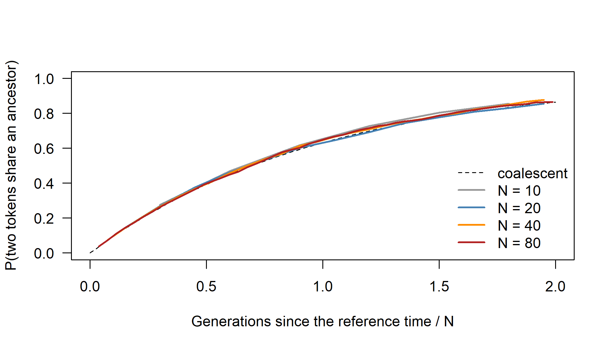
Figure I.13: Probability that two word tokens descend from the same token t generations earlier, under neutral copying in communities of 10, 20, 40 and 80 speakers (400 concepts each), against time in coalescent units t/N. The dashed curve is the coalescent prediction 1 - exp(-T).
round(t(sapply(sizes, function(n) {
cv <- neutral[[as.character(n)]]$curve
c(N = n, classes = neutral[[as.character(n)]]$classes,
ewens = ewens(n),
max_abs_deviation = max(abs(cv[, "coal"] - (1 - exp(-cv[, "T"])))))
})), 3)#> N classes ewens max_abs_deviation
#> [1,] 10 1.460 1.512 0.029
#> [2,] 20 2.200 2.221 0.013
#> [3,] 40 3.852 3.729 0.020
#> [4,] 80 7.352 6.831 0.018The coalescent curve fits well at every size: the largest deviation of the simulated probability of identity from \(1 - e^{-T}\) is between 0.01 and 0.03, which is of the order of the Monte Carlo error of 400 concepts, and it does not shrink systematically with \(N\). The number of classes per concept is close to Ewens’ expectation (within about 3% for \(N \le 40\), and 8% above it for \(N = 80\) in this run; repeated runs at that size vary by about 0.2 classes). Even a community of 10 speakers is well described by the coalescent in units of \(N\) generations, as long as copying is neutral and exchangeable: the copying rule matters more than the size of the community. In the vocabulary of Section 6.10, this is implementation validation, a check of the simulator against exact theoretical results, together with a check that the approximation holds where theory says it should; it says nothing about real speech communities.
2. Varying the strength of conformity. A neutral analysis would estimate the innovation rate that makes Ewens’ formula reproduce the observed number of classes; we find it by solving \(E[K](u) = \bar K\) for \(u\).
set.seed(162)
conf <- c(0, 0.25, 0.5, 0.9)
classes <- sapply(conf, function(cc)
run_bias("conformist", conform = cc)$classes)
u_neutral <- sapply(classes, function(k)
uniroot(function(u) ewens(30, u) - k, c(1e-6, 1))$root)
plot(conf, classes, type = "b", pch = 19, las = 1, ylim = c(0, 3.5),
xlab = "Strength of conformity (conform)",
ylab = "Classes per concept")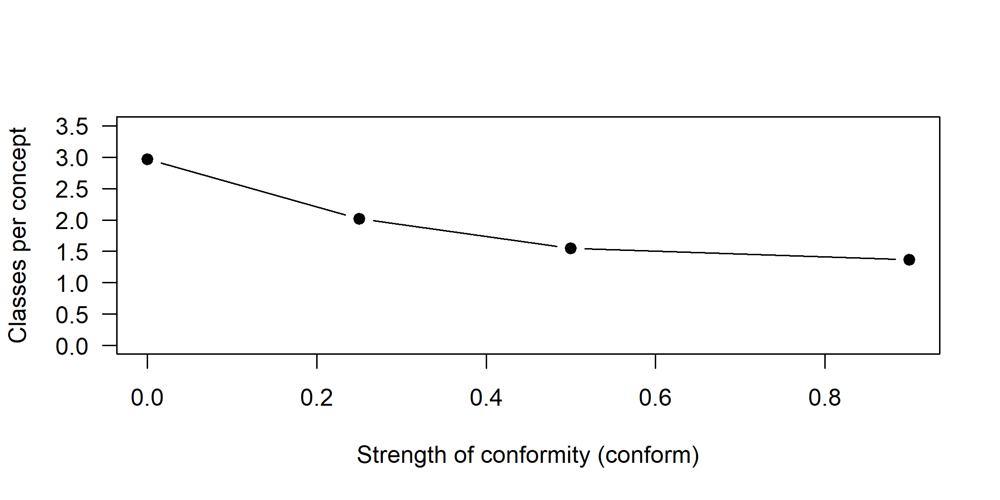
Figure I.14: Mean number of cognate classes per concept among 30 speakers after 180 generations, against the strength of conformist copying. The true innovation rate is 0.01 in every run.
#> [,1] [,2] [,3] [,4]
#> conform 0.00 0.2500 0.5000 0.9000
#> classes 2.97 2.0200 1.5500 1.3700
#> u_estimated_by_neutral_model 0.01 0.0047 0.0024 0.0016Conformity sharply reduces variation: with conform = 0.25 the number of classes per concept falls by a third, and with 0.9 by more than half, although the innovation rate stays at 0.01 in every run. A neutral analysis of such data would attribute the reduced variation to a lower innovation rate, about 0.005, 0.0024 and 0.0016 per learner and generation, two to six times too low. Conformity and the innovation rate are confounded in data on variation alone, and since the replacement rate of the dominant word equals \(u\) only under neutral copying (Conceptual Exercise 2), rates estimated with neutral models should not be read as rates of innovation.
3. The power of the lexical \(D\) test. The full simulation, 200 replicates of 300 concept trees at each of three values of \(b\), generates 180,000 concept trees and takes about ten minutes, so we ran it separately.
lang5 <- read.tree(text = "((A:1.5,B:1.5):0.6,(C:1.2,(D:0.6,E:0.6):0.6):0.9);")
borrow_word <- function(g, recipient = "B", donor = "C", t_contact = 0.3) {
g2 <- drop.tip(g, recipient)
bind.tip(g2, recipient, where = which(g2$tip.label == donor),
position = t_contact, edge.length = t_contact)
}
triplet_topology <- function(g) {
tr <- keep.tip(g, c("A", "B", "C"))
if (is.monophyletic(tr, c("A", "B"))) "AB"
else if (is.monophyletic(tr, c("B", "C"))) "BC" else "AC"
}
d_test_full <- function(b, n_concepts = 300) {
topo <- replicate(n_concepts, {
g <- sim_msc_tree(lang5)
if (runif(1) < b) g <- borrow_word(g)
triplet_topology(g)
})
n_bc <- sum(topo == "BC"); n_ac <- sum(topo == "AC")
D <- (n_bc - n_ac) / (n_bc + n_ac)
c(D = D, reject = abs(D) * sqrt(n_bc + n_ac) > 1.96)
}
set.seed(163)
sapply(c(b0 = 0, b0.05 = 0.05, b0.1 = 0.1), function(b)
rowMeans(replicate(200, d_test_full(b))))In our run, which took about ten minutes, the mean of \(D\) was \(-0.02\), 0.12 and 0.24 at \(b\) = 0, 0.05 and 0.1, and the test rejected in 6%, 27% and 77% of the replicates: the false-positive rate is close to the nominal 5%, the power is low at \(b = 0.05\) and moderate at \(b = 0.1\).
The same result can be obtained in a second, because the triplet topology of a concept tree has a known distribution. Without borrowing it is \(((A,B),C)\) with probability \(1 - \tfrac{2}{3}e^{-T}\) and each discordant topology with probability \(\tfrac{1}{3}e^{-T}\), with \(T = 0.6\) (Equation (16.2), which the chapter’s simulator reproduces); a borrowed slot always gives \(((B,C),A)\), because borrow_word() attaches \(B\) to \(C\)’s lineage 0.3 units before the present, below every other coalescence.
T_ABC <- 0.6
p_msc <- c(AB = 1 - 2 / 3 * exp(-T_ABC), AC = exp(-T_ABC) / 3,
BC = exp(-T_ABC) / 3)
d_test <- function(b, n_concepts = 300) {
topo <- sample(names(p_msc), n_concepts, replace = TRUE, prob = p_msc)
topo[runif(n_concepts) < b] <- "BC" # borrowed meaning slots
n_bc <- sum(topo == "BC"); n_ac <- sum(topo == "AC")
D <- (n_bc - n_ac) / (n_bc + n_ac)
c(D = D, reject = abs(D) * sqrt(n_bc + n_ac) > 1.96)
}
set.seed(163)
round(sapply(c(b0 = 0, b0.05 = 0.05, b0.1 = 0.1), function(b)
rowMeans(replicate(200, d_test(b)))), 3)#> b0 b0.05 b0.1
#> D -0.002 0.130 0.231
#> reject 0.055 0.265 0.750Without borrowing, \(D\) is centerd on zero and the test rejects in about 5% of the replicates, close to its nominal level. With 5% of the meaning slots borrowed, \(D \approx 0.13\) but the power is only about a quarter; with 10%, \(D \approx 0.23\) and the power is about three quarters. The test uses only the discordant meanings of the two informative kinds, about a hundred of the 300, which is why modest amounts of borrowing are hard to detect with a single quartet and a Swadesh-size list.
4. Turnover estimated from complete and incomplete samples. pbtree() with extinction occasionally returns no tree when every lineage dies, so it is wrapped in a loop. “The 25 tips of the largest clades” is read as a sample that over-represents large subgroups: the tree is cut halfway between the root and the present, and the tips of the largest clades are kept, largest first, until 25 are reached.
sim_family <- function() {
repeat {
tr <- pbtree(b = 0.6, d = 0.3, n = 80, extant.only = TRUE, quiet = TRUE)
if (inherits(tr, "phylo")) return(tr)
}
}
keep_big_clades <- function(tr, k = 25) {
H <- nodeHeights(tr); cut_h <- max(H) / 2
cross <- which(H[, 1] < cut_h & H[, 2] >= cut_h)
cl <- lapply(tr$edge[cross, 2], function(nd) {
d <- getDescendants(tr, nd); tr$tip.label[d[d <= Ntip(tr)]] })
cl <- cl[order(lengths(cl), decreasing = TRUE)]
keep <- character(0)
for (g in cl) {
need <- k - length(keep)
if (need <= 0) break
keep <- c(keep, if (length(g) <= need) g else sample(g, need))
}
keep.tip(tr, keep)
}
turnover <- function(tr) unname(birthdeath(tr)$para["d/b"])
set.seed(164)
bd <- t(replicate(100, {
tr <- sim_family()
c(all_80 = turnover(tr),
random_25 = turnover(keep.tip(tr, sample(tr$tip.label, 25))),
largest_clades_25 = turnover(keep_big_clades(tr)))
}))
boxplot(bd, las = 1, ylab = "estimated turnover", col = "grey85")
abline(h = 0.5, lty = 2)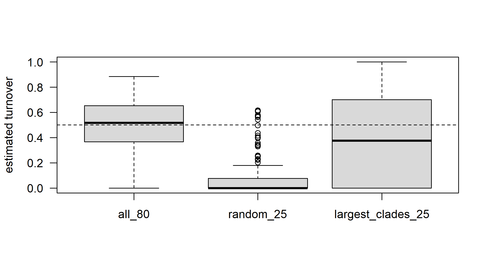
Figure I.15: Turnover (mu/lambda) estimated by maximum likelihood with ape::birthdeath() for 100 trees of 80 languages simulated with lambda = 0.6 and mu = 0.3 (true turnover 0.5, dashed line): with all 80 languages, with a random 25, and with 25 languages from the largest clades.
round(rbind(apply(bd, 2, quantile, c(0.1, 0.5, 0.9)),
mean = colMeans(bd), share_zero = colMeans(bd < 1e-6)), 2)#> all_80 random_25 largest_clades_25
#> 10% 0.20 0.00 0.00
#> 50% 0.52 0.00 0.38
#> 90% 0.72 0.42 0.92
#> mean 0.48 0.10 0.39
#> share_zero 0.03 0.74 0.32With all 80 languages the turnover estimates scatter widely around the true value of 0.5 (the central 80% lie between 0.20 and 0.72): even a correctly specified model on a complete tree estimates extinction imprecisely. A random sample of 25 languages makes things much worse. In three quarters of the trees the estimate is exactly zero, because random sampling removes recent nodes and erases the “pull of the present”, so a model that assumes complete sampling sees no extinction at all. Keeping the tips of the largest clades preserves more of the recent branching, and the median estimate (0.38) is closer to the truth, but the spread is enormous (zero in a third of the trees, above 0.9 in a tenth). Neither incomplete sample gives a usable estimate unless the sampling scheme is part of the model, for example through clade-specific sampling fractions (Stadler 2009).
5. Are placement weights calibrated? For each replicate we repeat the chapter’s simulation with a new tree, infer the reference tree by maximum likelihood, place the query on every edge of the (unrooted) reference tree, and record the weight of the correct edge. An edge counts as correct if the split it defines among the 12 reference languages is a split of the true tree both with and without the query, that is, if attaching the query there reproduces the true unrooted topology around it. About 200 replicates take several minutes, so the study was run separately.
place_once <- function(p_missing) {
full13 <- pbtree(n = 13, scale = 1,
tip.label = c(sprintf("L%02d", 1:12), "Query"))
m13 <- as.character(simSeq(full13, l = 500, type = "USER",
levels = c("0", "1"), rate = 1.2))
m13 <- m13[, colSums(m13 == "1") > 0]
m13["Query", runif(ncol(m13)) < p_missing] <- "?"
d13 <- phyDat(m13, type = "USER", levels = c("0", "1"), ambiguity = "?")
ref_d <- subset(d13, setdiff(full13$tip.label, "Query"))
ref_tree <- optim.pml(pml(NJ(dist.hamming(ref_d)), ref_d), optNni = TRUE,
control = pml.control(trace = 0))$tree
edge_ll <- sapply(seq_len(nrow(ref_tree$edge)), function(i) {
cand <- bind.tip(ref_tree, "Query", where = ref_tree$edge[i, 2],
position = ref_tree$edge.length[i] / 2,
edge.length = 0.1)
q_edge <- which(cand$edge[, 2] == which(cand$tip.label == "Query"))
max(sapply(c(0.02, 0.05, 0.1, 0.2, 0.4, 0.8), function(pl) {
cand$edge.length[q_edge] <- pl
pml(cand, d13)$logLik
}))
})
lwr <- exp(edge_ll - max(edge_ll)); lwr <- lwr / sum(lwr)
true_u <- unroot(full13)
correct <- sapply(seq_len(nrow(ref_tree$edge)), function(i) {
a <- ref_tree$tip.label[unlist(Descendants(ref_tree, ref_tree$edge[i, 2],
"tips"))]
is.monophyletic(true_u, a) && is.monophyletic(true_u, c(a, "Query"))
})
top <- which.max(lwr)
c(lwr_true_edge = sum(lwr[correct]), lwr_top = lwr[top],
top_correct = correct[top])
}
set.seed(165)
levels_missing <- c(0.5, 0.7, 0.85, 0.95)
place <- lapply(levels_missing, function(p) t(replicate(50, place_once(p))))
round(sapply(setNames(place, paste0(100 * levels_missing, "% missing")),
function(r) c(mean_lwr_true_edge = mean(r[, "lwr_true_edge"]),
top_correct = mean(r[, "top_correct"]),
n_confident = sum(r[, "lwr_top"] > 0.8),
correct_if_confident = mean(r[r[, "lwr_top"] > 0.8,
"top_correct"]))), 2)Results of our run (50 replicates per level):
| query characters missing | 50% | 70% | 85% | 95% |
|---|---|---|---|---|
| mean weight of the correct edge | 0.46 | 0.31 | 0.35 | 0.28 |
| top placement correct | 0.56 | 0.32 | 0.34 | 0.34 |
| placements with weight > 0.8 | 21 | 17 | 15 | 10 |
| of these, correct | 0.81 | 0.76 | 0.93 | 0.90 |
Placements with a weight above 0.8 were correct 76% to 93% of the time (85% over all levels), so on data simulated under the model the weights are roughly calibrated, perhaps slightly overconfident at some levels; with 50 replicates per level these proportions have standard errors of about 0.1. Two other results matter as much. Confident placements become rarer as more of the query’s data are missing (21 of 50 at 50% missing, 10 at 95%), and the highest-weight edge is correct in only a third to a half of all replicates, partly because the reference tree inferred from 12 languages is itself sometimes wrong, which the weights do not take into account. This is parameter recovery under the placement model; archival data would also violate the model (Conceptual Exercise 6).
Research
1. Sorting of ancestral synonymy versus contact in Bantu. Data: lexical data that record within-language variation, either all synonyms per meaning or several varieties (dialects, independent sources) per language, for a dense sample of Bantu languages with expert cognate judgments and loan flags (Grollemund et al. 2015). Simulations: the token model of Section 16.2.2 run on posterior Bantu trees (with branch lengths converted to generations under alternative assumptions about community size), with neutral, conformist and prestige copying, with and without ancestral dialect structure, and with borrowing between neighboring lineages at several rates, including concentrated borrowing between particular pairs. Statistics: lexical \(D\) statistics with block-jackknife standard errors for quartets with and without suspected contact; site concordance factors for each branch; the number of classes per meaning and of synonyms per language; and the geographic distance between the languages that share discordant cognates. What would persuade a skeptic: discordance that is symmetric (\(D \approx 0\)) in quartets where contact is suspected, an amount of discordance that the token model reproduces with plausible amounts of ancestral synonymy and fits concentrated on the short internal branches of the rapid expansion, synonym counts that match the model’s predictions, and no relation between discordance and present-day proximity. The analysis should also show, by simulation, that the \(D\) test has power to detect borrowing at the rates seen in documented contact cases, and that ancestral structure of the size needed to fake the observed \(D\) values is implausible (Green et al. 2010; Durand et al. 2011).
2. GeoSSE and mountains in the Caucasus. Threats to validity: the lumping and splitting of varieties changes the number and timing of “speciation” events, and Caucasian languages have many dialects of contested status; documented languages are a non-random sample (small mountain languages may be under- or over-represented relative to lowland ones), and sampling fractions differ by region; extinction is common (languages displaced by Turkic, Armenian, Georgian and Russian) and unrecorded, and SSE models cannot identify it well (Louca and Pennell 2020); contact and language shift move lineages between “regions” without any splitting; and trees for the three Caucasian families are uncertain and partly built from data that are themselves shaped by contact. Modeling choices: code each language’s range as highland, lowland or both from a pre-specified altitude threshold, with alternatives; specify region-specific sampling fractions from Glottolog counts (Stadler 2009); compare GeoSSE (Goldberg et al. 2011) with character-independent null models and hidden-state versions, because SSE models readily detect spurious state-dependent diversification (Rabosky and Goldberg 2015; Beaulieu and O’Meara 2016); repeat the analysis on posterior samples of trees for each family and combine families in a joint model with shared parameters; and, before interpreting anything, simulate trees under the null with the same sampling, lumping and tree uncertainty to estimate the false-positive rate. A credible result would be a speciation-rate difference that survives the null models, the sampling corrections and the different variety-lumping schemes, and that appears in more than one family.
3. DTL reconciliation for Romance word families. Events: for an etymological family (all reflexes of a Latin root, inherited or learned), “speciation” is a split of the Romance language tree inherited by the word; loss is the disappearance of the word from a lineage; transfer is borrowing between contemporaneous Romance lineages (French into Italian, Spanish into Portuguese); and the duplication of biology splits into two events of different kinds, derivation within a language and learned borrowing from Latin, the reintroduction of a word from the written ancestor into a descendant that already has an inherited reflex (French frêle and fragile, both from Latin fragilis). Failing assumptions: learned borrowing from an ancestor has no counterpart in DTL, because the donor is not a contemporaneous lineage; transfers from outside the sampled tree (Latin, French as a prestige language at many periods) are frequent; word trees must be estimated from short forms whose regular sound correspondences are themselves the evidence for inheritance versus learned origin, so the trees are uncertain and the events are not independent of the data used to build them; and semantic change moves words between meanings, which reconciliation ignores. Validation data: Romance has unusually good etymological dictionaries recording which words are inherited, learned or borrowed and when; the method’s inferred transfers and learned borrowings can be scored for precision and recall against them, first on words whose history is undisputed, then on doubtful cases (Szöllősi, Tannier, et al. 2013; List 2016; Nelson-Sathi et al. 2011).
I.17 Chapter 17: A Complete Workflow in R
Conceptual
1. What would happen if unrecorded meanings were scored 0 rather than ?. A language known only from a short list would be scored as lacking every cognate class of every meaning that was not recorded, so it would appear to have lost the ancestral word for each such meaning without gaining a new one. Its row would contain far more 0s than any other, its Hamming distances to all other languages would be inflated, and in the trees it would sit on an artificially long terminal branch, be pulled toward the root or toward other poorly documented languages, and inflate the estimated rate of loss. The all-zero blocks would also violate the constraint that every language with data has at least one word per meaning (Equation (15.2)). The error would first become visible at Step 3: the lexicostatistical distances, computed from the long table over shared recorded meanings, would be unaffected, while the Hamming distances computed from the matrix would make the language an outlier, and in Step 4 the NJ tree from Hamming distances would give it a long branch that the tree from lexical distances does not. Counting 1s per row in Step 2 would already show the anomaly to anyone who looked.
2. Why the consistency index is below 1 and the gamma shape is very large, although the data contain no homoplasy. Both are effects of binary presence/absence coding. A single replacement event changes two binary characters, the old class from 1 to 0 and the new class from 0 to 1. And when the word for a meaning is replaced independently in two lineages, the old class is lost twice, two 1-to-0 changes in the same character, which parsimony counts as homoplasy although no class was ever born twice (Step 5). The gamma shape is large because rate variation among meanings is turned into variation in the number of characters per meaning: a fast meaning produces many classes, each born once and lost a few times, so every binary character changes only once or twice on the tree and the characters look homogeneous (Step 6). Coded as one multistate character per meaning, with a new state for each new class, the data would have no homoplasy: each class arises once and is never regained, so every character needs exactly (number of states \(-\) 1) changes and the CI would be 1. Rate variation among meanings would then appear directly as rate variation among characters, and a gamma model would estimate a small shape (strong heterogeneity), close to the simulated \(\alpha = 1\).
3. Classifying five kinds of evidence. (a) The RF distances of Table 17.3 are parameter recovery: data simulated close to the models’ assumptions, scored against the known truth. (b) Agreement among five programs (Table 17.4) is weak implementation validation. (c) A prior-only run of the BEAST 2 file is implementation validation: it shows the prior the program actually uses. (d) The recovery of East Polynesian is agreement with the expert classification; it bears on historical interpretation but is not independent validation, because the cognate judgments and the subgroup come from the same comparative method. (e) A posterior predictive check of singletons per language is a test of empirical model adequacy. Only (e) is designed to show that a model is wrong for real data; (d) can raise a warning when a secure subgroup is not recovered, though the failure may lie in the coding rather than the model. (a) to (c) involve no real data, or test only the software, so they cannot show that a model is wrong for language.
4. A root age of 3,600 years when the truth is 6,000: a failure of the method? Not of the computation. The true age lies inside the 95% interval, and the posterior is a coherent statement given the data and the priors. With a strict clock, the cognate data determine only the amount of change on each branch, the product of rate and time; absolute time enters only through the single calibration on the young subgroup D and through the priors (Section 17.11.1). The calibration fixes the rate locally, the lognormal clock-rate prior (median about 0.1 changes per character per millennium) and the Yule prior shape how that rate is extrapolated to the root, and the uniform root-age prior between 3,000 and 12,000 years bounds the result. With one young calibration and a Dollo-like simulator analyzed with a reversible model, these pull the root toward the lower end of its prior. In the vocabulary of Section 6.10, the root age is identifiable under the model only through the calibration and the priors, and with this design it is not practically estimable. A prior-only run would show the effective prior on the root age after the calibration, the Yule prior and the root-age prior have interacted; if it already concentrates near 3,000 to 4,000 years, the posterior largely reproduces the prior, and the remedy is more and older calibrations, not a longer chain.
5. Why long branches in one subgroup can move the root of a strict-clock tree, and what could justify another root. A strict clock requires all tips to be equally far from the root in expected change. If the East Polynesian languages have accumulated more lexical change than the others (because of founder effects in the settlement of new islands, faster replacement, or unrecognized loans), the only way to make the tree ultrametric is to place the root where it splits the long-branched group from the rest, so that the extra change is absorbed into a long branch on one side of the root. The clock reads extra change as extra time, which is the same mechanism that makes midpoint rooting fail when rates differ (Section 17.14.4). Evidence independent of the lexical data that could justify a root between Tongic and Nuclear Polynesian includes: (i) the settlement history, since West Polynesia (Tonga and Samoa) was settled around three thousand years ago and East Polynesia only within the last thousand years (Wilmshurst et al. 2011), so the earliest split must lie in the west; (ii) phonological and morphological innovations shared by all Nuclear Polynesian languages and absent in Tongan and Niuean, the comparative method’s evidence for the primary split; and (iii) outgroup languages outside Polynesian, such as Fijian or Rotuman, which root the tree without a clock.
Computational
The toy family, its cognate table and the helper functions are recreated with the chapter’s seed; since set.seed(17) is followed in the chapter by the tree and then the cognate simulation, the objects below are identical to the chapter’s.
suppressPackageStartupMessages({library(ape); library(phangorn)
library(phytools); library(nlme)})
set.seed(17)
n_lang <- 24
true_tree <- pbtree(b = 1, n = n_lang, scale = 6)
true_tree$tip.label <- sprintf("L%02d", seq_len(n_lang))
true_tree <- reorder(true_tree, "cladewise")
subgroups_at <- function(tree, cut_time) { # as in workflow-subgroups
H <- node.depth.edgelength(tree)
e <- tree$edge
crossing <- which(H[e[, 1]] < cut_time & H[e[, 2]] >= cut_time)
grp <- character(Ntip(tree))
for (k in seq_along(crossing)) {
desc <- getDescendants(tree, e[crossing[k], 2])
grp[desc[desc <= Ntip(tree)]] <- LETTERS[k]
}
setNames(grp, tree$tip.label)
}
subgroup <- subgroups_at(true_tree, cut_time = 3)
simulate_cognates <- function(tree, n_meanings = 110, mean_rate = 0.1,
gamma_shape = 1, p_missing = 0.03) {
tree <- reorder(tree, "cladewise")
n_tip <- Ntip(tree)
rates <- rgamma(n_meanings, shape = gamma_shape,
rate = gamma_shape / mean_rate)
states <- matrix(NA_integer_, n_tip + tree$Nnode, n_meanings)
states[n_tip + 1, ] <- 1L
last_id <- rep(1L, n_meanings)
for (i in seq_len(nrow(tree$edge))) {
parent <- tree$edge[i, 1]
child <- tree$edge[i, 2]
s <- states[parent, ]
k <- rpois(n_meanings, rates * tree$edge.length[i])
hit <- k > 0
last_id[hit] <- last_id[hit] + k[hit]
s[hit] <- last_id[hit]
states[child, ] <- s
}
tips <- states[seq_len(n_tip), , drop = FALSE]
concepts <- sprintf("C%03d", seq_len(n_meanings))
cog <- data.frame(
Language_ID = rep(tree$tip.label, times = n_meanings),
Parameter_ID = rep(concepts, each = n_tip),
Cognateset_ID = paste0(rep(concepts, each = n_tip), "-", as.vector(tips))
)
keep <- runif(nrow(cog)) > p_missing
list(cognates = cog[keep, ], rates = setNames(rates, concepts))
}
cog <- simulate_cognates(true_tree)$cognates
# cognates_to_binary() is the function of workflow-binary (defined above,
# in the solution to Computational Exercise 5 of Chapter 15)
to_phydat <- function(m) phyDat(m, type = "USER", levels = c("0", "1"),
ambiguity = "?")
bin <- cognates_to_binary(cog)
cog_data <- to_phydat(bin)
tree_nj_ham <- NJ(dist.hamming(cog_data))
truth_unrooted <- unroot(true_tree)
multi_groups <- names(which(table(subgroup) > 1))
score_tree <- function(tree) { # as in workflow-score-trees
rf <- RF.dist(unroot(tree), truth_unrooted, normalize = TRUE)
groups_ok <- vapply(multi_groups, function(g)
is.monophyletic(tree, names(subgroup)[subgroup == g]), logical(1))
c(RF_normalized = round(rf, 3),
subgroups_recovered = sum(groups_ok), subgroups_total = length(groups_ok))
}
ctrl <- pml.control(trace = 0)
c(dim(bin), score_tree(tree_nj_ham))#> RF_normalized
#> 24.000 444.000 0.238
#> subgroups_recovered subgroups_total
#> 3.000 3.0001. A meaning-level bootstrap. Each replicate samples the 110 meanings with replacement and gives every copy of a meaning its own suffix, so that its cognate sets stay distinct, before rebuilding the matrix with cognates_to_binary().
by_meaning <- split(cog, cog$Parameter_ID)
meaning_boot <- function() {
pick <- sample(names(by_meaning), length(by_meaning), replace = TRUE)
rows <- by_meaning[pick]
reps <- rep(seq_along(pick), vapply(rows, nrow, 1L))
long <- do.call(rbind, rows)
long$Parameter_ID <- paste0(long$Parameter_ID, "_", reps)
long$Cognateset_ID <- paste0(long$Cognateset_ID, "_", reps)
NJ(dist.hamming(to_phydat(cognates_to_binary(long))))
}
set.seed(171)
boot_meaning <- lapply(1:100, function(i) meaning_boot())
class(boot_meaning) <- "multiPhylo"
boot_char <- bootstrap.phyDat(cog_data, function(x) NJ(dist.hamming(x)),
bs = 100)
supp <- cbind(characters = prop.clades(tree_nj_ham, boot_char,
rooted = FALSE),
meanings = prop.clades(tree_nj_ham, boot_meaning,
rooted = FALSE))
supp <- supp[-1, ] # the root of an unrooted tree
supp[order(supp[, "characters"] - supp[, "meanings"], decreasing = TRUE), ][
1:8, ]#> characters meanings
#> [1,] 99 91
#> [2,] 55 48
#> [3,] 66 61
#> [4,] 100 95
#> [5,] 50 46
#> [6,] 100 97
#> [7,] 57 55
#> [8,] 71 70#> Min. 1st Qu. Median Mean 3rd Qu. Max.
#> -6.00 0.00 0.00 1.33 3.00 8.00Most clades receive similar support under the two schemes, but resampling whole meanings lowers the support of several clades, by up to 8 points (from 99% to 91%, and from 100% to 95%), and raises a few others slightly. The clades that lose support are those that rest on a few meanings with several cognate classes each. The character bootstrap resamples those characters independently, as if each class were a separate piece of evidence; the meaning bootstrap keeps them together, so a meaning supports the clade with all its characters or not at all. The average effect here is small (about one point), because the simulation has no synonymy and most meanings have few classes; with real data the difference can be larger. Resampling meanings respects the dependence among the characters of one meaning (Section 15.3.3).
2. Robustness to borrowing. The recipient L01 (subgroup A) borrows from L13 (subgroup B): for a random fraction \(b\) of the meanings, its word is replaced by L13’s.
borrow_cognates <- function(cog, recipient, donor, b) {
m <- unique(cog$Parameter_ID)
hit <- m[runif(length(m)) < b]
dw <- cog[cog$Language_ID == donor & cog$Parameter_ID %in% hit, ]
if (nrow(dw) == 0) return(cog)
dw$Language_ID <- recipient
keep <- !(cog$Language_ID == recipient &
cog$Parameter_ID %in% dw$Parameter_ID)
rbind(cog[keep, ], dw)
}
subgroup[c("L01", "L13")]#> L01 L13
#> "A" "B"set.seed(172)
rob <- t(sapply(c(0, 0.1, 0.2, 0.3), function(b) {
d <- to_phydat(cognates_to_binary(borrow_cognates(cog, "L01", "L13", b)))
nj <- NJ(dist.hamming(d))
ml <- optim.pml(pml(nj, d), optNni = TRUE, optBf = TRUE, control = ctrl)
c(b = b, delta = delta.score(d),
NJ = score_tree(nj)[1:2], ML = score_tree(ml$tree)[1:2],
sisters_NJ = is.monophyletic(unroot(nj), c("L01", "L13")),
sisters_ML = is.monophyletic(unroot(ml$tree), c("L01", "L13")))
}))
rob#> b delta NJ.RF_normalized NJ.subgroups_recovered
#> [1,] 0.0 0.1276 0.238 3
#> [2,] 0.1 0.1338 0.238 3
#> [3,] 0.2 0.1353 0.286 3
#> [4,] 0.3 0.1475 0.286 3
#> ML.RF_normalized ML.subgroups_recovered sisters_NJ sisters_ML
#> [1,] 0.238 3 0 0
#> [2,] 0.238 3 0 0
#> [3,] 0.286 3 0 0
#> [4,] 0.286 3 0 0# 20 replicates per level with NJ: how often is L01 still inside subgroup A?
set.seed(173)
grpA <- names(subgroup)[subgroup == "A"]
sapply(c(b0.1 = 0.1, b0.2 = 0.2, b0.3 = 0.3, b0.5 = 0.5), function(b)
mean(replicate(20, {
d <- to_phydat(cognates_to_binary(borrow_cognates(cog, "L01", "L13", b)))
is.monophyletic(NJ(dist.hamming(d)), grpA)
})))#> b0.1 b0.2 b0.3 b0.5
#> 1.00 1.00 0.85 0.15Borrowing 10% to 30% of L01’s meanings from L13 raises the delta score only from 0.128 to 0.148 and moves the NJ and ML trees by one split (normalized RF from 0.24 to 0.29), but L01 and L13 never come out as sisters, and all three subgroups are still recovered. In the replicates, L01 stays inside subgroup A until about 30% of its meanings are borrowed and leaves it in most replicates at 50%. The reason is that a borrowed meaning gives L01 the class of L13, which L13 usually shares with the rest of subgroup B, so borrowing pulls L01 toward subgroup B as a whole rather than toward L13. In the vocabulary of Section 6.10 this is a test of robustness under misspecification. It qualifies the conclusion of Step 7 that, on clean, clock-like data, all methods recover the tree up to its shortest branches: the subgroups survive diffuse borrowing from one language up to a point, but the treelikeness statistic hardly registers it, and concentrated borrowing from a close relative produces a false subgroup much sooner (Computational Exercise 2 of Chapter 15).
3. Loans in the Polynesian data. The matrices with and without the loans are those of Computational Exercise 5 of Chapter 15. The Glottolog subgroups are built as in chunk poly-subgroups.
languages_p <- read_cs("languages.csv")
gl <- read_cs("glottolog_classification.csv")
glotto_poly <- setNames(languages_p$Glottocode,
languages_p$ID)[rownames(bin_noloan)]
lineage <- strsplit(setNames(gl$Classification, gl$Glottocode)[glotto_poly],
" > ")
names(lineage) <- rownames(bin_noloan)
groups <- unique(unlist(lapply(lineage, `[`, -1)))
members <- lapply(setNames(groups, groups), function(g)
names(lineage)[vapply(lineage, function(l) g %in% l, logical(1))])
members <- members[lengths(members) >= 2 &
lengths(members) < nrow(bin_noloan)]
recovered <- function(tree, g) is.monophyletic(unroot(tree), g)
nj_noloan <- NJ(dist.hamming(to_phydat(bin_noloan)))
nj_loan <- NJ(dist.hamming(to_phydat(bin_loan)))
c(delta_without_loans = delta.score(to_phydat(bin_noloan)),
delta_with_loans = delta.score(to_phydat(bin_loan)))#> delta_without_loans delta_with_loans
#> 0.3369 0.3333rec <- cbind(without_loans = sapply(members, recovered, tree = nj_noloan),
with_loans = sapply(members, recovered, tree = nj_loan))
rec[rowSums(rec) > 0, ]#> without_loans with_loans
#> Vanuatu-Loyalty Outliers TRUE FALSE
#> Mele-Futuna TRUE TRUE
#> East Polynesian TRUE TRUE
#> Tahitian-Austral TRUE TRUE# East Uvean: its nearest neighbors on each NJ tree, and the loans it has
nearest <- function(tr) round(sort(cophenetic(tr)["EastUvea", ])[2:5], 3)
list(without_loans = nearest(nj_noloan), with_loans = nearest(nj_loan),
EastUvea_loans = sum(forms_p$Loan & forms_p$Language_ID == "EastUvea"))#> $without_loans
#> EastFutuna Niuean Tikopia Anuta
#> 0.070 0.076 0.092 0.094
#>
#> $with_loans
#> EastFutuna Niuean Tikopia RennellBellona
#> 0.084 0.085 0.104 0.108
#>
#> $EastUvea_loans
#> [1] 33Including the loans changes the data only slightly: the delta score is essentially unchanged (0.337 and 0.333), and the NJ tree recovers the same Glottolog subgroups except Vanuatu-Loyalty Outliers, which is lost. East Uvean does not move. With and without the loans its nearest neighbors are East Futunan and then Niuean, a Tongic language. The 33 forms flagged as loans in East Uvean are a small part of its vocabulary, and removing them does not move it away from the Tongic languages. If its position next to Niuean reflects contact with Tongic, as the history of the region suggests, the contact signal lies mainly in forms that were not flagged: loans between closely related languages are often cognate with the recipient’s own word and can be recognized only from irregular sound correspondences, so many must have been coded as inherited. Flagging the recognized loans is not enough to remove the effect of contact, and the closer donor and recipient are, the harder their loans are to recognize.
4. A poorly documented language. A new dataset is simulated on the true tree, and 80% of the rows of L07 are deleted.
set.seed(174)
cog2 <- simulate_cognates(true_tree)$cognates
rows_l07 <- which(cog2$Language_ID == "L07")
cog_sparse <- cog2[-sample(rows_l07, round(0.8 * length(rows_l07))), ]
fit_ml <- function(cg) {
d <- to_phydat(cognates_to_binary(cg))
optim.pml(pml(NJ(dist.hamming(d)), d), optNni = TRUE, optBf = TRUE,
control = ctrl)
}
f_full <- fit_ml(cog2); f_sparse <- fit_ml(cog_sparse)
rbind(full = score_tree(f_full$tree), L07_sparse = score_tree(f_sparse$tree))#> RF_normalized subgroups_recovered subgroups_total
#> full 0.095 3 3
#> L07_sparse 0.238 3 3# the true sister of L07, and its support among 20 bootstrap trees
sis <- true_tree$tip.label[Descendants(true_tree,
true_tree$edge[true_tree$edge[, 2] == which(true_tree$tip.label == "L07"),
1], "tips")[[1]]]
bs_sparse <- bootstrap.pml(f_sparse, bs = 20, optNni = TRUE, control = ctrl)
place_l07 <- function(tr) { # smallest clade around L07
tr <- unroot(tr)
pa <- tr$edge[tr$edge[, 2] == which(tr$tip.label == "L07"), 1]
sort(setdiff(tr$tip.label[Descendants(tr, pa, "tips")[[1]]], "L07"))
}
list(true_clade = sis,
in_full_ML = is.monophyletic(unroot(f_full$tree), sis),
in_sparse_ML = is.monophyletic(unroot(f_sparse$tree), sis),
bootstrap_support_true_clade = mean(sapply(bs_sparse, function(t)
is.monophyletic(unroot(t), sis))),
sparse_ML_neighbors = place_l07(f_sparse$tree),
bootstrap_support_that_position = mean(sapply(bs_sparse, function(t)
identical(place_l07(t), place_l07(f_sparse$tree)))))#> $true_clade
#> [1] "L07" "L08"
#>
#> $in_full_ML
#> [1] TRUE
#>
#> $in_sparse_ML
#> [1] FALSE
#>
#> $bootstrap_support_true_clade
#> [1] 0.05
#>
#> $sparse_ML_neighbors
#> [1] "L03"
#>
#> $bootstrap_support_that_position
#> [1] 0.05With the full data, ML recovers L07’s true sister, L08, and the tree is close to the truth (normalized RF 0.10). With 80% of L07’s words deleted, L07 is placed next to L03, elsewhere in subgroup A, and the RF distance rises to 0.24; but the bootstrap shows that the data do not support this position: only one of the 20 replicate trees puts L07 next to L03, and only one puts it with L08. The rest of the tree, including the three subgroups, is unaffected. Low support is the honest answer for a language known from a short list. A position for such a language should be reported with its support, and placement methods with explicit weights (Section 16.6.4) make the uncertainty visible.
5. One tree or many. The traits and pgls_one() are those of chunks workflow-traits and workflow-pgls-sample; the posterior samples are read as in workflow-read-beast and poly-bayes.
read_post <- function(dir, file) do.call(c, lapply(c("run1", "run2"),
function(run) {
tr <- read.nexus(file.path(dir, run, file))
tr[-seq_len(floor(0.1 * length(tr)))] # 10% burn-in
}))
posterior <- read_post("software-runs/beast2", "toy_thinned.trees")
mcc <- maxCladeCred(posterior)
set.seed(2)
x <- fastBM(true_tree, sig2 = 1)
y <- 0.6 * x + fastBM(true_tree, sig2 = 0.5)
traits <- data.frame(lang = names(x), x = x, y = y[names(x)])
pgls_one <- function(tr) {
m <- try(gls(y ~ x, data = traits,
correlation = corBrownian(1, tr, form = ~lang)), silent = TRUE)
if (inherits(m, "try-error")) return(c(slope = NA, se = NA, p = NA))
cf <- coef(summary(m))["x", ]
c(slope = cf[["Value"]], se = cf[["Std.Error"]], p = cf[["p-value"]])
}
post_fit <- as.data.frame(t(sapply(posterior, pgls_one)))
M <- nrow(post_fit)
rbind(MCC_tree = pgls_one(mcc),
posterior_median = apply(post_fit, 2, median),
pooled = c(mean(post_fit$slope),
sqrt(mean(post_fit$se^2) + (1 + 1 / M) *
var(post_fit$slope)), NA))#> slope se p
#> MCC_tree 0.4350 0.1940 0.03535
#> posterior_median 0.4909 0.1859 0.01500
#> pooled 0.4898 0.1945 NA#> 2.5% 25% 50% 75% 97.5%
#> 0.371 0.450 0.491 0.531 0.595#> trees MCC_slope_percentile
#> 272.0000 0.1765# Polynesian: posterior probability of each Glottolog subgroup, and its
# credibility on the MCC tree (if the MCC tree contains it)
post_poly <- read_post("software-runs/case-study/beast2",
"poly_thinned.trees")
mcc_poly <- maxCladeCred(post_poly)
support <- function(trees, g, rooted = FALSE)
mean(vapply(trees, function(tr)
if (rooted) is.monophyletic(tr, g) else recovered(tr, g), logical(1)))
round(t(sapply(members, function(g) c(
languages = length(g),
posterior_rooted = support(post_poly, g, rooted = TRUE),
posterior_unrooted = support(post_poly, g),
on_MCC_tree = is.monophyletic(mcc_poly, g)))), 2)#> languages
#> Nuclear Polynesian 28
#> Vanuatu-Loyalty Outliers 3
#> Mele-Futuna 2
#> Northern Outlier Polynesian-East Polynesian 16
#> Solomons Northern Outlier Polynesian-East Polynesian 15
#> Central Northern Outlier Polynesian-East Polynesian 14
#> East Polynesian 12
#> East Polynesian Proximal 9
#> Central Northern Outlier Polynesian 2
#> East Polynesian Distal 3
#> Far East Polynesian 2
#> Southern East Polynesian Proximal 8
#> Tongic 2
#> Ellicean 3
#> Pukapukic 2
#> Tahitian-Austral 3
#> Austral 2
#> posterior_rooted
#> Nuclear Polynesian 0.00
#> Vanuatu-Loyalty Outliers 0.95
#> Mele-Futuna 0.16
#> Northern Outlier Polynesian-East Polynesian 0.00
#> Solomons Northern Outlier Polynesian-East Polynesian 0.00
#> Central Northern Outlier Polynesian-East Polynesian 0.00
#> East Polynesian 1.00
#> East Polynesian Proximal 0.00
#> Central Northern Outlier Polynesian 0.00
#> East Polynesian Distal 0.02
#> Far East Polynesian 0.10
#> Southern East Polynesian Proximal 0.00
#> Tongic 0.01
#> Ellicean 0.00
#> Pukapukic 0.00
#> Tahitian-Austral 1.00
#> Austral 0.03
#> posterior_unrooted
#> Nuclear Polynesian 0.01
#> Vanuatu-Loyalty Outliers 0.95
#> Mele-Futuna 0.16
#> Northern Outlier Polynesian-East Polynesian 0.00
#> Solomons Northern Outlier Polynesian-East Polynesian 0.00
#> Central Northern Outlier Polynesian-East Polynesian 0.00
#> East Polynesian 1.00
#> East Polynesian Proximal 0.00
#> Central Northern Outlier Polynesian 0.00
#> East Polynesian Distal 0.02
#> Far East Polynesian 0.10
#> Southern East Polynesian Proximal 0.00
#> Tongic 0.01
#> Ellicean 0.00
#> Pukapukic 0.00
#> Tahitian-Austral 1.00
#> Austral 0.03
#> on_MCC_tree
#> Nuclear Polynesian 0
#> Vanuatu-Loyalty Outliers 1
#> Mele-Futuna 0
#> Northern Outlier Polynesian-East Polynesian 0
#> Solomons Northern Outlier Polynesian-East Polynesian 0
#> Central Northern Outlier Polynesian-East Polynesian 0
#> East Polynesian 1
#> East Polynesian Proximal 0
#> Central Northern Outlier Polynesian 0
#> East Polynesian Distal 0
#> Far East Polynesian 0
#> Southern East Polynesian Proximal 0
#> Tongic 0
#> Ellicean 0
#> Pukapukic 0
#> Tahitian-Austral 1
#> Austral 0On the MCC tree the slope is 0.435, with a standard error of 0.194 and \(p = 0.035\). Across the 272 posterior trees the slope has a median of 0.49 and a 95% range of 0.37 to 0.60, and the MCC estimate lies at the 18th percentile of that distribution. Pooled with Rubin’s rules the slope is 0.49, with a total standard error of 0.195, nearly the same as on the MCC tree, because here the variation between trees is small compared with the uncertainty within each tree. The MCC tree thus gives one value from the distribution, not its center, and no indication of the spread. For Polynesian, the clade credibilities on the MCC tree are, by definition, the posterior probabilities of the clades it contains, so the two agree for the Glottolog subgroups it includes (Vanuatu-Loyalty Outliers 0.95, East Polynesian and Tahitian-Austral 1.00). The difference lies in what the MCC tree cannot show: subgroups it lacks still have posterior probabilities, some small but not negligible (Mele-Futuna 0.16, Far East Polynesian 0.10), while others, including Nuclear Polynesian and Tongic, have essentially none. Rooted and unrooted probabilities are nearly identical, so the failure to recover Tongic and Nuclear Polynesian is not only a matter of where the strict clock placed the root.
Research
1. A pipeline for 45 Romance varieties with Latin, Old French and Old Spanish. Coding: binary presence/absence by meaning from expert cognate judgments, recording all synonyms, with unrecorded meanings as missing and an ascertainment correction applied per meaning, given the 20% gaps. Loans are flagged by source: Germanic and Arabic loans that entered Proto-Romance or early regional Latin may be genuinely inherited by later varieties, while French loans into other Romance varieties are post-split borrowing; the default codes post-split loans as missing in the borrowing variety, with a second matrix treating them as cognates of their source. Ancient varieties: Latin, Old French and Old Spanish are near-ancestors of modern varieties, so they should be analyzed as sampled ancestors under a fossilized birth-death prior, with tip-age intervals, and compared with treating them as tips and with using them only as calibrations (Chang et al. 2015; Heggarty et al. 2023); Classical Latin is a literary register, so its placement is itself a result to report. Calibrations: bounds from documented history (Roman conquest and settlement of provinces as maximum ages for regional splits, earliest vernacular texts as minimum ages), independent of any hypothesis being tested. Models: binary with gamma rates, covarion and Dollo-type models, strict versus relaxed clocks, compared by marginal likelihood. Checks: prior-only runs, independent chains, posterior predictive checks of singletons and classes per meaning, and a meaning-level bootstrap. Steps that change: Step 2 (loan flags and synonyms), Step 8 (sampled ancestors and tip dates instead of one invented calibration) and Step 9 (several runs and prior comparisons). Simulation for robustness: simulate on posterior trees with borrowing from French into Italo-Romance and Ibero-Romance and from a Germanic donor into early Gallo-Romance, at the rates suggested by the flagged loans and at double those rates, and check whether the subgroups and dates of interest survive (Computational Exercise 2 is the template).
2. The core of a referee report on a single default BEASTling run. Using Table 17.7: (i) Prior and settings: report every prior, including defaults, and a run without data, because defaults are decisions and the effective prior on the root age is not what the configuration file suggests. (ii) Convergence: at least two independent chains, with ESS for every parameter and agreement of split frequencies, since a single run cannot show convergence. (iii) Alternative models: at least one alternative clock (strict versus relaxed) and tree prior (Yule versus birth-death), and a comparison of the substitution model with a Dollo-type model, because dates and deep splits change with these choices. (iv) Adequacy: a posterior predictive check of statistics that matter for the conclusions (singletons per language, cognate classes per meaning). (v) Downstream analysis: repeat the ancestral-state reconstruction over the posterior sample of trees, because a single MCC tree can make a reconstruction look certain when it is not (Sections 12.15.7 and 17.12). (vi) Archive: the data in CLDF, the BEASTling configuration, the generated XML, the BEASTling and BEAST versions, the seeds, the logs and the full tree samples, so that readers can rerun and extend the analysis.
3. Dating the Polynesian tree with archaeological calibrations. Possible calibrations: the settlement of West Polynesia (Tonga and Samoa, around 2,800 to 2,900 years ago) is a maximum bound for the root, the split between Tongic and Nuclear Polynesian, because Polynesian diversification began after settlement; the settlement of East Polynesia, within the last thousand years (Wilmshurst et al. 2011), is a maximum bound for the common ancestor of the East Polynesian languages; and the settlement of New Zealand, around 700 years ago, is a maximum bound for the split between Māori and its closest East Polynesian relatives. Minimum bounds are harder to find, because an island being inhabited does not show that a particular split had happened; the earliest attestations of separate languages give weak minimum bounds. Circularity: if the dated tree is then used to test settlement chronology (for example a long pause before the settlement of East Polynesia), calibrations taken from that chronology make the answer partly an echo of the input (Gray et al. 2009). One remedy is cross-validation: calibrate with some settlement dates and predict the others, or use only calibrations from a different region than the one being tested. Contact: Tongan borrowed into and from its neighbors (East Uvean, Niuean, Samoan), so the analysis should use the loan-flag matrix and the alternative with loans as cognates (Computational Exercise 3), add a lexical \(D\) test of Tongan against its neighbors, and report whether the dates of the affected nodes change. Rooting: the strict clock put the root on the side of East Polynesian (Section 17.14.4); a relaxed clock, an outgroup such as Fijian or Rotuman, or a constraint that the root separates Tongic from Nuclear Polynesian, justified by the comparative method, would avoid that artifact, and the dates should be compared across these choices (Walworth 2018).
I.18 Chapter 18: Synthesis: What Linguistic Phylogenetics Has Found
The exercises of this chapter are questions for discussion, so all the answers below are sketches.
Conceptual
1. “Recovers all the subgroups recognized by specialists, validating the method.” The agreement is not independent validation, for two reasons (Section 18.2). The cognate judgments in the matrix were made with the comparative method, usually by specialists who knew the accepted subgrouping, so the tree partly reproduces the expertise that went into the data. And cognate sharing is not shared innovation: a binary matrix records retentions and innovations alike, and well-established shallow subgroups are recovered by almost any method because their members share so many cognates. The agreement shows that the phylogenetic summary is consistent with the classification, not that the method would find the true history where the comparative method has not already done so. A more nearly independent test would predict something that did not enter the coding: for instance, the date of a historically attested split that was not used as a calibration (cross-validation of calibrations), or the position of an ancient language whose data were withheld and whose relationship to its descendants is known from philology. Simulation from a realistic generating model, with borrowing and rate variation, is another option, but its independence is limited by the realism of the simulator.
2. The assumptions behind “most large families have Holocene root ages”. The generalization depends on (i) calibrations, which are historical or archaeological events of the last few millennia, so the root age is an extrapolation from shallow nodes; (ii) the clock model, which assumes that rates estimated near the calibrations, with a lognormal or similar spread, hold back to the root, and which may underestimate deep branch lengths when the lexical signal saturates; (iii) the treatment of ancient languages, which moved the Indo-European root by two millennia (Section 18.3); (iv) the tree prior, which supplies much of the information about node ages between calibrations; and (v) a selection effect: only families recognized by the comparative method are dated, and that method cannot recognize relationships much older than eight to ten thousand years, so older families cannot appear in the sample. Some of these can be relaxed to test the generalization: rerun published analyses under alternative tree priors, relaxed clocks and treatments of ancient languages and report the range of root ages; use models that account for saturation, or slowly evolving structural characters in a separate partition; add deeper independent calibrations where they exist; and, for the selection effect, simulate families older than the Holocene and ask whether the methods would recognize them and how they would date them.
3. Moving a “supported but debated” row of Table 18.2. Take “Rates predicted by frequency of use”, which rests mainly on Indo-European and on modern frequencies. It would move toward “broadly accepted” if the relationship replicated, with the same sign and a similar size, in families with independent data and corpora (Austronesian, Bantu, Sino-Tibetan), if rates were estimated with models that respect meaning slots and synonymy rather than independent binary characters, and if frequencies estimated for older stages (from historical corpora) predicted rates as well as modern ones. It would move toward “contested” if well-powered analyses in other families found no relationship after controlling for semantic category, or if the Indo-European relationship disappeared when synonyms and borrowings were coded differently, showing that it was an artifact of coding rather than of language use.
4. Classifying four checks. (a) Recovering a simulated tree from data generated under the inference model is parameter recovery. (b) Recovering it from data generated with concentrated borrowing is a test of robustness under misspecification. (c) Predicting the attested date of a split that was not used as a calibration is a check of historical interpretation, since it compares a model quantity with an independently known event out of sample (it also bears on the empirical adequacy of the clock model). (d) A posterior predictive check of the number of singletons per language is a test of empirical model adequacy, when applied to real data; on simulated data it only shows that the check has power.
Research
1. Testing whether a family spread with farming, without circularity. Calibrations: only those independent of the farming hypothesis: dated ancient texts, historically documented splits and settlements, never the archaeological dates of farming or of cultures assumed to be linked to it (Section 15.7). Ancient languages: as dated tips under a sampled-ancestor prior, compared with the alternatives, because their treatment can shift the root by millennia (Chang et al. 2015; Heggarty et al. 2023). Uncertainty: run the phylogeographic model over the posterior sample of dated trees, so that the homeland estimate carries the uncertainty in topology and node ages, and compare the joint posterior of root age and root location with the independently dated arrival of farming, itself summarized as a distribution (for example from radiocarbon dates of early farming sites). Sensitivity to the diffusion model (Brownian versus relaxed random walk, landscape-aware models) and to the sampling of languages should be reported. Evidence against the hypothesis: a root age whose posterior lies clearly after or long before the arrival of farming in the putative homeland; a homeland outside the region of early farming; or an order and direction of spread inconsistent with the archaeological sequence. The Indo-European and Pama-Nyungan cases show both outcomes (Bouckaert et al. 2012; Bouckaert et al. 2018), and the claim should be stated in advance with the result that would refute it (Bellwood and Renfrew 2002).
2. Do larger speech communities replace basic vocabulary faster? Families: those with dense sampling, good cognate data, dated posterior trees and many sister pairs that differ in population, such as Polynesian, Austronesian, Bantu and Indo-European (Bromham et al. 2015; Greenhill et al. 2018). Population measures: modern speaker numbers are a poor proxy for past population; better proxies are historical census data where available, island area or carrying capacity for Polynesia, and sensitivity analyses with alternative measures, all log-transformed. Trees: a posterior sample of dated trees for each family, with the gain and loss counts estimated on every tree and the results pooled; the rates are themselves model outputs, so their uncertainty must be propagated. Contact: exclude flagged loans, compare results with and without languages in intense contact, and add a spatial or neighbor term, since large languages are often contact languages. Design: the sister-pair design, which guarantees variation within lineages, with a hierarchical model across families. What is estimable: the difference in gains or losses between sisters, and its average association with log population across many pairs, is practically estimable with a few dozen pairs per family; separate effects on gains and losses are less so; whether the mechanism is drift or innovation is not identifiable from these data, and the token model (Section 16.2.2) shows that neutral transmission predicts no effect at all, so a null result is a meaningful outcome.
3. Robustness of a claim about cultural coevolution. Take the claim that ritual human sacrifice promoted the emergence and stability of social stratification in Austronesian societies (Watts et al. 2016). Assumptions about transmission: both traits were transmitted along the language lineages, not diffused between neighbors or introduced with colonial contact. Coding: sacrifice and stratification are coded from ethnographic sources (Pulotu) into a few categories, with thresholds that are partly arbitrary and observations made at different times. Tree: the analysis integrated over a posterior sample of Austronesian language trees (Gray et al. 2009), which addresses tree uncertainty but assumes that the language tree is the scaffold for both traits. A robustness analysis: (i) rerun the dependent and independent models on posterior samples from different lexical datasets or tree priors, and on a Glottolog topology with several branch-length schemes; (ii) recode stratification with alternative thresholds and treat ambiguous or poorly sourced societies as missing; (iii) add a spatial or neighbor-graph component and test whether the association survives (Towner et al. 2012); (iv) count the independent origins of the coupled states and drop the largest clades in turn, so that a result driven by one or two events is exposed (Maddison and FitzJohn 2015); and (v) fit hidden-rate models to check that rate heterogeneity unrelated to the other trait is not mistaken for dependence (Section 13.7.3). The claim survives if the direction and strength of the dependence persist across these alternatives.